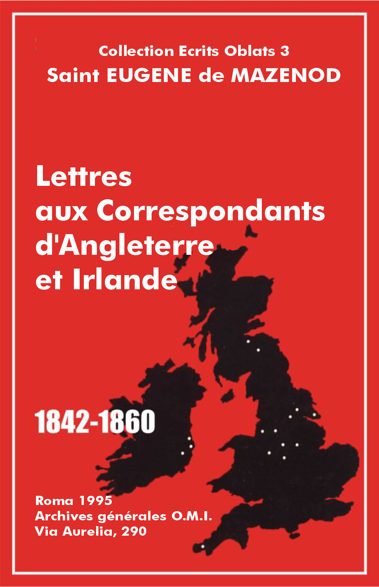

Éscrits Oblats: - 01 - 02 - 03 - 04 - 05 - 06 - 07 - 08 - 09 - 10 - 11 - 12 - 13 - 14 - 15 - 16 - 17 - 18 - 19 - 20 - 21 - 22

Vol.: III - Let. et Doc. Angleterre Irlande
Regret de voir le p. Aubert s'éloigner. Ce ne sera que pour peu de temps, car il est pour le Fondateur la consolation de sa vie et le soutien de sa vieillesse.
[Marseille, le] 27 juillet 1842.
Tu as eu une bonne pensée, mon bien-aimé, de m'écrire de Lyon. Je suis tes pas avec douleur à mesure que tu t'éloignes de moi. J'ai consenti à ton voyage, mais je tremble toujours en te sentant seul sur les grandes routes et traversant les mers. C'est que mon cœur se repose sur ton existence; j'ai toujours pensé que le Seigneur t'avait donné à moi pour être la consolation de ma vie et le soutien de ma vieillesse qui avance vers moi à pas redoublés: nous touchons au jour qui complétera ma soixantaine. Que reste-t-il de l'homme après cet âge? J'ai nourri beaucoup d'enfants; combien y en a-t-il sur les soins desquels je puisse compter? Tous ceux qui m'écrivent mettent en tête de leurs lettres des mots bien doux à lire, mais j'ai appris par l'expérience qu'ils n'expriment pas toujours le sentiment qu'ils signifient. Pourra-t-on me persuader que Dieu exige de moi le sacrifice de celui qui ne s'est jamais démenti dans l'affection qu'il me doit, et qui me présente toutes les garanties pour continuer de mériter ma confiance et mon amour? Dans quel Ordre, dans quelle Congrégation le supérieur ne peut-il pas s'entourer de ceux qui peuvent lui faciliter l'exercice de sa charge et sur lesquels son esprit et son cœur se reposent? Ne fais donc pas de projets définitifs qui tondent à te séparer de moi à tout jamais. Vois, examine, calcule, mais laisse-toi toujours une porte pour sortir.
Vol.: III - Let. et Doc. Angleterre Irlande
Mgr de Mazenod et la Congrégation souffrent de l'absence du p. Aubert. Nouvelles des Oblats du Canada. O'Connell. précieux protecteur de la Congrégation en Irlande.
[Marseille, le] 26 septembre 1842.
Ton absence, à part ce que j'en souffre, nous a entièrement démontés et m'a attire tous les ennuis imaginables de la part de ceux de tes confrères qui n'ont jamais vu autre chose dans la Cong[régati]on que les convenances de leurs maisons. Oh! le sot esprit qu'ont ces gens-là! C'est à en perdre la patience! J'ai fini par leur écrire avec une sévérité contraire à mon caractère, mais nécessaire pour en finir de ce genre de vexation [3].
D'un autre côté, j'éprouve les plus grands chagrins de la part de nos Pères du Canada. Le père Baudran[d], choqué outre mesure du pou d'accord qui existe entre les pensées du p. Honorat et celles du p. Telmon, malgré toutes les recommandations que j'avais faites aux uns et aux autres, a rempli toutes nos maisons de ses plaintes exagérées, a séduit l'ingrat novice qui a écrit de son côté une lettre incroyable qui nous menace d'une fuite, [4] et c'est à 2000 lieues que ces choses se passent! Il est impossible que les gens du dehors ne s'aperçoivent pas de ce désordre et notre bel avenir dans ces contrées est terriblement compromis. Cependant, Dieu fait des miracles pour nous. Malgré des difficultés suscitées par la trahison, le beau domaine de Longueuil, sur les bords du fleuve Saint-Laurent, on face de Montréal, nous à été donné en pur don. C'est une superbe maison, un magnifique jardin, aussi agréable qu'utile, une prairie. Les bienfaiteurs qui ont été si généreux sont disposés à ajouter encore une terre à ces propriétés déjà si considérables; d'autres saintes âmes veulent joindre leurs bienfaits à ceux que l'on a déjà reçus [5]. Voilà pour le temporel. Quant au spirituel, les bénédictions les plus abondantes ont accompagné les dix missions que nos Pères ont déjà données. Deux excellents Prêtres se sont joints à eux, d'autres se sont annoncés [6]. Les Évêques de Toronto et de Québec [7] nous demandent. Mais je tremble que tout échoue par la faute de ces indignes enfants qui ne savent rien supporter, rien sacrifier, rien excuser, si ce n'est leurs propres défauts. Je suis outré, autant qu'affligé, de cette conduite; mais je fais trêve à mes plaintes pour mieux t'expliquer la position de nos affaires temporelles...
Je voudrais bien profiter du papier qui me reste pour te féliciter de ta conquête. Ce que tu me dis de l'excellent M. O'Connell me touche sensiblement. C'est un précieux protecteur [8]. Mais ne craignez-vous [9] pas de vous voir affichés comme des hommes d'opposition en publiant dans votre prospectus la part qu'il veut prendre à votre établissement? Vous êtes sur les lieux, c'est à vous d'en juger. Plus tard nous pourrons faire mieux que de lui donner le scapulaire. Quand il vous aura réellement fait du bien, je pourrai lui donner participation canonique aux œuvres et mérites de la Congrégation, comme je viens de le faire pour les bienfaiteurs du Canada.
Il me reste à te recommander de m'écrire souvent, au moins une fois par mois.
Vol.: III - Let. et Doc. Angleterre Irlande
Projet de fusion avec les Frères de Saint-Patrice en vue d'établir les Oblats en Irlande.
[Marseille, le] 25 décembre 1842.
Tu m'as fait venir l'eau à la bouche en me parlant de ces bons Frères de Saint-Patrice, et n'était que déjà il a fallu décompter des espérances que l'on avait conçues d'abord sur Dublin et puis sur Cork, je me serais bercé de cette idée qui présente des avantages si inattendus [11]. J'attends de nouveaux renseignements pour me livrer à quelque espoir. Il faut pourtant avouer que la lettre du supérieur est bien forte. Dire qu'il ne met pas le moindre doute que toi et les Frères ne concluraient de tels arrangements qui mettent notre Société en possession de leur maison, c'est bien fort;
mais je ne veux pas me flatter et j'attends. Tu ne m'as pas dit si tu devais te rendre bientôt à l'invitation de ce bon père O'Sullivan [12] pour aller t'aboucher avec ces Messieurs. La chose était assez importante pour ne pas renvoyer trop loin cette entrevue.
Vol.: III - Let. et Doc. Angleterre Irlande
Mgr Murphy, évêque de Cork. impose aux Oblats des conditions d'établissement qui ne peuvent être acceptées.
[Marseille, le] 19 février 1843.
Je ne comprends pas quelle sorte de juridiction le Prélat veut exercer au-delà de colle que lui accordent nos Règles? Je ne vois pas quelle concession vous êtes d'avis que nous fassions en sa faveur. N'est-ce pas assez, n'est-ce pas tout ce que l'on peut accorder, de vivre sous son obéissance pour tout exercice extérieur de notre ministère. Ne confesser, ne prêcher qu'autant qu'il y autorisera et seulement où il voudra? Voudrait-il se mêler du régime intérieur de nos communautés ou quoi encore? Je ne puis croire que vous compreniez la chose possible. Pour ce qui est de la stabilité des sujets, ses diocésains, en principe cela ne peut pas être admis, en fait rien de plus probable. Que ferions-nous en France des sujets Irlandais? Je puis donc facilement le rassurer sur ce point, mais faudra-t-il aussi se défendre de s'en servir pour l'Angleterre? Tu es plus que moi à même de juger si cotte réserve ne serait pas nuisible au progrès des établissements d'Angleterre.
Nous n'avons personne, nous n'avons rien, et pour s'établir là n faudrait du monde et de l'argent. Je reviens sur les prétentions de l'Évêque de Cork. Tu as mal fait de ne pas me les spécifier, je serai embarrassé dans le lardon que je vais joindre à cette lettre pour que tu puisses le lui montrer, ainsi qu'au p. O'Sullivan. Il ne faut pas perdre de vue l'exemple des Sulpiciens en Canada. Rien n'est plus dangereux que d'affaiblir les liens intérieurs, on prépare par là des scissions funestes, entre nations et nations, qui finissent par une séparation totale. Nous avons d'autant plus à nous prémunir contre ce danger, que nos communautés en Irlande et en Angleterre seront bientôt composées en entier d'Anglais et d'Irlandais. Un évêque mal intentionné pourrait renvoyer le Français qui serait à leur tête et tout serait dit. Ne faisons donc rien qui puisse nous donner plus tard du chagrin.
Vol.: III - Let. et Doc. Angleterre Irlande
Les Oblats resteront à Penzance, même si les Évoques irlandais ne comptent pas sur le retour des Anglais à la foi catholique. Conseils au p. Daly qui reste seul. N'envoyer au noviciat de N.-D. de l'Osier que les sujets longuement éprouvés sur place.
[Marseille, le] 1 février 1844.
...C'est que tous ces Prélats ont très peu de confiance dans l'avenir et qu'ils sont bien éloignés de partager l'illusion qu'on nous a faite en France sur les dispositions du peuple anglais pour revenir à la vérité de la foi catholique. Le dernier Évêque anglais qui passa par Marseille me détrompa sur toutes les fausses idées que les journaux avaient données à ce sujet. Quoi qu'il en soit nous garderons la mission de Penzance quelque minime qu'elle soit, et notre cher père Daly continuera d'en être chargé. La seule chose qui me fasse de la peine c'est qu'il reste seul des nôtres dans ce pays [15]. Cela n'est guère dans l'ordre et il faudra viser à y pourvoir. Il me semble que les prêtres irlandais sont peu généreux. Ce Power [16] pense apparemment comme les deux que nous avons eu le malheur d'envoyer en Canada. Ils prétendent que tu leur avais assuré qu'ils y gagneraient de l'argent. Un zèle mis à ce prix ne ferait pas pour nous... Revenons à Penzance [17].
En quittant Penzance, recommande bien à notre cher p. Daly de mettre tout en règle dans sa maison, comme les choses doivent être dans nos communautés. Qu'il tienne ses registres en règle. Outre celui de l'avoir et du devoir, celui des messes, celui des actes de la fondation. Il faut qu'il en ait un comme historique de tout ce qu'il fera pour la gloire de Dieu et le salut des âmes, et de tous les événements remarquables, chaque chose à sa date. Recommande-lui aussi de m'écrire tous les mois ou au plus tard toutes les six semaines. Qu'il observe sa Règle de son mieux, mais pour les sujets qu'il n'en envoie point qu'il ne les ait longuement éprouvés. Quand je songe aux mauvais sujets dont vous nous aviez empêtrés, je n'en reviens pas. C'est merveille que nous ayons pu en conserver deux et encore ils auraient mérité l'un et l'autre le sort de leurs malheureux compagnons [18]. Il a fallu agir contrairement à la prudence et compter sur une grâce que Dieu ne promettait pas. Ainsi, grande réserve sur ce point. Nous nous sommes décidés à admettre le f. Walsh à la profession, j'admire la bonté de la Providence à son égard comme à celui du f. Noble.
Je ne parle plus de Cork ni de l'Irlande. L'Évêque de cette ville s'est comporté en bien mauvais pasteur et le zèle de M. O'Sullivan est de bien mince aloi. Que Dieu le bénisse et nous tienne compte du bien que nous voulions leur faire et qu'ils ont si misérablement repoussé [19].
Ce serait un bien que le p. Santoni pût apprendre l'anglais; destiné à succéder tout à fait au maître des novices, dont il n'est encore que le socius, il pourrait dans la suite se rendre utile aux jeunes gens qu'on nous enverra d'Angleterre après les avoir éprouvés à Penzance. Tu te chargeras de lui donner les premières notions de cette langue qui du reste va devenir comme commune dans la Société avec moins d'utilité pourtant que nous n'en avions espéré d'abord.
Vol.: III - Let. et Doc. Angleterre Irlande
En revenant d'Angleterre, le p. Aubert aurait dû faire une visite aux responsables de la Propagation de la foi. Qu'il se repose au noviciat, tout en aidant les novices irlandais. Saluts et encouragements aux pères Pierre Aubert et J. P. Santoni.
L.J.C. et M.I.
Marseille, le 21 mars 1844.
Dieu soit béni, mon cher fils, te voilà en lieu de repos après un bien long pèlerinage. Nous en avons le cœur net maintenant, aussi n'ai-je aucun regret de ce voyage quelque pénible et quelque coûteux qu'il ait pu être. Il ne fallait rien moins que cela, après une déception si prolongée, pour se mettre en paix.
Tu as très bien fait d'agir comme tu l'as fait en arrivant à l'Osier. Tu ne pouvais pas, quelque prière qu'on ait pu t'en faire, t'établir maître des novices dans une maison où chacun est à sa place. Tu pourras néanmoins confesser les novices anglais tant qu'ils ne sauront pas assez de français pour profiter de la direction du maître des novices.
J'attends avec une grande impatience tous les détails que tu me promets, mais pour cela il faut perdre l'habitude que tu as prise de séparer les lignes de tes lettres d'un demi-pied les unes des autres et de laisser une énorme marge en blanc. Facilement on pourrait intercaler [21] une ligne encore entre les tiennes.
J'ai vu avec peine que tu n'as [22] pas été faire une visite au Président et au Trésorier de la P[ro]p[a]g[a]tion de la foi. L'affaire qui est à leur tribunal est d'une trop grande importance pour ne pas l'étayer de tous les moyens qui sont en notre pouvoir [23].
24 [mars].
Miséricorde se perd, il n'y a pas moyen de finir une lettre, Je vais donc cacheter celle-ci pour que tu ne sois pas en peine d'un retard qui se prolonge trop. Je t'embrasse de tout mon cœur et salue tes quatre Irlandais en leur recommandant de bien profiter du reste de noviciat qu'ils vont faire [24]. Adieu.
P.S. Je remercie ton frère des quelques lignes qu'il a ajoutées à ta lettre. J'ai appris avec beaucoup de plaisir qu'il se porte à merveille et qu'il fait bien. Salue-le [25] affectueusement de ma part.
Je te charge de dire au p. Santoni qu'il ait un peu plus de confiance dans la grâce de la mission qu'il a reçue; qu'il s'abstienne de se faire petit devant ceux qui lui sont confiés et qu'il doit diriger. Dis-lui que je suis content, que cela lui suffise [26].
Vol.: III - Let. et Doc. Angleterre Irlande
Nombreuses occupations de Mgr de Mazenod. En attendant son obédience, que le p. Aubert aide les novices irlandais et donne des leçons d'anglais au p. Santoni. Il faudrait des Oblats irlandais au Canada.
L.J.C. et M.I.
Marseille, le 1,7 avril 1844.
J'avais retardé de t'écrire, mon cher fils, pour profiter du retour de nos Pères qui doivent se rendre à l'Osier, mais me voilà pris au dépourvu. Les affaires se succèdent avec une rapidité incroyable. Il m'a fallu m'entretenir des heures entières avec nos Pères sur les intérêts de la Congrégation, et par-dessus le marché voilà l'Évêque de Minorque qui vient de mourir ce qui me donne un nouveau tracas dont j'ai peine à me tirer [28].
J'avais pourtant à te remercier des détails que tu me donnes dans ta dernière lettre sur laquelle il m'est impossible de revenir. Je reviendrai plus tard à tête reposée sur la condition un peu étrange posée par M. le Vicaire Général du district de Penzance. Impossible d'y réfléchir maintenant.
Quant à ta destination ultérieure je ne puis la fixer positivement. Il y a apparence néanmoins que je ne te placerai pas à Lumières, tu ne resteras pas non plus à l'Osier. Continue à donner tes soins comme tu me le dis aux novices irlandais, et à donner les leçons d'anglais au p. Santoni, pour que ce Père puisse dans la suite entendre et se faire entendre quand on lui adressera des sujets anglais ou irlandais. Il nous en faudrait déjà de disponibles pour le Canada, on m'en demande à grands cris, car tu sais que les deux que tu avais envoyés se sont moqués de nous. Je ne comprends pas comment tu t'es laissé tromper à ce point. Ils veulent à toutes forces gagner de l'argent, et ils prétendent que tu le leur as promis. Ils ne sont plus dans la maison et j'avoue que je ne suis pas sans inquiétude d'avoir de pareils sujets pour diocésains [29].
Allons, il faut finir contre ma coutume avant d'avoir barbouillé tout mon papier, mais comment résister à la force majeure! Salue affectueusement ton frère Pierre et tous nos autres Pères.
Je t'embrasse de tout mon cœur.
+ C. J. Eugène, évêque de Marseille.
Vol.: III - Let. et Doc. Angleterre Irlande
Mgr de Mazenod a reçu une lettre des novices irlandais. Avis et conseils pour le noviciat. Nouvelles d'Angleterre. Admission à l'oblation de trois novices irlandais.
L.J.C. et M.I.
Marseille, le 17 mai 1844.
Ne semble-t-il pas, mon cher père Aubert, qu'en prenant ce grand papier je puis[se] me flatter de causer longtemps avec toi. Point du tout. Jamais je n'eus moins de temps à te donner et pourtant je ne veux pas laisser partir nos Pères et Frères pour N.-D. de l'Osier sans te dire au moins un petit mot. J'ai été enchanté de tout ce que tu m'as appris de nos chers novices irlandais. Leur lettre m'a fait le plus grand plaisir, je leur répond[s] pour leur on témoigner ma satisfaction. Je voudrais aussi écrire q[ue]lques lignes à ton bon frère Pierre, j'espère le faire après-demain, car on vient me prendre aujourd'hui à l'instant même, et demain je serai toute la journée à l'église de la Trinité.
Je ne voudrais pas que vous attendissiez trop pour admettre à la profession ceux de nos novices qui sont prêts. II n'est pas dit que Bouvier puisse être admis si tôt. Avant de fermer ma lettre, je vous donnerai la décision du Conseil que j'assemblerai après-demain lundi.
Je n'ai rien reçu du p. Daly. Je vous ai dit que le Vicaire Apostolique m'a écrit une lettre tout aimable. Je vous en enverrai copie. Il ne doit pas passer par Marseille [31]8.
Ne tarde pas de m'exposer les raisons que tu dois m'alléguer pour me faire changer de détermination par rapport à ta future destination; j'attends aussi tes observations sur la com[mu]n[au]té. Ce n'est pas le temps qui te manque, pourquoi tant différer?
Je te quitte parce qu'il faut que je sorte. Adieu, je t'embrasse de tout mon cœur.
+ C. J. Eugène, évêq[ue] de M[arsei]lle.
P.S. Les trois novices irlandais Robert Cooke, Pierre Grey et Edouard Bradshaw ont été admis à l'unanimité pour faire leur profession. Je te prie de le dire de ma part au p. sup[érieur] local et au p. Vincens.
Vol.: III - Let. et Doc. Angleterre Irlande
Le p. Aubert recevra les vœux des novices irlandais. Lettre du p. Daly: nouvelles de Penzance.
L.J.C. et M.I.
Marseille, le 11 juin 1844.
Tu dois attendre avec impatience, mon cher Aubert, un petit mot de moi avant la fête du Sacré-Cœur. J'ai été si occupé à l'occasion du départ du p. Guigue[s] que je n'ai pas eu un moment pour t'écrire, d'autant plus que je n'étais pas dispensé de remplir mes autres devoirs très multipliés, comme tu sais, à Marseille.
Je te charge donc avant tout de dire au p. Vincens que je consens très volontiers que tu reçoives les vœux de tes Irlandais.
Je te dirai ensuite que j'ai été si enchanté des sentiments de ton frère que j'ai cru devoir lui écrire une lettre qui certainement lui aura fait plaisir.
J'ai enfin reçu une lettre du p. Daly. Il me dit les choses les plus intéressantes avec une simplicité admirable; mais il est bien mécontent de M. Power. Ce jeune homme t'a trompé, comme les deux autres que tu as envoyé[s] en Canada. Il ne pense qu'à sa petite personne et n'est rien moins qu'édifiant. Il ne fait presque rien, je pense qu'il faudra nous débarrasser de lui au plus tôt.
Quant au bon p. Daly, il fait des merveilles. Il est très content de sa charmante mission. Il me dit que c'est on ne peut plus consolant de voir notre belle église tous les dimanches remplie de monde. Il n'y a jamais moins de 3 à 400 protestants de toutes les sectes, qui viennent entendre prêcher les s[ain]tes vérités de la religion catholiq[ue]. Les églises protestantes sont presque abandonnées, tandis que la nôtre est toujours pleine même quand il fait le plus mauvais temps. Ceux même qui viennent par curiosité sortent toujours édifiés et très contents. Ils observent tous une très grande modestie dans l'église; ils sont dans l'admiration de nos cérémonies et de notre doctrine, et ils en concluent que la religion catholique est bonne. Il ajoute qu'il y a dans ce moment-ci une tendance extraordinaire vers notre s[ain]te religion et que les esprits sont tous en mouvement et cherchent la vérité avec une avidité extraordinaire, inexprimable, pour me servir des termes du cher p. Daly que je ne fais que copier. Depuis ton départ sa Congrégation s'est augmentée de 8 personnes. Le saint jour de Pâques a été vraiment un beau jour pour eux. Il me fait la description on détail de la fête. Il a confessé de bonne heure pour passer ceux qu'il n'avait pas pu confesser la veille. À la messe de huit heures il a donné la s[ain]te communion à trente personnes; à la grande messe, à 11 heures, l'église était pleine. Le chœur qu'il a formé a très bien chanté. M. Power a prêché un assez bon sermon. Tout s'est passé avec beaucoup de solennité. Les protestants étaient ravis de tout ce qu'ils voyaient et entendaient. Le soir, à l'office de 3 heures, il y avait dès 2 heures au moins 500 personnes dans les bancs, [occupés] [33] par des personnes comme il faut. Il y avait encore au moins 250 personnes debout au milieu de l'église. Malgré cette affluence, il régnait un profond silence dans l'assemblée. Le p. Daly prêcha et donna la bénédiction. Puis il annonça qu'il y aurait la cérémonie du baptême d'une famille entière... [34].
Vol.: III - Let. et Doc. Angleterre Irlande
Rappeler aux Conseils de la Propagation de la foi les besoins de Penzance. Pendant l'été, le p. Aubert enseignera la morale et la littérature aux novices.
L.J.C. et M.I.
Marseille, le 1 juillet 1844.
Le p. Vincens, mon cher p. Aubert, te donnera de mes nouvelles. Cependant je pense que tu seras bien aise d'en recevoir directement ne fût-ce qu'en deux mots. Je suis d'ailleurs bien aise de te dire, pour répondre à un article de ta lettre, qu'il me semblerait tout naturel que tu rappelasses toi-même aux Conseils centraux de la P[ro]p[a]g[a]tion de la foi les besoins pressants de la mission de Penzance pour accélérer les secours qu'on attend d'eux. Tu as qualité pour cela puisqu'ils savent que tu as fondé cette mission. Ils viennent de m'accorder les fonds pour le voyage du trois[iè]me mission[nai]re que j'ai envoyé en Canada.
Je te dirai encore que j'ai dit au p. Vincens de te charger de faire une classe de théologie morale aux novices qui doivent venir continuer ici leur théologie. Ce sera le traité de la justice que tu auras à leur montrer cet été en commençant tout de suite. Cet hiver le p. Santoni leur fera voir un traité de dogme.
Ce n'est pas tout. Tu seras chargé aussi d'une classe de littérature pour occuper utilement ceux de nos jeunes gens qui vont monter à l'Osier. Tu vois que je te fais sortir un peu de ta solitude, mais tu sais que nous devons vivre pour la Société, c'est se consacrer au service de l'Église.
Je ferai mon profit des observations que tu me communique[s]. Elles sont justes et je pourrai m'en servir d'autant plus facilement, en déguisant la source d'où elles me viennent, que le p. Guigue[s] m'a mis sur la voie de parler en cette matière en me faisant remarquer certains oublis dans lesquels on tombe trop facilement en voyageant. Adieu, le p. Vincens va partir. Je t'embrasse de tout mon cœur.
+ C. J. Eugène, évêq[ue] de M[arsei]lle.
Vol.: III - Let. et Doc. Angleterre Irlande
Encouragements et conseils au p. Perron, supérieur de la maison de Grâce-Dieu. Être fidèle aux Constitutions et se conformer aux usages des maisons de France.
[Marseille, le] 25 août 1845.
Mettez votre confiance en celui au nom de qui vous êtes envoyé et soyez persuadé qu'il bénira votre obéissance et répandra les grâces les plus abondantes sur les œuvres de votre ministère... [37] Avant toutes choses attachez-vous avec un soin extrême à tout ce que prescrivent nos Règles et Constitutions. Vous avez dans le livre où elles sont consignées un conseiller sûr et fidèle que vous pourrez consulter dans toutes les occasions et dont les avis vous porteront toujours à faire ce qu'il y a de plus agréable à Dieu et de plus utile à vous-même et aux autres.
Conformez-vous autant que possible aux usages de nos maisons de France et n'adoptez de ceux du pays où vous vivez que ce qui est indispensable et s'accorde mieux avec les besoins de votre position.
Soyez exact à tenir vos divers registres en règle et à veiller avec sollicitude sur le spirituel et le temporel de la communauté.
Que l'ordre et la régularité règnent dans l'intérieur de la maison et qu'ainsi la bonne odeur de J[ésus]-C[hrist] se répande tout autour des lieux que vous habitez.
Vol.: III - Let. et Doc. Angleterre Irlande
Conseils au p. Daly: esprit de pauvreté, vie intérieure, observance des Règles, bonne entente avec M. l'abbé Power.
[Marseille, le] 6 décembre 1845.
Dans votre position, mon cher p. Daly, vous avez une grande responsabilité et il ne faut rien moins que la confiance que vous m'inspirez pour me rassurer. Il est essentiel, mon cher fils, que vous soyez bien uni à Dieu, parce que vous avez souvent à vous déterminer par les lumières qu'il voudra bien vous accorder, n'ayant ni le temps ni la possibilité de consulter. Pour cela, cher ami, il faut que vous suiviez votre Règle à la lettre et dans son esprit, ne vous permettant rien de ce que vous ne feriez pas si vous étiez sous mes yeux et sous ma direction immédiate.
Il m'a été dit que vous traitiez avec trop de rigueur votre compagnon M. Power. Vous savez le besoin que nous avons de lui [39], d'ailleurs on obtient plus par la douceur que par une excessive sévérité [40].
...Aussi que vous ne faisiez pas assez de cas de la pauvreté, que vous vous étiez oublié jusqu'à dépenser une guinée pour acheter un oiseau, ce qui serait vraiment très répréhensible.
Évitez avec soin, mon bien cher fils, tout ce qui peut nuire à l'esprit intérieur qui doit vous animer, vous vous exposeriez à perdre le mérite et le fruit du beau ministère que vous remplissez au nom de la famille dont vous êtes un des enfants chéris. Au reste, je ne vous dis pas ceci en guise de reproche, mais comme une observation, pour que vous vous teniez mieux sur vos gardes dans la position délicate où vous vous trouvez... Que de grâces nous devons rendre à Dieu pour les bénédictions qu'il daigne répandre sur nos œuvres! mais rendons-nous dignes de cotte faveur par une grande fidélité à nos devoirs. Vous savez que l'on prêche plus encore par l'exemple que par les paroles...
Vol.: III - Let. et Doc. Angleterre Irlande
Pouvoirs de Visiteur canonique en Angleterre.
[Marseille, le] 15 juillet 1846.
Charles Joseph Eugène de Mazenod
Supérieur Général de la Congrégation des Missionnaires Oblats de la Très Sainte et Immaculée Vierge Marie
À notre fils aimé dans le Christ Rév. Père Casimir Joseph Aubert, prêtre de la même Congrégation et supérieur de Notre-Dame de Marseille
Salut dans le Seigneur
Vu que, la miséricorde de Dieu intervenant, des maisons de notre Congrégation ont été établies en Grande-Bretagne en vue d'y travailler de jour en jour à promouvoir la gloire divine et à procurer le salut des âmes surtout par la conversion de celles que détient l'erreur, nous avons jugé aujourd'hui que vous étiez vous-même le plus idoine à prendre en mains la cause de ces maisons et à vaquer le plus fructueusement à leur visite.
C'est pourquoi nous vous octroyons pleine faculté de visiter ces maisons, avec jouissance là même de toutes les prérogatives qui selon le paragraphe N.. de nos Règles et Constitutions sont attribuées aux Visiteurs. Soyez nanti en plus du pouvoir de constituer ces maisons et d'assigner aux fonctions qu'elles comportent, y compris celles qui nous sont spécialement réservées, ceux qui vous paraîtront aptes à les remplir, et de vaquer aux autres charges qui, selon l'esprit de l'Institut et la teneur des présentes lettres, vous sembleront opportunes et utiles.
Par ailleurs, comme le motif de votre mission en Grande-Bretagne est de promouvoir le bien de l'Église par la diffusion de notre Congrégation de la Bienheureuse Vierge Marie Immaculée, en cela aussi, selon notre entière compétence nous vous octroyons plein pouvoir d'agir, approuvant tout ce que vous aurez entrepris et déclarant ratifié tout ce que vous aurez conclu. C'est pourquoi nous vous recommandons à la bienveillance des Illustrissimes et Révérendissimes Prélats soit d'Angleterre, soit d'Irlande, afin qu'ils veuillent vous considérer comme notre digne délégué et traiter avec vous avec bonté et favorablement de toutes les affaires relevant de votre mission. Nous les prions aussi dans le Seigneur qu'ils vous autorisent à célébrer la Messe et à accomplir, si les circonstances le demandent, les autres fonctions sacerdotales, étant avéré que non seulement vous êtes au-dessus de tout soupçon et entièrement libre de censures ecclésiastiques, mais aussi que vous brillez par l'éclat de toutes les vertus, jouissant auprès de tous d'une réputation irréprochable. Ce dont, en vérité, nous pouvons témoigner et de fait nous témoignons auprès de tous ceux que la chose peut en droit intéresser ou intéresse.
Assumez donc, fils aimé, avec notre bénédiction, la mission que nous avons voulu vous confier. Que tous les saints patrons de l'Angleterre et de l'Irlande vous viennent en aide. Que la Très Sainte et Immaculée Vierge Marie, notre Mère très aimante, vous garde par une protection continuelle. De notre part, nous ne cesserons d'implorer du ciel une abondante pluie de grâces pour vous et pour tous ceux de notre Société placés sous votre direction.
Donné à Marseille, en l'an du Seigneur 1846, le 15 juillet.
+ C. J. Eugène, évêque de Marseille.
Vol.: III - Let. et Doc. Angleterre Irlande
Que les Pères de Grâce-Dieu étendent leur zèle dans la région.
[Marseille, le] 1 août 1846.
Je partage les impressions que t'a fait éprouver le site charmant de la Grâce de Dieu. [43] Nos Pères y seront à merveille, mais je voudrais qu'ils y eussent une autre condition que celle de simples curés. Je tiens à ce qu'ils puissent étendre leur zèle, d'abord aux environs et ensuite plus loin encore comme on fait à Penzance. C'est ce qui me fait tant désirer que la mission d'Ashby réussisse [44].
Vol.: III - Let. et Doc. Angleterre Irlande
Envoi d'une somme d'argent, recueillie parmi les fidèles de Marseille, pour soulager les maux qui affligent l'Irlande.
Marseille, le 14 avril 1847.
Monseigneur,
Touché comme je devais l'être des maux qui affligent l'Irlande [46], j'ai pensé que les fidèles de mon diocèse ne pouvaient y rester étrangers et qu'ils devaient au moins un témoignage de charité envers leurs frères malheureux. J'ai fait un appel à leur bonne volonté dans un mandement publié à cet effet. Quoique nous soyons dans une ville où une multitude d'œuvres importantes et d'établissements charitables n'ont d'autres ressources que les dons volontaires d'une charité à tout moment sollicitée pour cela, néanmoins, une sympathie inspirée par l'esprit catholique s'est manifestée assez généralement pour l'objet de ma demande. La quête faite dans les églises où le denier du pauvre s'est confondu avec l'offrande du riche a produit une somme d'environ vingt mille francs de notre monnaie. Celle qui avait eu lieu quelque temps auparavant pour les départements français ravagés par les inondations n'avait pas donné beaucoup plus de huit mille francs. Si modiques que soient ces sommes pour de si grands besoins, elles ont encore quelque valeur comme preuve de bonne volonté, à raison des circonstances, des charges continuelles et du petit nombre de paroisses de mon diocèse.
J'aurais voulu pouvoir faire jouir tous les diocèses de l'Irlande du produit de notre quête mais ce serait diviser ce qui déjà n'est pas en soi considérable; je me borne donc à ne faire des envois que là où j'ai dû croire que les besoins étaient plus étendus eit plus pressants. J'ai compris votre diocèse, Monseigneur, pour la somme de 150 livres sterling que je tâcherai de vous transmettre dans quelques jours au moyen d'un papier sur Londres.
Il m'est doux de pouvoir m'associer quelque peu à votre charité qui adoucit tant de maux et essuie tant de larmes. Les grandes épreuves auxquelles est soumise votre infortunée patrie me font regretter toutefois de ne pouvoir pas contribuer à son soulagement pour une plus grande part.
Veuillez agréer avec l'expression, de ma vive sympathie pour les Irlandais, celle du respectueux attachement avec lequel je suis, etc.
+ C. J. Eugène, évêque de Marseille.
Vol.: III - Let. et Doc. Angleterre Irlande
Envoi dé 25 livres sterling.
Marseille, le 15 avril 1847.
Mademoiselle,
Je viens d'écrire à Mgr l'Évêque de Killarney pour lui annoncer que je vais lui faire parvenir la somme de 150 livres sterling pour les pauvres de son diocèse. Je lui dis en même temps que j'ajouterai à ces 150 livres encore 25 livres que je le prierai de Vous remettre pour les malheureux secourus par la Société des Dames au nom de laquelle vous m'avez fait l'honneur de m'écrire.
Il se trouvera par là que le diocèse de Killarney [48] aura reçu 25 livres de plus que les autres, mais je n'ai pas voulu que votre confiance en vous adressant à moi fût sans résultat. La somme est petite pour de si grands besoins, mais dans notre patrie nous avons déjà tant de souffrances que la charité en est vraiment surchargée et c'est ce qui vous explique pourquoi j'ai été jusqu'à présent le seul Évêque français qui ait osé faire un appel en faveur de l'Irlande dont la situation excite cependant de vives sympathies en France.
Je me félicite d'avoir pu, pour si peu que ce soit, m'unir aux mérites de vos bonnes œuvres et d'avoir cette occasion de me recommander à vos prières et à celles des Dames de votre société. [Je leur souhaite] de mon côté, dans les malheurs qui affligent votre pays, toutes les consolations que leur charité mérite.
Je suis avec respect...
+ C. J. Eugène, évêque de Marseille.
Vol.: III - Let. et Doc. Angleterre Irlande
Que Mgr Wiseman, en visite à Rome, console le Pape. Désir d'occuper les Oblats d'Angleterre non dans des paroisses mais, selon leur vocation, dans les missions au service des Évêques.
[Marseille, le] 17 août 1847.
Je ne dois pas vous dissimuler que mon intention n'était pas de réduire nos missionnaires à la condition de curés. J'aurais voulu fonder en Angleterre une véritable communauté de nos Oblats, vivant selon leurs Règles dans l'intérieur de la maison, et allant ensuite sur l'ordre des Évêques porter des secours où ceux-ci les croiraient utiles. [50]
Vous êtes arrivé dans un temps où l'on donne bien de l'ennui au Souverain Pontife, à ce véritablement bon et saint Père. Votre présence aura été un soulagement à ses peines; je me suis consolé plusieurs fois dans cotte pensée. Mon dévouement pour sa personne sacrée est tel que je me serais trouvé heureux de me rencontrer avec vous à ses pieds. Je ne cesse de prier pour qu'il ne succombe pas sous l'énorme fardeau qui pèse sur lui.
Vol.: III - Let. et Doc. Angleterre Irlande
Le p. Naughten peut exercer son ministère en dehors de la Congrégation, mais à certaines conditions posées par le Fondateur.
[Marseille, le] 1 mai 1848.
À cause des malheurs de votre famille [52], je reconnais que c'est le cas de vous accorder toutes les dispenses compatibles avec votre vocation. Je consens donc à ce que vous acceptiez une mission dont vous retirerez les émoluments pour soulager la détresse de votre mère et de votre sœur. Mais voici à quelles conditions je prétends vous livrer ainsi à vous-même, séparé de toutes nos communautés:
1 - Je tiens beaucoup à ce que de temps en temps vous reparaissiez dans une de nos communautés pour y passer un ou deux jours avec. vos frères et pour vous présenter en direction au supérieur.
2 - Que vous soyez exact à rendre compte de l'emploi que vous faites de l'argent que vous êtes autorisé à percevoir. Vous sentez qu'en vertu de votre vœu de pauvreté vous ne devez pas vous écarter d'une juste modération. Contentez-vous pour ce qui regarde votre personne de l'honnête nécessaire, et pourvoyez sans luxe ni aucun excès aux besoins de votre mère et de votre sœur. S'il y a de l'excédent dans le revenu que vous retirerez, vous devrez en rendre compte au supérieur. La décision de l'emploi que vous en devrez faire vous sera donnée par lui ou par le Visiteur Général [53].
Vol.: III - Let. et Doc. Angleterre Irlande
Inquiétude du Fondateur au sujet de la santé du p. Aubert qui n'écrit pas.
L.J.C. et M.I.
Marseille, le 17 juillet 1848.
Je suis, mon cher p. Aubert, dans une peine impossible à décrire. Je n'ai pas reçu de lettre de toi depuis la p[remiè]re que tu m'as écrite en arrivant en Angleterre. Le Tablet, qui a rendu compte de la cérémonie du 4 et qui fait mention de tous les Ordres et Congrégations qui y ont assisté, ne dit pas un mot des Oblats de Marie, ce qui laisse supposer que tu n'étais pas présent à cette fête, ni personne des nôtres [55]. Qu'en dois-je conclure? C'est que tu es tombé malade en arrivant à [Ashbourne] [56] chez le p. Daly et que ton état est assez alarmant pour que ni le p. Daly ni le p. Trudeau aient pu te quitter pour se rendre à Londres. Mais comment expliquer que ni l'un ni l'autre de ces Pères aient eu l'idée de m'écrire soit pour me rassurer soit pour me préparer à la nouvelle de ta maladie. Je ne comprends rien à cotte manière de faire. Tout ce que je sais c'est que j'éprouve une inquiétude, un chagrin au-dessus de toute expression.
J'attendais avec une impatience extrême les détails que tu avais à me donner; j'aurais bien de mon côté des choses à te dire mais vraiment je n'en ai pas le courage. Je me figure que tu as pris le typhus comme le p. Perron [57] dans quelque voiture imprégnée de ce venin. Tu n'étais d'ailleurs pas trop bien portant quand tu es parti. Cette irritation du larynx aurait bien pu dégénérer en fluxion de poitrine. Dieu sait si on t'aura soigné comme je le fis faire lorsque tu fus atteint de cette maladie au Calvaire. Bref, il n'y a pas de visite pastorale qui ait pu me distraire de mes noirs pressentiments; les alertes que l'on [58] nous donne sans cesse ne me détournent...
Adieu, mon cher fils, voilà encore un jour de plus sans nouvelles de toi. J'en meurs. Adieu.
Vol.: III - Let. et Doc. Angleterre Irlande
Il faudra probablement abandonner la maison d'Ashbourne.
[Marseille, le] 15 septembre 1848.
Dieu n'a pas béni une acquisition faite en dehors des prescriptions de nos saintes Règles; entreprise d'une manière trop humaine, elle a subi le sort des choses humaines [60].
Vol.: III - Let. et Doc. Angleterre Irlande
Acte de nomination comme supérieur de la maison d'Ashbourne et des Oblats d'Angleterre.
18 octobre 1848
Charles Joseph Eugène de Mazenod Évêque de Marseille
et Supérieur Général de la Congrégation des Oblats delà Très Sainte et Immaculée Vierge Marie
A notre fils aimé dans le Christ Charles Bellon, prêtre de la même Congrégation
Salut et Bénédiction Apostolique
Votre piété, votre doctrine et votre prudence nous étant en toute certitude connues, nous, à qui incombe de gouverner la Congrégation entière des Oblats de la Très Sainte et Immaculée Vierge Marie, nous vous choisissons et, par les présentes, vous nommons et instituons supérieur dans la maison sise à Ashbourne placée en tête de notre province d'Angleterre; enjoignant à tous et à chacun des Révérends Pères et Frères aimés qui composent la famille de cette maison, de vous recevoir comme Vicaire dépositaire de notre autorité et de vous prêter l'obéissance, l'affection et la révérence par lesquelles, dans une maison religieuse, les sujets doivent honorer le supérieur légitime.
En outre, étant nécessaire, à cause de la distance et des multiples difficultés non légères qui peuvent surgir, que l'un d'entre nous remplace le Supérieur Général dans ses rapports avec ces maisons déjà existantes en Angleterre ou qui y seront établies dans l'avenir, auquel alors pourront recourir soit les supérieurs locaux soit leurs sujets, vous, Révérend Père, homme bien connu par vos dons recommandables et animé d'une affection éprouvée envers nous et notre Congrégation, nous vous choisissons pour occuper cette charge et vous constituons Provincial [62] dos dites maisons.
En conséquence, vous jouirez: 1. de toutes les facultés que nos Règles et Constitutions concèdent aux supérieurs locaux selon le paragraphe VII, du Chap. 1 de la 3ème partie; et aux Visiteurs durant la visite, selon le paragraphe VI du même chapitre.
2. Nous vous conférons la faculté spéciale d'expédier en notre nom les dimissoires en vertu desquelles les membres de notre Congrégation peuvent et sont habilités à recevoir n'importe quel ordre ecclésiastique.
3. En un mot, dans les limites de notre province d'Angleterre, nous vous confions de remplacer le Supérieur Général, vous communiquant son entière juridiction; restant sauf toujours le droit suprême de son autorité, et excepté les cas suivants: 1. - la convocation du Chapitre général; 2. - l'expulsion de tout Oblat; 3. - l'admission des novices à l'oblation perpétuelle; 4. - la fondation de nouvelles missions et maisons.
Dans la conduite des affaires provinciales, vous apporteront aide à titre d'assesseurs les supérieurs locaux des diverses maisons, que vous devrez consulter au moins par lettres.
De toutes les choses traitées et de tout ce qui touche à l'état de votre province, vous aurez soin de nous rendre compte chaque mois et plus fréquemment quand cela pourra se faire commodément.
Allez donc, fils aimé, sous les auspices de l'obéissance au poste qui vous est assigné, vous efforçant jour et nuit de vous y montrer excellent supérieur et d'y remplir à l'égard des nôtres, qui en ce lieu servent Dieu, par la parole, le cœur et les œuvres, les devoirs d'un bon Pasteur et d'un père prévoyant, soucieux tout d'abord de maintenu- parmi eux l'unité du Saint-Esprit dans le lien de la paix, et de promouvoir incessamment la volonté et la pratique de l'observance régulière; à cette fin, nous implorons du ciel un puissant secours et l'ample protection de l'Immaculée Vierge notre Mère très aimante.
Donné à Marseille sous notre seing et sceau, le 18ème jour d'octobre, en l'an du Seigneur 1848.
Vol.: III - Let. et Doc. Angleterre Irlande
Remerciements pour les bonnes nouvelles. Attirer des sujets anglais dans la Congrégation.
[Marseille, le] 15 décembre 1848.
Mon très cher et bon fils, votre lettre a été pour moi un baume par tout ce que vous me dites d'édifiant. Si nos affaires temporelles ne sont pas brillantes en Angleterre, du moins le bon esprit règne parmi nos Pères et l'édification que donne leur régularité produit peut-être autant de conversions que leurs paroles. J'en bénis le Seigneur de toute mon âme et je prévois avec une indicible consolation que le bien se propagera encore davantage...
...Nous n'avons que des sujets irlandais... Tâchez donc d'attirer un si grand nombre de sujets anglais que nous puissions en fournir aux quatre coins du monde.
Vol.: III - Let. et Doc. Angleterre Irlande
Projet de fonder une maison d'études en Angleterre.
[Marseille, le] 24 février 1840.
J'ai quelques observations à faire sur votre projet de maison d'études ou oblationnat [65]. Nous voyons un inconvénient à. le former selon le plan que vous proposez; il en résulterait une altération de l'esprit qui doit animer tous les membres de notre famille. C'est bien assez du Canada. Tous les Irlandais ont puisé en France l'excellent esprit qui les anime, l'attachement qu'ils professent pour la Congrégation. Il faudrait trouver un moyen d'obvier à cet inconvénient. Le voici. Tout en s'arrêtant au projet de former cette maison d'études théologiques, on pourrait la faire occuper et par les Irlandais qui ont passé déjà quoique temps en France et par les Français qui se destinent aux missions étrangères. Les Anglais et les Irlandais viendraient en échange étudier au moins deux ans en France pour se former à notre esprit et à notre langue et se faire connaître au Supérieur...
Vol.: III - Let. et Doc. Angleterre Irlande
Obédience pour l'Angleterre.
L.J.C. et M.I.
Marseille, le 25 avril 1849.
Je viens d'écrire, cher fils, au père Mille pour qu'il transmette au p. Coste l'ordre de se- transporter sur le champ à Lumières pour vous remplacer. Dès qu'il sera arrivé vous forez vos paquets et vous vous rendrez auprès de moi pour de là prendre votre essor et aller jusqu'en Angleterre où le p. Bellon vous attend à bras ouverts [67]. Je vous appelle d'abord auprès de moi pour me procurer la consolation de vous embrasser et vous donner mes instructions.
Je vous remercie de votre bonne lettre, elle m'a fait le plus grand plaisir; je voulais vous le dire plus tôt, mais j'en ai été détourné jusqu'à présent, que le besoin me force de laisser en arrière les vingt-sept lettres que j'ai à écrire, pour vous faire connaître votre destination ultérieure.
Adieu, mon bien cher fils. Vous connaissez la tendre affection que j'ai pour vous, je serai heureux de vous l'exprimer bientôt en vous pressant contre mon cœur. Je vous bénis en attendant et vous embrasse paternellement.
+ C. J. Eugène, évêque de Marseille.
Vol.: III - Let. et Doc. Angleterre Irlande
Le p. Pierre Pâlie ne veut pas aller en Angleterre; le p. Joseph Arnoux, au contraire, accepte son obédience sans la moindre hésitation.
[Marseille, le] 12 mai 1849.
Voici le chef-d'œuvre de Pâlie. C'est un modèle de s[ain]te indifférence!... "Oh, mon Père, permettez-moi de vous le dire, je ressens une répugnance extrême pour les pays étrangers et surtout pour l'Angleterre. Je ne sais pas un seul mot d'anglais et je crois que je n'en saurai jamais, je n'ai aucune aptitude pour les langues, etc. Je vous en supplie, mon Révérend Père, délivrez-moi de ce fardeau, souvenez-vous de ce que vous m'avez dit que je n'étais pas fait pour les séminaires. De grâce, mon Père, il en est d'autres que vous mettriez au comble du bonheur, et moi que je serais malheureux loin de la France, sans comprendre un seul mot de leur langage, inutile pendant bien longtemps et si loin de vous. Et puis, mon Père, aurai-je un p. Magnan, un p. Vincens? Oh! que mon sort serait triste..."
Tout le reste sur ce ton. Il finit: "Oh! que votre réponse me fera du bien. Je l'attends comme une douée rosée qui fera reverdir mon âme séchant d'épouvanté".
A-t-on jamais rien entendu de plus misérable? Que faire avec de pareilles âmes? Je ne croirais pas te faire un présent en violentant cette pusillanimité. Le p. Vincens, brodant sur le tout, m'écrit que l'épreuve serait trop forte pour la faible vertu de ce sujet. Ce serait briser son existence.
Tout bien considéré, je le laisse où il est puisque le p. Vincens espère en tirer parti, ce qui ne serait pas facile à tout autre.
Que mon esprit se repose vite sur cet excellent Arnoux. Pas un mot de réplique, pas la moindre observation. Mère, pays, rien de tout cela n'a été objecté. Il marche parce qu'on l'appelle. Que Dieu bénisse de pareils sujets et qu'il nous en, accorde un grand nombre!
Vol.: III - Let. et Doc. Angleterre Irlande
Amitié. Écrire chaque mois pour donner des détails sur les novices et sur les Pères de la province. Personnel du noviciat de Maryvale.
L.J.C. et M.I.
Marseille, le 12 mai 1849.
Je ferai force de voiles, cher p. Bellon, pour ne pas laisser partir notre bon p. Arnoux sans lui donner quelques mots d'amitié pour vous. Vous êtes bien avare, cher ami, je ne sais plus à quelle date vous m'avez écrit. Cependant, si je ne me trompe, j'ai droit à une de vos lettres au moins une fois par mois. Je sais que vous vous reposez sur le p. Aubert, et que ce cher Père me donne en effet de vos nouvelles; mais ce n'est pas assez au gré de mon cœur. Me connaîtriez-vous assez peu pour croire qu'il m'en coûte peu de faire le sacrifice des enfants que je chéris le plus. Sans doute, je me résigne à la volonté de Dieu qui exige ce sacrifice pour sa gloire et le salut des âmes que nous sommes appelés à convertir et à sanctifier, mais je n'ai pas assez de vertu si l'on doit donner ce nom à l'abandon entier, à l'oubli de ceux que j'arrache d'auprès de moi pour les envoyer où Dieu les appelle. Indépendamment donc de ce que la Règle exige d'un provincial et d'un maître des novices, faites que je doive aussi à votre amitié pour votre vieux père de plus fréquents souvenirs. Vous avez à me rappeler le personnel de votre noviciat et à me donner des notes sur chacun de vos novices, II faut me parler aussi des Pères qui sont à votre portée. Plus tard vous aurez à me parler de tous ceux qui composent votre province. .Tant que le p. Aubert est sur les lieux, à la bonne heure, qu'il se charge de ce soin, mais ne vous reposez pas tellement sur lui que vous preniez des habitudes de paresse.
Je vous charge spécialement de dire des choses aimables de ma part à tous nos novices et en particulier au prêtre que la divine Providence vous a donné pour votre consolation et pour l'édification de tous nos sujets [70].
Vous n'avez pas mal jeté votre dévolu en enlevant le f. Tortel sur lequel on comptait ici pour bien des choses. Passe pour le f. Cooke [71], celui-là vous était destiné, mais le p. Arnoux, le f. Tortel, le f. Jolivet, cela s'appelle faire rafle. Jouissez-en, mes chers enfants, pour le plus grand bien et la gloire de Dieu.
Je vous embrasse de tout mon cœur et vous bénis ainsi que toute votre famille.
+ C. J. Eugène, évêque de Marseille.
P.S. Quand vous m'écrirez, prenez-vous y à l'avance pour ne point laisser de blanc dans vos lettres.
Vol.: III - Let. et Doc. Angleterre Irlande
Le f. Jolivet, ordonné prêtre, partira pour l'Angleterre. Le p. Louis Keating, mécontent d'avoir été envoyé à Ceylan, refuse d'apprendre la langue du pays. Amitié. Nombreux soucis du Fondateur.
[Marseille, le] 22 mai 1849.
Le p. Jolivet a été ordonné prêtre le dimanche avant l'Ascension et il a dit sa première messe le jour de l'Ascension, faute sans doute de savoir la bien dire. Il se mettra prochainement en route pour l'Angleterre avec le p. Arnoux. Le p. Jolivet est entré dans la Congrégation pour aller aux missions étrangères, c'est toujours son attrait; mais il m'écrit, en [m']apprenant son élévation au sacerdoce, qu'il n'a aujourd'hui d'autre volonté que d'obéir. Il ne faut pourtant pas perdre de vue les premières inspirations qui l'ont amené parmi nous.
Il faut pour la mission de Nesqually au moins deux prêtres parlant anglais; mais si nos Irlandais bornent leur zèle à l'Angleterre et qu'ils soient tous de la trempe de leur compatriote, le p. Keating, qui s'étonne qu'on ait eu l'idée de l'envoyer, lui Irlandais, à Ceylan, nous pourrons difficilement pourvoir aux besoins de nos missions. Il faut recommander au p. Bellon d'inspirer aux Irlandais l'esprit d'abnégation et de sacrifice. Ils sont en général très portés à se procurer leurs aises et ne voyant d'intéressant dans l'univers que leur pays. Il faudrait pourtant que nous puissions en détacher pour les missions lointaines, mais il faut du zèle pour cela... Je suis on ne peut plus contrarié de la conduite du p. Keating à Ceylan qui s'obstine à ne pas vouloir apprendre la langue du pays... J'éprouve, je l'avoue, un sentiment d'indignation contre ce lâche religieux déjà infidèle à sa vocation, puisqu'il n'a pas craint de menacer de demander la dispense de ses vœux.
...Dans la douleur qui m'oppressait, cher fils, ai-je eu tort de t'en dévoiler la cause? Mon Dieu, je le crains, en voyant dans quel état t'a mis cette affreuse nouvelle. Mais pouvais-je te la laisser ignorer?... Si tu [avais été] auprès de moi, nous aurions pu en causer... Toujours est-il que ta douleur augmente là mienne de tout le poids de l'amour que je te porte. Te sentir dans le chagrin et ne pouvoir te consoler en prenant de ton mal tout ce que je puis en supporter! J'ai voulu t'écrire tout de suite, c'était un besoin' pour moi de te donner ce témoignage de ma tendre amitié... [73].
Que de soucis, mon cher fils, pour ceux qui s'attachent à faire quoique bien sur la terre. Pourtant non recuso laborem, et je ne m'arrête pas à la pensée que j'aurais pu être plus tranquille, sinon plus heureux, si je ne m'étais occupé que de moi dans la position indépendante où j'étais naturellement placé. Oh! non! Ne suis-je pas dédommagé de mes peines par le bonheur d'avoir un enfant tel que toi et par tout le bien qui est fait par les nôtres dans les quatre parties du monde.
Vol.: III - Let. et Doc. Angleterre Irlande
Former les novices irlandais à la sainte indifférence; on a besoin d'eux en Orégon. Le p. Keating est mécontent à Ceylan. Prochain départ des pères Tortel et Cooke ainsi que des frères McDonagh, Dunne et Murray. Ne pas laisser s'introduire l'abus du tabac. Vertus du p. Arnoux.
[Marseille, le] 13 juin 1849.
Ce que vous me dites de votre noviciat me charme. Il n'est pas très nombreux, il est vrai, mais il est édifiant et c'est le principal. Je vous recommande de bien établir parmi eux le principe de la sainte indifférence. C'est le pivot de la vie religieuse. Que devient-on quand il faut consulter le goût et les convenances de chacun? Il faut que l'on parvienne à renoncer tellement à sa propre volonté et à la confier de telle sorte entre les mains des supérieurs que l'on trouve bon, ce n'est pas assez, que l'on soit satisfait de tout ce qu'ils décident, soit par rapport aux ministères, soit par rapport aux lieux, etc. Cola est d'autant plus important dans votre noviciat composé d'Irlandais qui passent en général pour aimer leurs aises et chercher ce qui est à leur convenance, qu'il faudra puiser parmi eux les sujets qui nous sont indispensables pour les missions lointaines. Ainsi nos Pères de l'Orégon réclament au moins deux sujets anglais ou irlandais pour notre établissement de Nesqually où se trouve un grand nombre d'Irlandais et d'Américains qui ne parlent que l'anglais et auprès desquels il y a autant de bien à faire qu'auprès des Sauvages. Je crois vous avoir dit combien le père Koating me donne d'inquiétude pour n'être pas suffisamment pénétré de cet esprit que je vous demande d'inculquer à tout votre monde. Il ne fait rien à Ceylan, il n'a pas même voulu se donner la peine d'apprendre la langue du pays. Il se contente de se plaindre de la chaleur et de se demander sérieusement pourquoi on l'a envoyé dans cette mission plutôt qu'en Angleterre où il se serait trouvé bien. De là des inquiétudes, des moments pénibles que l'admirable père Semeria est obligé de supporter, de là même des pensées d'infidélité à sa vocation trop longtemps entretenues et peut-être exprimées trop haut. Et c'est à la vue d'un bien immense à faire et sous les yeux d'un saint missionnaire comme Semeria, qu'il pourrait soulager et qu'il devrait consoler, au lieu de lui être à charge et de lui donner du souci. Il faut que la chose perce au dehors, puisque Mgr le Vicaire Apostolique [75] m'écrivait à son sujet que lorsqu'on ne veut pas apprendre les langues, il ne faut pas aller en mission. J'insiste sur cet article parce que je m'aperçois que de tous nos Irlandais ici, il n'y en a pas un qui m'ait demandé d'aller dans les missions étrangères, il est vrai que je ne les ai pas sondés à ce sujet.
Je suis toujours décidé à vous envoyer, en même temps que les excellents Tortel et Cook[e], les frères McDonagh, Dunne et Murray [76]. Vous déciderez du sort de ces deux derniers. Dunne est toujours d'une paresse insupportable, sans ferveur et plus occupé de sa petite personne qu'il ne faudrait.
Tenez la main à ce que l'abus du tabac ne s'introduise pas dans votre noviciat. Persuadez-vous bien que ce n'est qu'une manie. L'espèce humaine se passait de ce sale narcotique avant la découverte qu'on en fit. Comment vouloir se persuader que l'on ne peut pas vivre sans lui. Je parle sérieusement: on nourrirait un missionnaire avec ce que coûte cette fantaisie...
Je pensais vous envoyer le p. [Palle]. L'imperfection de ce sujet qui m'a allégué les raisons les plus futiles pour ne pas remplir sa mission m'a dispensé de vous faire ce cadeau. J'ai pourtant dit ce qu'il fallait au p. Vincens qui, selon sa coutume, abondait dans le sens de la faiblesse humaine [77]. Quelle différence avec ce charmant p. Arnoux qui n'a pas un seul mot à m'opposer et qui est parti satisfait par cela seul que l'obéissance lui transmettait la volonté de Dieu. Vous avez là un excellent religieux qui mérite bien toute l'affection que je lui porte. La séparation de ces sortes de sujets sont autant de sacrifices que je m'impose pour la gloire de Dieu et le service de l'Église. Je vous éloigne ainsi tous de moi les uns après les autres et je reste dans mon isolement, surchargé excessivement et privé des douceurs attachées à la paternité qui jouit de se voir entourée de ses enfants: sicut novellae olivarum in circuitu mensae. Je n'en sens pas moins le bonheur de vous voir remplir si dignement votre vocation. C'est la compensation que le Seigneur veut bien m'accorder; je l'en remercie tous les jours [78].
Vol.: III - Let. et Doc. Angleterre Irlande
Départ d'un groupe d'Oblats pour Maryvale où la Congrégation prend possession d'un monastère qui fut habité par Newman et d'autres ministres protestants convertis. Donner des détails sur la communauté.
[Marseille, le] 20 juillet 1849.
Mon cher et bon fils, comment laisser partir une si nombreuse colonie pour se rendre auprès de vous [80], sans lui remettre un petit mot d'amitié pour ce cher enfant dont je me suis séparé avec tant de regret.
Vous voilà donc installé dans votre sainte maison qui, j'en suis sûr, ne dégénérera pas entre vos mains de sa juste renommée" C'est un héritage délicat! Succéder à tant d'hommes célèbres par leur savoir et leur sainteté n'est pas une petite chose. Il me semble que les yeux de toute l'Angleterre sont fixés sur vous, et que l'on s'attend à de grands exemples de vertus dans ce lieu sanctifié par les Milner, les Newman, etc. Je ne reviens pas de mon étonnement en vous voyant établi dans ce lieu, et aussi je ne cesse d'en remercier Dieu du fond de mon cœur. Ne négligez pas les uns et les autres de me donner les plus grands détails sur ce qui se passe chez vous. Je soupire après les détails les plus minutieux sur votre transmigration, votre déménagement et votre premier séjour [81]. Je veux aussi savoir le nombre des habitante de la maison, leurs qualités diverses d'oblats, novices, frères convers, etc. Tout en un mot, jusqu'au plan de l'édifice, le contenu du terrain, le genre de ministère à exercer aux environs, l'opinion et le sentiment des voisins amis et ennemis... Arrangez-vous avec le cher p. Bellon pour satisfaire, non ma curiosité, mais l'intérêt que je ne puis manquer de prendre à tout ce que le bon Dieu opère par vous.
Vol.: III - Let. et Doc. Angleterre Irlande
Mettre à l'œuvre le p. Arnoux.
[Marseille, le] 21 juillet 1849.
Mettez à l'œuvre le p. Arnoux. Ah! si vous saviez la faute qu'il me fait en France. Et Tortel! Ce sont là dos enfants de bénédiction [83].
Vol.: III - Let. et Doc. Angleterre Irlande
Union entre les Oblats, même s'ils ne se connaissent pas. Conserver la ferveur du noviciat par la fidélité aux saintes Règles. Écrire après six mois. Mgr de Mazenod se propose d'aller à Nancy et en Angleterre.
L.J.C. et M.I.
Marseille, le 21 juillet 1849.
Je me reprocherais, mon cher père Jolivet, do laisser partir notre colonie pour l'Angleterre sans vous donner un petit témoignage de mon amitié. Il ne faut pas croire que je vous aime moins parce que nous ne nous connaissons pas. C'est ainsi dans le monde; mais dans notre famille il suffit de lui appartenir pour que les liens de la charité produisent une sympathie inexprimable, du moins dans le cœur du père de la famille, qui lui rend chers tous les enfants que le bon Dieu lui a donnés, et les rend présents comme s'il les voyait.
Vous voilà en Angleterre! Le ministère que vous y exercez ne vous surchargeant pas de travail, vous pouvez vous accoutumer peu à peu et vous rendre propre à bien remplir tout ce dont vous pourrez être chargé dans la suite.
Le grand point est que vous vous mainteniez dans la ferveur de votre noviciat et de votre oblationnat. Maintenez-vous dans la pratique exacte de nos s[ain]tes Règles, supposé même que tous ne vous en donnassent pas l'exemple. Souvenez-vous que c'est le code que Dieu nous a donné et que vous serez jugé sur lui.
C'est la sauvegarde de votre vertu sacerdotale et de tous les devoirs de la vie religieuse. Jamais l'abus ne doit prévaloir sur la règle, dans quelque pays où l'on se trouve.
Lorsque il y aura six mois que vous serez en Angleterre, vous aurez soin de m'écrire une lettre très détaillée qui sera comme une direction générale qui embrassera votre intérieur, vos occupations, votre ministère, vos rapports avec vos confrères, ceux que vous êtes obligé d'avoir avec les personnes du dehors, etc.
S'il plaît à Dieu, j'irai plus tard vous faire une réponse de vive voix, et ce sera un vrai plaisir pour moi de faire connaissance personnelle avec vous et de vous presser contre mon cœur.
Je me propose d'aller visiter Nancy cette année, et je crois fort que j'y ferai l'ordination de nos deux diacres [85]. Cela renouvellera la peine que j'ai éprouvée lorsqu'il m'a fallu renoncer à la consolation de vous imposer les mains moi-même. Je les levai du moins vers le ciel pour attirer sur vous toutes les bénédictions que je vous souhaitais, quoique loin de vous, le jour même de votre ordination. C'est ainsi que se vérifie ce que je vous disais tout à l'heure de l'amour du père à l'égard de ses enfants.
Adieu, mon cher fils, prenez l'habitude de bien prier pour moi. Je vous bénis de mon côté dans toute l'effusion de mon cœur.
+ C. J. Eugène, évêque de Marseille.
Vol.: III - Let. et Doc. Angleterre Irlande
Nouvelles d'Algérie. Difficultés des Oblats dans leurs relations avec Mgr Pavy.
[Marseille, le] 9 août 1849.
Viala en a été malade. Si je m'en étais tenu à lui, il serait revenu avec ses compagnons. C'est ce que j'aurais dû faire si j'avais agi humainement, mais le crucifix inspire d'autres sentiments et, sans rancune ni ressentiments, j'ai écrit au Père Viala de supporter comme moi avec patience cette humiliation et d'en passer par le caprice du Prélat, puisqu'il s'agissait ici de la gloire de Dieu et du bien qu'ils étaient appelés à faire aux âmes. En effet, le p. Bel-langer a prêché avec succès à Blida même, dans l'église de ce curé auteur de leur désappointement; il a fait beaucoup de bien aussi dans les nouveaux villages formés par les colons [87], et le p. Viala vient de faire des merveilles à Boufarik où il a prêché une retraite qui a attiré toute la population; il m'écrit qu'il a passé tout le samedi à donner des absolutions et à faire des mariages. Cependant Monseigneur lui avait dit en face qu'il n'était capable de rien. Ce succès me fait plaisir pour plusieurs raisons. Il a servi à relever le moral de ce pauvre p. Viala qui était vraiment à bas depuis la scène que lui avait faite l'Évêque, à brûle-pourpoint. Ce sont les récompenses auxquelles il faut s'attendre de temps en temps pour éprouver notre fidélité.
Vol.: III - Let. et Doc. Angleterre Irlande
Mgr de Mazenod, laissé seul et sans secrétaire, ne réussit pas à répondre à toutes les lettres qu'il reçoit; le p. Tempier, de son côté, n'arrive pas à s'occuper de toutes les affaires de la Congrégation. Prochain retour en France des Pères Aubert et Bellon. Préparer le p. Cooke à sa future charge de supérieur des Oblats en Angleterre.
[Marseille, le] 24 novembre 1849.
J'accepte humblement, mon bien cher fils, tous les reproches que tu me fais, non point que je les mérite, mais parce que tu as mille fois le droit de me les adresser. Il n'est que trop vrai qu'il y a un siècle que je t'ai écrit, mais je voulais t'écrire tous les jours, mais tantôt j'en étais empêché par une affaire, tantôt par un dérangement, tantôt aussi je me disais d'attendre une de tes lettres qui ne pouvait tarder de venir, cor il me semble que tu étais aussi un peu en retard; bref, voilà ta lettre d'aujourd'hui qui fixe toutes les incertitudes et je quitte tout pour y répondre.
Il faudrait pourtant que je remisse sous mes yeux au moins ta dernière lettre; mais quel gouffre que mon bureau! Dans ce moment-ci, il y a au moins 150 lettres, parmi lesquelles un grand nombre attendent une réponse. Est-ce ma faute? Non, mille fois non. C'est la tienne. A-t-on jamais laissé seul un Supérieur Général qui doit correspondre dans les quatre parties du monde et qui pour l'ordinaire, chose monstrueuse, est obligé de copier celles de ses lettres dont il doit conserver le souvenir. C'est ainsi que je compte, depuis mon retour [89], douze énormes pages de cet immense registre, grand in-folio que tu connais [90], écrites en entier de ma main, à petits caractères. Je veux que tu saches, avant que l'on me jette la pierre, que vendredi passé je me mis à mon bureau à sept heures, en descendant de la chapelle, et que je n'en bougeai pas jusqu'à six heures du soir qu'on vînt m'en tirer pour dîner. Je n'avais pas même quitté la place pour prendre la tasse de chocolat qu'on m'apporte vers midi pour ma collation, et c'est à un évêque presque septuagénaire qu'on fait faire ce métier! Personne n'ignore que je marche dans mes soixante-huit ans depuis le premier août. Encore si je me mettais sur mon courant par ces excès de travail, mais non; je suis arriéré avec tout le monde. Les lettres pleuvent de toutes parts et Dieu sait si elles sont agréables! J'ai eu des correspondances à soutenir, propres à donner la mort. Et je n'ai personne avec qui m'entretenir, car Tempier est absorbé de son côté et il me fait pitié. On ne peut pas se donner une idée du tracas qu'il a dû se donner pour le départ pour l'Orégon du p. d'Herbomez et des deux frères Surel et Janin; c'est incroyable! Et il y a le côté risible, qui est de voir un G[ran]d Vicaire parcourir les magasins pour former une pacotille de toutes sortes de choses, depuis l'aiguille jusqu'à la charrue et à l'enclume. Des joujoux, des trompettes, des sifflets, des perles en verre de toutes couleurs, des graines de toutes espèces, des chemises bariolées, des casquettes, des bonnets. Rien n'était drôle comme de voir les gens venir demander sérieusement où se trouvait le comptoir de M. Tempier. Enfin, nos chers évangélistes sont partis et. Dieu aidant, ils arriveront dans sept ou huit mois. Qu'ils ont été édifiants! Mais Tempier n'a pas obtenu de repos. Il a fallu qu'il partît pour Montpellier où nous avons des affaires à traiter, et qu'il passe à Lumières. À peine sera-t-il arrivé qu'il devra s'embarquer pour l'Algérie avec le p. Martin et le p. Grenier pour aller combiner tout ce qui concerne notre mission d'Afrique; l'Évêque d'Alger nous ayant demandé encore deux sujets.
Je suis très affligé d'apprendre le mauvais état de la santé de notre p. Bellon. Quel dommage que des hommes de ce mérite soient sujets à cette faiblesse... Il faut bien te dire pourtant que je ne pourrai te laisser toujours en Angleterre. Je ne mets pas en doute que tu sois nommé assistant au prochain Chapitre. Je t'annonce même que je proposerai ce choix, et cette fois les assistants ne le seront pas de nom. Il ne m'est pas possible de continuer le métier qu'il me faut faire, le bon sens et la conscience le refusent également. Dès lors, je pense que puisque tu passes condamnation sur le retour en France du p. Bellon [91], il faut que tu disposes les choses de façon que le p. Cooke puisse être chargé de la supériorité de notre mission d'Angleterre. Il faut d'abord pour cela commencer par empêcher qu'il ne se tue, ce qui ne manquerait pas d'arriver si tu lui permettais de continuer un travail aussi dangereux pour sa santé. Il prêche trop, et puis ne sont-ce pas des excès inexcusables que tout ce que vous avez fait à Manchester? Ne vous suffirait-il pas de l'expérience que nous en avons fait dans notre jeunesse? Et le p. Noble qui sait cracher le sang! Non, vous vous êtes exposés tous les trois; il faut nécessairement enrayer, si vous ne voulez pas vous acheter des regrets éternels.
Je mets toute mon espérance, dans l'avenir, sur le père Cooke, consulte-le donc.
Vol.: III - Let. et Doc. Angleterre Irlande
29 excellents novices à l'Osier. Établir les Oblats dans les grandes villes. Le Fondateur prie pour les Oblats dans ses visites au Saint-Sacrement.
[Marseille, le] 18 janvier 1850.
Les nouvelles que je reçois du noviciat sont des plus satisfaisantes. Le p. Santoni m'écrit qu'il ne croit pas que jamais nous n'ayons eu un noviciat aussi distingué. Il se compose de 29 excellents sujets. Régularité, piété, bon esprit, mortification, humilité, et toutes ces vertus sont pratiquées par un grand nombre dans un degré supérieur. Il se passe même des faits qu'on rencontre dans la vie des Pères du désert. L'éloge ne finit pas là, mais c'est assez vous en dire pour vous faire remercier le Seigneur des bénédictions qu'il répand avec une sorte de profusion sur notre chère Congrégation. De votre côté, vous me donnez aussi de bonnes nouvelles. Puisse le Seigneur vous combler tous de ses grâces, puissions-nous y correspondre par notre dévouement jusqu'à extinction.
J'attends avec impatience quelques détails sur Liverpool. Je n'en sais pas assez pour fixer mes idées. Pour Manchester aussi, je n'ai pas compris si la mission que nos Pères y ont donnée et qui a produit tant de fruits [93] est une mission passagère et transitoire ou si nos Pères doivent s'y fixer. Ces établissements de grandes villes me plaisent beaucoup, surtout si nous parvenions à être chez nous. C'est à quoi il faut viser. N'eût-on qu'un petit manoir, il est bien important d'être chez soi.
Je vous charge expressément de remercier le bon p. Arnoux et tous nos chers Oblats qui ont eu l'aimable pensée de m'écrire au nouvel an. Ils savent tous quels sont les vœux que je forme pour eux. Ils sont présents à ma pensée deux fois tous les jours: le matin à la Messe avant l'aurore et le soir à l'oraison dans ma chapelle. Ce qu'il y a de particulier, c'est qu'étant souvent dérangé à l'heure qui précède mon dîner, qui serait dans mon règlement celle de ma visite au Saint-Sacrement, je m'acquitte de ce devoir après la prière commune du soir qui finit toujours après dix heures, et alors je prie de tout mon cœur pour vous tous quand vous reposez dans un profond sommeil. Cette pensée est douée à mon cœur.
Vol.: III - Let. et Doc. Angleterre Irlande
Nombreuses occupations du Fondateur. Rappeler le p. John Naughten dans une maison oblate. Trouver des bienfaiteurs pour s'établir dans une grande ville.
[Marseille, le] 19 janvier 1850.
Il me semble cette fois que je ne suis pas en retard envers toi. N'est-ce pas les premiers jours de ce mois que je t'ai écrit? Mais certes, je te serai toujours redevable et je n'ai pas de peine à reconnaître ma dette. Heureusement que j'ai à faire à un fils bien-aimé qui a le bon esprit de compatir à ma triste position qui est de ne jamais faire ce qui me serait le plus agréable, entraîné dans un tourbillon d'affaires et pressé sans cesse par des exigences inévitables. Je n'ai un peu de repos que le matin avant le jour, dans ma chapelle où l'on vient encore trop souvent me réclamer, et le soir déjà avant dans la nuit au pied du s[ain]t autel où je m'entretiens si volontiers avec Notre Seigneur de ma chère famille qu'il appelle dans sa miséricorde à faire tant de bien dans l'Église.
J'avais cru comprendre que vous deviez vous établir dans cette grande ville de Manchester, comme vous vous proposiez de vous établir à Liverpool. Je tiendrais beaucoup que vous puissiez ainsi vous établir dans les grandes villes où il y a tant de bien à faire, mais il faudrait pouvoir être chez soi. Tant d'autres Congrégations ont rencontré des bienfaiteurs, qu'il y aurait du malheur si nous ne pouvions pas trouver quelque insigne bienfaiteur qui nous aidât puissamment à nous fixer là précisément où nous avons le plus de bien à faire.
Tu n'as jamais répondu à la proposition que je t'avais faite de rappeler le p. Naughten dans quelqu'une de nos maisons, sauf à lui céder ce qui serait nécessaire à sa mère et à sa sœur. Cette absence trop prolongée doit être très nuisible à ce sujet qui devrait, s'il a de la conscience, demander lui-même de rentrer dans nos communautés pour ne pas perdre tout à fait l'esprit de sa vocation, dès l'instant qu'on fournirait sur ses émoluments ce qui doit suffire à sa mère et à sa sœur pour vivre modestement; ce serait un grand désordre qu'il continuât à vivre isolé de l'obéissance [95].
Vol.: III - Let. et Doc. Angleterre Irlande
Remerciements pour les nouvelles d'Angleterre et pour la lettre des Pères et Frères de Maryvale. Joie de savoir que la santé du p. Bellon s'améliore. Il faudra s'établir dans les villes. Faire connaître les noms des Oblats qui désirent partir pour les missions étrangères. État du personnel de la Congrégation.
L.J.C. et M.I.
Marseille, le 4 février 1850.
Si je tardais trop, mon très cher p. Bellon, de répondre à votre dernière lettre, je craindrais que vous puissiez craindre qu'elle ne, m'a pas assez intéressé, tandis qu'au contraire je l'ai lue avec un plaisir indicible. Oh! que nous avons à rendre d'actions de grâces à Dieu pour les bénédictions qu'il nous accorde dans vos précieuses missions d'Angleterre. Croyez, cher ami, que je ne mets pas en dernière ligne l'amélioration de votre santé. Ce m'était un grand chagrin de vous sentir souffrant au point où vous l'étiez. Que serions-nous devenus s'il vous avait fallu absolument suspendre les fonctions que vous remplissez avec tant d'édification et de succès. Dieu n'a pas permis que cet état se prolongeât. Souffrir, c'est notre partage ici-bas, mais devenir tout à fait incapable de remplir son ministère c'est le comble du malheur, surtout dans une mission naissante qui ne pourrait que perdre beaucoup si elle était privée d'un de ses chefs.
La mission donnée à Manchester a été admirable. Ne m'avait-on pas écrit qu'on s'était établi dans cette ville? Il paraît que j'avais mal compris. J'aime beaucoup à voir nos Pères s'établir dans les villes, il me semble qu'il y a plus de bien à faire, mais il faut qu'on nous y procure des ressources. Je vois avec plaisir l'établissement de Liverpool. C'est très bien pour le moment, mais quand nous verrons-nous chez nous? C'est un point très essentiel auquel il faut viser et que l'on obtient, à ce que je vois, avec beaucoup de peine. Quand on ne vous passerait qu'un bail de 99 ans, je m'en contenterais.
Pour ce qui regarde les sujets, je voudrais bien que vous me disiez quels sont ceux qui se destineraient aux missions chez les infidèles. Je sens bien qu'avec l'extension que vous prenez, vous ne vous dessaisissiez pas volontiers de quelques bons sujets qui pourraient vous servir dans vos missions, mais d'autre part faut-il bien que nous fournissions aux besoins pressants de nos autres missions pour lesquelles le Maître nous a envoyé des apôtres. Il faudrait donc que vous me donnassiez un aperçu de ceux que nous pourrions choisir parmi les vôtres, comme il faut que nous en choisissions parmi ceux qui sont en France. Ne .craignons pas de nous appauvrir, le bon Dieu saura y pourvoir de quelqu'autre manière pour nos autres besoins.
J'ai reçu avec reconnaissance la lettre collective de nos chers Pères et Frères de Maryvale. Veuillez bien être mon interprète auprès d'eux et bien leur dire que si j'ai peu ou point de temps pour écrire, je m'en réserve toujours pour prier et que tous les jours, matin et soir, ils sont présents à ma pensée au pied du saint tabernacle et à l'autel. Je fais mon sincère compliment à tous ceux qui ont été promus aux saints Ordres moindres ou sacrés. Je les vois avancer avec consolation vers le sacerdoce, prévoyant tout le bien qu'ils seront dans le cas de faire quand ils seront élevés à cette grande dignité. Dites aux Irlandais, cela leur fera plaisir, que les deux Irlandais qui nous restent ici sont excellents, aussi je les aime bien et nous ferons un sacrifice en nous séparant de celui que je suis sur le point d'envoyer en mission [97]. Je devancerai son sacerdoce, mais je n'en suis pas en ... [98] travailleur et il saura gagner du chemin. ... vont bien, j'ai aussi de très bonnes nouvelles à vous donner de notre noviciat soit pour le nombre, soit pour la qualité. Le Canada va bien aussi, l'esprit s'y améliore. Mais j'ai bien d'un autre côté des chagrins qui tempèrent la joie des bonnes nouvelles que je vous donne...
Je vous ai dit ou fait dire que le f. Kirby avait le n[umér]o 251, le f. Fox 252 et le f. Gobert 253. Le p. Egan a le n[umér]o 273. Nous avons eu en 1849 de 28 à 30 professions. Nous sommes 120 prêtres vivants sur la terre, vous savez que nous en avons 16 dans le ciel. Si Dieu me prête vie j'en ferai bien encore quelques-uns cette année. Nous avons huit diacres au séminaire, deux, je crois, au noviciat, vous en avez deux aussi auprès de vous; c'est donc au moins une douzaine qui seront encore ordonnés. C'est que nous avons tant de besoins partout. À Nancy ils ne sont que deux et demi. À Aix ils ne sont que trois. L'Évêque de Limoges en demande deux de plus, Lumières en aura besoin de deux, Lablachère aussi et Vico... faudrait deux pour Ceylan, au moins trois... et parmi ceux que j'ai à Marseille il y en trois qui n'ont point de santé. Il faut pourtant songer à remplacer celui que je dois rappeler ou pour mieux dire que j'ai rappelé d'Algérie [99]. Vous voyez à ce compte que j'aurai bien de la peine à remplir nos vides et que je ne pourrai le faire que bien tard quoique les ...
Je vous demande en grâce de m'écrire avec de l'encre et non avec... J'ai beaucoup de peine à déchiffrer... [100].
Vol.: III - Let. et Doc. Angleterre Irlande
Projet de voyage en Angleterre.
[Marseille, le] 4 mars 1850.
Je ne voudrais pas différer mon départ jusqu'au 27 mai; j'aurai le grand regret de m'absenter au moment de nos processions de la fête-Dieu et du Sacré-Cœur.
Vol.: III - Let. et Doc. Angleterre Irlande
Le p. Bellon sera rappelé en France à cause de sa mauvaise santé. Date du départ du Fondateur pour l'Angleterre. Lettre du p. d'Herbomez.
L.J.C. et M.I.
Marseille, le 21 avril 1850.
Gardez-vous de croire, mon cher p. Bellon, que je sois indifférent à vos souffrances, et que je veuille votre mort. Certes non. J'espérais seulement que vous pourriez attendre mon arrivée en Angleterre pour que nous prissions une détermination sur votre compte. Il est possible que ce climat froid et humide ne convienne pas à votre santé, mais il ne faudrait pas croire pour cela que vous ne puissiez plus être employé à rien nulle part. Je consens bien à vous retirer d'Angleterre, mais en conscience je ne puis pas renoncer à en appeler à votre zèle pour d'autres services très importants pour l'Église, la Congrégation et la sanctification des. âmes [103]. C'est alors que j'en appellerai au dévouement que nous devons tous à Dieu et qui n'admet plus des raisons de goût, d'attrait, de santé ou de vie même. Vous l'avez enseigné aux autres quand vous leur expliquiez ces passages délicieux des Règles: "La vue de ces désordres a touché le cœur de quelques prêtres à qui la gloire de Dieu est chère, qui aiment l'Église et qui voudraient se sacrifier, s'il le fallait, pour le salut des âmes. ... Que doivent faire à leur tour les hommes qui veulent marcher sur les traces de Jésus-Christ, leur divin Maître, pour lui reconquérir tant d'âmes qui ont secoué son joug? Ils doivent... marcher courageusement dans les mêmes voies que tant d'ouvriers évangéliques... dans l'exercice d'un ministère auquel ils se sentent appelés comme eux ...renoncer entièrement à eux-mêmes, avoir uniquement en vue la gloire de Dieu, le bien de l'Église, l'édification et le salut des âmes... en travaillant sans relâche,... pleins de zèle, prêts à sacrifier tous leurs biens, leurs talents, leur repos, leur personne et leur vie pour l'amour de Jésus-Christ, le service de l'Église et la sanctification du prochain;
ensuite, pleins de confiance en Dieu, ils peuvent entrer dans la lice et combattre jusqu'à extinction pour la plus grande gloire de son très saint et très adorable Nom". [104] C'est là notre code. J'ai la confiance que personne de nous ne le désavouera.
En attendant, si on n'y voit pas des difficultés insurmontables, vous pourriez revenir avec le p. Aubert qui ne tardera pas de se mettre en route pour venir me prendre, puisqu'il faut que je parte d'ici immédiatement après l'ordination de la Trinité, c['est-]à-d[ire] du 27 au 30 mai. J'ai toujours oublié de demander quel costume je dois préparer. Je me figure qu'il convient à un Évêque d'avoir une soutanelle et des pantalons noirs. Si on est encore à temps de me l'écrire qu'on me le dise au plus tôt.
25
Mes visites pastorales sont cause que cette lettre est restée sur mon bureau. Je vais à présent me rendre à St-Cannat pour la station de s[ain]t Marc. Pour éviter un plus long retard, je finis ici avant d'avoir pu vous dire autre chose sinon que j'ai reçu hier une lettre de Rio [de] Janeiro de notre p. d'Herbomez qui se rend en Orégon et qui le 14 février n'était encore que là, étant parti en novembre de Marseille,
Je vous salue tous affectueusement et vous bénis.
+ C. J. Eugène, évêque de Marseille.
Vol.: III - Let. et Doc. Angleterre Irlande
Arrivée à Londres. Lettre de saint Alphonse, trouvée à Bruxelles.
Londres, le 19 juin 1850.
La traversée a été bonne... Aussi, après avoir dit la Messe, à laquelle le p. Aubert a communié, faute de temps pour dire la sienne, je n'ai pas hésité à m'embarquer de nouveau.
...Rien dans le monde n'est comparable à ce mouvement des vaisseaux Sur la Tamise; c'est par milliers qu'il faut les compter;
on voit bien qu'on fait ici le commerce de l'univers entier...
J'ai trouvé à Bruxelles une lettre de saint Liguori que j'ai fait copier. Le saint prononce avec une énergie remarquable que jamais, jamais on ne le fera revenir de la résolution de ne pas accorder que ses sujets aillent se rétablir hors des maisons de la Congrégation. Et il n'avait que trois ou quatre maisons. C'est pour répondre à la demande que me fait le père Saby. N'a-t-il pas fait déjà l'expérience de l'inutilité de ce remède?...
Vol.: III - Let. et Doc. Angleterre Irlande
Détails sur son passage à Londres. Rencontre avec Mgr Ullathorne et avec l'Évêque de Buffalo. Relations du p. Ricard avec NN. SS. Demers et Blanchet. On ne peut fournir des aumôniers aux vaisseaux.
L.J.C. et M.I.
Maryvale, le 23 juin 1850.
Non certes, mon cher Tempier, vous ne méritez point de reproches, au contraire je ne saurais trop vous remercier de votre exactitude à m'écrire. J'ai reçu toutes vos lettres à l'exception de celle qui vous est retournée. Elles me sont parvenues à Londres, nous avions pris la précaution de prier MM. les Directeurs des postes de Cologne et de Bruxelles de les faire suivre. Ils ont été assez honnêtes pour ne pas oublier la commission, je leur sais gré de leur attention. Vous avez raison de dire qu'on voyage avec une rapidité incroyable, mais il faut ajouter extrêmement commode et sans la moindre fatigue. Aussi vous ne sauriez croire le nombre de voyageurs que l'on rencontre sur toutes les routes, c'est incalculable. Il n'y a que nous qui sommes stationnaires en France. Quant à Londres, c'est un monde. Il n'est pas possible de se faire une idée de ce mouvement. C'est une fourmilière d'hommes et de femmes qui se meuvent en même temps de tous côtés. Je vous rendrai compte de tout de vive voix; il me faudrait plus de temps qu'on ne m'en laisse pour vous en crayonner la moindre partie par écrit. Dans 4 heures nous avons fait les 38 ou 40 lieues qu'il y a d'ici à Londres. J'avais hâte de sortir de cette immense ville où je n'ai pas laissé moins de 50 f. à l'hôtel pour quatre jours que j'ai habité une chambre au 3ème étage et quelques rares repas. En cherchant M. Pastré [107] qui ne se trouvait pas à Londres, j'y ai rencontré le jeune Estrangin et sa femme qui m'ont témoigné une amitié extraordinaire. J'ai éprouvé aussi beaucoup de plaisir de les voir.' Quand on se rencontre ainsi à une g[ran]de distance en pays étranger, on éprouve un sentiment plus vif. Ils ont tenu à ce que nous dînassions ensemble chez leur associé où ils logeaient. Le lendemain, invité à dîner chez Lord Arundel, je n'éprouvai pas une moindre surprise d'y rencontrer Mgr de Buffalo [108]. Ce bon prélat a consenti de venir avec nous à Maryvale sans se mettre en peine de se détourner de sa route, mais les embarras des voitures lui ont [109] fait manquer le départ du convoi qui devait nous conduire ensemble, il n'en est pas moins venu deux heures après. Il a couché dans notre maison, a dit la messe le lendemain, c'[est]-à-d[ire] hier, et est reparti pour le pays où il devait se rendre avant d'aller s'embarquer à Liverpool où il ne manquera pas d'aller visiter nos Pères. Ceux qui lui sont destinés [110] sont partis du Havre où il a fait prêcher notre bon Amisse dont il a été fort content. Je ne sais ce que vous avez conclu avec lui pour les frais de route de nos Pères. Ce que je sais, c'est qu'il a fait beaucoup d'argent partout où il a passé. Je n'ai pas rencontré Mgr Wiseman à Londres, mais j'ai vu Mgr Ullathorne à Birmingham où je me suis arrêté une demi-heure en me rendant à Maryvale. Quelle jolie maison, quel site solitaire et agréable. Ce serait dommage qu'il fallût un jour quitter cette habitation centrale si convenable pour notre noviciat. Mais comment se flatter que l'Évêque puisse nous donner un local si considérable qui appartient au district qui est endetté considérablement. Comment en serait-il autrement quand on s'est livré à une construction comme celle de la magnifique maison d'Oscott [111]. C'est tout ce que vous pouvez vous imaginer de plus beau dans le genre gothique. Je suis allé hier admirer ce beau monument, la chapelle et les jardins sont à l'avenant. Demain, Mgr Ullathorne ira y assister à la distribution des prix. Il m'a invité d'y aller. Mgr Guigue[s] arrivera ce jour-là ou le lendemain à Liverpool d'après ce que vous me mandez. J'ai fait écrire à nos Pères qui y sont établis pour qu'ils aillent le chercher au débarquer. J'apprends par votre lettre que nous avons été déboutés en Propagande. Voilà Mgr B[lanchet], Évêque de Nesqually et il trouve le p. Ricard qui lui a pris la place. Il en sera quitte pour se mettre à côté, car je ne pense pas que le p. R[icard] sera d'humeur à lui céder le terrain qu'il a cultivé avec tant de peine. Si l'Évêque était de bonne foi dans les plaintes qu'il portait de ce que le p. Ricard avait abandonné son diocèse, où il aurait pu, à son dire, former une com[mun]auté, il devra être enchanté de trouver les éléments de cette com[mun]auté dans son nouveau diocèse. Puisque vous êtes entré en conférence avec Mgr Deniers, je pense que vous aurez vidé le différend des Évêques et de nos Pères. Un petit écrit n'eût pas été inutile. Puisque Mgr Blanchet avait chargé son collègue de s'entendre avec moi, la chose était toute simple. Indépendamment de ce qu'on nous a écrit, vous avez pu voir par sa lettre quel homme est ce nouvel évêque de Nesqually. Ce n'eût pas été hors de propos de le lier par un écrit. Mgr De-mers reste-t-il évêque de Vancouver? Vous savez que le p. Lempfrit est dans cette île, il a écrit les plus belles choses du monde aux Pères de Maryvale. Il prétend qu'il y aurait de quoi occuper 50 prêtres. Je suis très touché de l'attention de l'Évêque de Langres [112] de s'adresser à nous pour fournir des aumôniers aux vaisseaux qui partiront de Toulon. J'entrevois comme vous tous les avantages qui pourraient résulter pour la Congrégation d'une pareille mission, mais elle est trop jeune pour se flatter de s'en acquitter avec honneur. Nos jeunes prêtres n'ont pas assez d'expérience et ne sont pas assez raffermis dans la vertu pour les exposer aux dangers redoutables d'un isolement absolu sur un vaisseau au milieu d'une jeunesse dépravée. Je ne sais ce que porteront les réponses que vous avez provoquées, mais je doute fort qu'elles me persuadent à prendre sur moi une responsabilité pareille. C'est vouloir trop embrasser! Songez que nous ne sommes que d'hier, à peine commençons-nous à exister. Pour le ministère qu'on nous propose, il faudrait dos hommes de 40 ans déjà exercés dans la vertu et dans la pratique de tous les devoirs du prêtre et du religieux missionnaire. Non, nous ne sommes pas en mesure ni pour le nombre ni pour la qualité des sujets. On se rend à vêpres, je vous quitte, je fermerai ma lettre demain en me rendant à Oscott où je la mettrai dans la boîte de la maison.
Je n'ai pas donné mon adresse à Aix, c'est donc par vous que ma sœur ou mon neveu devront me donner de leurs nouvelles. Il nie semble qu'Angélique tarde bien d'accoucher [113].
Je salue affectueusement qui de droit. Adieu.
+ C. J. Eugène, évêque de Marseille.
Vol.: III - Let. et Doc. Angleterre Irlande
Rapidité des voyages en Angleterre. Itinéraire. Désir de rencontrer Mgr Wiseman, Newman. Visites à Maryvale, Birmingham, Oscott, York.
L.J.C. et M.I.
Everingham-prieuré [115], 1 juillet 1850.
C'est en effet du petit prieuré d'Everingham où habitent nos Pères que je vous écris, cher Tempier, ces quelques lignes en attendant de me rendre chez l'excellent M. Maxwell [116] où nous devons dîner. C'est un plaisir de voyager en Angleterre par ces chemins de fer qui vous transportent si rapidement d'un bout du Royaume à l'autre. Quand on est pressé il arrive de faire de certaines stations à d'autres à raison de 22 à 25 lieues à l'heure. Si on marchait tous les jours de ce train on aurait vite fait son voyage. J'aime tout autant ne pas me presser tant. C'est bien assez de partir de Maryvale à dix heures du matin et d'arriver à Everingham à six heures du soir, je crois qu'il y a bien soixante lieues que l'on fait sans se fatiguer plus que si l'on restait sur son fauteuil.
J'aurais été bien consolé si avant de partir de Maryvale j'avais reçu une de vos lettres. Si vous m'avez écrit, on m'enverra votre pli à Manchester où j'irai après-demain visiter nos Pères qui y sont établis, et bénir la première pierre de l'église qu'ils veulent y construire, bien entendu avec le produit des souscriptions des catholiques. Je passerai de là à Liverpool où j'espère de me rencontrer avec l'Évêque de Bytown et le p. Léonard. Je renonce à passer en Irlande parce que je n'ai aucun des nôtres à visiter, et que je ne vois pas qu'il soit bien nécessaire de m'y montrer pour avancer nos affaires dans ce pays. Je dois calculer qu'il me faudra rester au moins huit jours à Paris, ne présumant pas que le Ministre que j'aurai à voir soit tellement à ma disposition que je puisse être expédié plus tôt. Il me restera à visiter Limoges et à passer par Bordeaux pour n'avoir pas l'air de m'être moqué de l'Archevêque en répondant à l'invitation qu'il m'a réitérée si souvent d'aller le visiter. Je vous tiendrai plus précisément au courant de mon itinéraire à mesure que l'époque de mon départ sera fixée. Vous savez que je n'ai pas rencontré Mgr Wiseman en passant à Londres. Il serait pourtant important que je m'abouchasse avec lui pour savoir positivement son intention au sujet de la chapelle française que les catholiques de notre nation lui ont proposé de bâtir. S'il consentait à nous on charger ce serait une position convenable pour nous établir à Londres. Jusqu'ici il n'avait proposé qu'une mission hors des faubourgs de cette ville. C'est dire à une grande distance, car vous ne vous faites pas une idée de l'immensité de Londres. J'y ai vu, pendant le séjour de quatre jours que j'y ai fait, le célèbre Mr Newman et les Oratoriens qui desservent une chapelle où je disais la messe. J'y ai fait connaissance avec lord Arundel, excellent catholique chez qui je dînai avec Mgr de Buffalo; je n'eus pas le temps ou pour mieux dire la volonté d'aller courir chez les Jésuites, même pour dire la messe chez eux le jour de s[ain]t Louis de Gonzague. On m'a dit depuis que le p. Ferrari s'y trouve, si je l'avais su j'aurais fait la course, c'est que malgré les omnibus que nous prenions sans cesse et les bateaux à vapeur sur la Tamise qui sillonnent cette belle rivière à chaque minute, portant pour un ou deux sous des centaines de personnes qui vont et viennent sans discontinuer, on finit par se fatiguer à tant courir. Je jouissais de mon incognito jusqu'à monter une fois sur l'impériale d'un omnibus, ce que tous les honnêtes gens font ici de préférence à se mettre dans la voiture qui d'ailleurs est toujours pleine, et si vous me disiez qu'il n'y a que quelques centaines de ces voitures, mais il faut les compter par milliers, c'est à la lettre, aussi rien n'est comparable à ce mouvement perpétuel.
Mais à quoi bon essayer d'en parler. Ce sont des détails qui feront le sujet de nos conversations à mon retour. Nous avons été favorisés d'un temps superbe depuis que je suis en Angleterre, ce qui me permit, comme je crois vous l'avoir écrit, non seulement de faire la traversée d'Ostende à Douvres sans bouger plus que dans ma chambre, mais de me rembarquer à Douvres pour me rendre à Londres en côtoyant jusqu'à l'embouchure de la Tamise par laquelle nous entrâmes au milieu de ces milliers de vaisseaux qui la parcourent ou qui y sont à l'ancré dans cette immense ville. Après quatre jours de séjour bien employés, grâce à la science statistique de mon compagnon de voyage [117] nous quittâmes Londres pour nous rendre à Maryvale par Birmingham. Quelques heures suffirent pour faire ce trajet très intéressant par la beauté du pays que l'on traverse et les stations que l'on fait dans diverses jolies villes, ce qui arrive dans tous les voyages que l'on fait ainsi en Angleterre. Nous fûmes assez heureux pour rencontrer à Birmingham Mgr Ullathorne qui nous avait attendu jusqu'à trois heures pour dîner, mais comme je vous l'ai dit, Mgr de Buffalo nous fit prendre un convoi postérieur à celui que nous avions indiqué, qu'il manqua, ce qui le fit arriver à Maryvale à 10 h[eur]es du soir. Après une heure d'entretien avec l'Évêque de Birmingham, nous prîmes un fiacre qui nous mena à Maryvale dans moins d'une heure. Je trouvai là une jolie com[mun]auté très bien placée dans une maison convenable où tout est bien réglé. Dans l'intervalle de mon premier séjour dans cette maison, j'ai fait une course jusqu'au magnifique château de lord Shrewsbury (impossible d'écrire son nom lisez: Chausbouri), j'ai visité la solitude de St-Wilfrid qui nous avait été offerte et qui est occupée par q[ue]lques Oratoriens, j'ai dit la messe dans la magnifique église gothique bâtie par lord Shrewsbury dans un village et qui ne lui a pas moins coûté d'un million, sorte de folie que je n'ai pas su admirer. Un autre jour, j'ai assisté à la distribution des prix à Oscott, vraiment magnifique établissement gothique encore, quoique bâti depuis peu d'années dont je vous porterai le dessin. Là comme partout où je vais je me suis trouvé dans une assemblée toute catholique, ce qui charme mon âme quand je pense que je suis pourtant dans l'hérétique Angleterre. On avait établi dans la belle bibliothèque une table de 200 couverts, je dis trop peu. Mgr Ullathorne présida à la distribution des prix il n'y eut que lui et moi qui remîmes les livres aux enfants. A la vérité, on en donne beaucoup moins que dans notre séminaire où la profusion est vraiment devenue abusive. Je fus dîner chez l'Évêque à Birmingham le vendredi, première fois que je vis un peu de pluie en Angleterre, ce qui ne nous empêcha pas d'aller visiter avec l'Évêque, et sa cathédrale nouvellement bâtie et un très joli couvent dont les religieuses dirigent plusieurs œuvres et entr'autres celle des servantes, parfaitement ordonnée et sur un très bon pied. Il y a 70 de ces filles toutes occupées à divers ouvrages. J'en trouvai bien une trentaine dans la salle de repassage, travaillant en silence et avec modestie. Je fus charmé de leur attitude, et un peu jaloux de n'avoir rien pu obtenir qui ressemble à cela, malgré tous mes soins, à Marseille. Le samedi, jour de s[ain]t Pierre, après avoir dit ou entendu trois messes à Maryvale, je me suis rendu ici en passant entr'autres villes par York où se trouve une magnifique cathédrale dont j'ai admiré les belles dimensions tout en déplorant de voir cet édifice imposant entre les mains des Anglicans qui n'en font pas grand-chose. Ils ne se servent que du chœur pour leur culte et ils y sont toujours à l'aise. Je n'ai plus de place pour vous parier d'Everingham et du petit prieuré vraie miniature [118] où je me trouve fort bien. J'ai refusé d'aller loger au château de M. Maxwell où je vais officier journellement. J'aurais trop à vous dire sur cette sainte famille. Mon admiration et ma reconnaissance est à son comble. Je vous en parlerai plus tard longuement. Adieu, cher ami, je salue et bénis l'évêché et le séminaire.
+ C. J. Eugène, évêque de Marseille.
Vol.: III - Let. et Doc. Angleterre Irlande
Bénédiction de la première pierre de l'église des Oblats à Manchester. Réception enthousiaste des catholiques à Liverpool. Mgr de Mazenod n'ira pas en Irlande. Itinéraire du retour.
L.J.C. et M.I.
Aldenham, le 10 juillet 1850.
Je cours toujours, cher Tempier, je ne pourrai aussi que vous écrire quelques lignes pour vous accuser réception de votre dernière lettre du [120] attendue avec une grande impatience. Je l'ai reçue hier à Liverpool et j'y réponds d'Aldenham qui est déjà à une bien grande distance, mais on marche si vite par les chemins de fer. J'ai été fort surpris de retrouver ici l'Évêque de Bytown et sa nombreuse suite. Il était venu me voir à Manchester, et nous partîmes à la même heure, lui et sa suite pour Maryvale, et moi pour Liverpool. Après avoir accompli ma mission à Manchester, qui était de bénir la p[remiè]re pierre de l'église qui sera élevée par nos Pères dans le district qui leur a été assigné, cérémonie qui s'est faite avec autant de solennité qu'à Marseille, j'allai à Liverpool où m'attendait un autre genre de merveille. Nos Pères, comme vous savez, sont chargés du district d'Holy Cross habité par un grand nombre de pauvres Irlandais auxquels ils procurent les secours de la religion. Il serait trop long de vous décrire tout ce qui se fait dans ce misérable hangar qui sert de chapelle qui se remplit six fois le dimanche. Mais je ne puis passer sous silence ce qui m'arriva le soir, après qu'ayant assisté aux vêpres et au sermon, j'eus donné la bénédiction. La foule qui remplissait la chapelle et les tribunes m'attendit au passage, on se jeta sur moi pour me baiser les mains, les habits et même les pieds. C'était avec l'expression d'une foi admirable, c'était de l'enthousiasme, du respect, de la tendresse. Je mis une demi-heure pour traverser cette petite enceinte, c'est que chacun voulait me toucher, être béni, quand ils tenaient mes mains, ils les plaçaient sur leur tête, il n'y a que mon rochet qui ait souffert, car mon cœur était bien attendri à la vue d'un pareil spectacle. Enfin, arrivé avec peine au bas de l'escalier qui donne sur la rue, je trouvai là une plus grande foule qui s'y était amoncelée, et cette fois rien ne put contenir leur émotion, et ces milliers de catholiques poussèrent des vivats en anglais qui durent retentir bien loin. Ce ne fut point assez pour ces cœurs si éminemment catholiques. Cette masse immense de peuple me précédèrent, m'entourèrent et me suivirent jusqu'à l'habitation de nos Pères qui est à dix minutes de là, en faisant faire place à quiconque se rencontrait sur mon passage et dans un état de jubilation qui surprenait tout le monde et faisait mettre les gens aux fenêtres et sur leurs portes. Malheur à celui qui aurait trouvé cela mauvais!
Arrivé chez nous, je me retournai du seuil de la porte pour saluer cette multitude. Alors les vivats recommencèrent et se répétèrent avec de nouveaux transports. Avouez que c'est q[ue]lque chose de prodigieux au centre d'une ville protestante et à l'occasion du passage d'un étranger, mais cet étranger était un évêque catholique, et ce peuple a, je crois, l'instinct du bien que je voudrais lui faire et que je lui fais en effet par les nôtres.
Ici, j'ai confirmé ce matin 26 personnes, la plupart converties, et j'ai admis dans le sein de l'Église un jeune homme marié dont toute la famille est encore protestante. Il est de fait que nos Pères ont ramené beaucoup de ces pauvres âmes égarées.
Ayant le cœur plein de ces consolations, comment vous parlerai-je des abominations dont vous m'avez entretenu dans votre lettre [121]. Je presse mon retour, j'ai pour cela renoncé à poursuivre mon voyage jusqu'en Irlande, q[ue]lque bien qu'on m'ait assuré qu'il devait en résulter, mais je ne puis pas ne pas me réserver q[ue]lques jours pour Paris, à mon grand regret, mais par devoir. De là il me faudra passer à Limoges et à Bordeaux pour n'avoir pas l'air de m'être moqué de l'Archevêque. Je ferai donc une troisième ordination le 25, de retour de Penzance et de chez M. Phillipps auquel ma visite est annoncée; je partirai le lendemain pour Londres où je compte ne passer que deux jours pour y voir l'Évêque et les personnes qui m'ont fait politesse comme lady Grandville dans le château de laquelle je suis, lord Arundel, etc. Calculez donc que je partirai d'Angleterre les derniers jours de ce mois; vos lettres pourront m'y être adressées jusqu'au 27. Le 28 ou le 29 je m'embarquerai pour Calais et je me rendrai à Paris en passant par Amiens où je veux pour la dernière fois prier Dieu dans le lieu où je fus ordonné prêtre. Adieu, j'achève précisément au moment où il faut se mettre à table; il est 4 h[eur]es.
+ C. J. Eugène, évêque de Marseille.
Vol.: III - Let. et Doc. Angleterre Irlande
Inquiet de l'indisposition du p. Tempier. Préparatifs du Concile provincial d'Aix.
L.J.C. et M.I.
Maryvale, le 20 juillet 1850.
J'arrive à Maryvale, cher Tempier, pour y faire demain l'ordination d'un prêtre, de deux diacres, d'un sous-diacre et de minorés [123]. Votre lettre du 9 juillet m'y attendait, celle du 13 m'y arrive à l'instant. Elle me met dans une telle peine que je ne diffère pas d'une minute pour y répondre. Jugez, à la distance où je me trouve, à quelle inquiétude je suis livré en apprenant l'accident qui vous est arrivé. J'aurais voulu partir tout de suite et il me faudra passer par Paris, ce qui allongera mon voyage de toutes les longueurs qu'il me faudra subir au ministère. J'espère que vous ne me laisserez pas passer à Londres sans me rassurer sur cette indisposition si inattendue. Vous vous trouviez mieux le jour que j'ai dit la messe pour vous car vous comprenez bien que je ne vous oublie pas, quelque éloigné que je sois de vous.
Je n'ai que peu d'instants pour profiter du courrier, je vais donc répondre succinctement à vos questions.
Je n'ai point promis de mandement pour l'ouverture du Concile [124]. Ce dont on m'a chargé c'est de la lettre synodale qui ne viendra qu'après le Concile. Ces Conciles ne sont à mes yeux que des hors-d'œuvres, je me garderai donc bien de leur donner tant d'importance en faisant prier comme l'Archevêque le demande. Un simple avis suffira. L'Archevêq[ue] dans sa lettre me dit que chaque Chapitre devra envoyer un ou deux délégués. C'est deux qu'il faudra y envoyer de Marseille.
Chaque Évêque, dit encore l'Archevêq[ue], pourra amener deux ou trois théologiens. J'en amènerai deux de Marseille et en prendrai un à Aix.
L'Archevêq[ue] croit apparemment pouvoir donner des ordres dans les diocèses de sa province puisqu'il nous prescrit un cérémonial à suivre. Je ne suis pas d'avis de lui accorder cette prérogative. Il n'y aura donc rien à afficher.
Vous me dites que vous n'avez rien préparé à M[arsei]lle pour le Concile. Il me semble que Jeancard me disait dans une lettre que vous vous occupiez ensemble de lui donner de la tablature au sujet des officialités. Je suis surpris que Jeancard se soit absenté au moment où vous vous trouviez si fort indisposé. Je présume que Cailhol se sera rappelé qu'il est Grand Vicaire. Il ne m'a pas donné, selon sa coutume, signe de vie.
Je n'aurai vraisemblablement pas le temps d'écrire, comme vous le désirez, à M. l'Évêque d'Ajaccio. Si je puis, je le ferai, mais en pure perte.
Je me mets peu en peine des récriminations de l'Évêque d'Alger; je n'aurai qu'à me bien dire de ne pas lui reprocher trop amèrement ses indignes procédés.
Vol.: III - Let. et Doc. Angleterre Irlande
Imprudences du p. Daly qui achète des propriétés et fait des constructions sans pouvoir les payer.
[Marseille, le] 19 novembre 1850.
Il est mutile de se consoler en pensant qu'on pouvait faire de cette maison notre établissement central en Angleterre. Cela ne nous convient nullement. Maryvale est tout ce qu'il nous faut. Nous devons viser à nous établir dans les grandes villes et non dans les campagnes isolées. Ne songez pas à cela.
Quel courage a eu ce pauvre p. Daly, ayant un si lourd fardeau sur les épaules, d'entreprendre l'acquisition et la construction projetées à Manchester [126]. Il se serait donc présenté pour demander des secours pour la construction de l'église, oubliant qu'il aurait à se procurer avant de quoi satisfaire l'énorme dette qu'il avait contractée. Bon Dieu! Quelle aberration!
Je n'ai pas le courage de te parler d'autre chose tant je suis préoccupé de la position qui nous est faite en Angleterre par la folie de ce bon p. Daly. Tu sais avec quelle anxiété j'attends d'autres renseignements de toi.
Vol.: III - Let. et Doc. Angleterre Irlande
Le p. Aubert, découragé parce qu'il doit abandonner les propriétés oblates de Penzance pour payer les dettes contractées par le p. Daly à Ashbourne. Paroles de réconfort du Fondateur. Heureux retour au Canada des membres du Chapitre général.
[Marseille, le] 6 décembre 1850.
Les quinze jours, mon cher fils, qui se sont écoulés entre ta dernière lettre et celle que je viens de recevoir aujourd'hui ont été des jours d'amertume pour moi. La seule pensée du chagrin que tu éprouvais et de tous les embarras où allait te jeter l'explosion de la bombe qui éclatait sur nous me chagrinait autant et plus que les pertes que nous allions essuyer. Ta lettre du 30 confirme toutes mes prévisions. La position est donc affreuse, mais pas aussi désespérée néanmoins que tu me la représentes.
Puisqu'il n'y a pas de remède, payons le prix de notre débonnaireté en subissant la honte qui rejaillit sur nous plus ou moins et la perte de nos propriétés. Mais voilà à quoi se réduit notre malheur. Rien ne doit changer dans nos établissements. Tu seras peut-être surpris, mon cher fils, de voir le calme de cette lettre après les impressions violentes qu'a dû me faire éprouver celle à laquelle je réponds. Ce calme est le résultat d'abord de ma résignation à la volonté de Dieu dans les malheurs auxquels toute la sagesse humaine ne peut nous soustraire, ensuite des réflexions sérieuses et réitérées que j'avais faites moi-même et qui se sont présentées également au bon esprit des deux hommes que j'ai appelés auprès de moi pour me donner leur avis. Chose singulière! les résolutions qu'ils ont convenu de me présenter comme conséquence de leurs réflexions auxquelles je les avais livrés, pendant que j'avais été obligé de m'occuper d'autres intérêts, ont été précisément les mêmes que celles que j'avais formées moi-même. C'est donc ma décision corroborée de l'opinion pesée et mûrement réfléchie de mes deux conseillers, les pères Tempier et Bellon, que je te communique sans délai afin que tu t'y conformes.
...Tu auras à t'appliquer à soutenir le moral de tout ton monde par mille considérations très puissantes qui ne peuvent manquer de faire impression dans des âmes tant soit peu généreuses. On ne serait pas digne d'appartenir à Dieu et à l'Église si on se laissait abattre par des tribulations que le démon suscite à ceux précisément qu'il redoute le plus. Une famille qui oppose à l'enfer un apôtre comme notre p. Laverlochère et tant d'autres qui marchent sur ses traces ne doit pas être surprise que Satan et toute sa troupe s'élance sur elle. Constance donc, fermeté, confiance en Dieu, redoublement de prières et de ferveur et le mal sera vaincu par le bien. Nous ne vous oublions pas ici devant le Seigneur. Ta lettre a mis six jours pour me parvenir, la mienne en mettra sans doute autant pour t'arriver, cela me contrarie beaucoup. Je sens que tu as besoin d'être encouragé par ceux qui comprennent ta peine. Elle est grande, mais elle n'est pas au-dessus de tes forces et des ressources de ton âme. N'attends pas quinze jours pour m'écrire, tu sens que je languis...
...Il ne fallait rien moins que cette compensation pour tous les crimes qui se commettaient dans les autres parties de ce bâtiment remplies de passagers de toute secte et de toute nation [128]. Nous n'avons pas encore de nouvelles de notre bon petit p. Antoine et des trois Frères qu'il menait avec lui...
Adieu, cher fils, j'appelle sur toi et sur les nôtres mille bénédictions de Dieu.
Vol.: III - Let. et Doc. Angleterre Irlande
Encouragements. Ordinations du 21 décembre. Visiteurs. Prochain voyage à Rome de Mgr de Mazenod et du p. Tempier.
[Marseille, le] 24 décembre 1850.
Je veux répondre à ta lettre du 16 qui m'arrive ce soir. Je vois que tu es toujours sous l'impression d'une sorte de découragement; je veux soutenir ton âme attristée à l'excès. Je suis bien loin de voir tout perdu comme toi... Au pis aller, nous perdons notre propriété. Voilà tout. Y a-t-il de quoi tant s'affecter? ...L'abandon d'un seul poste serait le signal d'une déconfiture! S'il se rencontre des lâches que le malheur qui nous arrive ébranle, je les verrai partir sans regret; il n'y a pas là de quoi vous étonner. Nous ferons sans eux. Allons, mon cher, du courage. Une âme forte se raidit contre les adversités qui ne sont autre chose que des épreuves. Je crains que tu ne t'affectes trop, c'est ce qui t'a rendu malade... Il aurait fallu attendre d'être parfaitement remis pour te mettre en route avec le froid qu'il doit faire en Angleterre. Ici nous sommes dans un printemps continuel. J'ai fait, samedi 21, une ordination de cinq prêtres, dont trois pour mon diocèse, et dix-huit diacres, dont huit Oblats. L'Archevêque de New York y assistait, lord et lady Fielding et deux ministres convertis. Ils ont tous dîné chez moi. Je leur ai fait beaucoup de politesses. Lord Fielding a ses propriétés à trois lieues de Liverpool, dans la principauté de Galles. Quand il retournera en Angleterre, je me mettrai en rapport avec lui. C'est un homme charmant ainsi que sa femme. Je le reverrai à Rome où je suis décidé d'aller dans le courant du mois prochain. C'est le p. Tempier qui m'accompagnera. Une des raisons déterminantes de mon voyage à Rome est l'approbation des additions faites à nos Règles. Ce n'est pas une petite affaire, et il serait bien difficile de l'agencer par lettres. Je crains même d'y rencontrer des difficultés, moi étant présent et sollicitant. Ce personnage de sollicitant sied mal à mon âge et à mon caractère. C'est un grand sacrifice que la nature aurait bien voulu s'épargner, mais qu'il faudra faire pour la Congrégation. Le voyage même me pèse, on devient paresseux pour se déplacer quand on est vieux comme je le suis. Samedi, le jour même de l'ordination, j'ai célébré le 39ème anniversaire de mon sacerdoce. Cela compte, n'est-ce pas? Adieu, mon très cher fils, je vais m'occuper de toi dans cette sainte nuit en me présentant à la crèche du divin Enfant qui sait consoler les affligés...
Vol.: III - Let. et Doc. Angleterre Irlande
Mgr de Mazenod attend des nouvelles d'Angleterre. Qualités du p. Antoine. Succès des conférences du p. Laverlochère. Crainte d'obtenir difficilement, pendant son voyage à Rome, l'approbation des changements faits aux Constitutions par le Chapitre de 1850.
L.J.C. et M.I.
Marseille, le 20 j[anvi]er 1851.
Sur le point de m'embarquer pour Rome, je t'écris deux mots à la hâte, mon cher Aubert, pour te dire qu'il me semble que tu as bien resté pour m'écrire. S'il me fallait partir sans avoir reçu de tes nouvelles, je serais dans une inquiétude qui m'accompagnerait jusqu'à Rome. J'espère encore qu'avant mon départ je recevrai q[ue]lque chose de toi, et pour que tu n'éprouves pas la même inquiétude de ton côté, quoique je n'aie rien de bien précis à te dire, je t'écris ces quelques lignes. Je ne fermerai ma lettre qu'au dernier moment, toujours dans l'espoir de voir venir la tienne. Je présume que tu t'es transporté à Plymouth [131] en te rendant à Penzance; le p. Antoine s'en flattait. Quelle traversée ont fait ces pauvres enfants, ils avaient bien besoin d'être consolés [132]; quant au p. Antoine, ce n'est ni le courage ni la présence d'esprit qui lui manquent, moins encore le zèle et la bonne volonté. Il a été admirable pendant cette malheureuse traversée. C'est dommage d'enfouir un pareil sujet dans un village d'Iroquois. J'espère bien qu'on ne l'y laissera pas quand il aura appris la langue. Ici, rien n'est comparable au succès du p. Laverlochère [133]. Jamais mission[nai]re ni évêque même miss[ionnai]re n'a produit cet effet, et c'est partout de même à Aix, à Marseille, à Toulon, à Nîmes. Le Doyen de la faculté d'Aix disait à Courtès avec vérité que c'est la continuation du miracle de la Pentecôte, un autre professeur, qu'il est la personnification du Divin apostolat catholique, etc., enfin c'est à qui s'extasiera davantage.
Je n'ai pas oublié tes besoins. Je viens de remettre pour toi au p. Tempier 140 messes plus 60 fr. qui ne sont pas pour rétributions de messes. Avant de m'embarquer je remettrai encore cent autres rétributions au p. Fabre qui t'en tiendra compte. C'est une misère pour s'en procurer. Un grand nombre de nos miss[ionnai]res n'en ont point. M. Maxwell [134] a répondu à la lettre que tu as dû lui faire passer. Ce n'est qu'une lettre de politesse. J'inclus sous ton pli ma réponse au bon p. Antoine. Il aurait été peut-être affligé s'il n'avait rien reçu de moi avant de se remettre en route. La saison est bien avancée pour naviguer. Je vais encore être dans des transes. S'il ne s'agissait que de côtoyer comme je vais faire en allant à Civitavecchia, je ne serais pas tant en peine, mais traverser l'océan ce n'est pas une bagatelle. Ce qui me préoccupe pour mon voyage, c'est la difficulté d'obtenir ce que je vais demander à Rome. C'est un travail qui coûtera plus de peine qu'on ne pense;
Dieu veuille qu'il ne faille pas une commission de Cardinaux pour retoucher le travail fait la p[remiè]re fois par d'autres Cardinaux. On va se récrier sur la difficulté et la longueur de l'examen. Peut-on se flatter qu'on approuve sans examiner. Et pour l'approbation de tous ces offices que ne faudra-t-il pas faire. La seule pensée du personnage que je suis réduit à jouer me crispe les nerfs et me donne des vapeurs. C'est un triste métier que celui de solliciteur, la dignité du pauvre évêque de Marseille va être joliment compromise. Si je n'étais qu'évêque de Marseille, en allant à Rome, j'aurais dû prendre une autre attitude. Si je réussis, je m'en consolerai, mais c'est là le hic.
Je pars sans avoir reçu de tes lettres; juge où cela me renvoie. Je serai à Rome au moins deux mois, je pense néanmoins que tu peux toujours adresser tes lettres à Marseille, on me les fera passer sans retard.
J'ai remis au p. Fabre les cent messes dont je t'ai parlé plus haut.
3 heures. Je vais me rendre au bateau; j'ai encore été à temps de recevoir ta lettre du 15. Le p. D[aly] nous fait jouer gros jeu. Qu'allons-nous faire de Dunn[e]? Adieu.
Vol.: III - Let. et Doc. Angleterre Irlande
Remerciements pour la lettre de félicitations et d'amitié à l'occasion de la concession du pallium. Espoir que M. Talbot sera fidèle au catholicisme. Souvenirs de Sicile.
[Marseille,] mai-juin 1851.
Que n'êtes-vous là, mon aimable Monsieur, pour être témoin de l'impression qu'a faite sur moi la charmante lettre que je viens à l'instant de recevoir de vous? Vous avez donc lu dans mon cœur? Vous y avez découvert le sentiment de la tendre affection que je conçus pour vous dès le jour que j'eus la consolation de faire votre connaissance, dans le magnifique château hospitalier où vous me reçûtes avec tant de bienveillance? Quelle douée récompense des vœux que je fis pour vous et pour tous les vôtres, en célébrant les saints mystères sur l'autel de cette belle chapelle gothique qui inspire la ferveur, de m'entendre dire que vous m'aimez, que vous vous entretenez de moi avec lord et lady Shrewsbury et Miss Talbot, et sans doute aussi que vous priez pour moi. Cher Monsieur, mon cœur en est touché jusqu'aux larmes. Si vous saviez combien je suis sensible à ce témoignage d'amitié, vous seriez satisfait de m'avoir procuré ce bonheur. Mais laissez-moi la consolation de vous faire remarquer que je vous ai aimé le premier, que je vous, ai aimé d'abord pour Dieu, cela va sans dire, mais aussi pour vos aimables qualités, pour vos vertus, pour tout le bien que l'Angleterre catholique attend de votre fidélité à notre sainte religion. Je sortis triste du château en pensant que je ne vous reverrais peut-être plus en ce monde. Quelle fut ma joie quand la Providence vous conduisit à Marseille. J'en fus d'autant plus heureux qu'au plaisir de vous presser contre mon cœur se joignit l'avantage et l'honneur pour moi de faire la connaissance de votre bienfaiteur, dont vous êtes le fils adoptif et de l'excellente lady Shrewsbury. Ce fut une joie de courte durée, mais j'en ressens encore la douce impression... J'aurais bien voulu aller vous surprendre en Sicile, dans le château que j'ai vu construire et qu'habita une respectable personne de votre nom qui m'aimait comme son fils, car j'étais alors aussi jeune que vous l'êtes aujourd'hui. C'était la comtesse de Vintimille, belle-mère du prince de Belmonte-Vintimiglia, qui a bâti la maison de l'Arencilla que vous habitez. Cette comtesse de Vintimille était née Talbot-Tyrconnel. Mais, je n'avais que cinq jours à passer à Naples, aussi je n'ai pu vous saluer que de loin. Il ne faut pourtant pas que je termine cette lettre sans vous remercier de tout ce que vous me dites d'aimable au sujet du pallium dont a voulu me décorer N.S. P[ère] le Pape. Sans doute, je suis très reconnaissant de cette faveur pour ce qu'il y a de personnel pour moi, mais je suis plus content encore pour l'honneur de mon antique Siège. Vous ne savez pas peut-être que je n'avais jamais voulu le quitter pour divers archevêchés qui m'étaient dévolus, comme vous dites. Le Pape a fait tout ce qu'il a pu pour relever la dignité de mon Siège, c'est tout ce qu'il me faut. je préfère Marseille à tous les archevêchés du monde...
Adieu, mon très cher Monsieur.
Vol.: III - Let. et Doc. Angleterre Irlande
Décès de trois prêtres marseillais en une semaine. Affaires concernant les Oblats d'Angleterre, en particulier le p. Daly. Obédiences. Ordinations. Frais de voyage des missionnaires pour Natal et Ceylan.
L.J.C. et M.I.
Marseille, partie le 27 mai 1851.
Je rentre à l'instant, mon cher Tempier, de ma visite pastorale hebdomadaire et si je puis vous écrire c'est que tout mon monde se trouve à la Cathédrale pour assister à l'enterrement du pauvre Payan de la maîtrise qui vient de succomber à une maladie maligne qui l'a enlevé dans peu de jours; déjà le pauvre Coulomb de St-Joseph était mort d'une fluxion de poitrine. Enfin, pour comble de malheur, cette nuit le digne et à jamais regrettable Archiprêtre [137] a été foudroyé par un accident d'ap'oplexie qui n'a donné le temps ni à prêtre ni à médecin d'arriver à lui avant qu'il expirât. Voilà ce qui est arrivé pendant la semaine de ma visite pastorale! J'en suis navré jusqu'au fond de l'âme. Demain je ferai moi-même l'office aux obsèques de ce vénérable prêtre si digne de cette distinction.
Après cette première explosion de ma juste douleur, je tiens à vous accuser réception de votre lettre de Maryvale. Je l'attendais avec une extrême impatience. J'avais compté sur une lettre de Paris tout en comprenant fort bien que vous n'eussiez pas eu le temps de m'écrire de cette capitale. J'ai appris avec bonheur votre heureuse arrivée en Angleterre et je suis enchanté que vous ayez été rejoint à Maryvale par le p. Noble; je désirais beaucoup que vous vous abouchassiez avec ce Père avant d'avoir traité aucune affaire. Les lettres que le p. Aubert [138] et moi avions reçues de lui me prouvaient qu'il était important qu'il vous mît au courant de tout ce qui se passe, et d'abord pour ce qui regarde le pauvre p. Daly qu'il était urgent d'arrêter avant qu'il consommât notre ruine par de nouvelles sottises. Quelle aberration de cet insensé qui prétend user de notre bien comme s'il était à lui, qui dispose de nos propriétés en maître, consentant à des conditions onéreuses sans consulter personne. J'espère que vous serez arrivé à temps pour conjurer ce nouveau malheur. Je n'entre pas plus avant dans le détail de cette affaire, le p. Noble étant avec vous. Il nous parlait d'un établissement qu'il avait en vue, sans me dire ce que c'est. Cet établissement, il le proposait dans les vues qui m'ont fait désirer de conserver Maryvale. S'il devait devenir notre propriété et qu'il fût bien placé, alors nous pourrions renoncer à Maryvale. Je suis étonné que vous ne m'en ayez pas parlé dans votre lettre et que, même après avoir vu le père Noble, vous ayez été dans le cas de me soumettre certains projets pour Maryvale. Mais à quoi bon vous parler de tout cela, je réfléchis que vous n'êtes plus en Angleterre et que je vais vous adresser ma lettre en Canada. Il est très fâcheux que vous vous fussiez engagé à partir si tôt de cette île où tant d'affaires graves auraient dû vous retenir davantage. Pourquoi n'auriez-vous pas remis aux prêtres canadiens qui doivent partir avec vous, le soin des religieuses qui vous étaient recommandées, et différer de quinze jours votre voyage. C'est ce que vous auriez dû faire pour régulariser toutes nos affaires en Angleterre. J'aurais bien besoin que vous m'eussiez écrit une seconde lettre avant de partir, si vous avez tenu à votre premier projet.
Rien n'est drôle comme ce qui arrive! J'apprends par votre se[con]de lettre que vous avez précisément fait ce que je vous indiquais de faire en vous écrivant ce que dessus comme si ma lettre avait pu vous arriver à temps en Angleterre. J'ai différé de la finir dans l'attente de la seconde lettre que vous m'annonciez. Elle est arrivée et reçue avec le plaisir que procurent les lettres après lesquelles on soupire. Je laisse de côté ce que j'aurais pu vous dire, pour répondre aux divers articles de votre lettre. D'abord je vous parlerai de Daly et de Manchester. C'est avec beaucoup de peine que je renoncerais à cette mission comme à toute autre dé celles que nous avons en Angleterre. N'y a-t-il pas beaucoup de bien à faire dans ce pays. Mais voulant y laisser Daly et lui enlever son compagnon [139], ce sera une nécessité d'y renoncer. Car avant tout il faut se séparer de Daly et lui appliquer la résolution prise dans le dernier conseil auquel vous avez assisté [140]. Je pense que vous aurez tiré de lui tout ce que vous avez pu. Il est de notre devoir dé le désavouer et l'expulsion est le mode de désaveu le plus efficace. Je suis parfaitement de votre avis sur la cession à faire à l'Évêque diocésain de cette propriété de Manchester par les motifs que vous alléguez, j'espère que vous aurez terminé cette opération avant de partir. Cela n'empêcherait pas que nous rentrassions dans cette mission si nous nous trouvions en état d'en bien faire le service plus tard, l'Évêque sans doute, après notre bon procédé, ne se refuserait pas de nous rappeler.
Je renoncerais avec peine à la mission de Howden, parce qu'il est plus facile de la servir de la com[mu]n[au]té d'Everingham et que c'est nous qui avons formé cette chrétienté. L'Évêque d'York ne l'accepterait pas facilement, il n'a pas de prêtres de reste, et cette mission n'est pas assez nombreuse pour fournir aux besoins du prêtre qu'on y placerait.
Liverpool est un champ de bataille admirable. Dieu nous garde de songer à l'abandonner. S'il y a trop de travail pour trois Pères, on [141] y en placera quatre, cinq s'il le faut. La Providence finira par envoyer quelque moyen pour se procurer une église plus vaste et plus proportionnée à l'affluence des fidèles qui y accourent. Le bien qui s'est fait dans cette population est immense. Tout le monde en convient.
Venons-en maintenant à la grande affaire dont vous m'entretenez au sujet du personnel. Il faut d'un seul trait démolir ce que nous avions édifié avec tant de peine, et ensuite se briser devant les difficultés qui se rencontreront pour reconstruire. Nul doute que le p. Aubert ne soit l'homme le plus propre pour la province d'Angleterre, pour les mille raisons que nous connaissons tous. Mais comment constituer le reste avec les éléments qui nous restent. Ce ne sera pas une petite affaire. Le p. Santoni restera à l'Osier et vous aurez à demander à Dieu la lumière pour trouver sur les lieux le provincial qu'il vous faut, car il est inutile d'en attendre un d'ici à moins que vous ne vouliez que je vous envoie le p. Telmon qui vous a fourni des notes assez intéressantes d'après ce que m'a dit le p. Fabre qui vous a écrit l'autre jour. Vous aurez aussi de la peine à me suggérer qui nous pourrons choisir pour provincial à l'Osier avec tous les ménagements qu'exigent les sujets qui s'y trouvent. C'est donc à recommencer. Peut-être étant sur les lieux pourrez-vous vous décider à me proposer le p. Baudran[d] pour provincial.
J'ai écrit au Conseil de Lyon pour lui demander de quoi fournir aux besoins des miss[ionnai]res et de la mission de Natal, et à celui de Paris pour qu'il me fournisse de quoi payer le voyage des 4 miss[ionnai]res qu'il faut envoyer à Ceylan. J'attends leur réponse avec impatience, d'autant plus que sans ce secours ni les uns ni les autres ne pourraient partir pour se rendre à leur destination. Je vais toujours ordonner nos trois prêtres, je profiterai de l'occasion pour ordonner trois diacres et je crois autant de sous-diacres, J'ai choisi le jour de l'Ascension qui est après-demain,. car de dérangements en dérangements ma lettre est restée jusqu'à aujourd'hui inachevée sur mon bureau, et c'est au retour de la Station des rogations que je me suis fermé dedans à triple verrou pour en finir non seulement avec vous mais avec bien d'autres, et notamment avec le p. Pianelli qui m'a écrit une lettre désespérée pour me demander sa démission. Sa famille lui a envoyé ce frère lundi sans le sou pour l'entretenir. Vous connaissez son histoire. Eh bien, le p. Pianelli, prétextant du droit naturel qu'il étend fort loin comme vous le voyez, fait cette démarche auprès de moi, à ce qu'il dit, à son cœur défendant. Je lui ai répondu comme il convenait, et ne pouvant en conscience pour le motif qu'il allègue lui accorder sa démission, je l'autorise à chercher quelque place à Rome pour se procurer les moyens de soulager ce mauvais drôle de neveu. Je motive ma dispense et j'y pose les conditions qui m'ont paru nécessaires. D'autre part le p. Telmon, se considérant comme sacrifié de toute manière, garde une attitude de réserve presque offensante. J'ai l'air de n'y pas faire attention. Adieu, je vous écrirai encore q[uan]d j'aurai reçu votre troisième lettre. Je vous embrasse de tout mon cœur.
Je suis à peu près seul. Cailhol est invisible comme vous le savez et Jeancard est à Cannes auprès de son père qui donne de g[ran]des inquiétudes [142].
Vol.: III - Let. et Doc. Angleterre Irlande
Obédiences de divers Oblats d'Angleterre. Affaires financières du p. Daly. Sauver les propriétés de Penzance.
L.J.C. et M.I.
Marseille, le 3 juillet 1851, partie le 5.
Je m'étais réfugié au gr[an]d séminaire en rentrant d'une cérémonie religieuse, et pour attendre que les RR. PP. Assistants arrivassent, dans l'intention de me soustraire aux affaires de l'Évêché, et entr'autres choses m'entretenir avec toi. Voilà que l'on a découvert ma retraite et que ma chambre s'est remplie de ceux de nos Pères qui ont affaire à moi. J'ai voulu consigner le fait par écrit avant de les entendre. Je vais actuellement à eux.
4 juillet.
On m'a forcé, cher ami, de me donner le temps de recevoir ta lettre du 29 juin. Elle contient des choses trop importantes pour que je n'y réponde pas de suite.
Je me contente du Ministre [144] qui nous reste des trois à la conquête desquels tu sais que je n'osais me flatter. Mais je tiens toujours à l'établissement de Leeds entrepris sous de si beaux auspices [145], j'en attends un très grand bien. Je ne tarderai pas de faire partir le p. Lynch [146], que j'ai ordonné prêtre dimanche. Il ira joindre le p. Santoni à l'Osier et ils se dirigeront ensemble vers l'Angleterre en passant par Paris. Si cet arrangement n'avait pas été pris avant le retour du p. Santoni à l'Osier où il a été terminer ses affaires, j'aurais accéléré le voyage du p. Lynch. Vous n'oublierez pas qu'il n'a fait que deux ans de théologie, et qu'il ne doit pas différer de se mettre à l'étude de ce qui lui reste à voir.
J'approuve beaucoup l'appel du p. Egan [147] à Everingham, mais que le p. Cooke dise bien qu'il y fera souvent des apparitions. J'ai besoin d'être fixé tout de suite sur l'obéissance du p. Daly au sujet de la mission que nous lui proposons [148]. S'il l'accepte volontiers, c'est bien, si au contraire il n'y allait que forcément et malgré lui, cette disposition équivaudrait à mes yeux à un refus, je ne voudrais pas me risquer à lui faire entreprendre un si long voyage avec la crainte de le voir retourner. Quoiqu'il en soit, comme de manière ou d'autre il ne pourra jamais payer sa folle acquisition et qu'il lui serait possible qu'il lui en mésarrivât, il faut avec toute la charité possible lui faire comprendre l'extrémité à laquelle nous sommes réduits et lui appliquer la décision portée par le conseil, et le congédier poliment. Je lui...
5 juillet
Je ne sais plus ce que j'allais ajouter. Je viens de fermer ma porte après une matinée étouffante par le nombre de personnes qu'il a fallu écouter. Deux heures sonnent, on frappe encore, je fais la sourde oreille. J'en viens à la grande affaire de Penzance. Comment se fait-il qu'une promesse aussi formelle qui nous ait été rapportée par le p. Noble se soit évanouie. Si je ne me trompe, moyennant les 20.000 dont se contentait le vendeur, il livrait les actes et Penzance était libéré. Si avec pareille somme nous devenions propriétaires de ces biens de Penzance qui sont sur le nom du p. Daly, ou bien que nous les sauvassions sans crainte d'un retour, il n'est sorte de sacrifices que nous ne dussions faire pour obtenir ce résultat. Je ne comprends pas bien la législation anglaise. Comment le créancier du p. Daly perdra-t-il le droit de se récupérer en saisissant ce qui resterait la propriété du débiteur? .Si moyennant les 20 ou 25.000 f. le créancier renonce à tout droit qu'il pourrait faire valoir contre le p. Daly à raison de la dette qui continue à peser sur lui et que réellement nous sauvions ces propriétés de Penzance, je ne mets pas en doute que nous ne devions nous saigner pour cela. À défaut de la somme sur laquelle nous comptions sur le dire du p. Noble, et si vous ne trouvez pas en Angleterre l'équivalent, nous sommes convenus en Conseil de vous la procurer. Agissez en conséquence. Mais à ce sujet je ferai volontiers le reproche au p. Noble de donner pour assure ce qui se trouve faux, et à toi celui de désespérer tout de suite, et une ressource te manquant te trouver à bout de voies, ne te mettant pas même en peine de me proposer ce que de moi-même je viens t'offrir. A vous entendre tout devait être sauvé par la proposition du p. Noble. En serait-il autrement par celle que je fais en désespoir de cause. J'aurais cru les catholiq[ues] d'Angleterre plus généreux. Trois ou quatre personnes de bonne volonté auraient pu facilement réaliser la somme exigée. À leur défaut, me voilà! mais bien entendu qu'en avançant notre argent nous sauvions les propriétés de Penzance. Autrement il n'y a rien de fait. S'il ne s'agissait, par exemple, que de retarder la catastrophe, ce serait folie que d'engager nos fonds pour qu'ils fussent perdus.
Je comprends maintenant l'affaire de Holy Cross. Si vous pouvez vous procurer les fonds, je n'y mets point d'obstacle. Je ne m'oppose pas non plus que tu te débarrasses du p. Rouisse. Il pourrait s'embarquer avec le p. Santoni qui est décidé d'aller à Liverpool pour s'embarquer lui-même. Il n'est pas douteux que si les espérances des pp. Cooke et Noble pouvaient se réaliser, il n'y aurait aucun inconvénient à laisser Maryvale pour s'y transporter. Adieu, cher fils, je compte toujours sur l'exactitude de ta correspondance. Une autre fois je te tiendrai au courant de nos affaires d'ici. Je n'ai aujourd'hui que la place pour t'embrasser de tout mon cœur.
+ C. J. Eugène, évêque de Marseille.
Vol.: III - Let. et Doc. Angleterre Irlande
Sacre de Mgr Allard. Obédiences. Les Oblats prennent la direction du grand séminaire de Fréjus. Espoir de voir entrer dans la Congrégation un ministre protestant. Regret de devoir quitter Maryvale.
L.J.C. et M.I.
Marseille, le 14 juillet 1851, partie le 23.
Voilà, mon cher fils, quinze jours que je ne vis pas. Enfin je puis venir un moment à toi sans me flatter sans doute d'achever d'un trait ma lettre. Tu sauras donc que notre Vicaire Apostolique est sacré depuis hier [150]. La cérémonie auguste a eu lieu dans ma cathédrale au milieu d'un concours immense. J'ai été assisté par les Évêques de Viviers et de Fréjus, celui de Digne était présent. Il serait trop long de te raconter comment au lieu de trois évêques nous nous sommes trouvés quatre. Il m'a fallu écrire dix lettres bien comptées dans la crainte d'en manquer d'un.
19 Point de lettre de toi.
20 Je ne puis supporter ce silence ayant en mains de si graves intérêts. Qu'en est-il du p. Daly? Irait-il volontiers à la terre de Natal? Pourrait-on l'utiliser dans les États-Unis? faut-il le renvoyer? S'il s'obstine à rester en Angleterre il faudra bien en venir là. Comment se sont dissipées toutes les promesses recueillies à Liverpool par le p. Noble pour combler les 25.000 f. qu'il fallait donner pour ravoir les papiers. Qu'a-t-on fait pour Leeds? Le Ministre persévère-t-il dans sa résolution de venir chez nous? Le p. Lynch doit être arrivé, le p. Santoni en a été grandement édifié, ce sujet nous consolera. Le p. Tamburini m'a écrit pour me demander de le rappeler à Marseille. Je pense qu'il ne faut pas le violenter. Je vais lui répondre qu'il peut venir à moins que tu n'y mettes un embargo [151]. Cet embargo, il ne faut pas le mettre, parce que je vais utiliser ce sujet ici. Mgr de Fréjus vient de donner la direction de son séminaire à notre Congrégation. Le p. Tamburini pourra y être employé très utilement, qu'il revienne donc sans façon et sans regret pour toi, car je conclus de sa lettre qu'il ne peut plus tenir en Angleterre. Ne lui dis pas à quoi je le destine, mais fais-le partir le plus tôt possible. Tu devines sans doute que ce sera le p. Lagier que je nommerai supérieur du nouveau séminaire, Mgr de Fréjus me l'a demandé. Le p. Berne sera de la partie avec le p. Verdet. Celui-ci me demandait d'aller à la mission de la terre de Natal. Je n'ai pas cru que cela lui convint. C'est le p. Dunne et le p. Sabon et un frère qui accompagneront Mgr Al-lard. On a été extrêmement content du p. Dunne depuis qu'il est revenu d'Angleterre. Il se consacre très volontiers à cette mission à laquelle il sera utile.
Dieu soit loué, on m'apporte ta lettre du 16 qui répond à mes questions. Oh! comme ces lettres me sont nécessaires, ne m'en fais pas faute, je t'en conjure; tout ce qui se fait par les nôtres en Angleterre est si consolant que je ne saurais trop m'en entretenir, ni en être informé trop tôt. Comme je goûte cet établissement de Leeds, tu seras content du p. Lynch, il est digne d'être associé au p. Cooke, de ce p. Cooke auquel pourtant je voudrais que l'on rendît plus de justice. Je déclare qu'il a toute mon estime et ma confiance. Parle-moi encore un peu de ce M. Crawley. Le bon Dieu nous le donne-t-il définitivement. Prenez bien le moyen de l'entretenir dans sa bonne pensée. Ne différez pas de l'admettre comme novice, dût-il commencer son noviciat auprès du p. Cooke seulement en restant dans le pays où l'on croit utile qu'il demeure encore un peu de temps. Son entrée dans la Congrégation est d'une si haute importance que nous ne devons rien négliger pour obtenir cette grâce de Dieu. J'avoue que je renoncerais avec peine à la mission de Howden, fruit des labeurs du p. Cooke et des nôtres. Est-ce que cette mission ne pourrait pas être servie par la petite communauté d'Everingham, n'a-t-on pas un cheval et un petit char qui facilite les voyages? Je ne dis plus rien de Penzance, tu as été sur les lieux, je dois pourtant te prévenir dans un autre ordre de choses que celui qui nous occupe pour conserver le matériel de cette mission, que le p. Vincens m'a dit que le p... [était beaucoup trop libre avec les personnes du sexe, les religieuses] [152] s'en sont plaintes à lui.
On ne m'a jamais fait connaître quels étaient les projets que l'on avait pour substituer un autre établissement à celui de Maryvale. Je crains toujours le mauvais effet de cet abandon s'il n'y a pas compensation aux yeux du public catholique. Il est fâcheux que nous ne puissions pas utiliser ce beau et intéressant local et qu'il nous coûte si cher d'impôt et d'entretien. Il me plaît singulièrement.
Je te rappelle qu'il ne restera aucune trace de la mission des pp. Cooke et Noble à Londres. Jamais on ne m'a écrit une ligne à ce sujet. Cela tient sans doute à la difficulté que ces Pères ont pour s'exprimer en français. C'est à tort car ils disent fort bien ce qu'ils veulent dire. Le p. Noble m'a écrit une petite lettre selon la coutume anglaise, il a dit un seul mot de ce qu'il a fait lors de l'émeute à Liverpool. Il paraît que les Magistrats de cette ville lui ont su gré de ses efforts. Je crois t'avoir répondu sur l'article de l'église.
Il est temps que ma lettre soit mise à la poste. Il n'y a pas d'exemple d'un homme tiraillé comme je le suis, c'est à n'y pas tenir, et cependant dans quelques jours j'entrerai dans mes 70 ans. C'est avoir fini sa carrière; quand est-ce donc qu'on me laissera reposer. Il n'y a pas apparence que je l'obtienne tant que je serai sur cette terre. Adieu cher et bon fils, je t'embrasse tendrement.
+ C. J. Eugène, évêque de Marseille.
Vol.: III - Let. et Doc. Angleterre Irlande
Échange des Pères entre l'Angleterre et le Canada. Veiller à la régularité. Difficultés avec le p. Daly.
L.J.C. et M.I.
Marseille, le 28 août 1851.
Je reçois à l'instant, cher père Aubert, une lettre du p. Tempier qui se désole du retard que l'on a mis à lui renvoyer le père Trudeau dont il a un besoin pressant pour les combinaisons qu'il a faites dans sa tournée dans les États-Unis. Il a dû t'écrire en même temps qu'à moi. Que ce Père parte donc tout de suite, l'emploi auquel il est destiné est autrement important pour la Congrégation que ce qu'il fait en Angleterre. J'attendais quelques jours pour répondre à ta lettre du 12, mais avant de recevoir celle de Tempier je me proposais bien de te dire que je ne croyais pas nécessaire du tout que ce Père restât à Aldenham [154] où le p. Dutertre et tout autre que tu lui adjoindrais suffirait au service d'Aldenham et de Bridgenorth. Le bon Tempier est au désespoir d'avoir vu arriver avec le p. Santoni le compagnon que nous lui avons donné [155], il a sans doute oublié que la chose était convenue ainsi. Tempier a dû te dire que si tu as besoin de sujets il peut mettre à ta disposition Boyie, Macdonagh, Ryan et d'autres qui doivent être considérés de droit appartenir à la province d'Angleterre.
D'après ce que tu me dis pour expliquer comment le notaire n'a plus voulu prêter 30.000 f. sur une propriété qu'on n'estimait que la moitié de ce prix, j'en conclus que pour rentrer dans notre propriété nous n'aurons qu'à donner cette moitié prix. Pourrait-on exiger que nous en donnassions un prix au-dessus de l'estime? Le père Fabre a dû t'écrire pour t'apprendre que déjà une partie des fonds est à ta disposition. Une fois la chose décidée, il nous convient de quitter Maryvale le plus tôt possible pour être à même de pourvoir à nos besoins dans nos diverses communautés. Si tu t'es décidé d'envoyer le p. Arnoux pour raison de santé à Everingham, je n'ai rien à dire; mais je ne me persuade pas que le service de cette mission, joint à celui de Howden, exigeât impérieusement un quatrième miss[ionnai]re. Le plus pressant est de pourvoir au besoin de Liverpool sous le double rapport du travail et de la régularité. Je crains que le p. Jolivet ne prenne tout à fait les allures anglaises. Tu me parles bien du projet de t'y fixer toi-même. C'est encore mieux, si au travail extérieur que tu te proposes de faire tu y joins l'exigence ferme de la régularité. Tu as poussé sur ce point la condescendance jusqu'à la faiblesse. Si tu n'adopte[s] pas une autre méthode, c'en est fait à tout [156] jamais de la régularité parmi nos Pères en Angleterre. Si dans un temps on avait redouté le père Cooke c'est par la comparaison que les lâches feraient de ses différentes manières d'agir. Le moment est venu de tout mettre sur un bon pied. Ici nous marchons à merveille et ce qui t'étonnera c'est que les pp. Dunne et Kirby ne laissent rien à désirer. Ce changement dans le p. Dunne, depuis qu'il est en France, et le désir qu'il m'a manifesté de faire partie de la mission de Natal me mettent quelquefois en considération. Je reçois ta lettre du 12 et je te repète qu'à Aldenham deux Pères peuvent suffire à la rigueur et que le p. Dutertre sait assez l'anglais pour faire le service en miss[ionnai]re étranger à Bridgenorth et à Aldenham. Il ne faut donc pas songer à quitter ce poste à cause du départ du p. Trudeau; vous n'êtes pas en mesure de diminuer vos ressources pécuniaires. Supposé que les choses allassent un peu moins bien, c'est un malheur auquel il faut se soumettre.
Tu ne pouvais pas me faire plus de plaisir qu'en me donnant les nouvelles que tu me donnes de Howden, de Penzance et de Liverpool. C'est une récompense que le bon Dieu accorde à votre zèle et à votre dévouement. Mais que dirai-je de Leeds? Je regarde cette mission comme une grâce spéciale que Dieu nous accorde pour nous encourager. Dès que M. Crawley sera prêt, envoyez-nous-le pour qu'il puisse entreprendre et son noviciat et ses études indispensables. Peut-être tu veux le garder encore comme un appeau [157]. Juge toi-même de ce qui lui sera le plus avantageux et aussi plus utile à la Congrégation. Je n'aurais pas voulu qu'il vînt seul quand tu te décideras à l'envoyer. Si tu n'avais pas cru devoir le garder encore un peu de temps, le voyage du p. Tamburini eût été une excellente occasion.
Je t'ai parlé dans une de mes lettres de la demande qui avait été faite d'une très belle mission dans le Cumberland, t'es-tu informé de ce que c'est. On voulait une Congrégation de préférence à des prêtres libres. C'est M. Dayman qui m'en avait parlé et qui m'en a reparlé encore.
Où en es-tu avec le pauvre Daly? Comprend-il sa position et celle dans laquelle il nous a jetés [158] s'il continue à être réputé des nôtres. J'aurais voulu que tu m'entretinsses minute de cette affaire si délicate. Ne serait-il pas hors de danger s'il sortait d'Angleterre? Et s'il en est ainsi pourquoi s'obstiner à y donner les mains. Il s'est trop accoutumé au fashionable de l'Angleterre. Cet enfant depuis trop longtemps ne vit plus en religieux. Quelle différence entre lui et son fidèle compagnon le p. Luigi! C'est que celui-ci ne s'est jamais démenti et qu'il a toujours vécu en saint et zélé religieux, aussi fait-il des merveilles en Corse. S'il est vrai qu'en sortant d'Angleterre il sera hors de danger et qu'il veuille y rester au risque de se compromettre lui et les nôtres, il ne devra s'en prendre qu'à lui si nous prenons un parti sévère. C'est lui qui nous y force. En laissant à son vendeur les biens qu'il lui a fait surpayer après ce que cet homme en aura retiré pour nous livrer les actes, il n'y aura pas l'ombre d'injustice, ainsi cette considération ne doit pas le retenir. D'ailleurs comment pourrait-il se flatter de parvenir à le payer en restant en Angleterre. Quelques détails sur cette affaire comme sur toutes les autres. Je suis horriblement fatigué d'écrire, je te quitte en t'embrassant et te bénissant de tout mon cœur.
+ C. J. Eugène, évêque de Marseille.
P.S. L'Évêque de Samarie [159] m'a écrit de Londres pour me dire qu'il espère pouvoir se faire naturaliser anglais, et dans la même lettre il m'annonce qu'il sera dans huit jours ici. Comment espère-t-il terminer si tôt des affaires de ce genre?
Vol.: III - Let. et Doc. Angleterre Irlande
Encouragements. Il a les grâces d'état pour bien remplir sa charge. Collaboration avec le p. Cooke, vice-provincial. Le renfort ne viendra que dans quelques mois.
L.J.C. et M.I.
[Marseille, le] 24 janvier 1852.
Mon très cher père Arnoux, ne croyez pas que j'ai négligé de m'occuper de vous. Tant s'en faut. Pour remonter à votre lettre d'ancienne date, je ne me contentai pas de prier beaucoup le bon Dieu pour vous, je ne voulus pas m'en tenir même à mon jugement sur vous quoiqu'il fut bien prononcé et très fondé. Je consultai le R.P. Vincens qui tomba d'accord avec moi que vos peines et vos scrupules n'étaient pas fondés et que ce que vous aviez de mieux à faire était de demeurer en paix où l'obéissance vous avait placé, vous acquittant de votre mieux mais sans anxiété de votre charge sans vous mettre en peine du reste. Cependant, croyant avoir dans ce moment-là la possibilité de vous rappeler d'Angleterre, je chargeai le p. Aubert de vous annoncer que je vous rapprocherais de moi pour un peu de temps. Les circonstances ayant changé, j'ai dû renoncer à ce projet d'autant plus que si vous aviez quitté l'Angleterre il m'eût fallu vous envoyer au Texas pour prendre la direction de la maison que nous allons établir à Gai-veston, résidence de l’Évêque de ce pays. Je vous aurais confié cette comm[unau]té sans aucune inquiétude, tant vos scrupules faisaient peu d'impression sur moi et sur mon Conseil. Je pense, mon cher fils, que vous aurez dans la décision du tribunal suprême de la Congrégation une sécurité complète et un motif déterminant pour repousser toutes ces pensées de découragement qui vous fatiguent parfois. Je vous dirai maintenant que votre absence de l'Angleterre, après le départ de plusieurs autres, porterait [un] coup à cette mission. Je vous y laisse donc encore. Je tâcherai de trouver un autre pour le Texas.
Maintenant je vous recommande de vous rapprocher du vice-provincial [161] de façon à l'aider dans sa pénible tâche. Il faut laisser à des sujets aussi imparfaits que le p. Walsh les répugnances qu'ils peuvent avoir pour ce bon Père. Je l'estime moi personnellement beaucoup et ce sentiment est partagé par tous nos Pères. Je prie d'ailleurs tous les membres de notre Congrégation de se dispenser de vouloir prévenir les dispositions que je crois devant Dieu devoir prendre pour me détourner d'exécuter mes desseins. Je n'ai point de préventions, moi, et je connais suffisamment la valeur de chaque sujet pour le placer selon le besoin. Notre Congrégation n'est pas une république, elle n'est même pas un gouvernement représentatif. Qu'on étudie un peu mieux le chapitre de l'obéissance et qu'on vive en paix sous la gouverne de ceux qui sont préposés au gouvernement des communautés et des provinces par l'autorité supérieure. Si le p. Cooke, en sa qualité de vice-provincial, ne fait pas tout le bien qu'il pourrait faire et que j'attends de son zèle et de son bon esprit, ce n'est pas lui que j'en rendrai responsable, mais bien ceux dont le devoir est de le seconder de toutes leurs forces.
Donnez-vous un peu de courage en attendant que je puisse vous envoyer du renfort. Quelques mois sont vite passés, il n'y ai qu'à redoubler de zèle. Transportez-vous en esprit à l'époque où nous n'étions que quatre, c'est ainsi que la Congrégation a commencé, et nous faisions bonne contenance. C'est à votre tour à vous montrer généreux et ingénieux. Il ne faut jamais reculer devant le travail, jamais s'intimider. Le bon Dieu est là pour nous inspirer et notre bonne Mère pour nous assister. Horreur du murmure et de l'abattement, on gâte tout par là et on ne sait plus agir. Belle merveille qu'une armée rangée gagne la bataille! Le beau se trouve quand la bravoure d'une petite troupe remporte l'avantage. N'y aura-t-il donc de l'énergie, de la générosité que pour les intérêts du monde, que pour l'honneur et la gloire militaire? Quand on peut se dire que l'on est où l'obéissance nous place, que l'on fait ce qu'elle nous prescrit, on est bien fort et l'on doit être bien tranquille et bien rassuré. Marchez, mon cher fils, dans cette voie, c'est la seule vraie, c'est la seule sûre.
Vol.: III - Let. et Doc. Angleterre Irlande
Le p. Bellon devra demeurer une année en Angleterre.
[Marseille, le] 22 août 1852.
Le p. Tempier fait comme les Vicaires Généraux choisis parmi les Curés, on a remarqué qu'ils rapportaient toujours tout à leur paroisse, fermant les yeux aux besoins généraux du diocèse. Le bon père Tempier voit avant tout son séminaire et tout ce qui peut en troubler l'harmonie ne peut lui agréer, quelle qu'en soit la nécessité bien sentie. Certes, je suis plus intéressé encore que lui à ce que mon séminaire soit bien constitué. Si je n'étais qu'évêque de Marseille, nul doute que je fisse tout mon possible pour Vous retenir, mais le Supérieur Général de la Congrégation ne peut consentir à abandonner une province aussi intéressante que l'Angleterre aux faibles éléments qui la composent, qui se dissoudraient infailliblement si on ne les raffermissait pas avant de les livrer à leur propre action. Or il n'y a que deux hommes propres à consolider le bien commencé, c'est vous et le p. Aubert. Inutile de faire une quatrième tentative après l'expérience des trois autres. Je ne puis raisonnablement consentir à envoyer le p. Aubert. Il ne reste donc que vous, mon cher père Bellon.
... C'est que, tout bien considéré, je pense que vu l'état de notre province d'Angleterre et la disposition des sujets, il vous faudra rester un an dans cette île. C'est mon avis ainsi que celui du p. Vincens et du p. Aubert. Une année est vite passée, mais vous aurez le temps de vous présenter et de traiter avec les Évêques, de donner une bonne direction aux sujets et aux supérieurs locaux. Vous travaillerez surtout celui qui aura l'autorité après vous pour redresser certaines idées et corriger les petits défauts qui pourraient le rendre moins propre à remplir la tâche qui lui sera imposée. Il faudra le faire agir sous vous à la direction générale, lui inspirer plus de prudence dans les entreprises, moins de confiance dans des ressources inconnues, une juste frayeur de corn--promettre, comme l'a fait le pauvre Daly, la considération et l'existence même de la Congrégation en Angleterre,
Vol.: III - Let. et Doc. Angleterre Irlande
Séance donnée par les jeunes Pères du Calvaire. Conseils au p. Cooke.
[Marseille, le] 19 octobre 1852.
Maigre toutes les préventions poussées à l'excès, notre classe du Calvaire fonctionne bien. Le petit nombre de sujets que nous y avons travaille bien. Ils nous ont donné hier une séance très intéressante à laquelle les pères Tempier et Fabre [164] ont affecté de ne pas se trouver, ce qui a valu au premier une forte semonce de ma part. Il y aurait de quoi décourager celui qui s'épuise pour nous former des sujets propres à se montrer [165]. Le tableau contenant la série logique des sujets à traiter en mission est un chef-d'œuvre. Nous serions bien coupables de ne pas mettre à profit un talent si dévoué. Je vous assure qu'il a du mérite à supporter tous les déboires qu'on lui donne. Je tâche de le dédommager par la sympathie que je lui montre. C'est énorme le travail qu'il a dû faire pour mettre ces jeunes confrères si inexpérimentés sur la voie.
...Inspirez au p. Cooke, vice-provincial, de la prévoyance pour ne pas se mettre dans des embarras de finance inextricables. Il faut du positif. Il compte un peu trop sur l'avenu- et sur des promesses vagues qui peuvent manquer.
Vol.: III - Let. et Doc. Angleterre Irlande
Trop d'Irlandais sortent de la Congrégation. Établissement à Galashiels, en Ecosse.
[Marseille, le] 11 novembre 1852.
A force d'attendre, mon cher p. Bellon, on finit par ne pas écrire. Cependant, quoique le p. Aubert soit chargé spécialement de la correspondance avec l'Angleterre, je glisserai cette petite lettre comme un témoignage de mon souvenir de vous et de l'intérêt que je prends à tout ce que vous faites en Angleterre.
Il est une chose qui prédomine encore le plaisir et la consolation que me donnent tant des nôtres qui sont si bons, et les grâces que nous accorde la miséricorde divine: c'est l'abominable apostasie de tant d'Irlandais; car leur sortie de la Congrégation peut être assimilée à une véritable apostasie. Je déclare pour mon compte que ce n'est que forcément que j'accorde cette fatale dispense dont ces mauvais religieux portent toute la responsabilité. A leur infidélité se joint l'absence de tout sentiment d'honneur et , de délicatesse; il n'en est pas un qui m'écrive pour excuser sa lâcheté et me demander pardon du mal qu'ils me font. Ils ne méritent que le mépris et l'indignation et puisqu'ils oublient ainsi l'amour que nous leur avons témoigné et les bienfaits dont nous les avons comblés, qu'ils sachent que je ne les tiens pas quitte dé tout ce que leur nourriture et leur entretien a coûté à la Con-g[régati]on pendant tant d'années. Je vous charge d'en faire le calcul et de leur signifier qu'ils en sont redevables par devoir de justice. Je sais qu'ils seront assez peu délicats pour ne pas tenir compte de cette réclamation, mais je veux qu'elle soit faite pour laisser peser sur eux cette redevance comme le châtiment très mérité de leur félonie. Et c'est au moment où nous aurions le plus besoin de sujets que ces indignes désertent la Société. J'avais différé de vous répondre au sujet de Grey parce que je conservais l'espoir de le ramener, mais j'ai vu par votre lettre quel progrès il avait fait dans le mal. Qui l'aurait dit de lui lorsque je lui prodiguais mes soins et mes prévenances au séminaire. C'est affreux! Comptez, mon cher Père! trois en Angleterre, deux en Canada et un à Natal [167]. Total: six de cette race. Je n'ose plus me fier à aucun de cette nation, je vous le dis en confidence. Cependant ils ne leur ressemblent pas tous, témoin ce bon père Cooke que j'estime tant, et sans doute quelques autres. Je ne vous ai pas encore dit combien je me suis réjoui de voir nos Pères prendre possession de l'Ecosse [168]. Je ne crois pas qu'il y ait d'autres religieux dans ce royaume. Il est consolant que nous soyons les premiers appelés à la conversion de ces âmes. Ah! s'il y avait quelques vocations parmi les Anglais! Cela viendra me direz-vous! Eh bien, combien en avez-vous à Sicklinghall? Mais avez-[vous] de la place pour loger ceux que la Providence vous enverra? Où en êtes-vous de l'arrangement pris avec M. Middleton?
Vol.: III - Let. et Doc. Angleterre Irlande
Défection des pères Walsh et Grey. Le bon Dieu enverra des sujets si la régularité se rétablit. Nouvelles de la Congrégation.
[Marseille, le] 29 novembre 1852.
Pour ne pas augmenter les frais de poste, je vous écris sur la même feuille qu'au p. Dalton.
...Quelle chute! Je m'attendais à cette catastrophe pour le malheureux W[alsh], mais pour G[rey] je ne l'aurais jamais cru. Cependant, je dois avouer que je ne fus pas content de lui à mon passage en Angleterre. Je le trouvai sans cœur, lui qui s'était montré si sensible à Marseille. Il fut pour moi comme si j'avais été un étranger. Il paraît que Satan était déjà entré dans son cœur. Je les plains, j'en suis centriste, parce que c'est toujours un malheur que de pareilles défections; mais quand les sujets en sont venus à ce point de démoralisation, mieux vaut qu'ils se perdent dehors qu'en restant dedans où ils troublent la paix et le bonheur des autres. Les apostasies! Ce sont là de grands scandales; mais le Seigneur a permis qu'il y eut un Judas parmi les apôtres qu'il avait appelés à le suivre. Quelle indignité! Prétendre amortir la ferveur d'un Ordre naissant qui doit jeter de l'éclat dans toute l'Église par les vertus de ses membres et par la régularité du corps et le réduire à la condition de ces vieux Ordres décrépits qui ne sont plus que l'ombre de ce qu'ils étaient primitivement du temps de leurs fondateurs et bien des siècles après!
Ne vous déconcertez pas, mes chers enfants, si la régularité se rétablit parmi vous, le bon Dieu vous enverra des sujets, mais ils ne peuvent vous arriver qu'à l'odeur de vos vertus. Ici, grâces à Dieu, tout marche très bien. Impossible d'être mieux que sont nos Oblats. Malheureusement plusieurs sont malades. Il en est un que j'ai été obligé d'envoyer à Aix où il mourra comme son confrère [170]; c'est un double sacrifice, mais ce sont deux anges de plus. Le noviciat marche aussi dans la perfection. Notre maison du Calvaire où nos jeunes prêtres passent l'année dans l'étude plus approfondie de la science de leur ministère est très régulière, vraiment édifiante. J'ai de bonnes nouvelles de Ceylan, de Natal, du Canada, des États-Unis, sauf ces défections...
Vol.: III - Let. et Doc. Angleterre Irlande
Écrire même s'il n'est plus maître des novices en France. Après une période de repos, le p. Richard sera maître des novices en Angleterre.
L.J.C. et M.I.
Marseille, le 7 janvier 1853 [172].
J'étais, mon cher fils, sur le point de me plaindre à vous de ce que vous ne me donniez plus de vos nouvelles depuis que vous étiez déchargé du noviciat, lorsqu'on m'a remis la lettre que vous aviez confiée à notre dernier Oblat. Je tenais beaucoup, mon cher fils, à savoir de vous-même comment vous vous trouviez, et si je vous avais écrit comme j'en avais le projet, je n'aurais pas manqué de vous assurer que je ne considérais pas seulement en vous le maître dos novices, dont les rapports étaient commandés par votre charge, mais un fils chéri avec lequel je me félicitais d'avoir à correspondre fréquemment. Le silence que vous vous étiez imposé par un excès de modestie ne me convenait pas du tout, et quoique vous ne fussiez plus chargé de m'entretenir du noviciat, me parler de vous et de tout ce qui vous concerne m'était trop agréable pour que je ne regardasse pas comme une peine d'en être privé. Votre lettre est venue très à propos pour mettre mon cœur on repos,
Après cette petite explosion de sentiment paternel, je ne serai pas long, ayant beaucoup à écrire; mais je vous autoriserai à faire votre apparition dans votre pays avant de vous rendre en Angleterre où vous êtes attendu avec impatience. J'entends pourtant qu'il est certain que vous êtes parfaitement rétabli car si vous étiez encore malade je me garderais bien de vous donner cette mission. Quant à celle de Natal que vous ambitionneriez, il faut laisser s'ouvrir un peu les voies. On n'a pas besoin encore dans cette mission d'un grand nombre de sujets. Si Dieu le veut, cela pourra venir, pour le moment, contentez-vous d'une mission moins pénible et tout aussi méritoire, puisqu'elle est commandée par l'obéissance.
Vous vous êtes très bien comporté dans les occurrences dont vous me parlez, vous aviez non seulement le droit, mais vous étiez tenu par devoir de faire la correction fraternelle; il [173] est déplorable que ce pauvre Père ne comprenne pas combien est ridicule sa prétention de vouloir en savoir plus que les autres. Combien il se rend coupable par ses continuels murmures quand on n'obtempère pas à ses idées, qu'il ne reconnaisse pas en un mot qu'il est détesté par tous ceux avec qui il a affaire, nous exceptés, qui compatissons à ses graves défauts...
Vol.: III - Let. et Doc. Angleterre Irlande
Les Oblats d'Angleterre doivent se vêtir comme des religieux et non comme des séculiers. Commencer la noviciat à Lys-Marie au plus tôt et bien former les novices.
L.J.C. et M.I.
Marseille, le 1 mars 1853.
Je commençais, mon cher fils, à être en peine de ne point recevoir de nouvelles dé votre voyage. Les journaux ne nous parlaient que d'ouragans et de sinistrés, et la Manche est dangereuse à traverser quand il fait mauvais temps. Vous voilà arrivé, je suis tranquille et heureux d'apprendre que vous n'avez pas été trop fatigué d'une si longue course. Les détails que vous me donnez sur Leeds et sur la maison du nouveau noviciat m'ont fait plaisir. J'aurais pourtant cru que cette maison aurait été habitable dès le moment de votre arrivée. Nous avons tant besoin de secours qu'un retard de quelques mois est considérable, puisqu'il renverra d'autant la profession de ceux que le bon Dieu appellera. Gardez-vous de trop abonder dans le sens de ceux qui voudraient vous persuader qu'il faudra vous contenter d'être religieux dans l'intérieur et qu'au dehors il est convenable que l'on ne se distingue pas des autres gentilshommes. C'est un funeste système qui, loin de nous attirer du monde, éloignera de nous les hommes appelés à la perfection de la vie religieuse. Je ne dis- pas que l'on porte précisément la soutane là où il est défendu de la porter, mais il faut bien se garder pour cela de vouloir être confondus avec les séculiers dans toute la recherche de leur costume élégant. Voyez plutôt comme font les Passionnistes. Croyez-vous qu'ils aient attiré à eux tant de personnes distinguées par leur manière de se vêtir à la mode? Ils ne craignent pas de se faire connaître pour ce qu'ils sont. Ce que vous me dites me surprend après la sortie de nos apostats. Je croyais qu'ils étaient les seuls à soutenir cette sottise. Je ne comprends pas qui a pu vous la répéter en l'adoptant. Moi je pense que nous verrons arriver à nous des hommes de bonne volonté quand on saura que vous menez une vie très régulière, que vous avez foulé aux pieds la vanité, et qu'il existe en effet une grande différence entre vous et les séculiers.
Je suis trop loin pour donner mon sentiment sur le parti que l'on veut prendre au sujet des religieuses. J'avoue qu'il me semble étrange qu'on les fasse rétrograder vers la Belgique. Est-ce qu'on ne pouvait suppléer par l'instruction à ce qui leur manque en fait de discipline religieuse? Ce sont des Pères plutôt que des Frères que j'aurais voulu que le bon f. De Béer [175] vous amenât. Comment suffire à tous nos besoins? Aussi ai-je vu avec peine le retard qu'a mis le p. Cooke pour faire arriver ceux qui devaient former le noyau de votre noviciat. C'est du temps perdu parce qu'il faut toujours douze mois pour se préparer à la profession. Je vous recommande spécialement de lire ce passage de ma lettre à ceux qui ont pu vous avancer des principes si opposés aux miens, afin qu'ils aient à changer de système, et à ne plus en parler. Quant à la manière de former vos novices, il n'y a rien à changer à ce qui s'est pratiqué à l'Osier. Seulement tenez-vous bien sur vos gardes pour ne pas croire trop facilement que les hommes sont parfaits ou saints. Voici ce qu'a cru devoir m'écrire le p. Logegaray de Natal: "Les sujets ne sont pas assez exercés, ni même assez surveillés au noviciat. Je le sais... et par moi et par la connaissance que m'en ont donnée les autres. Pendant mon noviciat je n'étais admis à faire ma direction que tous les quatre mois; q[ue]lquefois je ne me confessais que tous les 15 jours... Le maître des novices était porté à juger trop favorablement de nous... Il employait six à huit heures par jour à confesser des femmes (il s'agit du p. Santoni), d'autres fois il était chargé de la paroisse ou obligé de remplacer le sup[érieur] p[ou]r la correspondance et l'administration de la paroisse". Il ajoute beaucoup d'autres réflexions très sensées pour prouver que le maître des novices doit être tout à son affaire s'il veut ne pas attendre dix mois pour connaître ses sujets et n'être pas exposé à les croire bons quand ils sont détestables, vicieux, etc [176].
Vol.: III - Let. et Doc. Angleterre Irlande
Le card. Donnet confie aux Oblats la direction du sanctuaire de N.-D. de Talence. Ingratitude des Oblats qui quittent la Congrégation.
[Marseille, le] 4 mars 1853.
Ces apostats oublient qu'à grands frais et non sans sollicitude, nous les avons nourris, vêtus, entretenus et instruits pendant toutes les années de leur jeunesse. C'est monstrueux d'ingratitude! Mais faut-il s'en étonner quand on est parjure envers Dieu et qu'on trahit tous ses engagements les plus sacrés! Il va sans dire que personne des nôtres pourrait absoudre ces grands coupables s'il leur prenait fantaisie de s'adresser à eux en passant.
...Ne perdez pas de vue le père Hickey [178] qui nous a quittés. Je viens de retrouver une vieille lettre de lui. J'ai été enchanté des sentiments qu'il m'y manifestait. Dès que vous pourrez le ramener dans nos communautés, ne négligez pas de le faire. Je crois qu'il a perdu une des personnes qui avaient exigé sa sortie momentanée... Parlez-moi un peu de lui.
...Vous a-t-on écrit que le cardinal de Bordeaux vient de placer les nôtres définitivement à Talence. Il a dû faire un coup d'autorité; mais que les nôtres vont être bien dans ce sanctuaire, à la porte de Bordeaux. Il prospérera, comme tous ceux qui nous ont été confiés. Nous ne tarderons pas d'entrer dans celui de Sion où déjà les nôtres ont eu le bonheur de combattre l'hérésie des frères Baillard. Il en est un autre [179] encore dans un autre diocèse dont nous prendrons possession à la fin de l'année, mais pour celui-ci l'Évêque du lieu est bien aise qu'on en garde le secret.
Adieu, mon très cher fils, je vous embrasse et vous bénis de tout mon cœur. Je bénis aussi tous nos autres Pères et Frères.
Vol.: III - Let. et Doc. Angleterre Irlande
Le p. Bellon pourra revenir en France dans quelques mois. Maladie du marquis Armand de Boisgelin.
L.J.C. et M.I.
Aix, le 22 juin 1853.
Je pense bien, mon cher père Bellon, que vous n'avez jamais douté de l'intérêt que j'attache à votre santé si précieuse à mon cœur. Ainsi je n'hésiterai jamais, lorsqu'il s'agira de la raffermir, de consentir à tout ce qui pourra y contribuer. Il a fallu d'ailleurs l'indispensable nécessité de vous envoyer en Angleterre pour me décider à vous éloigner de moi. Vous aviez une grande mission à remplir et je comptais sur la bonté de Dieu que je conjurais de veiller sur vous puisque c'était pour sa gloire que vous entrepreniez ce voyage. Le succès a répondu à mon attente. Maintenant vous croyez votre mission accomplie et vous désirez rentrer en France., Je n'y mets point d'obstacle, seulement je voudrais que vous attendissiez d'avoir vu à l'œuvre le Père anglais que je vous envoie, qui a certainement de bonnes qualités, mais qui aura besoin de vos conseils et de votre direction à cause de son caractère difficile et sa grande susceptibilité [181]. Je voudrais aussi que vous eussiez vu le retour du p. Hickey. Je ne suis pas sans inquiétude après la lubie qui lui avait pris et qui vous donna tant de peine pour détourner ce pauvre jeune homme d'une démarche si opposée à ses devoirs. Tant que je le saurai dans son pays, je serai en peine. Que faut-il pour que la tentation ne revienne par les conseils de la famille et de tant de faux amis qui se rencontrent toujours pour détourner du devoir sous les plus spécieux prétextes? Il me semble donc que la saison dans laquelle nous venons d'entrer étant la belle saison pour l'Angleterre, vous ne risqueriez rien pour la santé de différer de six semaines ou deux mois votre retour. Vous vous attacherez dans l'intervalle à faire comprendre à nos Pères combien il est raisonnable d'établir le p. Cooke leur supérieur, et recommander à celui-ci de se maintenir dans l'exacte observance des Règles, en mêlant la fermeté à la douceur.
Je vous écris d'Aix où je suis venu de l'Osier que j'avais été visiter. Il m'a fallu rebrousser chemin précipitamment pour me rendre auprès du lit de mon beau-frère frappé d'une paralysie soudaine qui met sa vie en danger. Il a perdu la parole, mais il conserve toute sa connaissance, ce qui rend ma présence auprès de lui indispensable. Jugez do la douleur de tout ce qui m'entoure et de la mienne propre.
Adieu, mon cher Père, je vous embrasse et vous bénis de tout mon cœur.
+ C. J. Eugène, évêque de Marseille.
P.S. J'ai lu à l'Osier une lettre du p. Richard qui exprimait la pensée d'une mort inévitable. Qu'en est-il? Il m'en reste une peine inexprimable. S'il nous fallait perdre encore cet enfant, j'en serais inconsolable. Qu'on néglige rien pour que sa santé se raffermisse. Il n'est aucun sacrifice qu'il ne faille faire. Veillez à cela.
Vol.: III - Let. et Doc. Angleterre Irlande
Dès son retour en France, le p. Bellon sera nommé supérieur du grand séminaire de Romans, au diocèse de Valence. Que les Oblats demeurent à Everingham. Le p. Arnoux devra venir en France. Mettre ordre aux livres de comptabilité.
L.J.C. et M.I.
Marseille, le 11 juillet 1853.
Mon cher p. Bellon, il faut que je vous fasse une ouverture confidentielle d'une grande importance. Je n'ai pas besoin de vous dire que c'est sous le plus grand secret, l'Évêque avec lequel nous traitons l'exigeant impérieusement. C'est l'Évêque de Valence [183] qui est décidé à nous donner en même temps et son grand séminaire et la maison de miss[ionnai]res qu'il veut y annexer. On reconnaît ici qu'il est très avantageux d'accepter cette offre du Prélat, mais il exige que nous lui fournissions un supérieur et des sujets qui en imposent par leur mérite au diocèse nécessairement attentif au changement qui doit s'opérer. Vous ne serez pas surpris, mon cher Père, que notre pensée se soit portée sur vous. C'est ce que je viens vous proposer par la présente, persuadé que votre zèle pour l'Église et votre attachement pour la Congrégation ne feront pas défaut à cet appel. Je vous formerai un personnel respectable qui vous secondera à merveille dans cette œuvre d'un ordre supérieur. L'Évêque de Viviers, appelé à donner son avis sur cette question, n'a pas hésité à penser comme nous que vous deviez être chargé de ce poste de confiance. J'ai voulu vous en écrire avant de donner une réponse décisive à Mgr de Valence qui l'attend avec impatience. Il s'agit d'en prendre possession au mois d'octobre prochain, il faut par conséquent s'y prendre à l'avance pour tout combiner convenablement.
J'ai vu avec un extrême plaisir que vous pensiez exactement comme moi au sujet d'Everingham. Je n'aurais jamais pris sur moi de me montrer si ingrat et si égoïste aux yeux de tous les catholiques d'Angleterre. Comment oublier que M. Maxwell a été notre ressource lorsque nous n'avions plus de gîte et qu'il n'a cessé d'avoir pour nous les plus généreux procédés? Il vaut mieux souffrir que de manquer de délicatesse et de reconnaissance.
Je vous ai envoyé le p. Cooper, bientôt je vais le faire suivre par un de nos Pères français, je ne suis embarrassé que sur le choix [184].
Je regarde comme un malheur que le père Arnoux soit obligé de revenir sur le continent. Quand un sujet est versé dans la langue et les usages d'une nation, il est déplorable de perdre les avantages qui en résultent. Avant qu'un nouveau sujet en soit là il faut bien du temps. Je voudrais bien que l'on fût un peu plus maître de soi quand les nerfs se mêlent de la partie.
Vous avez à vous occuper très sérieusement avant de partir d'organiser la comptabilité pour qu'on ne s'écarte pas des règles fixées. Vous mettrez tout en ordre et par écrit.
Adieu, cher fils, je suis si pressé qu'il me faut finir ici en vous embrassant de tout mon cœur.
+ C. J. Eugène, évêque de Marseille, S. G.
Vol.: III - Let. et Doc. Angleterre Irlande
Il est le premier et le seul novice, à Lys-Marie, qu'il soit de qualité! Apprendre l'anglais.
[St-Louis, près Marseille, 3 août 1853].
...Un ministère de zèle très fructueux et très méritoire. Je me berce de cet espoir pour l'avenir; pour le présent il faut se contenter de ce que le bon Dieu nous donne. Un novice, tout en gros, ce sera l'échantillon, pourvu qu'il soit de bonne qualité!
Profitez de l'avantage que vous donne votre jeunesse pour bien apprendre la langue anglaise et la parler en perfection. J'ai ouï dire qu'on aime mieux entendre en Angleterre des Français parler anglais que des Irlandais.
Soyez béni, mon cher enfant, comme les prémices de ce nouveau noviciat en Angleterre, je vous presse contre mon cœur.
+ C. J. Eugène, évêque de Marseille, S. G.
Vol.: III - Let. et Doc. Angleterre Irlande
Le f. Calixte Mourier est admis aux vœux. Malgré les nombreuses sorties de la Congrégation, accepter les sujets qui se présentent. 25 novices à l'Osier.
St-Louis près M[arsei]lle, 3 août 1853.
Je retourne à St-Louis, mon cher p. Richard, avec un porte-fouille rempli. C'est ce qui m'oblige à remplir cette page qui me reste pour dire en q[ue]lques mots que le f. Mourier a été admis à l'unanimité pour la profession qu'il fera dès que vous le jugerez à propos. J'ai été charmé de sa lettre et bien consolé aussi par la vôtre. Continuez à vous ménager, j'ai l'espoir que votre santé se raffermisse mais, cher fils, point d'excès en aucun genre. Je ne comprends pas pourquoi on a refusé d'admettre au noviciat les trois sujets que le p. Kirby a présentés. Le tout est qu'on puisse compter sur eux. Il ne faut pas perdre de vue qu'une partie de ce que nous recevons de la P[ro]p[a]g[a]tion de la foi est pour soutenir le noviciat. D'ailleurs ce que vous retirez à Sicklinghall et ce que l'on doit retirer de l'Ecosse doit être employé à entretenir votre noviciat. Je vous prie de le rappeler au R.P. Bellon à qui j'écrirai par un autre courrier. L'essentiel est que vous commenciez par présenter un personnel à votre noviciat. Hélas! je sens bien que la conduite d'un trop grand nombre d'Irlandais est faite pour nous décourager. C'est en effet horrible à penser, que ces gens-là y regardent si peu à apostasier; mais faut-il pour cela renoncer à essayer si nous serons plus heureux à l'avenir que par le passé? non; dès lors il ne fallait pas repousser les trois candidats du p. Kirby. Seulement il faudra les soigner beaucoup et tâcher de leur faire comprendre qu'on ne se joue pas de Dieu et des hommes comme l'ont fait leurs malheureux compatriotes. Il faut qu'ils se pénètrent de l'esprit religieux; si après trois mois ils ne donnent pas des preuves du zèle et de la ferveur qui doivent animer ceux qui se consacrent à Dieu pour procurer la gloire de son nom et le salut des âmes, il sera temps d'aviser. Vous avez acquis de l'expérience. De Béer vous a donné de fières leçons à dater du jour qu'il entra chez nous. Que Dieu l'accompagne. Je vois du moins que vous aurez gagné un bon frère convers; c'est encore une obligation que nous lui aurons, car il n'est pas facile d'en trouver de bons, et ceux que l'on croit tels, il ne faut pas encore les mettre à de trop fortes épreuves, témoins les deux de l'Orégon [187] et celui de Natal, ce bon f. Compin qui est revenu sans autre forme de procès. Par le fait des dernières oblations, le noviciat de l'Osier se trouve réduit à 25 novices. C'est bien peu de choses pour fournir au service des quatre parties du monde. Ne cessons de prier pour que le Seigneur nous envoie de s[ain]tes recrues. Adieu, mon cher fils, je vous bénis en vous pressant contre mon cœur de père.
+ C. J. Eugène, évêque de Marseille.
Vol.: III - Let. et Doc. Angleterre Irlande
Disponibilité du p. Bellon qui sera nommé supérieur à Romans mais que le Fondateur aurait voulu près de lui. Les pères Amisse du Canada et Bargy de Limoges iront en Angleterre. Le p. Arnoux peut venir en France mais devra retourner à son poste.
[Marseille, le] 20 août 1853.
Mon très cher et vraiment bon p. Bellon, je n'attendais rien. moins de votre piété et de vos solides vertus que la réponse que vous avez faite à ma dernière lettre. J'aime cet abandon à la volonté de Dieu, ce renoncement à tout goût particulier, lorsqu'il s'agit du service de Dieu et des besoins de notre chère Congrégation. Qu'est-ce que ces religieux avec lesquels il faut pactiser et qui vous jettent dans des embarras inextricables par leurs répugnances et toutes les difficultés qu'ils font surgir! Ils ne méritent pas le nom de religieux, car ils ne connaissent pas les premiers devoirs de leur sainte vocation. Certes, il m'en coûte bien assez de souffrir moi-même les sacrifices que les circonstances m'imposent! Croyez-le bien, mon cher fils, c'eût été pour moi une grande consolation et un immense soulagement que de vous garder auprès de moi. Cette considération était d'un si grand poids dans taon esprit, que j'ai été sur le point de ne pas accepter l'offre de Mgr de Valence. J'ai dû me rendre à l'opinion de ceux qui, tout en soutenant qu'il fallait pour l'avantage de la Cong[régati]on accepter, mais qu'on ne le pouvait qu'en vous chargeant de la direction de ce nouvel établissement. Je l'ai senti moi-même, et voilà pourquoi je me suis rendu à cet avis si pénible à mon cœur. Je sais que, dès le mois de mai de l'année prochaine, nous ne serons qu'à quelques heures de distance, le chemin de fer devant nous conduire jusqu'à Valence en six ou sept heures, mais ce n'est pas ce qu'il me fallait, quelque agréable que ce soit. Il faut donc vouloir ce que le bon Dieu indique comme le plus conforme au bien auquel nous voulons consacrer notre existence.
Venez donc, mon cher fils, dès que vous aurez mis la dernière main aux affaires de la province d'Angleterre.
Je viens d'envoyer une obédience au p. Amisse pour qu'il se rende dans cette province. Il me semble qu'il faudra lui confier la supériorité de la com[munau]té de Liverpool. J'ai aussi envoyé une obédience au père Bargy que j'avais déjà envoyé à Limoges pour qu'il se rendît de son côté en Angleterre. J'aurais été bien aise que celui-ci arrivât avant votre départ. Il obéit sans doute, mais c'est tout au plus si cette destination l'amuse. J'ai dû passer outre par la raison qu'il parle l'anglais, ce qui est déjà une très grande avance.
J'en dit autant du p. Amisse, mais je m'attends à une tempête du côté du Canada. Le p. Santoni, provincial, n'a pas l'habitude d'une obéissance aveugle. Il se croit toujours en droit de plaider les soi-disant intérêts de sa province, système qui n'a que l'apparence du bien et que je ne saurais trop blâmer quand il retarde seulement les décisions du Supérieur Général qui peuvent être gravement compromises dans l'ensemble de ses combinaisons par le moindre délai.
Si vous persistez à croire qu'il est nécessaire que le p. Arnoux fasse une apparition en France, réglez à cet égard ce que vous jugerez à propos pour l'époque de son voyage qui ne pourra sans doute s'effectuer avant que le p. Bargy l'ait remplacé. Mais toujours ne lui cachez pas que son retour est inévitable en Angleterre. Ce n'est pas lorsqu'un sujet s'est perfectionné comme lui dans la langue du pays, lorsqu'il on connaît les mœurs et les habitudes, qu'il y ait aimé et estimé par tout le monde, qu'on peut consentir à le remplacer. C'est là sa mission comme à d'autres de nos Pères d'être à Ceylan ou à la Rivière-Rouge. Nourrissez-le bien de ces pensées. Adieu, je finis à la hâte en vous embrassant de tout mon cœur. Je bénis tous nos Pères.
Vol.: III - Let. et Doc. Angleterre Irlande
Rétablir ses forces pour aller de nouveau travailler en Angleterre. Souvenir du p. Patrice Dalton, décédé le 23 septembre. Venir à Marseille.
L.J.C. et M.I.
Marseille, le 22 octobre 1853.
Cher père Arnoux, il me tardait de répondre quelques lignes à la bonne lettre que vous avez eu l'attention de m'écrire à votre arrivée. Je n'ai pu le faire que ce soir. Vous ne devez pas douter du plaisir que me fit éprouver cette marque de votre souvenir. C'était peu de choses que recevoir une simple lettre lorsqu'on aurait voulu pouvoir presser contre son cœur ce cher petit Père qui vient rétablir ses forces dans nos contrées pour aller ensuite combattre de nouveau l'hérésie dans le pays où l'on a déjà remporté tant de victoires sur elle. Que de choses nous aurions eues à nous dire! Je prends tant d'intérêt à Leeds que la Providence nous a confié pour la sanctification de tant d'âmes; Sicklinghall, notre maison d'espérance! Je me serais entretenu volontiers aussi de cette bonne famille Maxwell à laquelle la reconnaissance doit nous attacher, car elle nous a accueillis quand nous n'avions point de gîte sur la terre d'Angleterre. Et l'excellent petit père Dalton que j'aimais tant à cause de son zèle ardent et de son dévouement pour la Congrégation, ce qui faisait à mes yeux un contraste si frappant avec ses indignes compatriotes sans conscience, sans cœur, sans délicatesse, sans honneur. Le bon Dieu nous l'a enlevé, il faut adorer ses décrets impénétrables; mais je ne saurais vous dire combien mon cœur en souffre.
Je vous recommande de ne pas négliger l'anglais pendant le séjour que vous allez faire en France. Vous savez que je compte toujours sur vous pour notre grande et si intéressante mission d'Angleterre. Il m'importe trop que l'élément français prédomine et personne plus que vous peut représenter dignement cet intérêt. Guérissez-vous donc vite, ne négligez rien pour cela, tous les soins vous sont permis, bien plus ils vous sont prescrits parce que avant tout il faut, il importe que vous vous rétablissiez. Partez toujours de ce principe que la volonté très précise de Dieu est que vous travailliez pour Sa gloire dans la mission d'Angleterre. Je ne me défends pas d'aller encore une fois vous y voir quand il s'agira de bénir au moins la grande nef de votre église de Leeds.
Je vous écris au hasard [190], ne sachant pas où vous trouver. Je ne pense pas que vous deviez passer à l'Osier le temps que vous donnerez à votre repos. Commencez par venir auprès de moi, si vous vous trouvez bien à Marseille, vous y resterez jusqu'au printemps, où guéri de tous maux vous reprendrez le chemin de l'île des Saints; si vous préférez le séjour de quelqu'autre de nos maisons, vous vous y transporterez.
Adieu, mon cher fils, je vous bénis et vous embrasse de tout mon cœur.
+ C. J. Eugène, évêque de Marseille.
Vol.: III - Let. et Doc. Angleterre Irlande
Établir la régularité dans la maison de Liverpool. Réduire les dépenses. Le p. Kirby fera partie de la communauté.
[Marseille, le] 1 décembre 1853.
Ayez confiance, mon cher fils, en la mission qui vous est confiée à Liverpool; c'est une des plus belles que puisse ambitionner un enfant de la Congrégation... Dieu sera avec vous... Il est vrai qu'elle a aussi ses difficultés, parce que nos communautés d'Angleterre n'ont pas pu jusqu'à présent être constituées en parfaite conformité avec la Règle; mais cet inconvénient transitoire doit disparaître peu à peu, à mesure que le nombre des sujets augmentera dans chaque maison et que les supérieurs locaux travailleront avec zèle à y établir l'observance régulière.
C'est pour que vous contribuiez à cette œuvre de régularité que je vous ai fait quitter le Canada et nommé supérieur local à Liverpool... De la régularité en effet dépend tout l'avenir de notre Congrégation dans la province britannique. La maison de Liverpool, plus qu'une autre, a besoin d'être placée et d'être maintenue sur un pied régulier, vu l'importance de cette grande ville et le genre de ministère que nos Pères y exercent. Vous allez donc, mon cher fils, vous mettre à l'œuvre avec courage. Tout en agissant avec zèle et fermeté, vous n'oublierez pas qu'il est nécessaire de gouverner avec douceur et prudence.
Tenez particulièrement la main à ce que tous assistent exacte-ment à l'oraison et à la récitation de l'office en commun, à ce que le silence soit fidèlement gardé et que la lecture se fasse durant les repas. Vous tiendrez aussi régulièrement la conférence de la coulpe, et chaque semaine celle de théologie.
Suivez en détail l'administration du temporel; l'on fait de grandes dépenses dans cette maison; vous verrez s'il n'y aurait pas moyen de les réduire, sans cependant que la communauté manque de ce qui est conforme à nos usages pour la nourriture et l'entretien. Le R.P. Bradshaw qui est chargé de l'économat s'acquitte comme il faut de sa charge, j'en suis sûr; mais, n'étant pas appuyé jusqu'à présent de l'autorité du supérieur, il a pu céder un peu trop à certaines exigences. Ce bon Père mérite d'être encouragé.
...Vous recevrez le R.P. Kirby; ce Père est un excellent sujet sous tous les rapports, il est pieux, régulier, plein de zèle et de talent, il jouit d'une forte santé. Je suis assuré qu'avec ce changement votre maison va se trouver dans des conditions convenables sous le rapport de l'ordre et de la régularité.
Vol.: III - Let. et Doc. Angleterre Irlande
Réponse à quelques doutes concernant la lecture spirituelle, le jeûne, etc. Pas de novices, beaucoup de sorties de la Congrégation.
[Marseille, le] 6 décembre 1853.
Vous vous êtes chargé de me faire quelques questions au nom du R.P. Cooke, vice-provincial, voici ma réponse: je ne puis rien régler d'autorité pour la lecture spirituelle. Il faudrait en faire une mesure générale et j'y vois quelque inconvénient. Mais rien n'empêche que le vice-provincial, par insinuation, comme venant de lui, sans invoquer l'autorité supérieure, autrement qu'en assurant que je n'y vois pas d'inconvénient, ne l'établisse dans les maisons qu'il visite dans sa province. Le jeûne prescrit par nos Règles les jours qui ne sont pas d'abstinence pour l'Église [ne com]porte pas pour nous l'abstinence. On peut faire gras au repas du midi. On prendra incessamment une mesure générale pour le cas des messes que les malades ne pourront pas célébrer. Je pourvoirai avec équité à cette circonstance qui n'a pas été prévue dans ma Circulaire du mois d'août dernier.
Rappelez au R. Père provincial que le devoir d'un provincial est de correspondre très fréquemment avec le Supérieur Général et d'entrer avec lui dans les moindres détails de sa gestion, sans attendre des réponses réciproques. Les lettres du provincial sont un compte rendu exact de ce qui se fait et une consultation habituelle pour ce qui doit se faire.
Je m'étonne que les prédications du p. Noble et du p. Cooke en Irlande ne nous amènent personne au noviciat. Que le petit nombre que l'on attend soit bien formé.
Quelle épidémie d'apostasies parmi ceux de cette nation! C'est horrible! Ils n'ont ni religion, ni délicatesse, car je n'en sache pas un qui se soit rappelé qu'on l'a nourri et entretenu pendant tant d'années, tout en les formant à l'instruction religieuse; la Congrégation ne faisait pas de si grands sacrifices pour faire de ces Messieurs des vicaires ou des curés.
Dès l'instant qu'ils ont refusé de servir la Congrégation, ils lui sont redevables de tout ce qu'elle a avancé pour eux. Mais quel retour de conscience peut-on attendre d'hommes assez impies pour apostasier?
Vol.: III - Let. et Doc. Angleterre Irlande
Affection pour le p. Richard. Soigner sa mauvaise toux.
L.J.C. et M.I.
Marseille, le 2 avril 1854.
Ce sera bien un seul mot, mon cher fils, écrit à la hâte en présence de ceux qui viennent me prendre pour aller dire la s[ain]te Messe dans leur confrérie. Mais je voudrais par ce mot vous exprimer toute mon affection, ma tendresse pour vous que j'aime plus que vous ne sauriez le penser. Il est vrai que nous nous sommes peu vus mais je ne vous connais pas moins que si vous étiez auprès de moi. L'espace n'est rien pour l'âme, et nos cœurs sont unis, nos sentiments se confondent comme s'il n'y avait pas terre et mer qui nous séparent. Aussi vos lettres me font l'effet d'un baume dans l'âme. Vous ne me le procurez ce bonheur que trop rarement! Au nom de Dieu, ménagez votre santé. Ne laissez pas s'aggraver [194] la toux qui vous fatigue. Suspendez tout travail si le repos vous est nécessaire. Que de choses j'aurais encore à vous dire, mais je ne puis pas me faire attendre davantage. Adieu, je vous bénis et vous embrasse de tout mon cœur.
+ C. J. Eugène, évêque de Marseille.
Vol.: III - Let. et Doc. Angleterre Irlande
Acte de nomination comme Visiteur des Oblats d'Angleterre.
[15 juillet 1855].
Charles Joseph Eugène de Mazenod Évêque de Marseille
et Supérieur Général de la Congrégation des Oblats de la Très Sainte et Immaculée Vierge Marie
À notre fils aimé dans le Christ R.P. Casimir Aubert prêtre de la même Congrégation Salut dans le Seigneur
Vu que la province anglaise de notre Congrégation, fondée pas vos soins très particuliers, a, grâce à la miséricorde de Dieu, progressé à tel point qu'elle s'est avérée de jour en jour plus apte à promouvoir la gloire de Dieu et à procurer le salut des âmes, surtout par leur conversion de l'erreur, nous jugeons à propos, aujourd'hui, de vous envoyer en Angleterre pour y faire avec grand fruit la visite des maisons qui constituent la dite province. C'est pourquoi, nous vous donnons pleine faculté de visiter ces maisons avec toutes et chacune des prérogatives qui, selon le §VI, du Chapitre I de la III Partie de nos Règles et Constitutions, sont de la compétence des Visiteurs. De plus, vous avez le pouvoir d'organiser les dites maisons et de désigner à leurs diverses charges ceux que vous jugerez idoines à les remplir.
Comme la fin pour laquelle nous pensons vous envoyer en Grande Bretagne est aussi que vous prononciez au sujet des fondations à délaisser ou à accepter, en cela, également, nous vous déléguons notre autorité, approuvant tout ce que vous aurez conclu en cela et le déclarant valable pour le futur.
En conséquence, nous vous recommandons aux Révérendissimes Prélats Catholiques d'Angleterre, afin qu'ils veuillent bien vous considérer comme le digne Délégué de notre Congrégation et qu'ils daignent traiter avec vous d'une manière bienveillante et favorable de toutes les affaires de votre mission. Nous les prions aussi instamment dans le Seigneur de vous permettre la célébration de la messe et, si les circonstances le demandent, d'accomplir les autres fonctions sacerdotales, étant reconnu que vous êtes non seulement au-dessus de tout soupçon et entièrement libre de censures ecclésiastiques, mais aussi que vous brillez par l'éclat des vertus, jouissant d'une réputation à l'abri de tout reproche auprès de tous. Ce dont, en vérité, nous pouvons témoigner et dont en fait nous témoignons devant tous ceux que la chose peut en droit intéresser ou intéresse.
Assumez donc, fils aimé, avec notre bénédiction, la mission que nous avons voulu vous confier. Que tous les saints patrons de l'Angleterre vous soient en aide. Que la Très Sainte et Immaculée Vierge Marie vous garde continuellement sous sa protection. De notre part, nous ne cesserons pas d'implorer du ciel une abondante pluie de grâces pour vous et pour ceux de notre Société placés sous votre direction.
Donné à Marseille dans notre palais épiscopal, sous notre seing et sceau et le contreseing du pro-secrétaire de notre Institut, l'an du Seigneur 1855, le quinzième jour du mois de juillet.
+ C. J. Eugène Évêque de Marseille, Sup. Gén.
Par mandat de l'Ill.me et Rév.me Père Général
Fabre, O.M.I. Pro-Secrét.
Vol.: III - Let. et Doc. Angleterre Irlande
Conseils et avis.
L.J.C. et M.I.
Viviers [197], le 9 août 1855.
En attendant, mon cher p. Aubert, la seconde lettre que tu m'annonces, je profite de mon court séjour auprès de notre bon évêque de Viviers pour m'entretenir quelques instants avec toi. Je t'accuse ainsi réception de ta lettre en date du 1 août écrite de Liverpool. Je n'ai pas besoin de te remercier des vœux que tu as faits pour moi en ce jour qui m'introduit dans ma 74e année. Tu sais combien je suis uni à ta pensée en quelque sorte du matin au soir. Je n'en suis pas moins sensible à l'expression de tes sentiments affectueux, et je n'ai pas à me reprocher de n'y pas correspondre.
À peine arrivé en Angleterre tu as donc déjà parcouru toutes nos résidences? Je te reconnais bien là, tu vas vite en besogne. Ce qui me paraît plus merveilleux encore c'est qu'en si peu de temps, et pour ainsi dire dans une première entrevue, tu aies persuadé aux pp. Cook[e] et Richard de ne pas se prononcer avant que tu aies vu de tes propres yeux les choses sur les lieux. A vue de pays, et d'après ce que tu as observé à Sicklinghall, il y aurait de quoi se contenter dans cet établissement déjà formé. Conserve bien toute ta liberté d'esprit; ne te laisse pas circonvenir par le p. Noble qui en ferait bientôt une affaire d'amour-propre. Pour peu que cela ressemble à ce qu'il nous faudrait quitter chez M. Maxwell [198], nous ne pourrions parce que nous ne devons pas le faire. Cette com[mu]n[au]té de Sicklinghall me présente déjà un personnel respectable: 3 pères, 4 obl[ats] et 6 novices. C'est déjà quelque chose! Et ces 5 enfants pour le juniorat font plaisir à voir. Ne conclus donc rien à Pontasaph sans m'avoir bien informé du fond de la question, des convenances et du sentiment des Pères les plus sages. Si dans tes courses tu pouvais ramener au devoir ce pauvre Grey que j'ai peut-être la faiblesse de regretter, quelques mois à Montolivet le remonteraient [199]. En voilà assez pour aujourd'hui. J'attends ta seconde lettre; en attendant nous allons aller à Bon Secours par Aubenas, il nous faudra partir d'ici demain de grand matin.
Vol.: III - Let. et Doc. Angleterre Irlande
Le p. Bompart et le f. Manuel passeront quelques mois à Lys-Marie. Le prochain Conseil général décidera sur le sort du f. scolastique A. Lamarche. Maladie du p. Cooke. Les Pères de l'Orégon ont tous la vie sauve. Trente novices en France.
L.J.C. et M.I.
Marseille, le 17 avril 1856.
Mon cher fils, quoique le R.P. Aubert eût été chargé de répondre à la dernière lettre que vous m'aviez adressée, je ne veux pas laisser partir les deux voyageurs [201] qui vont passer quelque temps avec vous, sans vous écrire quelques lignes. C'est toujours malgré moi que je suis détourné de correspondre directement avec vous, mais telle est ma condition de faire rarement ce que je préférerais. Cela n'empêche pas que je ne suive avec le plus grand intérêt toutes vos opérations, et que je ne me transporte bien souvent en esprit au milieu de vous dans votre petite mais bien intéressante communauté. Je voudrais dire mille choses amicales à chacun de vous, à ceux surtout qui ne me connaissent que de nom et auxquels pourtant je suis bien attaché, je vous charge expressément de le leur dire.
Deux choses m'affligent, c'est de voir la dissonance du pauvre f. Lamarche qui ne veut absolument pas, à ce qu'il paraît, se mettre au pli, et la santé de votre cher et précieux p[ère] Provincial. Je ne lui ai pas parlé en lui écrivant de l'infirmité que vous m'avez dénoncée, mais je vous conjure d'y faire la plus grande attention. Il paraît qu'il s'était mépris sur cette dangereuse infirmité; il attribuait cette enflure à je ne sais quelle cause tandis que c'était une véritable hernie. Prescrivez-lui de ma part de ne jamais quitter le bandage. On est toujours, sans le bandage, en danger de mort. C'est donc un devoir de conscience de s'assujettir à cet ennui. On finit par en prendre l'habitude. Grâces à Dieu, je ne parle pas par expérience, mais mon vénérable oncle que nous avons eu le bonheur de conserver jusqu'à l'âge de 91 ans était relaxé depuis l'âge de 18 ans. Mais il ne quittait le bandage que la nuit, et le médecin me disait toujours: que votre oncle ne quitte pas le bandage. Insistez donc bien auprès du cher p. Cooke pour qu'il soit fidèle à cette prescription.
Je lui ai dit un mot en passant du grand chagrin qui nous accable tous, mais c'est pour le consoler et lui donner courage. Qu'il ne s'en affecte pas trop. Acceptons cette humiliation en esprit de pénitence. Nous serions trop heureux en ce monde où Dieu nous comble de tant de bénédictions si quelque grande douleur ne venait tempérer notre joie [202].
Ménagez de votre côté votre santé, vous n'êtes pas à l'épreuve d'un travail forcé. Ne faites donc que ce que vous pouvez faire, Pour le reste Dieu y pourvoira. En tout cas il n'exige que ce que nous pouvons.
Non, ce n'est pas pour se débarrasser du f. Lamarche qu'on vous l'a envoyé. On a cru que ce changement de climat lui serait salutaire et qu'il serait plus propre à se rendre utile dans votre maison qu'ailleurs. Il paraît qu'on s'est trompé. Je parlerai encore de lui dans le premier Conseil en communiquant la lettre qu'il nous a écrite sur laquelle on statuera. Patientez donc encore un peu. Son état de maladie est une raison suffisante à faire valoir pour excuser ses fréquentes infractions à la Règle. Vous trouverez une toute autre fidélité dans les deux qui vous arrivent, malheureusement ils ne pourront pas rester longtemps avec vous, ils sont destinés pour la mission [203] de la terre de Natal. Le p. Bompart serait impatient de partir plus tôt, mais il ne sait peut-être pas qu'il faut combiner les départs avec le passage des caravanes. En tout cas vous vous chargerez de lui donner patience. Il faut qu'il se perfectionne dans la langue anglaise; je vous charge expressément d'y tenir la main en le lui rappelant de ma part. Il sera accompagné d'un frère catéchiste qui aura aussi à s'occuper beaucoup de l'anglais pendant son séjour en Angleterre.
J'ai donné des nouvelles sûres et rassurantes des pp. Pandosy et Durieu qu'on avait tués dans tous les journaux. Ils se sont réfugiés à temps dans les missions des pp. Jésuites aux Montagnes Rocheuses où ils ont été accueillis comme des frères. Les pp. Chirouse et Richard [204] s'étaient sauvés de leur côté. Mais leurs missions ont été ravagées et ils ont tout perdu.
Vous apprendrez avec plaisir que notre scolasticat et notre noviciat vont également bien. Nous avons quatre prêtres au noviciat composé d'une trentaine de sujets, mais à part les prêtres il faudra attendre ces jeunes gens. Remuez-vous donc de votre côté. Qu'arrive-t-il donc dans cette Irlande qui semble ne pas vouloir de nous. Adieu, mon cher fils, je vous bénis ainsi que tous nos Pères et Frères.
+ C. J. Eugène, évêque de Marseille, S. G.
P.S. Je me suis trompé en vous parlant de la destination du p. Bompart, j'ai confondu les noms.
Vol.: III - Let. et Doc. Angleterre Irlande
Repos absolu du p. Richard. Affection.
L.J.C. et M.I.
Marseille, le 22 août 1856.
Cher père Richard, quand cesserez-vous de me donner du chagrin? Quel beau jour sera pour moi celui où vous pourrez m'apprendre que vous vous portez bien. Ah! s'il fallait donner de mon sang pour l'obtenir, comme je l'offrirais de bon cœur. Cher fils, que le bon Dieu exauce mes prières! Chaque jour je lui demande la santé pour vous qui savez si bien l'employer pour sa gloire. En attendant, je vous conjure de vous tenir dans un repos absolu;
ne vous permettez aucune fatigue d'aucun genre. J'avais appris avec plaisir qu'un charitable chrétien vous avait reçu chez lui pour vous faire soigner, mais on me dit aujourd'hui que vous êtes à Dublin. Gardez-vous de vous laisser tenter à faire le moindre travail. On aura beau vous exposer le besoin, c'est comme si vous n'y étiez pas. Répondez par la défense expresse que je vous intime de faire autre chose que dire la Messe. Le bon Dieu nous éprouve, j'en conviens, mais il y a souvent bien de notre faute.
Quand on fait plus qu'on ne peut, on n'agit pas selon la raison. Dieu ne bénit pas les imprudences ni les excès. Tel qui se serait soutenu en remplissant son ministère avec modération se rend impropre à tout service pour avoir voulu trop faire. Vous êtes encore à temps de reprendre dans le repos votre forme première, mais il faut de la patience et de la résignation.
Adieu, mon cher fils, j'écris à la hâte pour profiter du départ de nos chers pères Cooke et Noble qui nous quittent ce soir. On attend mes lettres, je les abrège donc, mais elles n'expriment pas moins le sentiment de la vive affection que je vous porte et la 'bénédiction paternelle que je vous donne de tout mon cœur.
+ C. J. Eugène, évêque de Marseille, Sup. Gén.
Je salue affectueusement et bénis aussi le R.P. Fox auquel je prêche un peu aussi la modération.
Vol.: III - Let. et Doc. Angleterre Irlande
Départ des pères Cooke et Noble. Salutations.
L.J.C. et M.I.
Marseille, le 22 août 1856 [207].
Je vous ai gardé pour le dernier, mon très cher père Arnoux, cela me vaut de no pouvoir avoir le temps que de vous embrasser.
Les pp. Cooke et Noble partent ce soir de Marseille et ceux qui viennent prendre mes lettres sont pressés de s'en retourner pour arriver en ville avant la nuit et ne pas manquer les voyageurs [208]. Vous vous contenterez donc, mon cher fils, de ces quelques lignes que j'avais pourtant à cœur de vous adresser pour vous témoigner une fois de plus ma tendre affection pour vous que j'aime tant et depuis si longtemps. Agréez-en l'expression, mon bien cher fils, en même temps que ma bénédiction paternelle.
+ C. J. Eugène, évêque de Marseille, sup. gén.
Vol.: III - Let. et Doc. Angleterre Irlande
État des dettes de la province d'Angleterre. Conseils et encouragements au p. Pinet, économe provincial.
Marseille, le 29 octobre 1856.
Mon cher père Pinet, j'ai reçu votre lettre du 20 de ce mois avec un véritable plaisir. A défaut de la personne, j'aime à voir ses caractères qui sont après la parole verbale ce qu'il y a de plus intime dans l'homme. C'est sa pensée, ce sont ses sentiments exprimés par lui-même. C'est pourquoi je désire que vous compreniez bien en ce moment combien je; vous estime et je vous aime.
Je ne me suis point dissimulé, mon cher père Pinet, le vide que je faisais en Canada en vous appelant en Angleterre; mais il y allait d'un intérêt majeur de la Congrégation [210]. Nos Pères d'Angleterre sont pleins de vertus et de talent, mais ils sont absolument incapables de gérer les affaires. Après la catastrophe du p. Daly, nous ne pouvions pas nous exposer à quelque nouveau désastre.
C'est ce qui m'a déterminé à jeter les yeux sur vous pour mettre de l'ordre dans les finances. Ce n'est point pour être supérieur d'une de nos Communautés que je vous ai appelé, le père Provincial a jugé à propos de vous imposer cette charge, il vous a donné par là une preuve de plus de sa confiance, mais franchement je préférerais que vous n'eussiez à vous occuper que des finances de toute la Province. Ce que vous en avez vu d'abord vous a effrayé. Je crois que vous avez eu trop peur. Avec de l'ordre et de la fermeté vous viendrez à bout de tout; mais il vous faut armer de ces deux qualités. Pénétrez-vous bien de vos attributions de proc[ureur] provincial] et n'ouvrez votre coffre qu'à bonnes enseignes. Point d'argent pour de nouvelles constructions pour Dublin ou pour ailleurs sans une autorisation expresse de ma part, et cette autorisation je ne la donnerai jamais sans vous avoir entendu. Celle de l'église de Leeds est convenue parce que c'est le seul moyen de faire rentrer quelques fonds journaliers et, de plus, de présenter une garantie aux prêteurs avec lesquels on aura à traiter. Voici, si je ne me trompe, la situation.
La maison de Leeds doit une somme d'environ cent mille francs dont soixante et quelques mille pour le terrain et le reste pour emprunts ou reste de paiements des constructions. Environ 38.000 f. sont à payer au mois de mars pour le terrain et à peu près autant pour éteindre les dettes relatives aux constructions. Or pour combler ce déficit l'on va faire un emprunt sur hypothèque de la propriété, non peut-être de 75 000 frs qu'on trouverait difficilement, mais de 50000 frs qui ne souffre pas de difficulté. Avec l'argent de cet emprunt l'on payera le terrain en mars et une partie des autres dettes, et l'on pourra continuer quelque peu les travaux jusqu'à la réception du deuxième à compte de l'allocation de la Propagation de la foi en avril (au moins 25 000 frs), somme qui suffira pour terminer l'église cet été.
Quant à la construction de la maison et le paiement du reste du terrain, on a le moyen d'y faire face par les allocations annuelles de la Propagation de la foi qui sont toujours d'une cinquantaine de mille f[rancs]. Vous voyez d'après cela, mon cher père Pinet, que les choses ne sont pas absolument désespérées. Cet état exige pourtant une grande attention et une grande surveillance, et il est essentiel de ne plus se permettre la moindre dépense à moins qu'on n'ait l'assurance de les garantir. C'est vous dire qu'il ne faut pas penser à agrandir la maison de Dublin [211] et qu'il faudra laisser le juniorat où il est commodément logé, tout en regrettant de ne pouvoir monter une plus nombreuse communauté dans la capitale de l'Irlande.
Gardez-vous de penser, mon cher père Pinet, d'avoir pu dire dans votre lettre la moindre chose qui ait pu blesser les convenances. Votre lettre est telle que je les désire et que je les aime.
Adieu, mon cher p. Pinet. J'ai voulu vous écrire sans le moindre retard pour vous tranquilliser et vous encourager. Il n'y a rien de facile en ce monde. Il faut toujours s'attendre à des obstacles et à des peines, mais on surmonte tout avec le secours de Dieu qu'il faut sans cesse appeler par la prière et la fidélité.
Recevez, mon cher père Pinet, ma bénédiction paternelle comme un gage de mon affection pour vous.
+ C. J. Eugène, évêque de Marseille, Sup. Gén.
Vol.: III - Let. et Doc. Angleterre Irlande
Nouvelle dette pour les constructions de Dublin. Pauvreté. Accepter sa maladie et être prudent. Apostats.
[Marseille, le] 6 décembre 1856.
J'écris, mon cher p. Richard, une longue lettre d'alarme au R. Père Provincial. Je ne comprends pas comment les membres de son Conseil se sont si mal acquittés de leur devoir en ne s'opposant pas de toutes leurs forces aux dépenses excessives dans lesquelles on nous jetait. Ce n'est pas quand on est englouti dans l'abîme qu'on s'est creusé que l'on peut trouver remède à sa perte. C'est de vous que nous avons appris que nous devions 50 000 frs pour votre chapelle de Dublin. Et il a fallu une défense expresse pour que vous ne fissiez pas une nouvelle folie en construisant une maison pour y loger ceux que nous avons établis ailleurs à tant de frais. Mais où espérez-vous trouver les 200 000 francs que vous devez? Comment des hommes sages s'enfoncent-ils de la sorte? Nous, ici, nous ne le comprenons pas et nous sommes dans un état de consternation difficile à exprimer,
...Vous êtes aux principes par rapport à la pauvreté, on a tort de s'en écarter sous de vains prétextes. Voyez les Passionnistes, je ne sache pas qu'en Angleterre ils se croient permis d'adopter un drap plus fin...
...Je commence par vous dire de vous en tenir strictement au conseil du médecin pour votre santé. N'abusez pas du peu de mieux que vous éprouvez pour vous livrer à votre zèle. Vous devez surtout être sobre de prédication. J'aimerais tout autant que vous attendissiez encore d'être plus raffermi en santé. Un seul sermon peut vous ouvrir la veine qui avait donné du sang et nous jetterait dans de nouvelles inquiétudes. Soumettez-vous à la volonté de Dieu qui ne vous a pas donné assez de santé pour que vous puissiez vous livrer à votre attrait pour la mortification.
C'est déjà une grande pénitence pour une âme tant soit peu fervente que d'être obligé de soigner sa santé par toutes les précautions qu'exige le besoin. Acceptez cette contrariété en compensation des mortifications que la Règle conseille et que le devoir vous oblige de ne pas faire dans votre position particulière.
Ne vous reprochez pas l'horreur que vous inspirent les apostats. Vous n'arriverez jamais à la hauteur de ma propre indignation. Ce sont des misérables en état de damnation et certes ce ne serait pas moi qui prévariquerait en leur donnant l'absolution. Toutes les dispenses dont ils se prévalent sont extorquées par leur mauvaise foi, leur infidélité et leur inconduite. Je m'aperçois que j'ai pris un trop petit papier. Il ne me reste que la place de vous embrasser et de vous bénir.
Vol.: III - Let. et Doc. Angleterre Irlande
Maladie du p. Richard. Accepter une fondation de messes. Mgr de Mazenod ira en Angleterre pendant l'été. Cérémonies chez les sourds-muets de Paris. Dîner avec lord Campen. Saluts aux Pères de Dublin et reconnaissance envers les Pères Augustins.
L.J.C. et M.I.
Paris, le 28 mars 1857.
Votre lettre, mon cher fils, m'aurait comblé de joie si, en me donnant de vos nouvelles, elle ne m'apprenait en même temps que vous ne vous portez pas bien. Je ne puis vous dire le mal que cela me fait à moi-même. J'en souffre au cœur au point de m'enlever toute satisfaction des choses qui seraient propres à me donner le plus de plaisir. Le p. Pinet m'a écrit pour m'annoncer la réussite de l'emprunt; vous me communiquez vous-même certainement des choses très agréables. Eh bien! je ne vois que vous souffrant, arrêté dans votre marche, obligé de contenir les élans de votre zèle, sur le calvaire en un mot. Je ne puis m'en consoler qu'en me retournant vers Dieu pour invoquer son secours dans toute l'ardeur de mon âme [214].
Je ne sais, mon cher fils, quelle sorte d'approbation on exige pour l'acceptation de la fondation qui vous est proposée. Si ce que je vous écris dans cette lettre peut suffire, je vous réponds que je consens très volontiers que le Provincial d'Angleterre accepte la fondation qui consiste à s'obliger de célébrer in perpetuum une Messe chaque mois pour le repos de l'âme de la femme du fondateur. S'il fallait quelqu'autre formalité je vous prierais de me le faire savoir à Marseille où je vais me rendre pour la semaine sainte.
Tout ce que vous me dites de Dublin est ravissant; mais ne vous laissez pas tenter à faire la moindre chose qui puisse nuire à votre santé. N'ayez plus à vous reprocher de ne l'avoir pas assez ménagée. Laissez faire les autres, s'ils en ont plus qu'ils ne peuvent en faire, livrez le reste à la Providence.
Je suis très reconnaissant des bontés de Mgr l'Archevêque [215]. Je vous prie de l'en remercier en mon nom en attendant que j'aille moi-même lui en témoigner ma reconnaissance. C'est vous dire, mon cher fils, que je me propose de me rendre à votre invitation et que j'essayerai de faire ce dernier effort dans mon âge si avancé. Mais je ne pourrai me mettre en route qu'au commencement de juillet, l'ordination générale ayant lieu à Marseille la dernière semaine de juin. Ce sera pour moi une grande consolation d'aller vous voir et de vous presser tous contre mon cœur. Il y a bien là de quoi faire oublier les fatigues d'un long voyage. Il faut pour cela que le bon Dieu me conserve la force qu'il me donne et dont je dois journellement le remercier car si je ne me regardais pas au miroir pour me raser, je croirais n'avoir pas plus de trente ans.
29 [mars].
C'est la troisième fois que je reprends ma lettre et je me hâte de la terminer ici pour n'être pas exposé à renvoyer encore à demain pour la mettre à la poste. J'ai passé presque toute la journée à l'église avec trois cents sourds-muets auxquels j'ai eu la consolation de donner la sainte communion ce matin après avoir non entendu, mais vu un sermon délicieux donné par un Capucin à cette intéressante assemblée. Avant de leur donner ce soir le salut, le Père Capucin les a encore prêches. J'avais à côté de moi un prêtre [216], dont le zèle s'exerce sur les sourds et muets, qui me traduisait mot à mot ce que le Père débitait par signe avec une grâce et une expression ravissantes. Croiriez-vous qu'en leur parlant de moi, il a eu le talent de leur exprimer jusqu'au mot d'Oblats de Marie. Je vais d'ici dîner chez lord et milady Campden. Je n'ai pas pu refuser celte invitation, ils ont toujours été si aimables pour moi! Je ne me gêne pas avec eux et quoique ce soit dimanche, jour de dispense pour l'abstinence, je ferai maigre chez eux, parce qu'ils savent que je fais maigre tout le carême. J'espère que lord Campden viendra assister à la bénédiction de l'église de Leeds si Dieu permet que je la fasse. De là j'irai vous visiter en Irlande espérant que l'océan sera pour moi aussi bénin qu'il le fut en 1850 quand je voyageai pendant 17 heures sur ses eaux. Mais gare s'il se fâche et qu'il ne soit pas poli. Alors je paierai le plaisir que je me procurerai de vous embrasser, car la mer quand elle est agitée me fatigue beaucoup.
Je salue bien affectueusement tous nos Pères et spécialement le père Crousel auquel je réponds ici en lui accordant bien volontiers toutes les permissions et tous les pouvoirs que j'ai accordés à ses confrères. Je' recommande au p. Fox de se ménager plus qu'il ne le fait, et je vous conjure de veiller sur le père Provincial pour qu'il ne s'épuise pas. Il entreprend des travaux au-dessus de ses forces. C'est trop prêcher; il est impossible que sa poitrine n'en souffre pas, recommandez-le lui de ma part. Il me tarde de remercier de vive voix les RR. PP. Augustins et surtout le digne Évêque [217] de leur saint Ordre qui ont eu tant de bontés pour nos Pères et qui ont concouru si puissamment à notre établissement à Dublin qui fait déjà tant de bien dans cette ville. Dieu veuille que le zèle que nos Pères y déploient attire de bons sujets dans notre Congrégation!. Adieu, cher fils, je vous bénis.
+ C. J. Eugène, évêque de Marseille, S. G.
Vol.: III - Let. et Doc. Angleterre Irlande
Visites à divers personnages à Londres. Joie de pouvoir célébrer la Messe dans cette ville protestante. Remarques sur les Frères scolastiques envoyés en Angleterre. Divers avis.
L.J.C. et M.I.
Londres, le 15 juillet 1857.
C'est pour vous souhaiter bonne fête, mon cher Tempier, que je vous écris aujourd'hui. Je n'aurais pas eu grand chose à vous dire de mon voyage jusqu'ici.
J'avais reçu vos lettres du 5 et 7 de ce mois. Depuis, je n'ai plus eu de vos nouvelles de Marseille, et je reste dans une véritable peine sur le compte de Jeancard. J'aurais voulu trouver à Londres quelque lettre de quelqu'un de vous qui me rassurât. Le p. Aubert est retourné à la poste où nous sommes allés inutilement hier. Peut-être qu'à son retour il m'apportera quelque chose. Je vous écris en attendant parce que dès qu'il sera arrivé nous partirons ensemble pour aller présenter nos respects à Mgr Grant, et prendre de l'argent chez les Pastré. Nous dînerons ensuite chez M. le duc de Norfolk [219] qui a été, ainsi que Madame la duchesse, aussi aimable pour moi que lors de mon premier voyage à Londres. J'ai rencontré ici lord Campden et sa femme qui ne vous ont pas oublié. J'ai manqué lord Fridlin qui partait pour la campagne le lendemain de notre arrivée à Londres.
Nous avons une église très à portée de la maison de M. Dahdah où nous habitons. Tant lui que sa femme sont aux petits soins envers nous. Ils nous comblent de politesse et d'attention. Dimanche j'ai donné le salut solennel dans cette église où je dis la messe tous les jours. Cette église fort convenable avait été construite par un prêtre émigré qui l'a dotée en mourant. Elle sert de paroisse à six ou huit mille catholiques, elle est desservie par trois prêtres dont un par la volonté du testateur doit être français. Je ne saurais vous dire la consolation que j'éprouve en offrant le st Sacrifice et remplissant les autres fonctions épiscopales dans cette ville de Londres, le foyer de l'hérésie régnante. Jésus-Christ présent et honoré et adoré sur tous les points de cette immense cité toute révoltée qu'elle est contre sa divine Personne et contre sa loi. Dix-huit Lords catholiques au Parlement avec lesquels dernièrement encore les ministres ont dû compter et qui, faute d'être satisfaits sur ce qu'ils demandaient au sujet du serment, ont fait échouer la proposition des ministres en faveur des Juifs. Les catholiques voulaient que puisqu'il s'agissait de supprimer du serment la clause qui écarte les Juifs du Parlement, on en effaçât aussi celle à laquelle les catholiques ne peuvent souscrire. Les ministres ne se sont pas sentis assez forts pour le promettre et les lords catholiques assemblés avec les ministres chez le duc de Norfolk ont refusé nettement leur concours. On espère être plus heureux l'année prochaine. Vous raconterez cela à Jeancard à qui cela fera plaisir et qui, au besoin, vous expliquera plus au long la question.
Nos trois Frères voyageurs [220] sont arrivés sains et saufs à Leeds, j'en ai eu hier des nouvelles; nous les avions acheminés d'ici. Le p. Aubert est unique pour ces sortes d'expéditions. Il les avait fort bien dirigés de Paris d'où ils partirent un peu avant nous par une autre voie plus économique. Parmi ces trois, il en est un qui m'a fait l'effet d'un niais. J'ai été frappé de sa bêtise; je ne sais pas quel parti on en tirera. Il faut qu'on lui ait trouvé des vertus surabondantes pour faire le contrepoids à ce qui paraît lui manquer d'ailleurs. Figurez-vous qu'il a voulu me remettre une petite lettre qu'il avait préparée, dans la supposition qu'on ne l'enverrait pas aux missions étrangères, pour me demander humblement la permission, devinez de quoi... la permission de mourir. Il est continuellement occupé à dire son office. Du reste s'il a l'air niais, il a aussi l'air d'un bienheureux. Il est sous-diacre. Je n'ai aucune difficulté de le faire diacre, ainsi que le f. Guillard, à l'ordination du p. Ryan. Dieu fera le reste. Le p. Aubert revient de la poste sans lettres. Je ne ferme pourtant point encore ma lettre dans l'espoir d'avoir quelque chose un peu plus tard.
En effet je reçois la bonne lettre du cher p. Fabre qui m'a fait le plus grand plaisir. Je n'ai pas le temps de vous dire autre chose,
1° que j'entends que ma voiture et mes chevaux soient à son service comme aux vôtres et à celui de Jeancard et de Carbonnel et non point au service d'aucune femme à moins que ce ne fût ma sœur ou ma nièce. 2° qu'il faut placer au plus tôt l'abbé Paul pour qu'il ne soit pas dit que nous avons de l'humeur de son peu de constance.
Je vais vite monter en voiture pour me rendre avec mes compagnons de voyage chez le duc de Norfolk qui nous a invités à dîner.
Adieu, cher Tempier, je vous embrasse et vous charge de transmettre ma bénédiction à tous les habitants de Montolivet. Je remercie Dieu du soulagement de Jeancard. Saluez-le affectueusement de ma part ainsi que Carbonnel. Je pars demain matin pour Liverpool.
Vol.: III - Let. et Doc. Angleterre Irlande
Description du voyage de Londres à Liverpool, avec arrêt à Birmingham. Visite aux Jésuites et à une église catholique apostolique à Liverpool. Réflexion sur la récitation de l'office et sur la Présence réelle.
L.J.C. et M.I.
Liverpool, 18 juillet 1857.
C'est pour vous tenir au courant de notre marche que je t'écris aujourd'hui, mon cher fils. Notre santé continue à se soutenir excellente. Nous partîmes jeudi de Londres après avoir dit la s[ain]te Messe de grand matin, car il fallait être à la gare à 6 heures et demie et il fallait bien une demi-heure pour y arriver. Notre hôte avait eu la précaution de mettre dans notre sac de quoi nous refociller [222] en route, puisque nous ne devions arriver que vers midi à Birmingham où le p. Aubert avait décidé malgré moi que nous nous arrêterions deux heures. Il prétendait que c'était pour que je ne fusse pas trop fatigué en poursuivant notre route jusqu'à Liverpool sans nous reposer, mais moi qui ne me sentais nullement fatigué, j'ai eu la cruauté de lui reprocher ce retard parce que quand je pars je désire avant tout d'arriver. Nous avons donc perdu notre temps à Birmingham où je savais que l'Évêque n'était pas, mais le p. Aubert a pu y recommander Guiol qui voyage avec moi et qui était bien aise de s'arrêter 24 heures pour visiter Oscott et la ville même de Birmingham. Nous l'avons déposé à l'Évêché où le G[ran]d Vicaire l'a très bien accueilli et nous sommes remontés en wagon à 2 heures et demie pour arriver à Liverpool à huit heures. Nos pères Jolivet et Gubbins nous attendaient à la gare; nous avons été bientôt rendus dans notre maison où l'énorme père Dutertre est venu un peu plus tard nous trouver en rentrant de l'église. Le p. Bradshaw fait sa retraite au noviciat. A l'heure de la communauté nous avons mangé un morceau, et après un peu de conversation nous sommes montés à la petite chapelle pour y faire la prière précédée de l'examen de règle. La prière se fait en anglais, je l'ai suivie comme les simples fidèles de nos contrées suivent l'office qu'on récite devant eux en latin. Il était bien onze heures quand nous sommes allés nous reposer. Je n'en ai pas moins été levé de grand matin le lendemain pour l'oraison. Le p. Aubert et moi avons dit la messe dans la petite chapelle où réside pourtant le T. S. Sacrement, tandis que nos Pères sont allés la dire à leur pauvre église paroissiale où je ne me propose de paraître que dimanche, c'[est]-à-d[ire] demain. Hier je suis allé chercher l'Évêque à l'extrémité de la ville où il loge, mais il avait été prendre ses vacances dans le pays de Galles. Nous avons fait ensuite la politesse aux Jésuites de les visiter. Ils ont ici comme à Londres une charmante église fréquentée par la haute bourgeoisie comme à Londres par la haute aristocratie. Aussi aucun ornement ne manque-t-il à leurs églises ni à leurs sacristies. A Londres surtout, c'est magnifique. J'avais envoyé la voiture parce que je voulais visiter la ville à pied. Les rues sont grandes comme à Londres quoique les maisons soient moins belles, on rencontre à chaque pas des églises consacrées aux erreurs de quelque secte. Ma curiosité m'a porté surtout à entrer dans celle d'une secte que je ne connaissais pas encore de nom. Ils se disent catholiques apostoliques [223], prétendant que nous avons perdu l'apostolicité qui a été par révélation divine et la communication du S[ain]t-Esprit renouvelée dans leur chef qu'ils appellent St-Ange. Ils ont reçu aussi le don de faire des miracles. Rien ne ressemble à une de nos églises comme leur temple. Fonts baptismaux, confessionnaux, autel surmonté d'une croix, lampe ardente tout à fait comme les nôtres pendante devant le tabernacle au milieu du chœur. C'était le soir, nous ne pûmes assister qu'à leurs vêpres, psalmodiées très gravement et présidées par deux prêtres en surplis et étoles, les chantres et les enfants de chœur également revêtus de leurs surplis. Tantôt à genoux, tantôt debout, on s'incline au Gloria Patri en se retournant vers l'autel et l'on s'incline aussi quand on prononce le nom sacre de Jésus-Christ, le prêtre salue par le Dominus vobiscum, le tout en anglais bien entendu. Leur psalmodie et surtout leurs prières furent si longues que, m'apercevant que le p. Aubert s'était endormi, nous nous retirâmes, et je ne pus ainsi être témoin de l'encensement qu'ils font à l'autel pendant le Magnificat. Le sacristain nous dit que le samedi, pour se préparer au dimanche, ils disent matines qui doivent être terriblement longues si j'en juge par la longueur des vêpres. Deux jours dans la semaine et le dimanche ils disent la Messe avec des ornements gothiques semblables aux nôtres. Voilà ce que le Démon fait ici pour séduire les âmes. Pour moi je recueille de mes observations dans ces lieux que je visite que c'est une honte pour nous de précipiter comme on le fait dans nos Chapitres la récitation de la prière publique. Il faut venir parmi ces pauvres hérétiques pour apprendre avec quelle gravité, quel ton de supplication, il faut que la créature s'adresse à Dieu quand elle l'invoque. Mon cœur se resserre et s'afflige en considérant ces pauvres âmes hors de la voie qui conduit à la vie. Je sens davantage le bonheur d'avoir été appelé à la connaissance de la vérité dans le sein de l'Église catholique. Quand je rentre dans nos sanctuaires où je retrouve Jésus-Christ, il me semble que je lui rends mes devoirs d'adoration et d'amour avec plus de ferveur. J'éprouve une indicible consolation de le voir présent au centre de ces populations hérétiques qui avaient cru pouvoir l'expulser et le bannir en quelque sorte de leur pays.
On me fait une querelle d'allemand de ce que j'écris au lieu de m'habiller pour sortir. Adieu donc, je t'embrasse de tout mon cœur et je salue affectueusement tous nos amis du séminaire et de l'évêché. J'oubliais de te dire que j'ai reçu ta bonne lettre; je remercie Dieu du mieux qu'éprouve Jeancard. J'étais bien en peine, j'espère qu'il est guéri.
+ C. J. Eugène, évêq[ue] de M[arseille].
Vol.: III - Let. et Doc. Angleterre Irlande
Visites quotidiennes à Dublin. Affaire du remplacement de M. Brunello à l'Œuvre de la Jeunesse de Marseille. Reproches à M. Cailhol.
L.J.C. et M.I.
Dublin, le 23 [juillet] 1857 [225].
Il en est à Dublin, mon cher fils, comme partout ailleurs. Je ne puis trouver un quart d'heure de repos pour m'entretenir avec les absents qui sont néanmoins toujours bien présents à mon cœur. Ici, situés un peu loin, il faut partir le matin dès après nos exercices religieux pour parcourir en voiture la grande ville de Dublin et profiter de mon passage pour nouer ou resserrer des liens utiles à notre naissante communauté. Je trouve partout une sympathie pour ses membres qui me charme, mais il faut tous les jours accepter des invitations qui d'après les usages du pays vous retiennent la moitié du jour. Aussi ne revenons-nous dans notre logis que bien après dix heures du soir, et c'est à recommencer le lendemain, le petit noyau de la communauté étant couché. Cet état de choses exceptionnel ne durera qu'autant que je serai sur les lieux. Tout rentrera dans l'ordre après mon départ.
Je n'aurais à te dire que les choses les plus satisfaisantes si je pouvais entrer dans quelques détails dans la presse où je me trouve, mais voilà qu'à l'instant même le p. Aubert entre pour m'annoncer que la voiture est à la porte depuis quelque temps et que si je tarde davantage je manquerai le Gr[and] Vicaire qui a été si parfait pour nous et si utile pour notre établissement. Il faut aller le chercher à deux milles d'ici. On me fait espérer de me ramener pour dîner aujourd'hui vendredi, étant resté sans invitation parce que j'ai pu refuser celle qui m'avait été faite par les Passionnistes. Mardi nous fûmes invités par l'Archevêque, mercredi au magnifique collège de Maynooth, hier chez les excellents Augustins qui font toujours verser la mesure de la plus intime amitié, demain chez le procuré de la cathédrale pour m'y trouver avec l'Archevêque et dimanche encore une fois chez l'Archevêque qui au grand étonnement et à la satisfaction de toute la ville s'est prononcé sur la position qu'il veut donner à nos Pères, dont il est enchanté, en démembrant de la paroisse de S[ain]t-Jacques, tout ce qui est en dehors de la ville pour les en constituer les curés.
Il est plus de dix heures, mais la crainte d'être encore dérangé demain me fait prendre le parti de terminer ma lettre en répondant à l'article de la tienne qui nous donne le plus d'embarras. Je commence par te dire qu'on ne peut mieux exposer la situation que tu ne l'as fait. Toutes tes réflexions sont justes et vous avez pris le parti le plus sage. Je ne sais ce qui a amené la résolution inattendue de M. Brunello. Je l'avais cru résolu de se maintenir malgré vents et marées. Il est pourtant évident qu'il ne faisait pas le bien dans l'Œuvre qui se soulevait contre lui par sa faute [226]. Il en est sorti, mais la difficulté sera de le remplacer. Malgré la prière qui pourra m'en être faite, je ne suis rien moins que décidé à accepter son héritage pour la Congrégation. Je conviens que ce serait très avantageux pour l'œuvre et surtout pour ce qu'ils appellent l'Institut, mais je n'y vois pour la Congrégation qu'ennuis et difficultés. Nous ne la sauverions pas de la calomnie qui la rendrait responsable d'une mesure à laquelle elle est parfaitement étrangère. Et tandis qu'elle ne se prêterait que par zèle et par charité à se dévouer à ce pénible service, on ne manquerait pas de l'accuser ainsi que son chef à avoir convoité ce poste pour son intérêt particulier. Ce n'est donc pas la Congrégation qui pourra se charger de ce service. Caransant [227] que vous avez très sagement choisi ne saurait être là que temporairement. Il faut donc se mettre à la torture pour trouver le phénix dont nous avons besoin. Ma pensée se portait d'abord sur le père Jean [228], mais cet homme de Dieu pourrait-il s'astreindre à ne plus aller prêcher dans les divers diocèses qu'il parcourt? Sa barbe et son habit austère n'effaroucheraient-[ils pas] cette jeunesse malgré l'aménité et la douceur de son caractère. A défaut de ce vraiment saint homme, il s'en présente bien un autre à mon esprit qui serait peut-être charmé de rentrer dans le diocèse par cette porte. C'est de l'abbé Chirac [229] dont je veux parler. Qu'en dites-vous?
Quant aux conditions, je dirai plutôt aux prétentions de M. Brunello, il m'est impossible d'y souscrire. Il ne me convient nullement d'engager mon avenir de la sorte. Le plus grand bien de mon diocèse peut exiger que je dispose de la première vacance au Chapitre de toute autre façon. Je ne puis absolument promettre à M. B[runello] ce premier canonicat vacant. Ce que je puis faire c'est de grever la caisse diocésaine d'une pension de 1200 francs en le nommant chanoine adjoint. Cette place très honorable est un témoignage suffisant en faveur du prêtre auquel j'accorde cette retraite distinguée. Et puisque les Messieurs de l'Œuvre s'estiment si heureux d'être débarrassés de lui et qu'ils lui doivent d'ailleurs de la reconnaissance soit pour les services qu'il a rendus à l'Œuvre soit par le consentement qu'il a donné de leur laisser le champ libre, je trouve très naturel et très juste qu'ils lui fassent une pension viagère de 800 frs pour parfaire les 2000 frs qui avec les rétributions de ses messes suffiront à M. Brunello pour vivre. On pourra signifier aux Messieurs de l'Institut que je n'accepte qu'à cette condition la démission de leur Directeur.
Il m'a été pénible d'apprendre que Cailhol se soit abstenu de prendre part aux résolutions auxquelles vous deviez vous arrêter au sujet de l'affaire de B[runello]. Je lui aurais écrit pour lui en faire des reproches si j'avais pu le savoir par d'autres que par toi. Je me réserve de lui dire ce que j'en pense quand je serai sur les lieux. Ce n'est pas seulement une fois par semaine mais deux fois que le Conseil devrait se tenir pendant mon absence. Je ne suis pas surpris de la confidence qu'on a pu vous faire à la Préfecture. C'est moi qui ai demandé au Ministre la décoration pour un de mes Vicaires Généraux et nommément pour lui puisque je ne devais pas en bonne règle la demander pour Tempier. Le Ministre me l'avait promise avant que je partisse de Paris cet hiver. Je, le lui ai rappelé dernièrement à mon passage. Il me devait de ne pas l'oublier. Il était convenable dans ma position de montrer que j'avais autant de crédit que plusieurs autres Évêques qui avaient obtenu la croix pour leurs grands vicaires.
Adieu cher fils, il me semble que je suis séparé de vous depuis un siècle, et je m'étonne d'avoir encore un mois à être loin de vous. Je t'embrasse et vous bénis tous.
+ C. J. Eugène, év[êque] de M[arseille].
Vol.: III - Let. et Doc. Angleterre Irlande
Détails sur la chaude réception qu'il a reçue à Dublin et à Leeds. Saluts aux Oblats de Montolivet.
Près de Leeds, le 1 août 1857.
Il m'a fallu, mon cher Tempier, venir passer quelques heures chez M. Maxwell pour avoir la possibilité de vous écrire quelques lignes. Déjà je voulais le faire de Dublin, mais il me fut impossible d'obtenir un moment de plus que ce qu'il m'en fallût pour répondre à une lettre d'affaire que j'adressais à Vitagliano et que je voulais insérer dans la vôtre. Cette lettre que j'inclus [231] a dû attendre le loisir qui ne m'a pas été accordé jusqu'à présent. Comment vous décrire ce qui se passe à mon occasion dans ce pays où le catholicisme est si vivant parmi les enfants de l'Église. Ce sont de la part des populations des ovations continuelles, de la part des particuliers des attentions je dirai en quelque sorte absorbantes. Il faut de mon côté que je rende par une grande politesse en partie du moins ce que l'on fait pour moi, et les distances sont si longues à Dublin par exemple, où j'ai eu constamment une voiture à mes ordres, qu'on n'en finissait pas.
L'Archevêque a étonné tout le monde en sortant de son caractère excessivement froid, pour faire verser la mesure des plus délicates attentions. Il m'a invité deux fois à dîner, et m'a fait inviter une troisième dans le presbytère de la cathédrale le jour où il y dîne lui-même. Il a voulu que j'assistasse à l'office le dimanche et m'a fait donner la bénédiction. Il m'a ensuite conduit dans sa voiture (la mienne suivait) dans plusieurs des nombreux établissements de sa populeuse ville; il descendait de voiture le premier pour me donner la main, il me soutenait quand il y avait un escalier à monter ou à descendre, quand j'allais chez lui, il fallait absolument qu'il m'accompagnât jusqu'à la porte. Jugez par ce que faisait l'Archevêque ce que devaient [232] faire les autres, surtout ces bons Augustins et ce saint évêque O'Connor à qui les nôtres ont de si grandes obligations et à qui nous devons notre établissement à Dublin dont l'Archevêque par parenthèse est enchanté, et qu'il veut décidément faire paroisse. Je n'ai rien pu coucher sur le papier de toutes ces merveilles, c'est à la lettre, je n'ai pas pu écrire une ligne de Dublin et depuis sur les notes de mon itinéraire.
Me voici à Leeds, il me faudrait deux heures de temps pour vous raconter ce qui s'y est passé à l'occasion de l'ouverture de notre belle église. Je trouve plus simple de poster les journaux où l'on en a rendu compte. On aurait dit que cette population de deux cent mille âmes était toute catholique. Il n'y a pas eu moyen de retenir dans les nombreux ateliers protestants les milliers d'ouvriers qui y sont employés. Ils ont voulu faire fête comme les catholiques, et vraiment quand je me suis montré dans mon costume de gala sur la hauteur d'où notre église domine le pays, ils ont dû se mêler aux acclamations de la foule car il y avait bien cinquante mille voix qui criaient le vivat du pays auquel je répondais par un salut gracieux de ma barrette [233] Tout cela était à la gloire de notre s[ain]te religion. A Dublin, à Liverpool, j'avais été l'objet des mêmes acclamations, mais ici c'était sur une échelle vraiment gigantesque, c'était une foule innombrable et compacte répandue sur un espace immense, c'était vraiment ravissant. Et toute cette foule a tenu pied pendant tout l'office divin qui a été passablement long puisque outre la grand'messe pontificale que j'ai chantée, le discours du cardinal Wiseman n'a pas duré moins d'une heure. Vous croirez sans peine combien j'étais heureux de pouvoir rapporter à Dieu tous ces hommages. C'était mon unique pensée. Plus tard en y réfléchissant je n'ai pu m'empêcher de faire le rapprochement de cet enthousiasme si touchant de ces cœurs catholiques avec la froideur et l'indigne ingratitude de mes diocésains pour lesquels j'ai tant fait et qui m'en savent si peu de gré. Cela m'a inspiré malgré moi un dégoût pour eux que j'ai été obligé de réprimer.
Vous aurez vu par la date de cette lettre que je vous écris le jour anniversaire de ma naissance, c'est-à-dire celui où finissent les 75 années que j'ai déjà passées sur la terre. Je sais que ni vous ni mes autres enfants en Jésus-Christ n'oubliez dans cette circonstance de ma vie de prier le bon Dieu pour qu'il me fasse miséricorde. C'est dans cette pensée que je vais m'unir à vous dans la messe d'actions de grâce et de réparation que je vais célébrer dans la chapelle de ce pieux manoir où je suis venu passer quelques heures pour y remercier les châtelains de l'offre obligeante qu'ils m'avaient faite de me donner l'hospitalité sous leur toit avec le Cardinal. Je dus refuser parce que je me serais trouvé trop éloigné de Leeds quoiqu'on puisse s'y rendre en deux heures par le chemin de fer. Je suis chez le frère de M. Maxwell d'Everingham, où j'ai couché hier au soir. Je repartirai après le déjeuner pour Sicklinghall où la nombreuse communauté m'attend. Grâce à ces admirables chemins de fer j'y serai rendu dans moins de deux heures aussi. Je voudrais bien qu'il n'en fallût pas davantage pour me retrouver auprès de vous et de votre chère famille de Montolivet après laquelle je soupire. Dites-le leur, je vous prie, de ma part en les bénissant en mon nom. J'embrasse tendrement mon cher p. Mouchette auquel il m'est impossible d'écrire, tout en le remerciant de sa bonne lettre. Je salue affectueusement tous nos autres Pères et je vous embrasse de tout mon cœur. Je n'ai pu écrire à personne de ma famille, ils ne sauront plus ce que je suis devenu.
+ C. J. Eugène, évêque de Marseille.
Je ne retrouve pas ma lettre à Vitagliano; elle est restée avec ma malle à Leeds. Je n'en fais pas moins partir celle-ci déjà trop tardive [234].
Vol.: III - Let. et Doc. Angleterre Irlande
Le Fondateur, toujours très occupé, est satisfait de l'état de la Congrégation en Angleterre et en Irlande. Nombre de novices et d'étudiants à Sicklinghall. Maladie du p. Bouquillon.
L.J.C. et M.I.
Sicklinghall, le 2 août 1857.
Pendant que le R. P[ère] prêche dans cette belle langue anglaise dont je ne comprends pas un seul mot, je me sauve un moment pour tâcher de venir à bout de ce que je me propose de faire depuis que j'ai mis les pieds en Angleterre sans pouvoir l'effectuer. Oui, je voulais vous écrire, je me disais chaque jour de le faire sans qu'il m'ait été encore possible de l'exécuter. On ne se fera jamais une idée de la vie qu'il m'a fallu mener dans ce pays. Au sortir des exercices religieux du matin, c'est-à-dire après l'oraison suivie de l'office jusqu'à none, de la Messe et de l'action de grâces, il fallait passer au réfectoire pour combiner le déjeuner avec le repas de la journée, et vite se mettre en train pour les communications du dedans et les affaires et les convenances du dehors. Et puis les voyages et les courses sans nombre. C'est avec peine que j'ai pu raccrocher de temps en temps quelques moments à la dérobée pour ce qu'il y avait de plus pressant dans ma correspondance. Somme toute, j'ai été fort content jusqu'ici de ma tournée. La Congrégation est très bien posée en Angleterre et en Irlande et elle y fait beaucoup de bien. J'irai voir après demain ce qui en est en Ecosse où l'on me dit que les choses vont bien aussi. Je me trouve aujourd'hui à Sicklinghall où j'ai trouvé une nombreuse communauté composée de huit novices, sept scolastiques, quatre prêtres et [neuf] [236] jeunes gens formant le juniorat. Hélas! j'y ai trouvé aussi notre bon père Bouquillon qui se mûrit pour le ciel vers lequel il soupire. On ne peut rien voir de plus édifiant. Ce sont des sentiments héroïques qui découlent de sa belle âme sans effort. Je n'ai reçu que des bienfaits, me disait-il, de la Congrégation et n'ai pu lui rendre aucun service. Je me sens heureux de mourir dans son sein. J'étais prêt au combat, le bon Dieu me prend avant le danger. Quoique dans un état désespéré, il conserve parfaitement sa tête, et je vous assure qu'il donne constamment des preuves de sa présence d'esprit, de sa piété et de son attachement à la Congrégation dont il sera un protecteur de plus dans le ciel. Il entre dans les desseins de Dieu de nous éprouver ainsi par la perte de nos plus saints sujets. Il me faut plus d'effort pour me résigner qu'à eux qui partent tous pleins de joie et dans une paix qui annonce le bonheur dont ils vont entrer en possession... [237].
Vol.: III - Let. et Doc. Angleterre Irlande
Récit de sa visite à Sicklinghall, Edimbourg et Galashiels. Maladie du p. Bouquillon. Itinéraire et date de retour.
L.J.C. et M.I.
[Edimbourg] [239], le 5 août 1857.
II faut, mon cher Tempier, que vous receviez de mes lettres de toutes les parties des Royaumes-Unis de l'Empire Britannique. Me voici à Edimbourg chez le charmant Évêque de ce Vicariat qui est venu hier m'attendre à la gare pour me faire parcourir les beaux quartiers de cette grande ville. Le temps était superbe comme il l'est aujourd'hui où nous comptons après déjeuner nous rendre à Galashiels qui par le chemin de fer est à une très petite distance d'Edimbourg. Le p. Noble était venu avec nous de Leeds et le p. Mangin s'est trouvé à la gare avec Mgr Gillis [240] qui est plein de bonté pour nos Pères, tout en regrettant qu'ils ne soient pas plus nombreux pour être plus utiles à son diocèse.
J'étais parti hier matin de Sicklinghall à 8 heures du matin. Nous étions rendus à Edimbourg avant 4 heures. Il est vrai que nous faisions un mille par heure [241] ce qui veut dire vingt lieues. On fait du chemin de cette façon et si nous n'avions pas été arrêtés dans je ne sais quelle ville pour attendre que le train particulier qui portait la Reine Mère eût passé, nous serions arrivés beaucoup plus tôt. C'est une science que celle des chemins de fer en Angleterre et le p. Aubert est passé maître en cette matière. Le train qui fait tant de chemin partait de Leeds, et nous étions à Sicklinghall. Il nous a donc fallu bien manœuvrer pour l'atteindre au point de jonction. Tout a bien réussi, nous sommes arrivés à point et notre voyage a été parfaitement heureux.
Comme vous pouvez le penser nous avons éprouvé en partant de Sicklinghall des regrets mutuels. C'est une communauté bien édifiante et très nombreuse. Avec les deux novices que j'ai reçus, ils sont au nombre de dix. Il y a pour le moment neuf Oblats scolastiques, et neuf frères convers. De plus, neuf jeunes garçons au juniorat. Les Pères ne sont qu'au nombre de quatre. Le cinquième hélas! le bon p. Bouquillon, finit de se consumer dans son lit où je l'ai visité plusieurs fois par jour autant pour le consoler par ma présence que pour m'édifier de ses admirables sentiments. Il voit venir la mort avec calme, on pourrait dire avec joie. Il s'estime heureux de mourir dans la Congrégation dont, dit-il, il n'a reçu que des bienfaits sans pouvoir la servir. Vous sentez ce que je pouvais répondre à de semblables paroles. Ce saint malade prédestiné a été aussi ému au moment de mon départ qu'il l'avait été à mon arrivée, car il est plein de cœur et de sensibilité. On le soigne bien au spirituel comme au corporel. Il communie très souvent. Plusieurs fois par jour un Père ou un Frère viennent lui faire ses lectures. Il m'a assuré qu'il ne souffrait pas, mais il lui est impossible de prendre aucun aliment, et il devient hydropique par-dessus son mal incurable d'estomac.
Il me semble, mon cher Père, qu'il y a longtemps que je n'ai reçu de vos lettres ni de celles du p. Fabre. Cailhol ne m'a pas écrit une seule fois. Jeancard en a été empêché par sa maladie qui, grâce à Dieu, pourtant, avait passé depuis quelque temps à l'état de convalescence"
L'époque de ma rentrée en France, je me trouverai à Paris la veille ou le lendemain de Notre-Dame. Je vous expliquerai pourquoi je renverrai peut-être au lendemain de la fête. Quoiqu'il en soit cela ne fait plus qu'une dizaine de jours qui seront employés à visiter notre établissement de Galashiels, à aller remercier à York le bon évêque de Beverley [242], à donner en passant un petit témoignage de gratitude à la famille Maxwell à Everingham, à faire dimanche l'ordination à Leeds d'un des nôtres p[ou]r le sacerdoce, de deux pour le diaconat et d'un pour le sous-diaconat. Dès le mardi je repartirai pour Londres où je ne resterai que le temps de laisser passer la fête de la s[ain]te Vierge.
Adieu, cher Tempier, je me presse pour aller dire la messe chez les Religieuses où l'Évêque veut me mener. Je vous embrasse et salue affectueusement tous nos Pères et Frères, ainsi que les Mess[ieu]rs de l'Évêché.
+ C. J. Eugène, évêque de Marseille.
Vol.: III - Let. et Doc. Angleterre Irlande
Détails sur la fin de son voyage en Angleterre et sur la date de son arrivée à Paris.
Campden, le 13 août 1857.
J'ai écrit à Carbonnel, mon cher Tempier, sans lui donner une réponse sur la proposition de votre dépêche électrique parce que j'étais dans l'incertitude sur le sort de ma malle à laquelle, par une méprise des employés du chemin de fer, on avait donné une autre direction que celle que je suivais. Si cette malle eût été perdue, il aurait fallu tout m'apporter de Marseille, tandis qu'ayant été retrouvée je n'ai à proprement parler besoin de rien, si ce n'est à la rigueur d'un chapeau tricorne que je pourrais au besoin acheter à Paris. Je vois d'ici Philippe vouloir m'apporter ce que j'ai de plus beau, mais il ne fait pas attention que je ne puis pas me promener dans les rues de Paris et de quelques autres villes de France qu'il me reste à visiter avec un chapeau à glands d'or. Il vaudrait donc mieux que Philippe ne m'apportât que mon chapeau de voyage dont je me servirais pour courir dans les rues. J'achèterai à Paris des glands en or que j'attacherai, s'il le fallait, au chapeau pour le moment. À faire tant que de faire venir Philippe, il faudrait qu'il partît ma lettre reçue, parce que je me propose de ne rester que trois jours au plus à Paris, et tant vaudrait-il qu'il ne vînt pas une fois que je serais parti de cette ville.
Je vais quitter Campden dans deux heures après que j'aurai dit la messe et pris un morceau; nous serons à Londres dans moins de quatre heures, car ici on fait beaucoup de chemin en peu de temps. On ne nous fera pourtant pas faire un mille par minute comme en allant à Edimbourg. C'est un peu violent de faire ainsi vingt lieues à l'heure. Nous passerons à Londres la fête de Notre-Dame. Je n'ai pas voulu me trouver ce jour-là à Paris dans la crainte qu'il n'eût pris fantaisie au Ministre de me nommer commandeur de la Légion d'honneur, et que j'eusse l'air d'avoir été solliciter cette faveur à laquelle je suis très indifférent. Fortoul n'eût pas manqué d'y penser, je peux croire que M. Rouland n'y aura pas songé, néanmoins il m'a semblé sage de prévoir le cas possible de cette nomination.
Je trouverai à Paris le lendemain, qui sera celui de mon arrivée, une lettre de l'Évêq[ue] de [Quimper] [244].
Vol.: III - Let. et Doc. Angleterre Irlande
Remerciements pour les vœux à l'occasion de la fête de saint Charles et pour les bonnes nouvelles du noviciat. Le p. Boîsramé remplacera bientôt, comme maître des novices, le p. Arnoux qui deviendra supérieur de la maison d'inchîcore. Saints aux pères Fox et Bennett.
L.J.C. et M.I.
Marseille, le 5 novembre 1857.
J'ai reçu, mon cher père Arnoux, votre lettre en date du 2 et 3 novembre avec un indicible plaisir. Vous ne pouviez m'offrir pour ma fête de s[ain]t Charles un plus agréable bouquet Une retraite bien faite et un compte rendu de votre noviciat si satisfaisant, que peut-on désirer de plus? Surtout quand à ces avantages spirituels se joint un état de santé parfait. J'en remercie le Seigneur de tout mon cœur. J'ai vu avec plaisir aussi que plusieurs de nos Pères de Liverpool et de Leeds se sont réunis à Sicklinghall pour y faire avec vous la s[ain]te retraite. Votre fête du premier novembre a dû être bien touchante. Je m'y unissais ici de mon mieux. À pareil jour cette même solennité a été partout célébrée avec grande édification. À l'Osier un prêtre a fait sa profession et à Montolivet un scolastique. Viendra aussi votre tour, car je ne vous tiens pas quitte de votre contingent. Les trois scolastiques que vous m'avez donnés [246], deux surtout, marchent bien. Je suis heureux d'apprendre que vos novices vous donnent l'espérance de persévérer. Je les en félicite. J'ai surtout appris avec grand plaisir que les deux auxquels j'ai donné l'habit vous satisfont. J'aurais voulu que vous me disiez un mot des jeunes profès qui sont aussi sous votre direction. Je pense que vous vous occupez à disposer les diacres pour le sacerdoce. Ils continueront à étudier la théologie étant prêtres et ils vous seront d'un plus grand secours. Dites au f. Guillard que j'ai reçu sa lettre et que les ordres sont donnés pour satisfaire sa piété filiale.
Est-ce que vous ne vous attendiez pas à l'arrivée de l'excellent père Boisramé? Si vous saviez quel sacrifice je fais en vous envoyant ce cher Père! On n'en a pas des douzaines de cette trempe. Il est de ceux qui ne m'ont jamais donné une minute de chagrin. Il est en effet destiné pour vous remplacer au noviciat. Vous êtes destiné à d'autres fonctions. Le père Provincial a dû vous dire que je vous ai choisi pour être supérieur local de notre maison de Dublin. Dès que vous aurez mis le p. Boisramé au courant du ministère qu'il a à remplir, vous irez prendre possession de votre charge. Attendez pourtant que la direction vous vienne de votre Provincial.
Si le p. Fox est encore avec vous, je vous charge expressément de lui dire mille choses amicales de ma part, je le remercie du travail, quoique un peu excessif, qu'il est venu faire à l'avantage de votre si intéressante communauté.
Ne m'oubliez pas non plus auprès de mon cher père Bennett, il sait combien je l'aime. Je ne me dédis pas de l'espoir de le revoir et de l'embrasser en France. Qu'il forme, en attendant, quelque sujet qui puisse le remplacer auprès de nos jeunes gens dont il sait tirer un si bon parti.
Je finis ici pour laisser un peu de place au p. Aubert qui profitera de l'occasion. Je t'embrasse et te bénis ainsi que toute notre chère famille de Sicklinghall.
+ C. J. Eugène, évêque de Marseille, Sup. Gén.
Vol.: III - Let. et Doc. Angleterre Irlande
Jugement sur plusieurs novices et conseils au maître des novices.
[Marseille, le] 25 juin 1858.
Comme toujours votre lettre m'a fait le plus grand plaisir. J'en attends une chaque mois, lors même que par suite des dérangements de ma position je tarderais à répondre.
J'ai remarqué par votre compte rendu que vous ne voyez pas en beau votre noviciat, il faut espérer que vos bonnes instructions, votre exemple et votre vigilance perfectionneront l'état des choses, et que nous verrons ces novices entrer un peu plus dans l'esprit de leur vocation religieuse surtout dans une Congrégation militante.
Il y a longtemps que vous auriez dû congédier le f. [Mc Keever]. La reconnaissance ne nous oblige pas au point de surcharger le noviciat d'un sujet inutile qui ne donne aucune espérance. Qu'attendre d'un homme de cet âge et de ce caractère. Il faut tâcher de se quitter en bons amis, voilà tout.
Ce qui m'étonne, c'est qu'il n'y ait point parmi vos novices de sujets qui aient un peu de talent et qu'il n'y en ait pas un de passable. C'est un grand malheur parce que quoique la vertu soit préférable au talent, il ne faudrait pas que des missionnaires en fussent dépourvus... Ne perdez pas de vue qu'il faut acquérir la science nécessaire et il faut du travail pour cela et de la bonne volonté... Que le f. G[ibney] ne se néglige pas pour l'étude, à 25 ans il vaut la peine d'y penser! Qu'il songe à tout ce qu'il a à apprendre. À cet âge-là, on devrait apprendre le latin en deux ans.
Au sujet de la décision que vous me demandez, j'avoue que j'ai toujours eu une répugnance extrême à voir entrer, je ne dis pas seulement dans la Congrégation, mais dans l'état ecclésiastique, toute personne qui a eu le malheur de commettre l'adultère ou la fornication. Que serait-ce si ce n'était pas un fait isolé et de circonstance malheureuse, mais une suite d'abominations pendant un an, deux ans et même plus.
Règle générale, je dirais non. Non seulement à cause de l'indignité d'une pareille conduite pour être admis à un état si saint, mais parce qu'il serait trop à craindre que le ministère ne fût une occasion de rechutes bien autrement déplorables dans la nouvelle position d'un homme habitué à ces actions dont l'homme vierge et craignant Dieu a une juste horreur.
Si l'on a vécu dans cet état criminel étant déjà ecclésiastique, je n'aurais pas d'autre conseil à donner que de le diriger vers la Trappe ou les Chartreux. Jamais je ne l'admettrais dans la Congrégation.
S'il s'agissait d'un homme du monde qui se fût ainsi oublié par une conséquence de son éloignement de la pratique des devoirs religieux et que sa conversion fût évidemment un effet de la grâce de Dieu, que son âme fût tellement changée que non seulement il se repentît de ses fautes mais qu'il en eût horreur, de façon à faire espérer que son inconduite passée serait devenue pour lui plutôt un préservatif qu'une tendance vers le mal, si l'on voyait en lui une grande énergie de sentiments, un immense désir de réparer l'énormité de ses péchés par la pénitence, le zèle du salut des âmes et le désir efficace de sa propre sanctification, je laisserais à un juge attentif et consciencieux de prononcer d'après ces dispositions qui ne peuvent être bien appréciées que par l'étude attentive et suivie du personnage en question. Pour son admission dans une Congrégation comme la nôtre, il ne faudrait pas se contenter de considérer le bien du sujet mais aussi considérer de quelle utilité il pourrait être dans l'Institut et quel genre de compensation il apporterait à ce qui lui manque sous le rapport de l'innocence et de la sainteté de la vie avant sa conversion.
...Le f. G[illigan] me plaît. Il vous sera aisé avec votre douceur accoutumée de lui en inspirer un peu pour corriger sa rudesse qui n'est après tout qu'un défaut de caractère et d'éducation qu'il corrigera.
Vol.: III - Let. et Doc. Angleterre Irlande
Regret de ce que le p. Noble n'écrit pas: Donner des nouvelles de l'Ecosse. Souvenirs de son voyage. Peu de vocations malgré la régularité et le zèle des Oblats.
St-Louis près Marseille, le 21 j[uillet] 1858.
Cher père Noble, si je vous avais écrit chaque fois que j'ai pensé de le faire, vous auriez un volume de moi. Mais il m'est bien difficile de faire, ce que je voudrais. Aujourd'hui même qui est le jour où la communauté de Montolivet vient passer la journée sous mes ombrages et où j'ai la consolation d'abord dès six heures du matin d'être l'aumônier de la chère famille, et celle ensuite de m'entretenir successivement avec la plupart d'entre eux, j'ai dû écrire plusieurs lettres d'affaires et je me voyais sur le point de renvoyer encore le petit entretien qu'il me tardait tant d'avoir avec vous.
Je sais, mon cher fils, que vous m'avez écrit une fois une toute petite lettre. Je l'ai reçue et lue avec le plus grand plaisir, mais pourquoi vous en tenir là? Vous auriez bien quelques choses à dire sur votre intéressante Ecosse. Vous y avez fait déjà beaucoup de bien à Edimbourg même. Mais vous savez que je suis insatiable de détails de ce genre. Je prends tant de part au succès de votre ministère et aux bénédictions que le bon Dieu répand sur vos travaux!
Où en êtes-vous de cette belle église que M. Hope vous bâtissait? Sa générosité y a-t-elle ajouté une maison convenable pour les missionnaires? Je me rappelle vraiment avec bonheur les quelques jours que j'ai passés dans ces contrées si intéressantes sous le rapport de la vraie foi qui s'y implante par vos soins et votre zèle et par les bons exemples de ces excellentes familles qui vont féconder ce sol d'adorateurs de Jésus-Christ en esprit et vérité. Mais tout mon voyage en Ecosse, en Angleterre et en Irlande a laissé dans mon esprit et dans mon cœur des traces ineffaçables. À ne considérer que le bien fait par notre Congrégation n'y a-t-il pas là de quoi se confondre en actions de grâces devant Dieu. Je me transporte quelquefois en esprit dans nos divers établissements et je suis saisi d'admiration, j'embrasse à la fois le passé, le présent et l'avenir et je croirais rêver si je ne savais bien que c'est réel, que j'ai vu les choses de mes yeux et que ce qui existe est un acheminement à ce qui se fera plus tard. Ce qui nous manque ce sont des sujets [249] pour accomplir nos destinées. Il s'en forme, je le sais, à Sicklinghall, mais qu'il faut de temps pour en faire des missionnaires actifs. Je m'étonne qu'à la vue du bien immense que fait notre Congrégation, ne fût-ce que dans les États britanniques des deux Mondes, aucun prêtre de cette si féconde Irlande ne vienne se ranger sous la bannière de Marie Immaculée. Ils vont chez les Jésuites, les Lazaristes, etc. Est-ce donc que ces Ordres font plus de bien que nous? Serait-ce que les âmes ferventes qui veulent embrasser l'état religieux ne trouvent pas assez de régularité? Mais il me semble qu'en général on n'a pas de reproches à nous faire. Je vois des vertus exemplaires parmi les nôtres, un dévouement sans bornes. Que demande-t-on de plus? Nous ne pouvons pas, nés d'hier, présenter la célébrité de nos ancêtres en religion. Mais qu'importe si, par la grâce de Dieu, nous soutenons pour le présent la concurrence en fait de régularité dans la conduite, de zèle pour le salut des âmes, d'esprit d'obéissance et de sacrifice, enfin de tout ce qui constitue le bon religieux. Que n'obtiendrions-nous pas si nous étions en plus grand nombre? Si nous ne faisons pas davantage c'est donc la faute de ceux qui ne viennent pas à notre secours.
Le p. Aubert arrive, je lui laisse l'espace dé vous dire quelque chose.
Je finis en vous embrassant de tout mon cœur.
+ C. J. Eugène, évêque de Marseille.
Vol.: III - Let. et Doc. Angleterre Irlande
Félicitations pour le succès des missions. Peu de vocations. Enlever le p. Hickey du noviciat. Le p. Bennett, supérieur de Sicklinghall. Constructions à Dublin.
[Marseille, le] 30 juillet 1858.
Je me proposais de profiter du départ de deux Pères [251] que j'envoie à Sicklinghall pour se perfectionner dans la langue anglaise et passer de là dans nos missions étrangères pour adresser quelques lignes de souvenir à un grand nombre de nos chers Pères d'Angleterre. Mais le désir qu'ils ont témoigné d'aller faire un dernier adieu à leurs familles les a fait disparaître au moment où je m'y attendais le moins et maintenant je n'ai plus que quelques instants pour leur faire parvenir vos lettres à Paris où ils doivent se rencontrer pour prendre leur essor vers vous. Je n'aurai le temps que de vous écrire à vous et peut-être, si je ne suis pas dérangé, quelques lignes à notre bon père Arnoux.
Je commence par vous féliciter des bénédictions que le bon Dieu a répandues sur votre belle mission. Je conçois que cela donne envie à plusieurs Évêques de vous appeler dans leurs diocèses, mais, cher père Cooke, n'oubliez pas que vous n'avez pas une très forte santé et qu'il faut faire feu qui dure. Évidemment vous vous fatiguez trop dans vos missions. Ce serait assez, si ce n'est même pas trop, de prêcher une fois par jour en vous reposant le samedi, jour où selon la Règle les missionnaires doivent s'occuper d'eux et se voir en conférence. Si le bon Dieu touchait le cœur de quelques jeunes bons prêtres et qu'ils vinssent se réunir à vous au lieu d'aller tenter fortune chacun de leur côté dans les missions étrangères, vous n'auriez pas besoin d'aller chercher en Ecosse nos Pères chargés d'évangéliser ces contrées, mais notre noviciat n'en voit point arriver et franchement les sujets qui le composent ne me présentent pas un avenir bien rassurant. Ils sont fort arriérés en fait de science et très peu avancés en fait de vertu. Ils auraient donc grand besoin que rien ne les détournât des bons enseignements et de l'esprit que le maître des novices tâche de leur insinuer. Or, il se trouve à Sicklinghall une véritable pierre d'achoppement, le p[ère] maître a dû vous le dire, c'est la présence du p. Hickey. L'inconvénient est trop majeur pour qu'on n'y apporte pas remède promptement. Ce Père sans doute n'est pas mauvais mais il est déplacé dans un noviciat. Sa santé, soi-disant, ne lui permet pas d'assister à un seul exercice de la communauté excepté la prière du soir. Ce serait déjà un grand mal et cela seul suffirait pour le retirer de la vue d'un noviciat. Mais ce n'est pas tout; il est sans cesse avec les novices, ce qui est déjà contraire à nos usages. Encore si c'était pour les édifier, mais non; jamais il ne sort de sa bouche quelque chose d'édifiant, en revanche il parle beaucoup politique, il se permet des bouffonneries pour faire rire aux éclats; il raconte même parfois des histoires qui ne sont rien moins qu'édifiantes; cela nuit prodigieusement aux novices qui se montrent récalcitrants aux règlements et aux mesures prises par le p. maître, trouvant un appui dans ce p. Hickey qui ne se fait pas scrupule de blâmer le maître des novices et de leur donner raison. Cet état de choses n'a que trop duré. Tout ce que je décide d'ici, c'est que le p. Hickey doit être incessamment retiré de Sicklinghall. À vous de le placer où vous jugerez à propos.
Je me félicite toujours plus du choix que nous avons fait du p. Bennett pour supérieur à Sicklinghall. Ce bon Père pour lequel j'avais conçu une singulière estime en le voyant en Irlande et en Angleterre n'a pas trompé mes espérances. Je voudrais avoir beaucoup d'Anglais de cette trempe. Il faut espérer que le bon Dieu nous en enverra. Déjà nous avons à remercier le Seigneur de ce que nous possédons, et votre compte rendu m'a comblé de joie pour le bien que vous avez été à même de me dire de toutes nos communautés.
J'enregistre la promesse que vous me faites de m'écrire un peu plus souvent. Persuadez-vous bien que vous écrivez à merveille en français et que je n'ai pas dé plus grand plaisir que de lire vos lettres.
II faut seulement m'excuser quand je ne réponds pas tout de suite, ce n'est jamais ma faute. En ce moment, j'ai plus de soixante lettres sur mon bureau. Il faut donc que mes correspondants aient un peu de patience; je ne tarde jamais quand il y a urgence.
Je désire autant que vous de voir l'établissement de Dublin s'élever tel que vous l'avez conçu, mais ne perdez pas de vue qu'il ne faut pas nous exposer à faire le second tome de Leeds. Il faut sans doute avoir confiance en la Providence, mais il ne faut pas la tenter. Nous avons demandé à la Propagation de la foi, nous verrons ce qu'elle nous répondra. Si l'on ne vous laisse pas faire de souscriptions, il serait souverainement imprudent de vouloir aller de l'avant. On a beau dire que l'argent vient, moi je sais qu'il reste en chemin et qu'en attendant on ne sait que devenir et l'on est obligé de prendre des résolutions désespérées.
Vous ne m'avez jamais dit comment il se faisait que Mgr l'Archevêque ne vous avait jamais plus parlé de la cure qu'il avait voulu' établir à Inchicore. Vous faites par le fait une espèce de service curial sans en retirer les émoluments.
Je vois qu'il ne me sera pas possible de profiter de cette occasion pour écrire au p. Arnoux. Je vous prie de lui dire que je ne tarderai pas de le faire. En attendant, veuillez bien dire mille choses affectueuses de ma part à tous ceux de nos Pères qui sont avec vous, je les bénis ainsi que vous de tout mon cœur.
+ C. J. Eugène, évêque de Marseille, Sup. Gén.
Vol.: III - Let. et Doc. Angleterre Irlande
Succès des missions en Irlande. Conseils de modération dans le travail et de prudence dans les constructions.
L.J.C. et M.I.
St-Louis près Marseille, le 30 juillet 1858.
J'avais renoncé, mon cher fils, de vous écrire par l'occasion des deux Pères que nous envoyons à Sicklinghall, mais voilà que le p. Aubert espère les atteindre à Paris où ils doivent se trouver pour faire route vers l'Angleterre. Le p. Aubert a écrit de son côté et il m'envoie un Frère pour prendre ma lettre que je ne croyais plus à temps de faire. Il m'en coûtait cependant de renvoyer encore pour répondre à celle que vous m'avez adressée de Dublin le 18 de ce mois. J'aurai peu de temps, mais n'importe, vous verrez du moins ma bonne volonté et vous m'en saurez gré.
J'ai appris avec intérêt le personnel de votre maison. Toutes les personnes qui la composent m'intéressent et je leur dis ici mille tendresses. J'admire le zèle du cher père Fox, mais je pense qu'il a tort de ne pas réserver quelques heures pour l'étude. C'est vous dire que je suis de votre avis. Vous confesseriez 48 heures par jour que vous ne pourriez pas satisfaire à tous les besoins. Il est d'ailleurs une mesure à garder même dans l'exercice du zèle. C'est bien assez qu'en mission on soit tout au public, dans les lieux de notre résidence il faut ménager tous les intérêts; ce qui regarde personnellement le miss[ionai]re ne doit pas être négligé. Quant au bon père Egan, passe qu'il ne prêche pas si on ne peut pas l'entendre, mais ne pas confesser, c'est un peu fort. On peut exercer ce ministère dans un âge beaucoup plus avancé que le sien.
C'est trop que de faire quatre instructions dans les retraites que vous donnez aux religieuses. Pourquoi les accoutumer à un pareil régime. On finit par s'épuiser sans raison.
Je conçois que vous ayez tous excédé le possible dans votre belle mission de St-Laurent. Tout ce que vous m'en rapportez est admirable, étourdissant. Et certes nous sommes habitués à être les témoins et les instruments des merveilles de Dieu dans les missions! Qui aurait dit que dans un pays si catholique vous auriez trouvé tant de chrétiens non confirmés. Du reste, j'éprouve cette même surprise à Marseille. Je pense que M. l'Archevêque de Dublin a dû être frappé de ce que le bon Dieu a opéré par votre ministère et qu'il a dû se féliciter d'avoir fixé les Oblats dans son diocèse et dans sa ville. J'espère que le bon effet qu'aura produit la nouvelle de cette mission et le souvenir de ce qui s'est passé aux Augustins et ailleurs excitera la [253]...
Je conseille au p[ère] Provincial de s'assurer des souscriptions avant de se risquer à bâtir. L'exemple de Leeds me fait trembler et je ne veux pas nous jeter une seconde fois dans des embarras d'où nous avons cru ne pouvoir nous tirer et qui nous ont laissés bien meurtris.
Vol.: III - Let. et Doc. Angleterre Irlande
Le p. Boisramé est trop sévère. Qu'il tienne compte de la faiblesse des jeunes gens et sache les encourager par la compréhension et la douceur. P. Hickey.
L.J.C. et M.I.
Marseille, le 30 septembre 1858.
Je suis, mon cher p. Boisramé, on retard avec tout le monde. Le temps matériel me manque pour suffire à une correspondance si étendue, au centre d'une immense population qui use sans miséricorde de son droit sur tous les instants de la vie de son Évêque. Je voulais pourtant vous écrire depuis bien longtemps. Votre lettre à laquelle je voulais répondre était là sur mon bureau; le grand nombre de celles qui lui succédaient chaque jour ne me la faisait pas perdre de vue. Je la saisis aujourd'hui et vite je l'expédie pour ne plus l'exposer à l'outrage d'en voir passer d'autres, réputées plus pressées, avant elle. Eh bien! mon cher Père, j'aurai hâte de vous dire que je vous trouve un peu sévère pour vos novices [255]. Sans doute qu'il faut, surtout en Angleterre, leur prêcher l'esprit de mortification, mais il ne faut pourtant pas les mettre à une trop forte épreuve. Vous vous exposez à les décourager et à perdre leur confiance si, par des actes répétés, ils peuvent, ils viennent à se persuader que vous êtes exagéré. Vraiment c'était trop fort que de vous opposer à ce que ceux qui étaient pressés par la soif se désaltérassent en buvant un peu d'eau! C'est vous qui me le dites. Évidemment, je vous le répète, vous êtes beaucoup trop sévère. Ce que vous me racontez dans votre dernière lettre du f. Murray me le prouve, autant que ce que vous exigiez sur la mortification de la soif. Vous ne deviez pas refuser la permission de boire à celui qui vous le demandait. Ces sortes de mortifications ne se commandent pas. Elles doivent venir du sujet quand le bon Dieu le leur inspire, et alors même il n'est pas toujours à propos de les permettre.
Quant à la misère du f. Murray, vous deviez vous contenter de la voir, mais il fallait bien se garder de vous lever de votre place pour aller la vérifier. Cela devait passer comme inaperçu, sauf à profiter de la première occasion pour vous moquer un peu tête à tête de sa ferveur.
Si par des exigences de ce genre vous dégoûtez les sujets, c'est un grave reproche que vous aurez à vous faire. Je vous le dis encore une fois, l'esprit de mortification ne se commande pas, il faut l'inspirer et laisser à chacun d'en faire l'application sans efforts. Ce sont ces exagérations qui ont donné lieu aux murmurés dont vous vous plaignez. Ces murmures sont de véritables fautes qu'on leur aurait épargnées en étant moins exigeant.
Changez donc de système, mon cher ami, vous arriverez à vos fins par la condescendance, la douceur, les prévenances, les marques d'intérêt, et d'affection. Vous connaissez le proverbe: on prend plus de mouches avec le miel qu'avec le fiel. Il faut que les novices se persuadent qu'ils ont en vous un 'véritable père qui les aime, qui tient à leur santé et à leur contentement, qui sait même faire plier la sévérité de la Règle à leurs besoins. Une fois que cette persuasion est établie, vous obtiendrez tout d'eux sans avoir l'air d'y toucher.
Ne vous permettez que bien rarement, et pour des causes graves, des remontrances publiques. Elles sont propres plutôt à exaspérer qu'à corriger. Réservez vos réprimandes, s'il convient d'en faire, pour le tête à tête et alors même avec beaucoup de douceur et de ménagement. Ne commencez pas par gronder, au contraire, que le début soit toujours l'assurance de l'intérêt que vous prenez au bien du sujet et de la peine que vous éprouvez d'être obligé de lui faire observer qu'il s'est mal conduit dans telle ou telle circonstance. Le cœur humain est ainsi fait. Dieu même n'y entre pas par la force, il frappe à la porte: "praebe, fili mi, cor tuum mihi."
Voilà, mon cher fils, ma réponse aux conseils que vous me demandiez. Ne craignez pas de les suivre et d'y conformer votre conduite.
J'ai demandé plusieurs fois au p. Provincial qu'il vous débarrassât du p. Hickey. Je crois qu'il est embarrassé de trouver un remplaçant pour le service de la paroisse. Je crains encore ici que vous ne vous exagériez le mal. Quel mal y a-t-il en effet que ce Père qui n'y voit pas pour lire prenne le missel entre ses mains? La première rubrique est de pouvoir lire. Si c'est par ce seul motif que vous ne lui avez pas donné de messes à dire, ce motif est futile.
Je reviens au contenu de vos lettres: si le f. Murray s'est désaffectionné après s'être montré si attaché à sa vocation, cela vient de votre excessive sévérité.
Cet autre Frère qui est abattu continuellement, etc., il faut relever son courage en le prévenant avec affection. Persuadez-vous que vous avez plus à combattre le démon qui tente tous ces jeunes gens par toute sorte de voies que les petites misères de chacun d'eux. Sachez découvrir dans leurs imperfections l'instigation du malin esprit qui veut les détourner de leur vocation et ne donnez pas dans le piège. Tout est gagné par l'enfer s'ils se découragent. Sacrifiez donc quelque chose à leur faiblesse et ne veuillez pas en faire des hommes parfaits avant le temps.
Adieu, mon cher fils, je m'unis à la ferveur de ta bonne retraite et té bénis d'ici de toute mon âme.
+ C. J. Eugène, évêque de Marseille.
P.S. Ne consentez pas à des mortifications de la table. Les jeunes gens ont besoin dé manger, et l'ordinaire n'est pas excessif [256].
Vol.: III - Let. et Doc. Angleterre Irlande
Motifs qui ont déterminé les Oblats de quitter Galashiels.
Marseille, le 17 janvier 1859.
...J'ai eu le plaisir de voir ces jours derniers Milord Henry Kerr et Milady votre sœur ainsi que M[ademoise]lle leur fille et M[ademoise]lle leur nièce. Ils m'ont paru tous jouir d'une bonne santé. Je m'étais occupé de leur ménager une habitation agréable à Aix où Milord Kerr avait d'abord eu l'intention de passer l'hiver. Mais j'ai dû renoncer à l'espoir de les avoir pour voisins (il n'y a que deux heures de Marseille à Aix), s'étant décidés à aller à Hyères.
Le p. Noble a dû vous exposer les raisons qui ont déterminé le Conseil de la Congrégation de quitter Galashiels [258]. Quand votre respectable famille habitait ce pays, on y était retenu par la reconnaissance et le charme des rapports habituels avec vous et les vôtres. Mais pour pouvoir continuer ce service simplement paroissial il aurait fallu pouvoir établir là ou ailleurs une communauté de missionnaires qui pussent remplir les devoirs de leur vocation qui n'est pas précisément d'être curés, mais de véritables missionnaires passant d'un pays à l'autre pour annoncer les vérités du salut et ramener les âmes à Dieu. Je m'étais d'abord flatté que cette communauté composée d'un certain nombre de prêtres qui partent de là pour s'y retremper dans la pratique des vertus religieuses, l'étude et un peu de repos et se livrer ensuite à de nouveaux travaux, que cette communauté, dis-je, pourrait se former à Edimbourg, mais les conditions imposées sont trop au-dessus des moyens de la Congrégation pour être acceptées. Les Pères Jésuites d'ailleurs étant attendus à Edimbourg, on n'a plus [259] besoin du service des nôtres.
En cet état de choses, il a fallu se résoudre à quitter, mais soyez bien persuadé. Monsieur, qu'on emportera d'Ecosse le souvenir de vos bontés et la reconnaissance la plus affectueuse de tout ce que vous avez fait pour nos Oblats. Mgr l'Évêque aura le temps d'ici à Pâques de trouver dans son clergé un prêtre pour faire le service de la paroisse de Galashiels.
Agréez, M[onsieur], la nouvelle assurance de la haute estime et des sentiments affectueux, etc.
+ C. J. Eugène, évêque de Marseille.
Vol.: III - Let. et Doc. Angleterre Irlande
Maladie du p. Boisramé. Mort du p. Casimir Aubert. Le f. Nolan est accepté aux vœux. Cent Oblats à Montolivet, le 17 février.
L.J.C. et M.I.
Auriol, en visite pastorale, 18 février 1860.
Je profite, mon cher Père Boisramé, d'un moment que je dérobe à ceux que je visite pour clôturer la mission que nos Pères ont donnée dans ce pays. Ne dusse-je vous écrire que deux lignes, je veux les préparer pour les mettre à la poste demain en arrivant à Marseille. Il paraît qu'on m'avait caché votre maladie, car ce n'est qu'en recevant votre lettre que je comprends que ce que vous avez éprouvé est plus qu'une simple indisposition. C'est à peine, me dites-vous, si vous avez la force de m'écrire. Mais savez-vous que cela me met grandement en peine. Je comprends que vous vous soyez soustrait aux occupations trop pénibles du noviciat pour aller vous reposer à Leeds, mais être souffrant au point où je le comprends aujourd'hui, c'est autre chose. Dites-moi, je vous prie, ce qu'il en est un peu en détail, et si cela vous fatigue, qu'un autre de nos Pères me l'écrive. Je suis payé pour être inquiet dès que je vous sens malade puisque le bon Dieu m'enlève ceux qui ont l'air de se bien porter [261]. Je me garde d'entamer ce discours.' Je me prosterne et j'adore. Quelle perte! Quelle douleur! Dieu n'a pas voulu nous donner le temps de combattre son accablante décision par la prière. Nous l'avions emporté il y a q[ue]lques années par cette arme puissante. Le Seigneur ne nous a pas permis de l'employer cette fois. J'ai dit que je ne voulais pas entamer ce discours et j'y reviens sans m'en apercevoir.
À part le chagrin que j'éprouve en vous sentant malade, les nouvelles que je reçois de votre province sont bien consolantes. Le p[ère] Provincial m'a rendu un compte bien satisfaisant. Je crains seulement qu'il se fatigue trop. Je tâcherai de le retenir, mais je crains que son zèle l'emporte malgré mes recommandations. Le noviciat va très bien à ce qu'il me mande. Nous avons admis sans difficulté le f. ... (comme je n'ai pas votre lettre sous les yeux, je crains de n'avoir pas bien retenu le nom, il semble que c'est Nolan). N'importe le nom, vous savez de qui je veux parler, il pourra donc faire sa profession le 19 mars qui est je crois le jour fixé.
Hier nous nous sommes réunis à Montolivet à l'occasion du précieux anniversaire du dix-sept. Nous étions aux agapes cent entre Pères, Frères scolastiques et Frères convers. Presque tous nos Pères de la ville s'y étaient rendus après leur cérémonie particulière. Le matin à celle de Montolivet nous étions bien une soixantaine. Je vous tenais tous présents à quelque distance que vous soyez de moi. Par une heureuse coïncidence j'avais reçu vos lettres la veille ainsi que des nouvelles de nos miss[ionnai]res du Texas, de l'Orégon et de Ceylan, la semaine passée j'en avais reçu de la terre de Natal et de S[ain]t-Boniface.
Il faut que je vous quitte, mon cher fils. Je tâcherai d'écrire un peu plus tard au p[ère] Provincial, en attendant je vous charge de saluer bien affectueusement tous nos Pères de Leeds et de Sicklinghall.
Je ne puis blâmer le zèle de nos Pères à Leeds, mais ils n'ont pas réfléchi combien leur démarche peut compromettre la Congrégation. Jamais on aurait dû se permettre une si grave démarche sans consulter le Supérieur Général. Qu'on y fasse attention en toute occasion. Non plus sapere quam oportet sapere.
Adieu, mon cher fils, je vous embrasse de tout mon cœur et vous bénis ainsi que tous nos Pères.
+ C. J. Eugène, évêque de Marseille.
P.S. Je me rendrai a Paris samedi prochain; je logerai à l'hôtel du Bon Lafontaine, rue Grenelle, faubourg S[ain]t-Germain.
Vol.: III - Let. et Doc. Angleterre Irlande
Visites pastorales et correspondance du Fondateur.
[Marseille, le] 2 mai 1860.
J'ai commencé mes visites pastorales, ce qui ne me dispense pas de correspondre avec toute la terre. Que de consolations, mais quel travail et encore très imparfaitement fait, bien malgré moi.
Vol.: III - Let. et Doc. Angleterre Irlande
Santé du p. Boisramé. Recrues faites par Mgr Grondin. Maladie t du f. scolastique Matthews, renvoyé en Angleterre. Noviciat à Dublin. Décès du f. Byrne à Ceylan; il faut lui trouver un remplaçant pour s'occuper de l'unique école catholique de l'Ile.
L.J.C. et M.I.
Marseille, le 7 juillet 1860.
Oh, qu'il y a longtemps, mon cher père Boisramé, que je ne vous ai écrit! Est-ce à dire que je vous oublie? Non certes, et l'on pourrait vous dire combien souvent je parle et je m'occupe de vous. Votre santé m'avait dans un temps donné du souci. C'est au point que je voulais vous rappeler en France. J'appris ensuite que vous étiez assez rétabli pour retourner à Sicklinghall, c'est ce qui me rassura ainsi que vos lettres. Il me semble que je n'en ai pas reçu depuis la première semaine de mai. C'est bien long! II est vrai que mes occupations toujours plus nombreuses et plus j accablantes et mes voyages m'ont détourné moi-même de vous écrire, mais il ne faut pas calculer avec moi. Bien assurés de me faire toujours un grand plaisir en m'écrivant, il faut que l'on se dise que ce n'est pas ma faute quand la réponse se fait attendre. Et pourtant je voulais bien vous féliciter du rétablissement de votre santé et vous dire aussi combien j'ai été charmé que vous ayez fait ce petit voyage de Liverpool qui vous a fait tant de plaisir. Je conçois votre bonheur d'avoir pu vous retrouver avec votre fidèle compagnon et ami devenu Pontife dans l'Église de Dieu [264]. H a inspiré partout dans son apparition en France les plus touchantes sympathies. C'est qu'il est si modeste, si humble et si intéressant sous tous les rapports. Je n'aurais jamais pensé qu'il pût faire des recrues pour son affreuse mission hors de la Congrégation. Franchement si j'avais pu le prévoir j'aurais réservé le p. Simonet pour une autre mission. On réclame du secours de tout côté. Mgr Semeria a surtout un grand besoin qu'on aille l'aider. Il y a toute apparence que je choisirai le p. Crousel qui ne cesse de me demander de l'envoyer en missions étrangères, infidèles pour mieux dire. J'ai de la peine à trouver les trois missionnaires qu'il me faudrait pour cette si intéressante mission où il s'agit de convertir les Bouddhistes et préserver les Catholiques de la séduction des Protestants. Le père Arnoux vous amène du secours, c'est un bon recruteur.
Je suis tout à fait de votre avis pour la translation du noviciat à Dublin, le père Provincial me promet des sujets qui ne se décideraient pas d'aller à Sicklinghall. Cette maison n'est pas convenable pour un noviciat, à plus forte raison s'il devenait nombreux. Les novices que vous nous avez envoyés sont charmants. Malheureusement le f. Matthews (j'écris mal son nom, mais vous me comprenez) s'est trop fatigué à l'étude. On a décidé de le renvoyer en Angleterre, c'est bien malgré moi et je n'ai cédé qu'à la décision du Père médecin. Il me semble que les Anglais viennent en terre ferme pour se remettre de la maladie que l'on redoute pour l'excellent Frère qui aurait pu se reposer ici. On s'obstine à prétendre qu'il fait trop chaud ici, et cette année surtout la chaleur ne se sent que lorsqu'on se place au soleil, il fait même trop frais le matin et le soir, et pendant le jour certainement on n'a pas trop chaud; eh bien! on me met en avant cette crainte, lorsque je parie de faire venir les novices que vous nous destinez. Il faudra pourtant bien qu'on se décide. J'irai ce soir à Marseille et je traiterai demain cette question et quelques autres avec nos Pères.
Depuis que j'ai commencé cette lettre, j'ai reçu ma correspondance de Ceylan. Hélas! ce n'est pas sans raison que je tremble toujours quand j'ouvre mes lettres de quelque partie du monde qu'elles viennent. Je craignais d'apprendre la mort du bon père Flurin qui est perdu. Ce n'est pas cette perte encore qu'on m'annonce, mais celle du frère Byrne qui commençait déjà à se rendre si utile dans l'école que nos Pères ont ouverte à Jaffna et qui est une des plus belles œuvres qu'ils pussent faire. C'est la seule école catholique qui existe dans toute l'île; eh bien! ce cher frère Byrne est mort un peu par sa faute après une maladie de quelques jours. Il est mort comme on devait s'y attendre d'un si vertueux jeune homme. Il a fait sa profession religieuse un peu avant de monter au ciel pour y aller louer Dieu avec nos frères qui l'y ont précédé. Mais sa perte laisse un vide bien regrettable dans l'école, et on s'adresse à la province d'Angleterre pour réparer le plus tôt possible ce vide qui, trop prolongé, compromettrait sérieusement l'établissement. Cherchez entre tous des Frères capables d'apprendre d'abord pour enseigner ensuite. Faites un appel dans votre noviciat et s'il se trouve quelqu'un de bonne volonté qui veuille se rendre à l'appel, qu'on lui fasse sans délai apprendre chez les Frères ou autre part ce qu'il est indispensable de savoir pour se rendre utile dans une école. J'ai compris par la lettre du p. Mola, qui avait été chargé par Mgr Semeria de traiter cette affaire, qu'il faudrait non seulement des maîtres élémentaires comme l'étaient [265] le cher frère Byrne et son compagnon, mais qu'il serait bien important de leur procurer aussi des Frères qui eussent des connaissances plus élevées. Cela viendra, mais pour le moment allons au plus pressant qui est indispensable.
La triste nouvelle reçue de Ceylan m'a interrompu dans ce que je voulais encore vous dire en finissant ma lettre. C'est que j'appréciais tous vos aperçus et que j'étais fort satisfait que vous soyez entré dans tous les détails que vous communiquez dans votre lettre.
Je vous quitte pour le moment parce que je veux profiter du peu d'instants que j'ai encore à rester ici pour écrire en divers lieux où sans doute on attend de mes lettres.
Je vous prie de dire bien des choses amicales de ma part à votre cher Père supérieur et aux autres Pères qui se trouvent à Sicklinghall. Je les bénis tous, ainsi que vous et les Oblats et les novices sans oublier ceux du juniorat dont je ne sais plus ni le nombre ni la qualité. Je n'écrirai pas à Leeds, le temps me manque, mais veuillez y suppléer en me rappelant au souvenir de nos Pères et en les saluant bien affectueusement de ma part. Qu'ils cherchent aussi quelques bons sujets pour Ceylan.
+ C. J. Eugène, évêque de Marseille, S. G.
Vol.: III - Let. et Doc. Angleterre Irlande
Entente nécessaire entre le supérieur et le maître des novices. discipline du vendredi.
[Marseille, le] 11 novembre 1860.
...J'ai vu que plusieurs de vos recrues n'ont pas tardé de se dédire et de reprendre la clef des champs. Je vois avec peine que vous ne vous entendez guère avec le supérieur. Il me semble pourtant que votre position est bien dessinée. Il serait fâcheux qu'on pût s'apercevoir d'une désunion qui produirait un très grand mal. Vous devez toute sorte d'égards au supérieur. Il convient que vous le consultiez dans les résolutions que vous avez à prendre. Il a le droit de vous faire, sur tous les sujets qui sont sous votre direction, les observations qu'il juge à propos. Il a le devoir de donner son sentiment sur eux au Provincial et au Supérieur Général. Vous ne devriez pas renvoyer un novice sans le consulter et sur ce point, à moins d'un cas d'urgence, vous devez ne renvoyer un sujet qu'avec l'agrément du Provincial ou du Supérieur Général. La précipitation laisse quelquefois des regrets.
Je ne puis rien dire de la décision du Père supérieur au sujet de la vocation du jeune homme que vous avait envoyé le f. Malleville [267], puisque c'est en confession qu'il lui a prononcé qu'il n'avait pas la vocation. Il me semble qu'il eût été bon d'essayer si cette vocation, dont le f. Malleville ne doutait pas, ne se développerait pas.
Quant aux lettres de direction de vos novices, soit de celles que vous recevez, soit de celles que vous leur écrivez, le supérieur tout en ouvrant le pli ne doit pas les lire.
Je ne puis pas dire que ce soit un privilège du Père maître des novices de dire la Messe à laquelle assistent les novices, quand il n'y a pas une chapelle spécialement réservée aux novices dans le noviciat. Il appartient au supérieur de la communauté de juger de la convenance de la chose.
...J'aurais compati à la faiblesse de celui que la discipline du vendredi épouvante et je ne me serais décidé qu'autant que j'aurais perdu l'espoir de l'amener à comprendre que cette faible mortification, dont tous les saints nous ont donné l'exemple, adoptée par tous les Ordres et toutes les Congrégations religieuses et par tous ceux qui tiennent à soumettre la chair à l'esprit, n'est pas une chose si redoutable quand on l'adopte en esprit de pénitence et en union des souffrances que notre divin Sauveur a voulu endurer pour nous racheter. J'aurais conseillé à ce lâche chrétien d'essayer de cette faible pénitence pendant un Ave Maria. La persistance de son refus eût pu seule me décider à le rejeter dans le monde.
Vol.: III - Let. et Doc. Angleterre Irlande
[Marseille, le 21 décembre 1845].
Charles-Joseph-Eugène de Mazenod,
Par la Miséricorde de Dieu et la Grâce du Saint-Siège Apostolique,
Évêque de Marseille,
Commandeur de l'Ordre religieux et militaire des Saints Maurice et Lazare, etc.,
Au Clergé et aux fidèles de notre Diocèse, Salut et Bénédiction
en Nôtre-Seigneur Jésus-Christ.
Nos très chers Frères,
L'apôtre saint Paul s'adressant aux Romains leur disait qu'il sentait dans son cœur une grande affection pour le salut de ses frères en Israël et qu'il le demandait à Dieu par ses prières [269]. Pénétré des mêmes sentiments, un Évêque de la Grande-Bretagne non content de consacrer son apostolat et ses veilles studieuses au salut de ses compatriotes, en s'efforçant de les ramener au bercail du légitime pasteur, sollicite le concours de nos prières pour hâter leur retour qui, dans son cœur, comme dans celui de saint Paul, est l'objet des plus ardents désirs. Il nous écrit et nous exposant l'état des esprits dans sa patrie par rapport à la véritable Église, il nous demande instamment de faire avec nos ouailles une sainte violence au ciel en faveur d'une nation autrefois arrachée par force à l'unité catholique, et aujourd'hui se rapprochant, ce semble, de cette unité pour s'y rattacher dans la joie et la paix de la foi [270], selon la profonde expression de l'Apôtre.
Ce que ce Prélat nous dit de l'Angleterre était déjà connu, c'était déjà partout dans la chrétienté la bonne nouvelle sur ce pays. Mais cette bonne nouvelle qui préoccupe à bon droit tous les cœurs catholiques, on est heureux d'en recevoir la confirmation d'une bouche épiscopale dont le langage naturellement grave et réservé est toujours d'une si grande autorité. Après avoir parlé des besoins immenses de l'Église d'Angleterre, Mgr Wiseman, évêque de Melipotamos, continue en ces termes: "Au milieu de cette désolation, il a plu au Tout-Puissant d'opérer un changement propre à nous remplir de consolation. Il a fait briller sur nous un rayon d'espérance qui dissipe les ténèbres de l'avenir; il a allégé nos travaux et les a rendus agréables, comparativement à ce qu'ils ont été pour nos pères dans le ministère. Nos prédécesseurs ont semé dans les larmes et nous récoltons dans la joie.
L'Église catholique tout entière a appris avec allégresse qu'il se manifeste en Angleterre un nouvel esprit religieux que l'on ne peut s'empêcher de regarder comme une manifestation de ce même Esprit Saint qui agita les eaux du chaos pour produire l'ordre et la lumière, et qui semble agiter aujourd'hui le sombre océan des erreurs humaines dans le but d'en tirer l'unité, la vérité et un monde nouveau de foi religieuse. Ce n'est pas seulement qu'il s'opère au milieu de nous des conversions plus nombreuses qu'autrefois, et parmi des personnes occupant dans la société des positions plus éminentes; mais les vieux préjugés s'effacent; on nous exprime des sentiments affectueux, et les esprits, en nombre plus considérable que jamais, se préoccupent du retour à l'unité et le désirent... Ce qui se passe en Angleterre ne saurait s'expliquer ni par l'activité des catholiques, ni par les prédications de notre clergé, ni par les ouvrages de nos écrivains, ni par le zèle et la piété de nos fidèles, ce n'est ni l'habileté ni la prudence, ni la puissance, ni l'adresse, ni la sagesse de l'homme, qui ont, même d'une manière éloignée, concouru au développement de ce qui se fait autour de nous. Bien au contraire, il semble que toute intervention de notre part ayant pour objet de hâter le dénouement désiré de ce grand mouvement, en aidant à venir à nous ceux qui se rapprochent de nos doctrines, ait pour résultat de retarder plutôt que de seconder les effets qui se produisent. Une impulsion spontanée de la grâce et une succession providentielle de circonstances, sont les deux seuls moyens auxquels le maître des hommes et des choses ait eu recours pour produire les glorieux résultats dont nous sommes les témoins.
La foi nous apprend que nous pouvons favoriser cette action de la grâce d'une manière certaine en recourant à la prière et l'expérience nous a dit que c'était là notre seule et notre plus puissante ressource.
...Nous sommes arrivés à une crise des plus consolantes; les esprits sont plus que jamais agités et inquiets sur ce qu'ils doivent faire. Un grand nombre des hommes qui sont disposés à venir à nous ont à soutenir les luttes les plus terribles. Ils sont placés dans l'alternative de choisir entre la perte de tous leurs biens terrestres et le rejet de la vérité; ils ont à vaincre le respect humain, les préjugés, à sacrifier leurs plus chers intérêts de famille et souvent des affections que respectent la nature et la loi de Dieu. Toutes ces circonstances concourent à rendre leur conversion plus difficile, et pour plusieurs la démarche d'entrer en communion avec l'Église demande un esprit de sacrifice poussé à un degré héroïque..."
D'après ce tableau, comment pourrions-nous, nos très chers frères, refuser nos prières! Il ne s'agit pas ici de venir, comme ordinairement, au secours de misères corporelles, mais ce sont les âmes, les âmes qui, par leur prix, sont au-dessus des corps, autant que le ciel est au-dessus de la terre; ce sont les âmes rachetées par le sang de Jésus-Christ, qu'il faut délivrer de la mort. On ne vous propose pas seulement de contribuer à arracher de la porte de l'enfer quelques individus engagés dans les voies de la perdition; ce serait beaucoup sans doute, mais on veut que vous concouriez à quelque chose de bien plus considérable encore. Le Saint-Esprit nous apprenant que Dieu a fait les nations guérissables [271], on vous demande d'employer un remède céleste pour la guérison spirituelle de toute une grande nation, depuis trois siècles livrée par un abominable tyran à l'action désolante d'une maladie qui perd pour l'éternité. Une lumière surnaturelle se lève avec un effet inconnu sur un peuple immense, assis dans les ténèbres et les ombres de l'hérésie, et il faut obtenir que cette lumière éclaire tous les esprits et descende dans tous les cœurs; il faut obtenir qu'elle brille pour tous d'une vive et irrésistible clarté; et que, sur le sombre océan des erreurs humaines, ainsi que parle notre illustre collègue, elle soit comme l'étoile mystérieuse qui guide au port du salut, par les voies de la paix, tous les hommes de bonne volonté, déjà en si grand nombre, inquiets d'avoir perdu la route.
Il est impossible de ne pas reconnaître des desseins providentiels de miséricorde dans le travail religieux qui se manifeste, aujourd'hui surtout, chez nos voisins d'outre-mer. C'est un mouvement imprimé d'En-Haut et qui, secondé par d'ardentes supplications, s'étendra et se fortifiera toujours davantage, jusqu'à ce qu'il entraîne tout dans l'unité; ou bien, pour nous servir d'une autre comparaison, c'est l'effet d'un ferment divin déposé au sein d'un peuple troublé dans ses longues erreurs, et, il est permis de l'espérer, ce ferment, sous l'influence de la grâce, sans cesse augmentée par la prière, finira par gagner toute la masse. Quel résultat immense! Combien n'est-il pas digne de nos vœux? Puisse-t-il arriver bientôt, par suite de ces vœux, portés au pied du trône de la miséricorde!
Certes, nous n'avons pas besoin, nos très chers frères, de vous dire l'efficacité de la prière sur le cœur de Dieu. Vous savez qu'elle est entre les mains de l'homme un moyen sûr d'obtenir souvent plus qu'il ne pense. Par là, l'homme dispose d'une sorte de puissance illimitée, pour produire quelquefois les plus grandes choses. Tout se passe, il est vrai, dans le secret de la face du Très-Haut, mais cette opération ineffable, qui s'accomplit dans l'ordre surnaturel, surpasse toute action naturelle, si vaste et si puissante qu'elle soit: elle influe jusque sur les éléments et suspend, s'il le faut, les lois du monde physique. S'adressant à Dieu, la prière en emprunte véritablement le pouvoir, et on peut dire d'elle aussi:
qu'elle commande aux vents et à la mer [272] et que les vents et la mer lui obéissent [273]. Son empire n'est pas moins étendu sur le monde moral, car elle peut changer la volonté humaine, maîtriser les événements et sauver les nations, même celles dont les plaies profondes sont désespérées [274] selon le langage énergique des livres sacrés.
Elle est surtout l'arme la plus terrible contre l'hérésie qu'elle a vaincue tant de fois. Nous ne savons si l'hérésie, déjà blessée au cœur, redoute l'emploi de cette arme, si c'est le pressentiment de sa défaite qui la fait parler, ou bien si, comme il est plus probable, elle cède devant la lumière qui contraint une bouche encore hérétique à confesser la vérité; quoi qu'il en soit, voici que du sein même de la secte, une parole s'élève, la parole d'un de ses docteurs les plus célèbres, de celui qui a été l'instrument d'En-Haut pour préparer la voie qui mène à nous, pour commencer le mouvement qui pousse vers nous ses disciples; cette parole se fait entendre non pour accélérer ce mouvement, mais pour l'arrêter, ou, du moins, pour le ralentir, s'il ne peut être arrêté; elle fait effort pour dire, en dépit de ses propres gémissements sur le malheur d'une séparation à jamais regrettable, que la mort n'a pas entièrement séché un rameau depuis trois cents ans séparé du tronc; mais il lui échappe, en même temps, cet aveu remarquable dans une semblable thèse, que si d'éminents docteurs de la secte viennent chercher la vie en se rattachant à ce tronc dont les racines sont dans le ciel, "il a conçu, il y a plusieurs années, les premières appréhensions de ce qui est arrivé, en apprenant que l'on priait à cet effet dans un grand nombre d'églises et de maisons religieuses du continent" [275].
Vraiment, cet aveu en dit plus que tous les raisonnements; il dément hautement une confiance illusoire, et surtout il mérite que nous le recueillions comme un encouragement à notre zèle dans nos prières pour la conversion de nos frères, comme une sorte de prédiction de la victoire réservée à ce zèle de la foi et de la charité.
Oui, les prières adressées au ciel pour un tel objet ne seront pas rejetées lorsque multipliées par un même sentiment de foi et de charité, elles s'élèveront d'un grand nombre de cœurs. Qu'est-ce donc qui peut être plus agréable à Dieu que de lui demander de donner cours à sa bonté et de hâter la réalisation de ses desseins de miséricorde? Méprisera-t-il les vœux des âmes fidèles qui, saintement jalouses de l'accomplissement de sa volonté, lui demandent qu'elle soit faite en ce qu'il veut, que tous les hommes soient sauvés et parviennent à la connaissance de la vérité [276], qui, pleines de gratitude envers lui, pour les avoir fait naître dans le sein de la véritable Église et heureuses de lui rendre gloire au nom de Jésus-Christ [277], le supplient d'augmenter le nombre de ses adorateurs en esprit et en vérité [278] et d'attirer à lui les nations qui s'en sont éloignées? N'est-ce pas là, pour ces âmes, servir à la fois les désirs de son amour et les intérêts de sa gloire? N'est-ce pas enfin pour elles, joindre leur voix au cri du sang du divin Sauveur qui a droit d'être exaucé à cause du respect qui lui est dû [279]?
Mais si l'objet de nos prières plaît à Dieu, il est aussi désiré de ceux qu'elles concernent, car ils en font de leur côté, sous cette formule: "pour l'unité et pour être guidés dans la vérité"; dispositions excellentes d'après lesquelles l'auteur de ces prières spéciales est devenu cet illustre converti de l'anglicanisme dont la résolution vient de tant consterner la secte et de si fort réjouir l'Église [280].
D'ailleurs, nous vous le dirons, nos très chers frères, en lisant la lettre du vénérable Évêque qui sollicite nos prières, nous avons cru entendre l'Église d'Angleterre tout entière, et nous nous sommes demandé comment en exauçant l&s vœux de cette Église, nous ne serions pas nous-mêmes exaucés. Vous le savez, l'Église d'Angleterre, si célèbre dans l'histoire, fut admirablement belle et glorieuse aux jours de sa prospérité spirituelle: elle fut alors si féconde en vertus, que son île fut surnommée l'île des Saints. Puis, quand vinrent les jours du malheur et de l'oppression tyrannique, au milieu des scandales d'une apostasie presque générale et des souffrances indicibles d'une persécution de plusieurs siècles, elle fut encore admirable par sa fermeté courageuse et sa patience héroïque dans les enfants, hélas! en si petit nombre, qui lui restèrent fidèles. Ceux-ci ont été en quelque sorte comme le germe laissé à Israël pour qu'il ne fût point traité ainsi que Sodome et Gomorrhe [281], et leur postérité qui s'accroît tous les jours sous la bénédiction de Dieu et de ses pontifes, par l'adjonction de nouveaux frères selon l'esprit, est devenue, dans leur pays, la couronne et la joie du zèle apostolique, aussi bien que l'espérance de la religion. Un invincible attachement à l'unité, une foi vive et agissante, une fidélité pratique dans les devoirs qu'elle impose, une obéissance attentive à la voix des premiers pasteurs, et surtout à celle du Prince des pasteurs, successeur du Prince des Apôtres; voilà les traits auxquels méritent d'être reconnus aujourd'hui les catholiques d'Angleterre.
Ils sont dignes de leurs ancêtres et ils peuvent dire comme Tobie: Nous sommes les enfants des Saints et nous attendons la récompense que Dieu donnera à ceux qui ne changent pas leur foi à son égard [282]. Or, il est écrit que les Saints ont par la foi conquis les royaumes, reçu l'effet des promesses et fermé la gueule des lions [283]. Mais dès lors n'est-il pas permis de croire que la fidélité des catholiques d'Angleterre durant tant d'épreuves anciennes et récentes amènera enfin le jour où le Seigneur se lèvera, et la vérité aura triomphé pour le salut d'un peuple égaré? N'est-ce pas le mérite de cette fidélité qui, pesé dans la balance divine, a déjà déterminé une heureuse émancipation, par où la proscription a été abolie et le droit de cité reconquis? Ah! pourquoi ne serions-nous pas empressés d'ajouter dans la même balance le poids de nos prières, pour l'emporter tout à fait sur l'erreur, et faire révoquer l'anathème?
Voyez, nos très chers frères, par-delà les mers les longues douleurs de cette Église, dont les larmes coulent depuis si longtemps, tant de fois mêlées de sang. Hâtons-nous de sécher les larmes de cette Mère qui pleure ses enfants, et de changer en joie son affliction. Cette Église, cette Mère affligée est la sœur toujours chérie de l'Église de France, qui compatit si souvent à ses maux et qui ressentira profondément son bonheur. Que disons-nous? Son bonheur sera celui de la chrétienté tout entière. Tout le monde peut le voir dès ce moment: par là commenceront dans de vastes proportions les heureux effets de la décomposition qui se produit d'une manière si frappante aujourd'hui au sein de l'hérésie protestante. Ce que les esprits clairvoyants avaient autrefois entrevu est déjà sensible pour nous: c'est, même en ce moment, un fait éclatant qu'il est impossible de soustraire au grand jour. À force d'enlever pièce à pièce les articles du Symbole chrétien, le Symbole lui-même a été détruit et toute sorte de foi échappe au protestantisme. La vie se retire de ce corps usé par tant de changements, les enfantements de l'erreur l'ont épuisé, et s'il s'agite encore, ce ne sont plus là que les derniers efforts d'un mourant qui se débat dans son agonie. Cependant ce corps sans vie réelle, en tant que religion, ou dont la vie s'éteint, subsisterait peut-être bien du temps encore, si Dieu n'ordonnait aux vers et à la pourriture de dévorer promptement ce cadavre. Ce n'est plus qu'une ruine qui s'écroule de toutes parts; mais cette ruine d'une œuvre de désordre et de confusion, ces restes d'un faux temple, d'un temple vide, dont on lit encore le nom sur le frontispice, il faut que Dieu achève de les renverser, et que le vent du ciel en emporte les débris en poussière.
Succombant au principe dissolvant du libre examen, qui est son essence même, le protestantisme en est venu à n'exister guère qu'à l'état de négation. Ce n'est plus seulement, comme autrefois, la négation du catholicisme, mais de toute vérité révélée, c'est-à-dire, du christianisme même. Là, point de doctrine positive et certaine, nul appui pour l'esprit, nulle paix pour le cœur. Là, le ciel est fermé et n'a plus aucune relation avec la terre, l'homme .est livré sans guide et sans règle à toutes les incertitudes de ses pensées, à tous les caprices de ses sentiments. Il lit bien encore les divines Écritures, mais vain labeur! impuissante ressource! Les Écritures n'ont pour lui d'autre autorité ni d'autre signification que celles que leur donne une raison sans cesse défaillante en présence des grands mystères qui enveloppent notre existence. Partout et toujours, il n'y a pour le protestant que cette faible raison qui se fait à elle-même sa religion et son Dieu, qui s'adore dans ses conceptions mobiles comme les flots de la mer, décevantes comme les vapeurs lointaines qu'exhale la terre. Que s'il n'en croit pas à ses propres conceptions, il croit aux conceptions d'un autre homme et c'est toujours la pensée humaine qui reçoit .son culte plutôt que Dieu parlant par la voix de son Église, infaillible dépositaire de ses enseignements. Il n'est pas étonnant qu'une semblable religion, de conséquence en conséquence, aboutisse à la négation de toute vérité, et que de là sortent, ainsi que de leur source, toutes les doctrines qui désolent le cœur et épouvantent la conscience. Le néant n'enfante que le néant, le mensonge n'enfante que le mensonge et l'esprit du mal ne saurait être l'auteur du bien.
Le vide de la religion dans le protestantisme, l'absence ou l'incertitude de toute doctrine positive se font promptement sentir aux esprits accoutumés à réfléchir sur les questions qui intéressent la conscience. Mais l'intérêt, la famille, la société dans laquelle ils vivent, et d'autres considérations d'une nature analogue en retiennent la plupart dans l'erreur. Le courage leur manque pour accomplir un grand devoir, et alors ils s'enfoncent dans l'indifférence pour ne pas voir la vérité et se dispenser de lui obéir. La religion ne leur paraît plus qu'un système de philosophie, qu'une opinion qu'ils adoptent et modifient selon leur convenance, au lieu d'être reçue par eux comme la loi suprême des intelligences, comme une loi de vérité et d'amour que Dieu impose à l'esprit et au cœur de l'homme, sans qu'il lui soit permis de changer à cette loi divine un seul point, dussent plutôt passer le ciel et la terre [284].
Mais cette indifférence qui n'est que le protestantisme à son dernier terme, que la mort de la foi chrétienne tout entière, n'est pas un état tolérable pour les âmes qui ont quelque souci de leur avenir éternel. Les ténèbres les oppriment, et elles aspirent à la lumière, les liens de l'erreur leur pèsent et elles invoquent la vérité qui les délivrera [285], dit Nôtre-Seigneur lui-même. Alors la grâce leur venant en aide, elles sont éclairées d'En-Haut, et la force leur est donnée pour exécuter un généreux dessein. C'est ainsi que, de notre temps, un nombre toujours plus considérable d'hommes distingués par leurs talents, par leur savoir, par leur position sociale, et souvent par des écrits qui fixent l'attention de leur siècle et méritent les regards de la postérité, abjurent une secte incapable de satisfaire soit à leur intelligence, soit à leur cœur, et rentrent publiquement dans le sein de l'Église catholique. Presque tous font pour cela des sacrifices dignes d'une conviction qui s'élève à la hauteur et à la puissance de la foi. On en voit plusieurs descendre des chaires qu'ils occupaient avec honneur, pour se confondre dans les rangs des simples fidèles, renoncer à de riches bénéfices, à des fonctions très lucratives, ou à une existence brillante, quelquefois même à une famille chérie, pour n'avoir en perspective que la pauvreté, la persécution et l'exil. Nous pourrions citer leurs noms, écrits dans le livre de vie. Mais ces noms, qui ne les connaît? Est-il nécessaire de nommer des hommes tels que le noble auteur, entre autres ouvrages célèbres, du Traité de la Charité [286], que l'illustre historien d'un grand Pape [287], ou que celui qui était regardé naguère comme le premier théologien de l'anglicanisme [288]. Mais ce que nous tenons à relever, c'est que tous ces hommes célèbres ou obscurs, qui dans toute l'Europe reviennent en si grand nombre à la véritable foi, honorent leur conversion par les plus pures vertus: dans notre diocèse, où les communications avec le monde entier amènent, tous les jours, des gens de chaque secte, les abjurations presque incessantes qui ont lieu entre nos mains ou dans celles de nos prêtres, ont constamment pour principe, nous pouvons rendre ce témoignage, les motifs les plus élevés. Ces actes courageux nous décèlent chaque fois des âmes d'élite en qui l'opération du Saint-Esprit et l'abondance des grâces sont manifestes. La sainteté de la vie dépose de l'attrait divin auquel ces âmes obéissent.
Mais que l'on compare les nouveaux frères que nous acquérons aux lâches apostats qui nous abandonnent. Quelle différence sous le rapport de la valeur morale, comme d'ailleurs sous celui du nombre! Au seizième siècle, un moine veut secouer le joug de ses engagements sacrés, et lève audacieusement l'étendard de la révolte contre l'Église. Depuis, si un prêtre égaré vient à passer sous cet étendard, il montre aussitôt en lui ce même homme à qui le devoir pèse. Là est la raison de sa désertion honteuse, n'en cherchez point d'autre, le plus souvent les stigmates de l'ignominie ont déjà marqué sa vie, c'est un indigne repoussé de l'autel qu'il profanait, et qui s'en va, nouvel Iscariote, chercher parmi les ennemis de nos croyances le prix du scandale et de l'apostasie. Il en fut constamment ainsi. Plus que jamais cela se vérifie aujourd'hui. Voyez-le: partout la vertu, le sentiment chrétien à un degré élevé, surtout lorsque le savoir les rehausse encore, gravitent, pour ainsi dire vers l'Église catholique; mais, d'autre part, l'esprit de désordre et d'irréligion, ou le vice joint à l'ignorance, tendent, comme par instinct, à s'éloigner de cette Église sainte.
Cette observation, d'une exactitude incontestable, nous ne craignons pas d'en faire une honorable application à l'Angleterre. Les nombreuses conversions, dont elle offre le consolant spectacle et ses dispositions favorables au catholicisme, manifestent ce qu'il y a de bien dans ce pays. Sans doute l'hérésie y a fait beaucoup de mal; mais, si les sectes y pullulent, ne pourrait-on pas dire que c'est le besoin de satisfaire aux sentiments religieux, toujours subsistants, qui les a multipliées en l'absence de toute règle de foi? Si ce besoin, comme de raison, n'étant pas satisfait, on a parcouru le cercle entier de l'erreur, au moins ce n'a pas été, grâce au ciel, pour s'endormir ensuite dans l'indifférence, en désespérant de rencontrer ce qu'une sublime aspiration fait désirer. Entendez plutôt ce qu'on raconte: il y a eu des esprits droits et sincères, qui, sans avoir passé, peut-être, par autant de phases, se sont tournés vers la vérité et l'ont invoquée avec amour. Ils ont senti que la vérité étant une, il ne pouvait y avoir qu'un seul enseignement vrai donné par une seule et même Église, qu'ainsi toute société spirituelle, autre que cette Église véritable, n'était qu'une synagogue d'erreur et de perdition; la religion s'est manifestée à ces bons esprits comme divinement destinée, non à un peuple seulement, mais à tous les peuples unis ensemble par un même lien d'un bout du monde à l'autre, ainsi ils ont compris qu'il fallait qu'elle fût non anglicane ou russe, mais catholique ou universelle. Ils ont vu qu'elle était fausse si elle n'avait pour fondement les Prophètes, les Apôtres et Jésus-Christ, pierre angulaire [289] de l'édifice, qu'ainsi elle ne pouvait être un établissement national légué par Henri VIII, ou par un prince quelconque, mais qu'étant nécessairement un établissement divin, il devait être régi par le Saint-Esprit et par ceux à qui le Saint-Esprit a été communiqué. Ces hommes dont nous parlons n'ont pas voulu confondre la houlette du pasteur spirituel avec le sceptre du roi temporel, les clefs qui ouvrent aux âmes le royaume du ciel avec le glaive qui protège les corps; les puissances de ce monde ne leur ont point paru avoir reçu du ciel la mission de paître les brebis et les agneaux du Sauveur, mais celui-là à qui Dieu a expressément dit: Paissez mes agneaux et mes brebis [290], et ceux qui, avec lui, ont été investis du ministère pastoral, c'est-à-dire le Pape, successeur de saint Pierre et centre de l'unité, et avec lui les Évêques successeurs des autres Apôtres, eux tous, à qui il a été dit: Allez, enseignez toutes les nations, les baptisant au nom du Père, du Fils et du Saint-Esprit [291].
Ces mêmes hommes amis de la vérité ont été confirmés dans cette conclusion toute catholique par un autre moyen. Ils se sont mis à interroger les monuments de la tradition et ils y ont trouvé ce que nous tenons nous-mêmes. Ils ont écouté la voix des anciens docteurs, et ces pères de l'Église leur ont enseigné ce que nous enseignons; les premiers siècles se sont levés en présence de ces esprits capables de les comprendre pour attester que nous seuls, catholiques, avons gardé la doctrine des Apôtres dans toute sa pureté, dans toute son intégrité. Puis, ils se sont mis à lire nos anciens livres liturgiques, nos prières leur ont paru presque divines, la beauté, la grandeur, le symbolisme admirable de nos augustes cérémonies les ont frappés; ils auraient voulu reprendre nos rites sacrés, ils s'en sont rapprochés et par là même ils se sont rapprochés de la doctrine signifiée par ces rites. Quelques-uns ont fait un pas de plus et ils ont rencontré toute la réalité cachée sous le symbole. Ceux-ci ont voulu se conformer parfaitement à la sainte et vénérable antiquité, prier et croire comme la primitive Église, et aussitôt ils ont prié, en ce qui est essentiel, comme nous prions, et cru ce que nous croyons; ils ont été catholiques. Il le fallait bien, nos très chers frères, une fois entrés dans cette voie digne de leurs lumières et de leur attachement au christianisme, ils n'avaient qu'à poursuivre avec persévérance et le majestueux autant qu'impérissable édifice de notre Église s'ouvrait devant eux pour les recevoir dans la foi et la charité de Dieu. Ce dernier et heureux terme de leurs pieuses recherches était inévitable pour ces esprits fermes et conséquents. C'était le prix qui les attendait au bout de la carrière, c'était la récompense de leur amour de la vérité.
Ils ont été les premiers dans la voie, en avant de leurs frères. Prions, nos très chers frères, pour qu'ils les entraînent tous à leur suite. Ce serait là un grand événement dans le monde. Quelle influence n'aurait-il pas pour le bien des âmes! L'Angleterre catholique, c'est à nos yeux une grande partie de l'univers, nous allions presque dire, c'est l'univers catholique. Ce sont au moins les immenses possessions britanniques sur tant de points du globe qui se réunissent à nous dans la même unité sainte. Ah! qui d'entre nous, nos très chers frères, ne tressaillirait à la pensée de cet avenir? Qui ne l'appellerait de ses vœux? qui ne le saluerait de loin comme les patriarches et les prophètes appelaient et saluaient le jour du Seigneur? Alors il serait reconnu que le génie spécial qui a fait de l'Angleterre une si grande puissance sur les mers et a si fort étendu son empire dans les contrées lointaines, a été dans les desseins de la Providence comme le génie conquérant de Rome, qui lui fut donné pour qu'elle préparât les voies aux conquêtes pacifiques de l'Évangile.
Toutefois, à ces espérances, il nous est impossible de ne pas mêler une triste pensée, de ne pas faire un retour sur notre France, la première des nations, elle qui à la tête de la chrétienté a toujours été le principal instrument de Dieu pour produire les grands événements ménagés à son Église. Que deviendra la France? A-t-elle été déshéritée de ses destinées providentielles pour s'être laissée séduire pendant plus d'un siècle aux leçons de l'impiété, maigre tant de prodiges opérés en sa faveur? Son sceptre mystérieux passera-t-il à un autre pays plus digne de présider aux nations, et sa foi sera-t-elle transportée à un autre peuple qui s'y attachera davantage? On pourrait le craindre. Espérons cependant qu'il n'en sera pas ainsi. Malgré tout ce qui afflige la religion, il y a encore beaucoup de foi en France; et le zèle de cette foi qui associe tant d'âmes à la propagation de l'Évangile, et le généreux dévouement de tant de missionnaires, qui, des rivages de la France s'élancent chez toutes les nations de la terre pour porter la bonne nouvelle, et les vertus apostoliques qui font la gloire du sanctuaire, et les vœux ardents qui ajoutent tant de mérites aux saintes austérités du cloître, et l'héroïque intrépidité de ces admirables vierges qui vont à travers les mers faire connaître sous tous les climats, même les plus barbares, la puissance de la charité chrétienne, et la piété sincère de tant de fidèles qui méritent ce nom par leur inébranlable attachement à la foi au milieu d'une défection si déplorable, tout ce bien qui existe parmi nous avec un caractère particulier d'esprit religieux nous fait croire que le Seigneur ne se retirera pas de notre patrie. Mais, de plus, les prières auxquelles nous vous invitons pour nos frères d'outre-mer, nous sont un gage précieux de la conservation parmi nous de la foi que la charité nous fait demander pour les autres. Animons-nous donc d'une généreuse ferveur, tandis que, célébrant avec toute l'Église la fête solennelle de la manifestation de Nôtre-Seigneur Jésus-Christ et de la vocation de tous les peuples à la connaissance de la vérité, nous implorerons la grâce divine pour le retour de l'Angleterre à l'unité catholique. Nous ne craindrons pas d'ajouter, nos très chers frères, que vous avez une raison particulière d'entrer dans la pensée que nous vous suggérons: c'est que notre diocèse n'est pas étranger au bien qui se fait parmi les Anglais; plusieurs prêtres formés et ordonnés ici, et qui tiennent à l'Église de Marseille ou à son premier pasteur par des liens sacrés, sont du nombre de ces ouvriers évangéliques, à qui il est accordé une moisson si abondante. Puissent vos prières obtenir que la moisson augmente toujours davantage, et que le Seigneur envoie toujours un plus grand nombre d'ouvriers pour la recueillir. Amen.
À ces causes, le Saint Nom de Dieu invoqué, et après en avoir conféré avec nos vénérables Frères, les Prévôt, Chanoines et Chapitre de notre Cathédrale.
Avons ordonné et ordonnons:
ARTICLE PREMIER
À partir du 5 janvier prochain, veille de la solennité de l'Epiphanie, jusqu'à la fin de l'octave, il sera fait, dans notre église cathédrale et dans les autres églises de notre diocèse, une neuvaine de prières pour demander à Dieu le retour de l'Angleterre à l'unité catholique.
ARTICLE DEUXIÈME
Pendant cette neuvaine, on chantera, tous les soirs, devant le Très Saint Sacrement exposé, après l'Ave verum, le Veni Creator, les litanies de la Sainte-Vierge, les versets et oraisons analogues, l'oraison Ad tollendum schisma avec les versets Illumina oculos meos. Resp. Ne unquam obdormiam in morte, ainsi que les versets et oraisons accoutumés, le Tantum ergo, les versets et oraisons du Saint-Sacrement et on donnera la bénédiction du Très-Saint Sacrement.
ARTICLE TROISIEME
Pendant tous les jours ci-dessus indiqués, chaque prêtre ajoutera à la messe la collecte, la secrète et la post-communion Ad tollendum schisma. Les prêtres sont invités à célébrer au moins une messe pour le retour de l'Angleterre à l'unité et les religieuses de nos diverses communautés ainsi que les fidèles à faire une communion à la même intention. Ils sont tous également invités à renouveler pour la messe et la communion la même intention pendant plusieurs années à pareille époque.
ARTICLE QUATRIÈME
Et sera notre présent mandement lu et publié aux vêpres de l'église cathédrale et de toutes les églises paroissiales, où il tiendra lieu du sermon, ainsi que dans les chapelle des séminaires, communautés religieuses, hôpitaux et collèges de notre diocèse, le dimanche qui suivra sa réception.
Donné à Marseille, dans notre palais épiscopal, sous notre seing, le sceau de nos armes et le contre-seing de notre secrétaire, le quatrième dimanche de l'avent, 21 décembre 1845.
+ Charles-Joseph-Eugène, évêque de Marseille.
Par mandement de Monseigneur:
Carbonnel, Chan.-hon.,
Secrétaire-Général de l'Évêché.
Vol.: III - Let. et Doc. Angleterre Irlande
[Marseille, le 24 février 1847].
Charles-Joseph-Eugène de Mazenod
Par la miséricorde de Dieu et la Grâce du Saint-Siège Apostolique,
Évêque de Marseille,
Commandeur de l'Ordre religieux et militaire des saints Maurice et Lazare, etc.,
Au clergé et aux fidèles de notre Diocèse, Salut et Bénédiction
en Nôtre-Seigneur Jésus-Christ.
Nos très chers frères,
Il y a près de deux ans, sur l'invitation d'un illustre Prélat d'Angleterre, nous vous avons demandé pour nos frères d'outremer le secours de vos prières, afin que la grâce accélérât les progrès de la vraie religion dans cet empire Britannique, visité d'en-haut, en ces derniers temps, par une lumière plus vive et plus abondante. Vous vous êtes empressés de répondre à cet appel, c'est un témoignage que nous aimons à vous rendre; nous avons été touché de voir avec quel zèle vraiment catholique et quelle sympathie d'ardente charité vous vous êtes unis à nous pour obtenir que des frères que l'erreur nous avait enlevés nous fussent rendus dans la communauté d'une même famille spirituelle, au sein d'un même bercail, sous un même pasteur. Vous n'avez pas élevé en vain vers le ciel vos supplications. Le Seigneur vous a entendus du haut de sa montagne sainte [293] et tous les jours l'Église se réjouit de voir revenir à elle des enfants bien-aimés qu'elle pleurait depuis trois siècles. Aux seules clartés descendues du Père des lumières [294], ceux qui appartiennent à ce qu'on peut appeler l'élite de la science et de la vertu reconnaissent la route que leur cachaient des préjugés héréditaires, ils y entrent généreusement, ils rompent avec tous les intérêts contraires et appellent à la vérité, désormais en leur possession, ces intelligences, toujours plus nombreuses, qui la cherchent avec un sincère amour. Puisse l'œuvre de Dieu se poursuivre dans ce travail intérieur des esprits jusqu'à son entier accomplissement! Puisse-t-il venir bientôt le jour où une nation qui occupe une si grande place dans le monde donnera la main à la nôtre pour embrasser dans un zèle commun les îles et les continents [295], et les ramener à l'unité de la même foi, à la faveur de la puissante influence des deux pays! Continuez à prier, nos très chers frères, afin qu'un avenir, objet d'une si magnifique espérance, ne tarde pas d'être accordé, et que le règne de Dieu arrive [296] sur toute la terre.
Toutefois, notre charité ne doit pas se manifester uniquement par des vœux adressés au ciel; nous venons vous demander aujourd'hui de joindre aux secours spirituels des secours corporels. A côté de l'Angleterre et sous le même empire vit une nation qui, par ses longues souffrances et son inébranlable fermeté dans la vraie religion est devenue, on peut le dire, un spectacle au monde, aux anges et aux hommes [297]. Ce que fut l'Église catholique durant la première période de son existence, alors qu'en face de l'Empire Romain, elle confessait dans les tourments la foi de Jésus-Christ, l'Irlande l'a été dans les derniers temps durant un égal intervalle. Elle a été destinée à montrer tout ce qu'une nation soutenue par la foi peut avoir de générosité, de patience et de résignation dans les positions les plus douloureuses. Mais, dans les desseins de Dieu, le peuple Irlandais n'a pas dû seulement être un exemple admirable; la pauvreté et les souffrances, qui ont été le partage de sa fidélité, doivent nous être d'autant plus précieuses que c'est à ce prix qu'il est devenu un instrument providentiel de la propagation de la foi. Ses larmes, quelquefois mêlées à son sang, ont été fécondes pour la vérité. A mesure qu'il se multipliait extraordinaire-ment dans son île, comme les enfants d'Israël en Égypte, une émigration commandée par le besoin le portait incessamment sur tous les points de possessions immenses de la Grande-Bretagne, ainsi que dans l'Amérique du Nord, et il y a été, presque partout, la première base d'une chrétienté catholique et comme le levain par lequel la grâce fait fermenter la masse environnante des populations étrangères à la véritable Église.
Eh bien! nos très chers frères, l'Irlande, que des titres si puissants recommandent à notre amour de la foi, subit aujourd'hui, sous la main de Dieu (qui veut, sans doute, hâter par là sa délivrance), une des plus cruelles épreuves de son existence, fatiguée cependant par tant d'épreuves cruelles. Les feuilles publiques, si sombres que soient leurs récits, ne nous donnent que des aperçus fort au-dessous de la vérité sur sa détresse actuelle. Sans vous communiquer tous les tristes détails qui nous sont parvenus, nous vous reproduirons quelque chose de ce qu'on mande de ce pays livré à la famine et à la fièvre décimant journellement et dans une proportion toujours croissante ses malheureux habitants. On en écrivait à la date du 26 janvier dernier: "L'esprit le plus fort ne pourrait y tenir, la faim se montre sur tous les visages, et quoique les gens meurent promptement, il n'y a point de violation de la tranquillité." On dit ensuite, dans cette lettre, que le gouvernement a ouvert des chantiers publics qui peuvent occuper beaucoup de monde; mais, à cause de la cherté des aliments, le salaire d'un ouvrier suffit à peine à la nourriture de deux personnes, d'où souvent résulte pour lui, par la nécessité de partager une chétive portion, l'impuissance de continuer le travail, ce qui le condamne à languir misérablement dans un état d'exténuation. On voit des familles entières de dix et onze personnes en proie à la fièvre; les hôpitaux sont remplis de malades; on ne peut y recevoir tous ceux qui se présentent; on en met jusqu'à quatre dans le même lit, et ils meurent en grand nombre sans murmurer. Une autre lettre du 27 janvier est ainsi conçue: "Vous ne pouvez vous former une juste idée des scènes effrayantes de misère à briser le cœur au milieu desquelles nous vivons, dans l'Irlande entière la famine et la fièvre exercent leurs terribles ravages." On représente les villes comme offrant le spectacle de milliers d'affamés qui dévorent au coin des rues une soupe que la charité leur distribue et qui, pour le moment, les empêche de mourir. Quant aux campagnes, entre autres choses affligeantes, on cite comme une sorte de spécimen de ce qui s'y passe le rapport suivant d'un médecin: "Dans une cabane de douze pieds de long sur huit de large, en proie au fléau, abandonnées du monde entier, étaient quatre créatures humaines, une était morte depuis plusieurs jours et les autres, consumées par une fièvre brûlante, n'avaient d'autre lit qu'un plancher mouillé et d'autre abri qu'une couverture humide. La maladie était si violente et le cadavre tellement en décomposition que les voisins ne voulurent pas s'approcher de cette cabane," et il fallut que le médecin lui-même, quoique n'ayant qu'une main, mit le cadavre dans le cercueil et l'emportât pour l'ensevelir. Les prêtres sont aussi obligés de rendre ce pieux devoir. Des campagnes, le pauvre peuple afflue dans les villes où la misère se poursuit. La famine a fait partout de tels progrès "qu'elle a épuisé, écrit-on, une source de charité jusqu'ici inépuisable, celle du pauvre pour le pauvre et qui, héroïque, prodigue des dernières ressources, sans exemple au même degré dans d'autres pays, est familière à l'Irlande."
Enfin, ce qui sollicite encore notre charité, c'est qu'un système de prosélytisme s'est organisé parmi les protestants anglais et irlandais, ils ont réuni des sommes considérables pour payer assez largement le prix de l'apostasie, au moins apparente, à ceux qui, vaincus par les déchirements du besoin pour eux ou pour leurs familles, succombent à la tentation. Cependant, ces infortunés, dont les âmes ont été mises à la torture, ressentent presque aussitôt les atteintes du remords et reviennent chercher dans leur première pauvreté, la paix de l'esprit qu'ils avaient perdue dans un moment fatal d'oubli. Ils aiment mieux mourir fidèles ou repentants, mais dénués de tout, que de vivre apostats dans une maison carrelée qu'on avait mise à leur disposition avec de la nourriture et du feu.
Nous nous bornons, nos très chers frères, à ces traits d'un tableau déchirant; ils sont trop forts pour que vos cœurs résistent à la pensée d'oublier un instant nos propres misères afin de venir au secours de celles de nos frères d'Irlande. Ceux-ci furent toujours dans leurs malheurs l'objet des religieuses sympathies de la France. En seraient-ils délaissés aujourd'hui? Leurs cris de détresse, qui d'au-delà des mers viennent retentir sur notre continent, peuvent-ils nous trouver insensibles? Si les païens avaient pensé que l'homme aux prises avec l'adversité est un être sacré digne de respect et de commisération, quel sentiment n'éprouverons-nous pas en voyant non pas un seul homme mais une nation de huit millions d'hommes en proie à de si grandes souffrances. Ah! versons l'huile et le vin dans les plaies si cruelles de cette nation infortunée; oui, imitons au moins la charité du Samaritain pour ces vrais enfants d'Israël qui sont gisant sur les routes publiques prêts à expirer; leur gouvernement s'occupe, il est vrai, de porter remède à leurs maux, l'Angleterre en est émue de compassion, mais les remèdes projetés, ne faudra-t-il pas bien du temps avant qu'ils aient atteint le degré de suffisance qui rendra superflu tout autre secours? Et la mort, qui n'attend pas, ne moissonne-t-elle pas déjà, chaque jour par plusieurs centaines de personnes, cette population que lui livre la faim? Nous savons particulièrement que les catholiques anglais surtout ressentent dans leurs âmes toutes les angoisses de l'Irlande malheureuse. Ah! si tout dépendait de leur volonté! mais ils ont d'ailleurs à pourvoir à tant d'autres besoins dans leur île même, que la sainte générosité des riches parmi eux en est plus que surchargée.
Quoiqu'il en soit, nous qui, à Marseille surtout, avons été préservés des afflictions envoyées cette année à d'autres contrées, tâchons de mériter la continuation de la prospérité de notre ville en tendant une main secourable à un peuple dont les maux, tant ils sont immenses, surpassent presque les ressources d'un grand état. Empêchons, autant qu'il est en nous, un peuple nombreux, un peuple de confesseurs et de martyrs, d'être exterminé par la faim. Qu'on ne dise pas qu'il est d'un autre empire que nous; cela serait tout à fait indigne de la charité chrétienne, nous sommes tous, tant qu'il y a d'hommes sur la terre, les enfants du père qui est dans les cieux et le prochain l'un de l'autre; il y a ici plus que cela encore, les Irlandais sont comme nous de la grande famille catholique; ce n'est pas seulement le sang d'une même fraternité humaine qui nous est commun, mais le sang de notre Rédempteur, auquel nous participons tous dans la même grâce et dans les mêmes sacrements. Apprenons à ceux qui l'ignorent que dans toutes les régions de l'univers l'Église catholique ne forme qu'un seul corps indivisible dont Jésus-Christ est le chef et dont nous sommes les membres; apprenons-leur qu'aucun de ceux-ci ne peut souffrir sans que nous reconnaissions Jésus-Christ lui-même dans ses membres souffrants sans que nul parmi ceux qui sont pénétrés de son esprit de charité ne puisse dire comme saint Paul: Qui de vous est dans la douleur sans que je sois moi-même dans la douleur [298]? Pourquoi donc iriez-vous distinguer une nation d'une autre dans l'Église catholique? Il n'y a point de distinction, dit l'apôtre, entre le Juif et le Grec, ils ont tous le même seigneur qui est riche envers ceux qui l'invoquent [299]. Vous avez tous été revêtus de Jésus-Christ, dit énergiquement ailleurs le même apôtre, il n'y a parmi vous ni Juif ni Grec, ni esclave ni homme libre... Vous ne faites tous qu'un en Jésus-Christ [300].
Oui, nos très chers frères, en présence des incomparables souffrances des Irlandais, nous n'avons pas à leur demander de quel pays ils sont; toute étroite pensée de nationalité doit s'effacer pour laisser prévaloir l'esprit grand et généreux de la charité catholique; la grandeur, l'excès du mal réclame auprès de toutes les nations. Il nous semble enfin que la chrétienté entière doit s'empresser d'imiter l'exemple que lui a déjà donné son auguste chef et venir efficacement au secours de l'Irlande, car il s'agit, après tout, d'un peuple nombreux qui se meurt en proie aux plus affreuses horreurs de la faim; c'est le sang d'une grande multitude de frères qui crie vers nous tous!...
Suivez donc, nos très chers frères, en faveur de ce peuple les saintes inspirations de votre caractère compatissant et de votre esprit charitable; vous en serez abondamment récompensés même dans cette vie. Tandis que vous accomplirez le vœu que nous vous exprimons, nous espérerons que le Seigneur accomplira aussi celui que nous lui présentons en appelant, du fond de notre cœur, en retour de votre bonne œuvre, sur vous, sur vos enfants et sur les enfants de vos enfants toutes les bénédictions en héritage, comme parle saint Pierre, afin que vous les possédiez [301]. Amen!
A ces causes, le saint nom de Dieu invoqué et après en avoir conféré avec nos vénérables frères les Prévôt, Chanoines, et Chapitre de notre église cathédrale,
Avons ordonné et ordonnons:
ARTICLE PREMIER
II sera fait, les deux dimanches qui suivront immédiatement la réception du présent mandement, une quête à l'issue des vêpres de toutes les églises de notre diocèse, pour les pauvres de l'Irlande. MM. les curés et les vicaires recevront, pour la même destination, les offrandes volontaires qu'on viendra leur remettre; une souscription sera de plus ouverte à cet effet dans toutes les sacristies.
ARTICLE DEUXIÈME
Nous invitons les fidèles à faire en faveur de l'Irlande une application abondante de l'aumône prescrite par Notre Saint Père le Pape pour gagner le Jubilé indiqué à l'occasion de son exaltation.
ARTICLE TROISIÈME
Et sera notre présent mandement lu et publié après les vêpres du dimanche qui suivra sa réception dans notre église cathédrale, dans toutes les églises paroissiales et dans les chapelles des séminaires, communautés religieuses, hôpitaux et collèges de notre diocèse.
Donné à Marseille dans notre palais épiscopal, sous notre seing, le sceau de nos armes et le contre-seing de notre secrétaire, le 24 février 1847.
+ Charles-Joseph-Eugène, Évêque de Marseille.
Par mandement de Monseigneur,
Carbonnel, Chanoine,
Secrétaire-général de l'évêché.
Vol.: III - Let. et Doc. Angleterre Irlande
[Marseille, le 12 juin 1847].
Charles-Joseph-Eugène de Mazenod
Par la miséricorde de Dieu et la Grâce du Saint-Siège Apostolique,
Évêque de Marseille,
Commandeur de l'Ordre religieux et militaire des saints Maurice et Lazare, etc.,
Au clergé et aux fidèles de notre Diocèse, Salut et Bénédiction
en Nôtre-Seigneur Jésus-Christ.
Nos très chers frères,
Nous avons reçu, il n'y a pas longtemps, une Lettre Encyclique de notre Saint Père le Pape, qui invite tous les Évêques du monde chrétien à faire un appel à leurs ouailles en faveur de la malheureuse Irlande. Nous ignorions encore le dessein du Souverain Pontife lorsque, mû par la considération de la grandeur du mal dont nos frères étaient affligés, nous avons prévenu la charitable invitation du Père commun des fidèles. Les paroles que nous vous avons adressées n'ont pas été sans résultat; vos cœurs les ont comprises et y ont répondu avec un empressement qui, parmi tant d'autres bonnes œuvres que vous faites, a témoigné, en présence de l'Église entière, de l'esprit éminemment catholique qui vous anime. Vos aumônes pour les Irlandais vous ont mérité d'être cités en exemple au reste de la France. Traduit tout entier dans les journaux anglais, notre Mandement du 24 février dernier a produit un heureux effet dans la Grande-Bretagne, où l'on a senti la puissance du lien qui, d'un bout de l'univers à l'autre, et sans distinction de nations, unit tous les membres de la véritable Église. Deux Évêques catholiques d'Angleterre nous en ont remercié à cause de cet effet moral, et plusieurs anciens ministres anglicans revenus à la vérité nous en ont exprimé une satisfaction qui se confondait avec un vif sentiment du bonheur qu'ils avaient de nous appartenir.
L'Irlande, aussi, nos très chers frères, a été particulièrement consolée de votre secourable sympathie. Nous avons reçu, de plusieurs prélats de ce pays, des lettres pleines des témoignages d'une touchante reconnaissance, qui s'adressait à vous autant qu'à nous, et qui montait aussi vers le ciel, portée devant le trône de Dieu par les prières et les bénédictions d'un peuple infortuné.
Nous vous avouerons, nos très chers frères, que nous avons accueilli avec une sorte d'orgueil paternel ce que l'on a dit de vos dispositions généreuses pour nos frères éprouvés par une si grande tribulation, et que nous nous sommes félicité, comme l'Apôtre, de ce que vous étiez ainsi dans l'Église notre joie et notre couronne [303]. Nous sommes d'autant plus heureux de vous avoir fait contribuer les premiers au bien spirituel et temporel proposé à votre piété et à votre charité, que le langage solennel du Chef de l'Église est une approbation éclatante de l'inspiration que nous vous avons communiquée.
Nous venons aujourd'hui mettre sous vos yeux l'Encyclique Apostolique. Elle n'est plus précisément une sollicitation à votre libéralité; nous vous la communiquons afin de réclamer un autre genre d'aumône, l'aumône spirituelle. Il faut que vous entriez dans la pensée du Saint Père qui désire que nous ordonnions des prières publiques pour obtenir du ciel la cessation du double fléau de la famine et de la fièvre, qui désole une contrée chère à l'Église .catholique et pour préserver les autres pays des mêmes calamités. Vous ne pouvez vous dispenser de répondre à cette haute charité qui vous convoque aux pieds des autels. Vous y viendrez avec zèle et vous sentirez se renouveler en vous devant le Seigneur les pieux sentiments dont vos largesses ont été la preuve.
Hélas! en quel temps l'Irlande eut-elle un plus grand besoin du secours du ciel? Outre qu'elle est travaillée toujours plus du mal qui décime ses habitants, l'homme extraordinaire qui lui avait été donné comme autrefois Moïse à Israël, pendant la servitude on Égypte, lui a été retiré avant l'entrée dans la terre promise, avant l'entier accomplissement de l'œuvre libératrice, à laquelle il avait voué son existence [304]. Il n'est plus à la tête de ses frères pour les consoler dans leurs souffrances, les défendre dans leurs intérêts et les guider dans la conquête de leurs droits. Mais le bras de Dieu n'est pas raccourci, et il suscitera, quand il le faudra, les hommes destinés à être, comme celui que pleure l'Irlande, une manifestation vivante de ses desseins providentiels sur les peuples qu'il veut sauver. L'amour de la patrie élevé jusqu'à la puissance d'une ardente charité pour les opprimés par l'amour plus fécond et plus généreux encore de la religion avait inspiré et soutenu le génie de cet homme admirable. Espérons que pour continuer son œuvre et suivre la voie au terme de laquelle son doigt avait indiqué l'avenir sous un horizon de paix et de bonheur, les héritiers de sa mission puiseront aux sources toujours ouvertes des mêmes inspirations; ils montreront au monde que la foi qui revendique la gloire de ce grand catholique, leur communique le même courage et la même persévérance en leur prêtant, comme à lui, son invincible puissance. Notre ville épiscopale, où son passage fit éclater naguère une si religieuse sympathie, s'associera avec le reste de nos ouailles à la pensée qui nous porte à demander à Dieu que l'Irlande soit consolée dans son deuil de la perte immense qu'elle a faite en la personne de son plus glorieux fils.
Enfin, nos très chers frères, en reproduisant les paroles de Pie IX, nous ne pouvons nous empêcher de vous faire remarquer celles qui terminent ce que dit à chaque Pasteur particulier celui qui a au plus haut degré la sollicitude de toutes les Églises [305]. Choisi d'En Haut pour représenter sur toute la terre le Souverain Pasteur des âmes. il voit l'Église militante obligée d'essuyer sans cesse de terribles attaques et de soutenu- de rudes combats. Il ressent toutes les angoisses de l'épouse de Jésus-Christ. Son cœur est atteint par tous les coups dirigés contre elle et déchiré par toutes les blessures qu'elle reçoit. Sa tête porte la couronne d'épines du divin Sauveur sous la tiare du Pontife-Roi. Aussi, comme Jésus-Christ du haut de la croix, son Vicaire du haut du trône du Prince des Apôtres, jette un grand cri dans le monde. Son esprit qu'éclaire une lumière surnaturelle et qui pénètre le fond de ce qui se passe de nos jours, a eu comme une vision des noirs complots de l'abîme. Il nous déclare qu'il en est sans cesse préoccupé et qu'il s'en épouvante. On dirait le Sauveur dans le Jardin des Olives, alors que ses combats, ses souffrances et l'infidélité des hommes se représentant à sa pensée, il fut saisi d'effroi et d'affliction, coepit pavere et taedere [306]. C'est avec l'expression de semblables sentiments que le Souverain Pontife appelle tous ceux qui ont la foi du Seigneur à l'aider par leurs supplications à vaincre l'enfer et à confondre les pensées conçues contre le Seigneur et son Christ [307]. Qui ne serait touché de cette voix alarmée d'un Père à la vue des dangers que courent .ses enfants? Qui d'entre les fidèles n'entendrait cette voix retentir dans son cœur [308]? Qui ne voudrait, pour conjurer l'orage contre lequel lutte le pilote de la barque de Pierre, pour détourner cette cruelle et terrible tempête soulevée contre l'Église universelle, pour renverser l'ennemi qui s'élève avec malignité contre le Saint des Saints, pour rendre impuissantes ses odieuses machinations, qui ne voudrait joindre ses prières à celles de toute l'Église demandant avec instance que les jours mauvais soient abrégés [309] et que la victoire promise à la foi ne soit pas éloignée? Déjà, nos tirés chers frères, à l'occasion du dernier Jubilé, vous avez satisfait avec édification à l'intention particulière de notre Saint Père le Pape, et vous avez invoqué le secours du Tout-Puissant sur son Pontificat. Renouvelez les mêmes vœux, implorez les mêmes grâces, c'est le Chef de l'Église qui vous y engage, et faites au ciel une sainte violence, afin que l'auguste Pontife dont l'exaltation a si heureusement manifesté, l'an passé, le doigt de Dieu [310], obtienne bientôt dans le gouvernement do toute l'Église le triomphe réclamé pour l'œuvre divine confiée à son amour. C'est la pensée qu'il a déposée dans notre cœur et que nous déposons, à notre tour, dans le vôtre, afin qu'elle y fructifie pour la gloire de Dieu et le salut des âmes.
Mais pour bien comprendre dans toute son étendue la pensée du Saint-Père en ce qui regarde l'Irlande, comme à l'égard de l'Église universelle, écoutez les paroles même descendues du Siège Apostolique:
[suit le texte de la Lettre Encyclique que nous omettons]
À ces causes, le Saint Nom de Dieu invoqué, et après en avoir conféré avec nos vénérables Frères, les Prévôt, Chanoines et Chapitre de notre Église cathédrale,
Avons ordonné et ordonnons:
ARTICLE PREMIER
Les dimanche, lundi et mardi, 27, 28 et 29 juin, il sera fait chaque soir, dans toutes les églises et chapelles de notre Diocèse, des prières pour l'Irlande et pour l'Église universelle. On chantera, devant le Très-Saint-Sacrement exposé, les litanies des Saints, le psaume, les versets et les oraisons à dire d'après le Rituel Romain, tempore penuriae et famis; puis, l'oraison Defende, celle Contra persecutores Ecclesiae (avec le V. Esto nobis turris fortitudinis, R. A facie inimici), et les autres versets et oraisons accoutumés avant le Tantum Ergo qui sera suivi du verset, de l'oraison et de la bénédiction du Très-Saint-Sacrement.
ARTICLE DEUXIÈME
Pendant les trois jours susdits, chaque prêtre ajoutera à la messe, les collectes, secrètes et post-communions, pro tempore famis, et contra persecutores Ecclesiae.
ARTICLE TROISIÈME .
Nous invitons les fidèles à se préparer à faire la communion à l'intention du Saint-Père pendant la semaine de ce triduo, afin qu'assistant aux trois exercices, ils puissent gagner l'Indulgence Plénière accordée à Sa Sainteté et nous les exhortons à se rendre aussi à ces exercices où ils gagneront chaque fois l'indulgence de sept années accordée par l'Encyclique Apostolique.
ARTICLE QUATRIÈME
Si quelqu'un avait à faire encore quelque aumône pour l'Irlande, il pourra la déposer dans une des sacristies paroissiales.
ARTICLE CINQUIÈME
Et sera notre présent Mandement lu et publié le dimanche 20 juin et à défaut, le dimanche suivant, après les vêpres, dans toutes les églises paroissiales et dans les chapelles des séminaires, hôpitaux et collèges de notre diocèse.
Donné à Marseille dans notre Palais Épiscopal, sous notre seing, le sceau de nos armes et le contre-seing de notre secrétaire" le 12 juin 1847.
+ Charles-Joseph-Eugène, évêque de Marseille.
Par mandement de Monseigneur:
Carbonnel, chanoine, Secrétaire-Général de l’Évêque.
Vol.: III - Let. et Doc. Angleterre Irlande
[Maryvale, le 22 juillet 1850].
Charles Joseph Eugène, évêque de Marseille,
Supérieur Général de la Congrégation des Missionnaires
Oblats de la Très Sainte Vierge Marie, conçue sans péché.
Aux Pères et Frères de la susdite Congrégation demeurant
en Angleterre.
Mes chers Pères et Frères,
Sur le point de quitter l'Angleterre, où je suis venu vous visiter malgré mon grand âge, je suis bien aise de vous laisser un souvenir de mon passage en vous exprimant la satisfaction que j'ai éprouvée en revoyant ceux d'entre vous que je connaissais déjà et en faisant connaissance avec ceux que la Providence nous a envoyés depuis que notre Congrégation s'est établie dans ce beau royaume d'Angleterre. J'ai dû bénir, pour ainsi dire à chaque pas, la bonté de Dieu qui nous a ouvert prodigieusement la voie au grand bien que nous pourrons y faire avec le secours de sa puissante grâce, à l'honneur de son saint Nom et pour le salut des âmes. Ce qui s'est déjà opéré m'est un garant de ce qui pourra s'y faire dans la suite. Il ne faudra, mes chers frères, pour obtenir ce résultat que nous maintenir constamment fidèles à notre vocation, c'est-à-dire à être toujours ce que je pense que vous êtes, ce que nos saintes Règles demandent de vous et ce que je me permets de vous rappeler en considérant le champ qui s'ouvre devant vous:
"Quel vaste champ à parcourir! Quelle noble et sainte entreprise! Que doivent faire à leur tour les hommes qui veulent marcher sur les traces de Jésus-Christ, leur divin Maître, pour lui reconquérir tant d'âmes qui ont secoué son joug? Ils doivent travailler sérieusement à devenir des saints, marcher courageusement dans les mêmes voies que tant d'ouvriers évangéliques, qui nous ont laissé de si beaux exemples de vertu dans l'exercice d'un ministère auquel ils se sentent appelés comme eux, renoncer entièrement à eux-mêmes, avoir uniquement en vue la gloire de Dieu, le bien de l'Église, l'édification et le salut des âmes, se renouveler sans cesse dans l'esprit de leur vocation, vivre dans un état habituel d'abnégation et dans une volonté constante d'arriver à la perfection, en travaillant sans relâche à devenir humbles, doux, obéissants, amateurs de la pauvreté, pénitents, mortifiés, détachés du monde et des parents, pleins de zèle, prêts à sacrifier tous leurs biens, leurs talents, leur repos, leur personne et leur vie pour l'amour de Jésus-Christ, le service de l'Église et la sanctification du prochain; ensuite, pleins de confiance en Dieu, ils peuvent entrer dans la lice et combattre jusqu'à extinction pour la plus grande gloire de son très saint et très adorable Nom" [312].
Ces paroles que vous avez sans doute souvent méditées disent toute ma pensée et je n'ai pu mieux faire que de les emprunter au code qui vous a été donné par l'Église et pour que vous y puisiez sans cesse les règles de conduite que vous avez à suivre.
Comment ne pas reconnaître que Dieu nous a prévenus par ses plus abondantes bénédictions quand on considère à quel degré de prospérité notre Congrégation est parvenue en Angleterre depuis le peu d'années que le premier d'entre vous qui y est arrivé y fut envoyé par moi. Il sonda pendant près de 3 ans cette terre qui devait devenir si féconde et ce n'est qu'après ce laps de temps que la première colonie fut fondée. Mais depuis cette époque ce n'est plus le travail qui a manqué aux ouvriers, niais les ouvriers au travail, quelque nombreux qu'aient été relativement à nos forces les sujets de la Congrégation que nous y avons successivement envoyés. Nous comptons aujourd'hui six établissements parmi lesquels le précieux noviciat de Maryvale où nous avons eu la consolation de trouver, outre les cinq Prêtres qui le dirigent, sept Oblats sans compter deux autres qui étudient la philosophie ailleurs et cinq novices de chœur, plus deux Frères convers; et je dois le dire, pour rendre hommage à la vérité, où la régularité et la ferveur sont plus remarquables encore que le nombre des sujets. Les Pères de cette maison font le service de ce qu'on appelle en Angleterre la Congrégation non seulement de Maryvale mais d'Ashbourne. La petite communauté résidant à Aldenham qui est composée de trois Prêtres et de deux Frères fait aussi le service de Bridgenorth, de Wenlock et de Middleton; et pour savoir si Dieu bénit les travaux de nos Pères qui n'y sont établis que depuis moins de deux ans, il suffira de dire qu'en visitant cette mission j'ai baptisé le soixante et dix-septième converti à la foi de l'Église catholique, et que depuis mon passage six autres sont entrés dans le sein de notre sainte Église. Aussi, nos Pères m'ont témoigné le bonheur qu'ils éprouvent d'employer leur temps à ce saint ministère, quelque désert et solitaire que soit le lieu qu'ils habitent où rien ne manque à leur piété et aux besoins, de la vie. À Everingham, j'ai trouvé une fervente communauté composée de quatre Prêtres, deux Oblats, un Frère novice de chœur et un Frère convers. Ils habitent une jolie petite maison appelée le Prieuré, pittoresquement située à l'extrémité du parc de l'excellent M. Maxwell, bienfaiteur insigne de la Congrégation. De leur Prieuré, nos Pères font le service de la Congrégation d'Everingham qui fait ses exercices religieux dans la belle chapelle du château de M. Maxwell où rien ne manque pour la magnificence du culte catholique. Nos Pères vivent parfaitement indépendants dans leur Prieuré où ils ont le bonheur de posséder le Très Saint Sacrement. Ils font en outre le service des Congrégations de Pocklington et de Howden. L'existence de cette dernière est due au zèle de nos missionnaires qui l'ont entièrement formée; jusqu'à eux cette mission n'existait pas, il n'y avait point de catholiques sur les lieux. Que dirai-je de Penzance, le berceau de notre Congrégation en Angleterre? C'est par ce point que nous nous sommes introduits dans l'île que nous voulions aider à conquérir à Jésus-Christ à qui elle avait été infidèle. Il y avait à Penzance, quand nous y sommes arrivés, une douzaine de mauvais catholiques qui avaient presque oublié leur nom, tant ils étaient dépourvus du secours de notre sainte religion. Jamais depuis la malheureuse réforme, on n'y avait célébré le sacrifice de la messe; l'hérésie et surtout les Méthodistes s'y étaient en quelque sorte retranchés. Eh bien! Nous avons la consolation, disons en toute humilité, la gloire, puisque nous voulons tout rapporter à Dieu qui nous assiste si puissamment, d'avoir élevé un temple au Seigneur qui le dispute en beauté par ses dimensions et sa construction à tous ceux qu'on a construits en Angleterre depuis l'émancipation, d'y avoir les premiers appelé Jésus-Christ, notre divin Maître, pour régner de nouveau et y recevoir les adorations de tous ceux qui reviennent à lui. Ils sont aujourd'hui déjà plus de 250; j'ai confirmé 32 de ces nouveaux convertis et j'ai reçu l'abjuration de deux encore l'autre jour que j'ai baptisés sous condition. Un de ces deux néophytes était Mademoiselle Peel, cousine germaine de l'ancien ministre. Cette Demoiselle était une des illustrations de l'Église anglicane à Penzance; sa piété et sa générosité la rendaient précieuse à la secte qu'elle aidait de ses facultés. Elle donnait cent louis pour entretenir un ministre dans je ne sais quel lieu et fournissait tout l'argent qu'il fallait pour une école protestante.
On a établi à Penzance une petite communauté de Religieuses venues de l'Osier, et nos Pères font en outre le service de la mission de Camborne où l'un d'eux va dire la Messe et prêcher le dimanche, et à Helston où ils vont aussi dire la Messe et prêcher.
À ces établissements, il faut joindre le service que font nos Pères à Manchester et à Liverpool; après les deux missions qui ont été données par les nôtres dans ces deux grandes villes, on a été bien aise de les voir s'y établir. Mgr l'évêque de Liverpool, à la prière des prêtres de ces villes, a chargé nos Pères du service d'un faubourg de Manchester où se trouve un grand nombre de pauvres ouvriers irlandais entièrement abandonnés jusqu'à l'arrivée des nôtres qui aussitôt ont ouvert une misérable chapelle dans un galetas où ils ont procuré à ces pauvres catholiques le moyen de remplir leurs devoirs de religion qu'ils avaient négligés totalement. Le besoin d'une église s'y est fait tellement sentir qu'on a encouragé nos Pères à acheter un local propice pour en construire une ainsi qu'une maison pour les missionnaires. C'est la première pierre de cette église que je suis allé bénir; on pourra lire tous les détails de cette cérémonie, vraiment touchante au centre d'une population protestante, dans les journaux qui les ont fidèlement rapportés.
À Liverpool, ce n'est pas dans un faubourg qu'on a placé les nôtres, mais dans la partie la plus habitée et la plus pauvre de la ville. Monseigneur leur a confié la paroisse Sainte-Croix sur laquelle réside un très grand nombre de pauvres Irlandais qui avaient été aussi bien négligés jusqu'alors. Mais depuis que nos Pères sont là, le bien qu'ils y ont fait est incalculable, et il ne s'arrêtera pas là; ici aussi je renvoie aux relations données par les journaux au sujet de mon apparition dans cette paroisse. La communauté, jusqu'à présent, n'a pu être composée que de trois Prêtres et de deux Frères convers. Avais-je raison de bénir Dieu de ce merveilleux accroissement? C'est ce que je ne cesse de faire depuis que j'ai mis le pied en Angleterre, surtout pendant le saint sacrifice de la Messe. Non, jamais nous ne saurons remercier assez le Seigneur pour tout ce qu'il a daigné opérer par le ministère de notre Congrégation en Angleterre.
Il est donc de la plus haute importance, mes bien-aimés, de correspondre à toutes ces grâces par une grande fidélité, car il ne faut pas se dissimuler que le genre de ministère que vous exercez, la position particulière dans laquelle vous vous trouvez, disséminés comme vous l'êtes dans l'immense étendue de ce royaume, le petit nombre d'ouvriers que vous êtes, le genre de vie de ceux que vous êtes obligés de fréquenter, avec lesquels vous avez des relations nécessaires, les habitudes des ecclésiastiques mêmes dont vous devez cultiver l'amitié sont autant de dangers pour vous de vous écarter des saintes Règles que vous avez le devoir de suivre et de pratiquer, en vertu de votre profession religieuse qui vous sépare du monde et qui doit vous distinguer de tout autre ecclésiastique.
Ainsi si vous ne voulez pas perdre le fruit et le mérite de vos travaux, vivez toujours conformément à vos saintes Règles dont vous devez méditer de plus en plus l'esprit pour vous y conformer en tout temps, en tous lieux, en toutes circonstances. Quelles que soient vos occupations, ne manquez jamais de faire votre oraison le matin et le soir; ne vous abstenez jamais de dire la sainte Messe, sous quelque prétexte que ce soit; le tort que vous vous feriez à vous-même et à l'Église, la gloire que vous refuseriez de rendre à Dieu et toutes les autres raisons que vous connaissez et qu'il est inutile de rappeler ici m'obligent de vous en faire un devoir de conscience. Ce serait s'écarter entièrement de l'esprit de notre Institut et de ce qui s'y est constamment pratiqué que d'agir autrement. Je pourrais citer l'exemple de tous nos Pères jusqu'à vous qui n'ont jamais reculé devant les plus grandes difficultés ni devant les privations les plus pénibles pour avoir le bonheur d'offrir le saint sacrifice. Il me suffira de vous transcrire ces paroles de vos Règles: "Ils tâcheront de dire la sainte Messe tous les jours. S'il était absolument impossible que tous la disent chaque jour, il faut qu'il y en ait toujours au moins un qui ait ce bonheur et les autres communieront à sa Messe. Mais il n'est sorte de sacrifice que les missionnaires ne doivent faire pour n'être pas privés du précieux avantage de dire la sainte Messe et ils ne s'en abstiendront que dans l'impossibilité de faire autrement" [313]. C'est toujours dans cette même pensée que nous avons demandé et obtenu du Saint-Père Léon XII, de précieuse mémoire, de pouvoir dire la Messe dans nos voyages jusqu'à trois heures après midi; ce qui suppose qu'ayant la possibilité de le faire nous devons être dans la disposition de pousser le jeûne naturel jusqu'à cette heure avancée plutôt que de nous priver d'offrir le saint sacrifice, et plusieurs d'entre nous ont profité de cette concession lorsqu'ils ont prévu pouvoir arriver dans une de nos maisons avant cette heure-là. Mais si ce cas est rare, il doit l'être encore davantage de voir un missionnaire de notre Congrégation s'abstenir de dire la Messe sous des prétextas que l'esprit de notre Institut ne saurait admettre.
J'insiste sur ce point parce que, à mon grand étonnement, j'ai rencontré quelques-uns de nos Pères coupables de cette impardonnable tiédeur, véritable infraction à une de nos Règles les plus essentielles; et cela peut-être pour avoir vu d'autres prêtres ne pas se faire une peine de ne pas dire la Messe quand il faudrait se gêner un peu pour cela. Je suis d'autant plus fondé à le supposer qu'il vient de m'arriver de rencontrer un bon prêtre d'ailleurs, qui m'a dit sans façon dans une maison religieuse où je devais dire la Messe, ainsi que le prêtre qui m'accompagnait: demain, je prendrai un peu de congé, cela ne voulait pas dire qu'il se lèverait tard, car il m'assista, mais tout simplement qu'il ne se donnerait pas la peine de dire la Messe. Ce sont de pareils exemples, répétés sous les yeux de nos Pères en Angleterre, qui pourraient leur faire prendre de mauvaises habitudes contre lesquelles il est de mon devoir de réclamer. Ne perdons pas de vue, mes bien-aimés, que vous fêtes appelés à combattre le fort armé dans un de ses plus redoutables retranchements et qu'il ne vous faut rien moins que la force même de Dieu pour triompher de ce puissant ennemi. Et où puiserez-vous cette force si ce n'est au saint autel et auprès de Jésus-Christ notre Chef. Notre dévotion envers sa divine Personne doit être d'autant plus vive que nous avons avant tout à réparer les outrages qu'il a reçus sur cette terre où vous vous trouvez et à le dédommager de l'insolente et impie révolte dans laquelle se maintient encore le peuple égaré qui refuse de le reconnaître et de l'adorer dans le sacrement de son amour pour les hommes. Que cet esprit de réparation vous anime donc constamment; qu'il brûle vos âmes et qu'il vous inspire toujours de ne rien négliger, d'abord pour vous offrir vous-mêmes en quelque sorte en holocauste, et pour lui ramener autant d'errants qu'il vous sera possible. À ce sujet, je vous ferai observer que le temps est venu d'attaquer l'erreur directement, non seulement par la prière, mais par :la prédication. Vous n'êtes point appelés à conserver timidement comme jadis le petit nombre de fidèles qui au milieu de la plus; cruelle persécution n'avaient pas plié le genou devant Baal. Aujourd'hui, il s'agit de reconquérir l'empire enlevé à Jésus-Christ pair une attaque incessante de toutes les erreurs qui divisent l'ennemi et qui l'ont réduit à n'avoir plus pour lui que la force du nombre et celle de la protection du bras séculier. L'hérésie sent sa faiblesse et demande en quelque sorte grâce; elle ne demanderait pas mieux que de vivre en paix avec vous; à ce prix, elle ne vous inquiéterait pas. Mais non! Il faut marcher, sa défaite: est assurée pour un temps donné. Il vous appartient de concourir, pour votre part, à ce triomphe de la vérité. Préparez par une étude approfondie les armes dont vous aurez à vous servir. C'est par la prédication accompagnée de la prière, que vous porterez la lumière dans les esprits. On est disposé à vous écouter, n s'agit de parler comme il faut, et vous n'y parviendrez que par l'étude.
L'exemple de la régularité de votre vie contribuera aussi à accélérer le retour de nos frères errants. Respectez-vous donc toujours beaucoup vous-mêmes dans les rapports extérieurs que vous serez obligés d'avoir avec le monde. Que votre maintien soit grave et modeste. Ne vous croyez pas obligés de suivre en tout les usages généralement reçus, mais qui peuvent quelquefois sinon porter atteinte à la vertu de tempérance, du moins être peu conformes à l'esprit de mortification qui vous est recommandé par la Règle. Sachez dire, s'il le faut, qu'il vous est défendu de manger hors de vos repas et s'il se rencontre que l'on vous presse trop un vendredi, avouez simplement que vous êtes tenu au jeûne ce jour-là par votre Règle. Soyez assurés que bien loin d'être offensé, on sera édifié de cette retenue et de cette fidélité aux observances prescrites.
J'ajouterai, en parlant de l'esprit de mortification et de pénitence, qu'on serait dans l'erreur si l'on se persuadait que l'article 7 du par. III, Ch. II de nos Règles ne regarde que les novices et les oblats. Cet article comme tout le reste du paragraphe de mortificatione et corporis afflictationibus, doit être observé par tous les membres de l'Institut selon la pratique constante et traditionnelle des maisons que j'ai habitées. Quelle lâcheté impardonnable de vouloir entendre autrement que nous l'avons constamment expliqué et qu'on l'a toujours entendu ce nihil praesentibus regulis statuitur, c'est-à-dire qu'il n'y a rien de fixé pour le temps et pour le nombre si ce n'est par l'usage, mais les exemples qui sont cités et les termes qui sont employés prouvent que s'il n'y a rien de fixé, il y a quelque chose de positivement recommandé, et l'usage qui a force de loi l'a suffisamment expliqué, comme nous l'avons fait nous-même de vive voix et par écrit. On a dû pendant votre noviciat vous expliquer suffisamment les avantages et le prix de ces mortifications corporelles pour qu'il ne soit pas nécessaire que j'en parle ici.
Le temps me manque pour entrer dans d'autres détails; je ne puis me dispenser néanmoins de dire qu'il est temps de cesser de confesser les personnes du sexe comme on l'a fait jusqu'à présent.
Je ne sais jusqu'à quel point on a pu pendant la persécution (pousser la condescendance à cet égard; mais il est certain qu'aujourd'hui il n'est plus permis de s'écarter des règles générales de l'Église et j'ai vu dans ma tournée en Angleterre qu'on l'a si bien compris qu'on a placé des confessionnaux en règle dans un très grand nombre d'églises à Londres, à Birmingham, à Bristol, à Erdington. Sera-t-il dit que des Religieux, appartenant à une Congrégation qui doit servir de modèle au clergé pour tout ce qui tient à la régularité et à la discipline, se maintiendront dans une exception qui ne peut avoir d'excuse que dans la nécessité de faire autrement. Cela ne peut pas être, je statue donc dans cette visite que désormais nul de nos Pères ne confessera dans nos chapelles les personnes du sexe hors d'un confessionnal, ou s'il n'est pas possible de se procurer tout de suite des confessionnaux, j'ordonne qu'on place une large planche avec une grille à petits trous entre la pénitente et le confesseur, et pour assurer l'observance de cette ordonnance et fermer la bouche aux personnes peu habituées aux sages règles de la discipline et qui pourraient s'en montrer contrariées, je déclare que je prononcerai la peine d'interdit contre celui de nos Pères qui se rendrait coupable de cet acte de désobéissance. La présente ordonnance sera rigoureusement mise en exécution à dater du premier octobre de la présente année, mais je compte assez sur le bon esprit et la déférence de nos Pères pour être bien persuadé qu'on n'attendra pas cette date éloignée pour se conformer à mes intentions. Je charge à ce sujet la conscience du R.P. Visiteur et des Supérieurs locaux en leur rappelant comme aux autres Pères que les sentences comminatoires obligent sous peine de péché. Du reste, si je mets cette précision et cette sévérité dans la présente prescription, c'est moins pour en assurer l'exécution de la part de nos Pères dont la délicatesse m'est connue que pour leur fournir une réponse péremptoire à toutes les réclamations et répugnances des personnes qui s'adressent à eux pour se confesser.
Je finis, mes bien-aimés, cet acte de visite en vous donnant à tous ma bénédiction paternelle.
Fait à Maryvale, le 22 juillet 1850.
+ Ch. J. Eugène, évêque de Marseille, Sup. Gén.
+ Copie du présent acte de Visite dûment collationné sera envoyée dans toutes les maisons de la Congrégation en Angleterre pour y être lue en communauté et déposée dans les archives de la maison.
+ C. J. Eugène, évêque de Marseille, Sup. Gén.
Vol.: III - Let. et Doc. Angleterre Irlande
Dublin, le 26 juillet 1857.
Je ne veux pas quitter Dublin sans laisser un témoignage de ma satisfaction à la com[mu]n[au]té que je suis venu visiter. Le bon esprit, la régularité, le zèle du petit nombre de nos Pères qui composent cette communauté m'ont singulièrement édifié. Il est bien consolant pour moi de voir comment ils répondent à la belle mission que le Seigneur leur a donnée en établissant notre Congrégation dans cette importante ville. Je considère cette précieuse grâce comme une récompense des travaux qu'ils ont entrepris pour la gloire de Dieu et le salut des âmes dans l'église des Augustins et ailleurs. Je le leur dis pour les encourager à répondre à cette protection de Dieu par une constante fidélité à leur sainte Règle. La régularité qui en résultera dans leur conduite édifiera le peuple et leur attirera la confiance qui est si nécessaire pour le succès de notre ministère. Dieu les bénira toujours davantage et consolidera leur œuvre si heureusement commencée.
Je n'ai pas d'autre recommandation à leur faire. Je tiens seulement que pour perpétuer le souvenir des vertus et de la sainteté de notre bienheureux et regrettable frère le très cher père Richard, on se procure son buste et qu'on le place dans un. lieu apparent de. la maison.
Puisque la dévotion des fidèles les a portés à faire des offrandes considérables pour qu'on lui élève un monument, je consens qu'on accepte cette somme à cet effet et j'entends qu'on en emploie du moins une bonne partie à élever un monument, modeste sans doute, mais convenable avec une inscription qui réponde à la bonne et juste opinion que l'on a conçue de lui.
Je rappelle dans cet écrit qu'il m'est impossible de tolérer que dans les confessionnaux qui se trouvent dans nos églises, on se serve des grilles en usage dans ce pays. Il est surprenant qu'en adoptant comme on le fait ici tous les usages de Rome, on s'en écarte si grandement dans un point si essentiel. Quoiqu'il en soit, sans m'arrêter à aucune considération locale, je défends absolument qu'on se serve désormais des grilles existantes dans aucune de nos églises ou chapelles sous peine d'interdit ipso facto pour tout prêtre de notre Congrégation qui s'en servirait. Cette signification aura force de loi et sortira son effet huit jours après la publication que j'en fais aujourd'hui, 26 juillet 1857. À la place des grilles qui se trouvent dans nos confessionnaux, on mettra des grilles en tôle ou en cuivre percées à petits trous de la mesure de la moitié d'une pièce de cinquante centimes de France.
Avant d'ériger le monument sur la tombe du p. Richard, on me fera passer le dessin afin que je l'approuve.
Il doit en être ainsi de tout projet de construction quelconque.
Je recommande encore à nos Pères de Dublin de recueillir tout ce que leur mémoire leur fournira de la sainte vie, des paroles et des exemples de notre cher père Richard. Mon intention est d'en coordonner un ensemble qui puisse être lu dans nos maisons le jour anniversaire de sa s[ain]te mort, et dans nos noviciats et scolasticats quand les supérieurs le jugeront à propos.
Je pars plein d'admiration pour la foi de ce bon peuple auquel nos Pères donnent leurs soins, et touché jusqu'au fond du cœur des témoignages de respect et d'affection qu'ils ont si bien et si haut manifesté pour moi. Je pars plein de reconnaissance pour les bontés vraiment affectueuses de Mgr l'Archevêque qui a fait verser à mon égard la mesure des plus touchantes attentions. Je pars très touché de toutes les prévenances amicales et de Mgr O'Connor et du R. Père Prieur des Augustins, ainsi que des politesses des Vicaires généraux, des Curés et des Religieux que j'ai eu l'occasion de voir en assez grand nombre. Je pars avec la pensée pénible que je ne reverrai plus ce bon peuple et les hommes respectables qui se sont montrés si aimables pour moi et qui, en commençant par Mgr l'Archevêque, me témoignent tant de regret que je ne puisse pas prolonger plus longtemps mon séjour parmi eux.
Je finis ces notes en me recommandant au souvenir et aux prières de mes chers enfants les Pères et Frères de cette naissante communauté de Dublin, et je leur donne à tous de grand cœur ma paternelle bénédiction.
+ Charles Joseph Eugène, évêque de Marseille, Sup. Gén.
P. S. Comme le père Provincial et un autre Père partent avec moi pour se rendre à Leeds, et qu'il y aurait une grande difficulté d'exécuter promptement le changement de grilles que j'ai prescrit, je proroge au terme d'un mois l'autorisation de se servir encore! de celles qui se trouvent aux confessionnaux. Ce sera à ce terme que la sanction de ma prescription aura son effet.
+ C. J. Eugène, évêque de Marseille, Sup. Gén.
——————— NOTE ———————
[1] Ms. Yenveux IX, 30.
[2] Ms Yenveux V, 217; VII, 259; IX supplément, 37, 40.
[3] Le Fondateur fait surtout allusion au p. Guigues à qui il écrivit plusieurs lettres à ce sujet. Il notait encore dans son Journal, le 18 février [1843]: "Lettre du p. Guigues. Toujours opiniâtre dans les considérations qu'il présente en faveur de sa maison de l'Osier. Bien loin d'agréer qu'on détache de cette maison le sujet dont on aurait besoin ailleurs, il a le courage d'en demander deux de plus. Uniquement occupé de la prospérité de l'établissement à la tête duquel il se trouve, il blâme le p. Aubert d'avoir osé entreprendre d'en former deux en Angleterre et en Irlande. Il faudrait donc renoncer à toutes les espérances que l'on peut légitimement concevoir de voir fleurir dans quelques années la Congrégation et ses travaux dans cette contrée, où dans le fait il ne s'agit que de faire l'avance de quelques sujets, le pays devant bientôt en fournir assez pour se suffire à lui-même". Ms. Yenveux VII, 257. Cf. aussi: lettre du p. Guigues, 18 février 1843 (Ms. Yenveux V, 226) et Journal Mazenod du 6 novembre 1843 (Ms. Yenveux VII, 258).
[4] D'après le journal de Mgr de Mazenod, le 20 septembre 1842, il s'agit du p. Lucien Lagier qui a écrit une "sotte lettre". Ms. Yenveux III, 122-123.
[5] Les bienfaiteurs canadiens à qui le Fondateur envoya une lettre de communication de privilèges et de mérites de la Congrégation sont: M. et Mme Olivier Berthelet, Mme Jules Quesnel, Melle T. Berthelet.
[6] Damase Dandurand, Léonard Baveux, E. Durocher et A.-M. Bourassa.
[7] NN. SS. M. Power et J. Signay.
[8] Mgr de Mazenod écrit dans son Journal, le 20 septembre 1842: "II n'y a pas jusqu'au grand O'Connell qui ne veuille y contribuer. Il veut être le premier souscripteur et il a autorisé le p. Aubert à se servir de son nom dans le prospectus pour lui adresser les offrandes qu'on nous fera. Il a voulu être affilié à notre Société et il en a reçu le scapulaire. Il paraît que le p. Aubert passera l'hiver dans un séminaire près de Cork où il se rendra utile en attendant de commencer son œuvre" Ms. Yenveux, IX supp., 37.
[9] La copiste de Yenveux écrit: "vous" dans cette lettre, mais le Fondateur tutoie toujours le p. Aubert. Dans ce paragraphe il faut cependant laisser "vous" car il s'agit des Oblats d'Angleterre, même s'ils n'étaient encore que deux.
[10] Ms. Yenveux VIII, 3-4.
[11] D'après Th. Ortolan: Les Oblats de Marie Immaculée..., Paris, 1914, t. I, pp. 518 et suiv., le p. Aubert aurait voulu ouvrir un séminaire en Irlande. Comme il en existait déjà un à Maynooth près de Dublin, il se dirigea vers Cork et se fixa non loin, à Youghal, où, depuis deux ans, avait commencé un collège destiné à fournir des sujets aux missions. Il y enseigna pendant l'année scolaire 1842-1843, mais ne réussit pas à se mettre d'accord avec l'évêque, Mgr Murphy, sur les conditions d'établissement des Oblats. Entre temps, le p. Aubert avait entrepris des pourparlers avec les Frères de Saint-Patrice, voués à l'enseignement. Ils possédaient trois maisons en Irlande et désiraient s'agréger à une Congrégation approuvée canoniquement. Toutefois, l'évêque de Kildare, Mgr Haly, mécontent des Frères qui voulaient s'affranchir de sa juridiction, refusa ce projet de fusion des deux sociétés.
[12] La copiste du p. Yenveux semble avoir écrit: "Serenas". Il s'agit probablement de l'abbé O'Sullivan qui se lia d'amitié avec le p. Aubert et songea à se faire Oblat.
[13] Ms. Yenveux III, 160-161.
[14] Ms. Yenveux VII, 163, 247, 260, 261; VIII, 2, 4, 178. Le p. Rey cite également un extrait d'une lettre au p. C. Aubert, du 2 février 1844: "Vous êtes jeune et l'avenir aura à se dérouler devant vous; vous aurez de plus vastes eaux à traverser... Quant à moi, il semble que je touche aux confins de la vie quoique je me porte bien, mais quand on a 60 ans passés, on est bien vieux, quelles que puissent être les apparences" (Rey II, 190).
[15] Le p. Aubert vînt en France, pendant quelques mois, pour prendre part au Chapitre général de 1843. Il repartit pour l'Angleterre au mois d'octobre et y demeura jusqu'en février 1844 afin d'aider le p. Daly établi à Penzance, dans le comté de Cornouailles, depuis la première semaine de janvier 1843. (Ortolan, Op. Cit., I, pp. 526 et suiv.). Pendant plus de deux ans, le p. Daly resta seul oblat, aidé de l'abbé Power. Le p. Perron y passa quelques mois à l'été 1845, mais la communauté ne fut formée qu'avec l'arrivée des pères Naughten et Bradshaw en 1846 (Conseil général, 22 juin 1846).
[16] Prêtre irlandais du collège d'Youghal (Ortolan, Op. Cit., I, p. 531).
[17] Suit une ligne difficile à lire que nous omettons. Détachée du contexte, elle ne signifie rien: "...Pour penser(?) en parler quand tu voudras avec les novices de bonne volonté qui voudront te suivre".
[18] John Noble avait fait ses vœux le 17 février 1843. Samuel Walsh les fit en 1844. Leurs compagnons François McDonagh et Thomas Meehan avaient quitté la Congrégation pendant le noviciat. Mgr de Mazenod se plaignit souvent des premiers novices irlandais venus en France. Le 30 novembre 1842 il écrivait dans son Journal: "...Je saute donc à un événement qui doit être consigné ici. C'est que tous nos Irlandais auraient mérité d'être impitoyablement chassés. Leur conduite a été constamment irrégulière; on voyait en eux des hommes indisciplinables, ad oculum servientes, n'offrant aucune garantie, mais concentrés parmi eux, on ne pouvait pas comprendre le sujet de leur conversation, ni connaître leurs sentiments. Cependant nous étions bien décidés à ne pas les admettre à l'oblation quoique leur noviciat fût sur le point de finir. Mais voilà que tout à coup la bombe éclate. Le frère Naughten consulté met au jour quelques-uns de leurs propos. Je les interroge chacun en particulier, ils se trahissent et tout est découvert. Les anciens jettent la faute sur un des nouveaux venus qui a été cause de leur infidélité. Celui-ci manifeste ce qu'il a entendu. Il résulte qu'ils sont tous coupables. J'ai commencé par chasser ce nouveau venu appelé Kenny qui s'est trouvé être le plus mauvais drôle qu'on pût rencontrer, possédant au suprême degré l'art de feindre et sachant mentir à merveille. Le p. Tempier l'a expédié convenablement. Quant aux autres, ils sont tous venus à résipiscence, avouant humblement leurs torts et promettant de commencer une nouvelle vie dont je serais satisfait. Je me suis laissé toucher à leurs instantes prières, mais ce n'est pas sans quelque inquiétude. Nous essayerons encore pendant quelques mois. Mais certes je ne veux plus qu'on nous envoie de ces Irlandais. J'ai écrit au p. Aubert qu'il les éprouve en Irlande. C'est là où ils feront désormais leur noviciat. Il nous faut ici trop de temps et nous avons trop de difficultés pour les connaître". (Ms. Yenveux VIII, 1-2).
[19] Le Fondateur écrivit dans le même sens au p. Vincens, le 9 février 1844: "Ce retour du père Aubert vous explique assez le peu de succès de toutes nos démarches pour établir la Congrégation en Irlande. L'obstination de Mgr L'Évêque de Cork est un véritable aveuglement dont il aura de la peine à s'excuser devant Dieu. C'est un véritable croc en jambe que le démon nous a jeté à la traverse, car je comptais sur cet établissement non seulement pour le bien de l'Irlande, mais pour y puiser les sujets que nous aurions employés dans toutes nos missions des Etats-Unis. Nous n'aurons rien à nous reprocher. J'ai fait verser la mesure et le dernier voyage que j'ai fait faire au p. Aubert attestera que lorsqu'il s'agit de la gloire de Dieu et du salut des âmes nous ne regardons à aucune dépense ni aucun dérangement (Ms. Yenveux V, 61).
——————— NOTE ———————
[1] Ms. Yenveux IX, 30.
[2] Ms Yenveux V, 217; VII, 259; IX supplément, 37, 40.
[3] Le Fondateur fait surtout allusion au p. Guigues à qui il écrivit plusieurs lettres à ce sujet. Il notait encore dans son Journal, le 18 février [1843]: "Lettre du p. Guigues. Toujours opiniâtre dans les considérations qu'il présente en faveur de sa maison de l'Osier. Bien loin d'agréer qu'on détache de cette maison le sujet dont on aurait besoin ailleurs, il a le courage d'en demander deux de plus. Uniquement occupé de la prospérité de l'établissement à la tête duquel il se trouve, il blâme le p. Aubert d'avoir osé entreprendre d'en former deux en Angleterre et en Irlande. Il faudrait donc renoncer à toutes les espérances que l'on peut légitimement concevoir de voir fleurir dans quelques années la Congrégation et ses travaux dans cette contrée, où dans le fait il ne s'agit que de faire l'avance de quelques sujets, le pays devant bientôt en fournir assez pour se suffire à lui-même". Ms. Yenveux VII, 257. Cf. aussi: lettre du p. Guigues, 18 février 1843 (Ms. Yenveux V, 226) et Journal Mazenod du 6 novembre 1843 (Ms. Yenveux VII, 258).
[4] D'après le journal de Mgr de Mazenod, le 20 septembre 1842, il s'agit du p. Lucien Lagier qui a écrit une "sotte lettre". Ms. Yenveux III, 122-123.
[5] Les bienfaiteurs canadiens à qui le Fondateur envoya une lettre de communication de privilèges et de mérites de la Congrégation sont: M. et Mme Olivier Berthelet, Mme Jules Quesnel, Melle T. Berthelet.
[6] Damase Dandurand, Léonard Baveux, E. Durocher et A.-M. Bourassa.
[7] NN. SS. M. Power et J. Signay.
[8] Mgr de Mazenod écrit dans son Journal, le 20 septembre 1842: "II n'y a pas jusqu'au grand O'Connell qui ne veuille y contribuer. Il veut être le premier souscripteur et il a autorisé le p. Aubert à se servir de son nom dans le prospectus pour lui adresser les offrandes qu'on nous fera. Il a voulu être affilié à notre Société et il en a reçu le scapulaire. Il paraît que le p. Aubert passera l'hiver dans un séminaire près de Cork où il se rendra utile en attendant de commencer son œuvre" Ms. Yenveux, IX supp., 37.
[9] La copiste de Yenveux écrit: "vous" dans cette lettre, mais le Fondateur tutoie toujours le p. Aubert. Dans ce paragraphe il faut cependant laisser "vous" car il s'agit des Oblats d'Angleterre, même s'ils n'étaient encore que deux.
[10] Ms. Yenveux VIII, 3-4.
[11] D'après Th. Ortolan: Les Oblats de Marie Immaculée..., Paris, 1914, t. I, pp. 518 et suiv., le p. Aubert aurait voulu ouvrir un séminaire en Irlande. Comme il en existait déjà un à Maynooth près de Dublin, il se dirigea vers Cork et se fixa non loin, à Youghal, où, depuis deux ans, avait commencé un collège destiné à fournir des sujets aux missions. Il y enseigna pendant l'année scolaire 1842-1843, mais ne réussit pas à se mettre d'accord avec l'évêque, Mgr Murphy, sur les conditions d'établissement des Oblats. Entre temps, le p. Aubert avait entrepris des pourparlers avec les Frères de Saint-Patrice, voués à l'enseignement. Ils possédaient trois maisons en Irlande et désiraient s'agréger à une Congrégation approuvée canoniquement. Toutefois, l'évêque de Kildare, Mgr Haly, mécontent des Frères qui voulaient s'affranchir de sa juridiction, refusa ce projet de fusion des deux sociétés.
[12] La copiste du p. Yenveux semble avoir écrit: "Serenas". Il s'agit probablement de l'abbé O'Sullivan qui se lia d'amitié avec le p. Aubert et songea à se faire Oblat.
[13] Ms. Yenveux III, 160-161.
[14] Ms. Yenveux VII, 163, 247, 260, 261; VIII, 2, 4, 178. Le p. Rey cite également un extrait d'une lettre au p. C. Aubert, du 2 février 1844: "Vous êtes jeune et l'avenir aura à se dérouler devant vous; vous aurez de plus vastes eaux à traverser... Quant à moi, il semble que je touche aux confins de la vie quoique je me porte bien, mais quand on a 60 ans passés, on est bien vieux, quelles que puissent être les apparences" (Rey II, 190).
[15] Le p. Aubert vînt en France, pendant quelques mois, pour prendre part au Chapitre général de 1843. Il repartit pour l'Angleterre au mois d'octobre et y demeura jusqu'en février 1844 afin d'aider le p. Daly établi à Penzance, dans le comté de Cornouailles, depuis la première semaine de janvier 1843. (Ortolan, Op. Cit., I, pp. 526 et suiv.). Pendant plus de deux ans, le p. Daly resta seul oblat, aidé de l'abbé Power. Le p. Perron y passa quelques mois à l'été 1845, mais la communauté ne fut formée qu'avec l'arrivée des pères Naughten et Bradshaw en 1846 (Conseil général, 22 juin 1846).
[16] Prêtre irlandais du collège d'Youghal (Ortolan, Op. Cit., I, p. 531).
[17] Suit une ligne difficile à lire que nous omettons. Détachée du contexte, elle ne signifie rien: "...Pour penser(?) en parler quand tu voudras avec les novices de bonne volonté qui voudront te suivre".
[18] John Noble avait fait ses vœux le 17 février 1843. Samuel Walsh les fit en 1844. Leurs compagnons François McDonagh et Thomas Meehan avaient quitté la Congrégation pendant le noviciat. Mgr de Mazenod se plaignit souvent des premiers novices irlandais venus en France. Le 30 novembre 1842 il écrivait dans son Journal: "...Je saute donc à un événement qui doit être consigné ici. C'est que tous nos Irlandais auraient mérité d'être impitoyablement chassés. Leur conduite a été constamment irrégulière; on voyait en eux des hommes indisciplinables, ad oculum servientes, n'offrant aucune garantie, mais concentrés parmi eux, on ne pouvait pas comprendre le sujet de leur conversation, ni connaître leurs sentiments. Cependant nous étions bien décidés à ne pas les admettre à l'oblation quoique leur noviciat fût sur le point de finir. Mais voilà que tout à coup la bombe éclate. Le frère Naughten consulté met au jour quelques-uns de leurs propos. Je les interroge chacun en particulier, ils se trahissent et tout est découvert. Les anciens jettent la faute sur un des nouveaux venus qui a été cause de leur infidélité. Celui-ci manifeste ce qu'il a entendu. Il résulte qu'ils sont tous coupables. J'ai commencé par chasser ce nouveau venu appelé Kenny qui s'est trouvé être le plus mauvais drôle qu'on pût rencontrer, possédant au suprême degré l'art de feindre et sachant mentir à merveille. Le p. Tempier l'a expédié convenablement. Quant aux autres, ils sont tous venus à résipiscence, avouant humblement leurs torts et promettant de commencer une nouvelle vie dont je serais satisfait. Je me suis laissé toucher à leurs instantes prières, mais ce n'est pas sans quelque inquiétude. Nous essayerons encore pendant quelques mois. Mais certes je ne veux plus qu'on nous envoie de ces Irlandais. J'ai écrit au p. Aubert qu'il les éprouve en Irlande. C'est là où ils feront désormais leur noviciat. Il nous faut ici trop de temps et nous avons trop de difficultés pour les connaître". (Ms. Yenveux VIII, 1-2).
[19] Le Fondateur écrivit dans le même sens au p. Vincens, le 9 février 1844: "Ce retour du père Aubert vous explique assez le peu de succès de toutes nos démarches pour établir la Congrégation en Irlande. L'obstination de Mgr L'Évêque de Cork est un véritable aveuglement dont il aura de la peine à s'excuser devant Dieu. C'est un véritable croc en jambe que le démon nous a jeté à la traverse, car je comptais sur cet établissement non seulement pour le bien de l'Irlande, mais pour y puiser les sujets que nous aurions employés dans toutes nos missions des Etats-Unis. Nous n'aurons rien à nous reprocher. J'ai fait verser la mesure et le dernier voyage que j'ai fait faire au p. Aubert attestera que lorsqu'il s'agit de la gloire de Dieu et du salut des âmes nous ne regardons à aucune dépense ni aucun dérangement (Ms. Yenveux V, 61).
[20] Orig.: Rome, Arch. de la Postulation, L. M-Aubert.
[21] Ms.: intercaller.
[22] Ms.: n'ayes.
[23] L'église construite à Penzance avait coûté cher. Le Fondateur fit un cadeau de 10000 francs (T. Ortolan, Op. Cit.. t. I, p. 527), mais il s'empressa surtout de demander du secours à l'Œuvre de la Propagation de la foi à qui il écrivit plusieurs lettres en 1843 et 1844.
[24] Les frères Robert Cooke, Pierre Grey et Edouard Bradshaw que le Conseil général du 20 mai admettra aux vœux. Cfr.: Journal Mazenod, 20 mai 1844. Le quatrième, dont le nom ne figure pas dans le Registre des formules d'admission au noviciat, 1815-1850, est probablement le f. L. Keating qui commença son noviciat le 31 décembre 1843.
[25] Ms.: saluez.
[26] Le p. J. P. Santoni était depuis peu socius du maître des novices.
[27] Orig.: Rome, Arch. de la Postulation, L. M-Aubert.
[28] Mgr J.A.D. Merino, O.P., décédé à Marseille le 16 avril.
[29] Ces deux prêtres irlandais, jamais nommés dans les écrits oblats, étaient partis pour le Canada avec le p. Telmon, à l'été 1843.
[30] Orig.: Rome, Arch.. de la Postulation, L. M-Aubert.
[31] Michael Baggs, vicaire apostolique du district de l'Ouest, consacré à Rome le 28 janvier 1844.
[32] Orig.: Rome, Arch. de la Postulation, L. M-Aubert.
[33] Le Fondateur, sans doute par distraction, a omis un mot dans cette phrase.
[34] La seconde feuille de cette lettre est disparue.
[35] Orig.: Rome, Arch. de la Postulation, L. M-Aubert.
[36] Ms. Yenveux VII, 160.
[37] Le p. Perron partit pour l'Angleterre le 12 mai 1845 (L. M-Vincens, 11 mai 1845). Il était d'abord destiné à la mission de Penzance (L. M.-Courtès, 10 décembre 1844), mais il ne fit qu'y passer. Au mois de septembre, il se dirigea vers Grâce-Dieu, dans le comté de Leicester, où M. Ambroise Phillipps de Lisle avait confié aux Oblats la desserte d'une chapelle. Ortolan écrit qu'il eut comme collaborateurs les pères Robert Cooke, A. Louis Tamburini et John Noble (Op. Cit., t. 1, p. 535), mais ceux-ci n'arrivèrent à Grâce-Dieu qu'à l'été 1846 (Conseil général du 22 juin 1846). En 1845-1846 la communauté était formée de M. l'abbé Coussinier et du p. Naughten (Conseils généraux du 12 juin 1845, 6 mai, 22 juin et 12 septembre 1846).
[38] Ms. Yenveux VII, 135, 185.
[39] Le p. Daly restera seul avec M. Power jusqu'à l'arrivée des pères Naughten et Bradshaw à l'été 1846 (Conseil général, 22 juin 1846).
[40] A la page 135 de Yenveux, on retrouve un texte semblable: "Evitez devant le public le scandale d'un désaccord avec M. Power". Mais ces lignes sont copiées par Yenveux qui résume sans doute le paragraphe.
[41] Ms. Yenveux VII, 112. Texte latin traduit par le R. P. Joseph Rousseau.
[42] Ms. Yenveux II, 190.
[43] Le p. Ortolan écrit: "Grâce-Dieu est un site des plus agréables, entouré de fraîches et verdoyantes campagnes, au pied du Mont Saint-Bernard, colline de trois cents mètres d'altitude, presque au centre de l'Angleterre" (Op. Cit., t. I, p. 534).
[44] Le Vicaire Apostolique, Mgr Thomas Welsh, voulait confier une mission aux Oblats, cf.: Conseil général, 6 mai 1846.
[45] Copie: Marseille, arch. de l'Archevêché, Registre des lettres administratives, vol. V (1844-1851), p. 145. Le copiste a écrit dans la marge gauche: "Même lettre a été adressée: à Mgr Murray, arch. de Dublin, à Mgr Foran, évêque de Waterford (Irlande), à Mgr Egam, évêque de Killarney [Kerry] (Irlande) et à M. Michel O'Sullivan, North Présentation Convent à Cork (Irlande)".
[46] L'Irlande était en proie à une cruelle famine. Le Fondateur avait fait appel à la charité de ses diocésains dans un mandement daté du 24 février, cf.: appendice, doc 2, p. 188.
[47] Copie: Marseille, arch. de l'Archevêché, Registre des lettres administratives, vol. 5 (1844-1851), p. 145.
[48] Diocèse de Kerry, avec résidence de l'évêque à Killarney.
[49] Ms. Yenveux III, 204; VIII, 4.
[50] M. Phillipps de Lisle avait obtenu les Oblats à Grâce-Dieu par l'entremise de Mgr Wiseman (Ortolan, Op Cit., t. I, p. 534). Malgré leur condition de curés, les Oblats étaient bons missionnaires. Mgr de Mazenod avait écrit à ce sujet au p. Courtès, le 11 janvier 1847: "Je reçois des lettres d'Angleterre qui me comblent de consolation. Nos Pères reçoivent tous les jours de nouvelles abjurations. Dernièrement, un ministre méthodiste, sa femme et toute sa famille sont rentrés dans le sein de l'Église, puis six autres personnes et d'autres encore, bref, ils en préparent cinquante qui très prochainement abjureront l'erreur. Il n'y a pas jusqu'à notre sous-diacre Noble qui, par ses instructions, ramène des âmes au bercail. Aussi M. Phillipps est-il si enthousiasmé de ce qu'il voit s'opérer sous ses yeux, qu'il parlait l'autre jour de bâtir à nos Pères une maison de cent mille francs. Ce qu'il y a de remarquable c'est que ces miracles s'opèrent par le ministère des nôtres qui attribuent à Marie Immaculée tous ces prodiges dont les autres Congrégations ne peuvent pas parvenir à être les instruments comme eux." (Ms. Yenveux IV, 9).
[51] Ms Yenveux VIII, 320.
[52] Le Conseil général du 24 mai 1848 admettait à la profession Michel Naughten, frère de John. Le secrétaire ajoute à ce sujet: "Dans une séance précédente [il] avait déjà été question [du f. Naughten] et le Conseil avait jugé à propos de suspendre sa décision, relativement à ce sujet, jusqu'à plus amples informations à cause de la position exceptionnelle où il se trouve par les malheurs qui ont affligé sa famille. Mais cette pénible situation n'a point ébranlé la ferme volonté de ce jeune novice, il ne veut plus retourner dans le monde et demande en grâce d'être reçu dans la Congrégation. D'autre part le R. P. Maître opine fortement pour qu'il soit admis et fait observer que si les parents du f. Naughten se trouvent dans un état qui réclame l'assistance de quelqu'un, le frère aîné, à qui toutes les permissions nécessaires ont été données à cet effet, peut bien remplir ce devoir, sans que le cadet soit obligé de renoncer à sa vocation".
[53] Visiteur Général est raturé dans le Manuscrit Yenveux et remplacé par Provincial; mais à cette date, il n'y avait pas encore de provincial en Angleterre et le p. C. Aubert fut nommé Visiteur au Conseil général du 24 mai.
[54] Orig.: Rome, Arch. de la Postulation, L. M-Aubert.
[55] Mgr de Mazenod fait allusion à l'ouverture de l'église St.-Georges, Southwark, et au sermon qu'y donna Wiseman (Cf.: Encyclopaedia Britannica: Wiseman).
[56] Mot non écrit par le Fondateur, mais il s'agit sans doute de Ashbourne où le p. Daly avait acheté, sans permission, une maison dans laquelle on se proposait de grouper les novices (Conseil général du 24 mai 1847). Au cours de cette réunion du Conseil, on avait décidé d'envoyer immédiatement le p. Aubert comme Visiteur canonique et, à la fin de l'été, le p. Bellon comme supérieur des maisons d'Angleterre. Mgr de Mazenod écrit à ce sujet au p. Vincens, le 26 avril 1848: "Vous ne serez pas surpris que je ne fasse pas ma visite en Angleterre comme j'en avais le projet; mais je ne puis pas m'empêcher d'y envoyer le p. Aubert. Nous avons de grands intérêts en jeu. Il s'agit d'accepter un bel établissement pour un noviciat et de régler beaucoup d'autres choses. Il se rendra dans ce pays vers la fin du mois prochain et il n'y restera que le temps nécessaire pour constituer nos maisons". Le 7 août, le p. Aubert sera nommé supérieur de la maison de Ashbourne (Conseil général du 7 août).
[57] Le p. Perron, supérieur de Grâce-Dieu, prit le typhus et mourut à Everingham le 22 février 1848, après 16 jours de maladie. (Cf.: Mazenod à Courtès, 26 février 1848, à Vincens, 27 février 1848).
[58] Mot difficile à lire. La deuxième feuille de cette lettre est disparue. La dernière phrase: "Adieu, etc." est écrite dans la marge, au verso de la première feuille.
[59] Ms. Yenveux VII, 128.
[60] La propriété d'Ashbourne avait coûté 220 000 francs. Pour payer cette somme, on ne pouvait pas compter sur l'aide de l'Œuvre de la Propagation de la foi dont les revenus diminuaient beaucoup avec la révolution de 1848. De son côté, la Congrégation, obérée de dettes, ne pouvait absolument pas assumer cette charge. Le Fondateur écrit au p. Semeria, à Ceylan, le 17 août 1848; "Savez-vous que nous avons plus de quarante Oblats et plus de novices encore, mais nous n'avons plus rien per andare avanti, nous sommes si fort endettés qu'il ne nous reste plus de gages à offrir pour contracter de nouveaux emprunts; aussi le p. Tempier est totalement démoralisé; il rabâche du matin au soir que nous n'avons plus rien, qu'il faut congédier les novices, et au moment de l'exécution le courage manque à moi plus encore qu'à lui. Nous possédons beaucoup de pierres, de grandes maisons, de revenus point; et c'est dans cette extrémité que la Propagation de la foi nous fait faux bond, car elle ne nous donne pas plus qu'à vous..." Poursuivi par le vendeur auquel il ne pouvait régler ses dettes, le p. Daly dut, en compensation, céder à ce dernier, en 1852, la maison de Penzance, acquise à son nom, mais payée par la Congrégation.
[61] Ms. Yenveux VII, 113-114. Texte latin traduit par le R.P. Joseph Rousseau.
[62] Le Fondateur emploie les mots "province", "provincial", même si, en fait, les provinces ne furent établies dans la Congrégation qu'en 1850. L'érection de la province anglo-irlandaise date du 24 avril 1850.
[63] Ms. Yenveux VIII, 5.
[64] Ms. Yenveux VIII, 145.
[65] II s'agit de la maison de Maryvale, près de Birmingham, qui fut ouverte en 1849. Cet ancien séminaire diocésain devint noviciat et scolasticat, selon la décision du Conseil général, prise au cours de la séance du 8 juillet 1849: "Après avoir procédé à l'admission des Frères susdits, le Conseil a reçu avec le plus vif intérêt la communication qui lui a été faite par le Révérendissime Père Général au sujet du nouvel établissement formé à Maryvale, dans la Grande Bretagne. Cette maison, placée dans des conditions très avantageuses, est destinée à devenir comme le centre de tous les autres établissements d'Angleterre. Elle servira de noviciat aux sujets qui nous viendront de la Grande Bretagne et de l'Irlande. Elle sera aussi une maison d'études pour les cours de théologie en faveur de ceux des nôtres qui sont destinés à aller évangéliser dans les pays étrangers et éloignés soit de l'Amérique, soit du Canada, soit ailleurs où l'on parle l'anglais. L'établissement, placé à peu de distance de la grande ville manufacturière de Birmingham et de la célèbre université d'Oxford, peut acquérir d'un jour à l'autre l'importance qui lui sera nécessaire pour être mieux connu et pour exercer l'influence salutaire sur les esprits tournés actuellement vers le catholicisme, afin de ramener les âmes égarées par l'hérésie anglaise dans le sein de l’Église catholique, notre sainte Mère. Pour atteindre ce but élevé, le Révérendissime Père Général a fait connaître au Conseil qu'il allait choisir les Pères les plus capables afin de leur confier cette importante mission préparée avec intelligence et persévérance par le R.P. Casimir Aubert. De plus le Révérendissime Père Général a annoncé que son intention était d'envoyer un certain nombre d'Oblats scolastiques dans le courant des vacances pour former les premiers éléments de cette maison de hautes études. Plusieurs Pères et Frères scolastiques ont donc été désignés, séance tenante, comme devant faire partie de cette nombreuse colonie destinée à aller seconder, selon leurs forces, le mouvement religieux de l'Angleterre et à évangéliser les pauvres âmes encore assises à l'ombre de l'erreur ou de l'hérésie, dans les vastes possessions anglaises répandues tant dans l'ancien que dans le nouveau monde..."
[66] Orig.: Rome, Arch. de la Postulation, L. M-Arnoux.
[67] Le lendemain, 26 avril, Mgr de Mazenod écrivait au p. Dassy, à Nancy, pour lui dire d'envoyer en Angleterre le p. Jolivet, immédiatement après son ordination: "Où en êtes-vous, mon cher père Dassy, pour l'ordination du f. Jolivet? J'attendais avec impatience que vous m'en donnassiez des nouvelles. On réclame avec des instances réitérées et très pressantes sa présence et ses services en Angleterre. Je suis donc très pressé de l'envoyer au secours de cette province avec deux autres de nos Pères qui n'attendent que la nouvelle de son ordination pour aller le prendre et se rendre avec lui auprès du p. Aubert et du p. Bellon par la Belgique. Il serait vraiment malheureux que vous n'eussiez pas obtenu une ordination de faveur, tandis que moi j'en ai fait plus de quinze cette année pour favoriser les Jésuites et les Capucins. J'en ferais jusqu'à trois par semaine, l'on ne vous en aurait pas accordé une? Vous savez que nous avons le privilège de l'extra tempora pour tout jour double. Veuillez bien, mon cher Père, me répondre tout de suite sur cet article. On me presse d'Angleterre pour faire partir nos sujets cette semaine encore. La chose est indispensable pour pouvoir prendre possession du bel établissement que la Providence nous a ménagé en Irlande, qui suffira pour l'entretien d'une dizaine de nos Pères qui seront employés aux missions de cette contrée catholique. C'est de là que seront envoyés au noviciat déjà existant en Angleterre les nombreux sujets qui se destinent aux missions pour toutes les possessions britanniques..." (Orig.: Rome, Arch. de la Post., L.. M-Dassy). Le Fondateur parle ici d'une fondation, qui ne se fit pas, en Irlande. On sait qu'il s'agit de Dublin, d'après la lettre qu'il écrivait à Mgr Guigues le 4 mars 1849: "Nous faisons des pas de géants. Outre le noviciat que nous allons bientôt avoir en Angleterre et une maison d'étude, l'on nous offre à Londres un établissement dont on traite avec Mgr Wiseman, et un autre magnifique établissement à Dublin. Tous nos sujets d'Angleterre ont un excellent esprit, sont extrêmement attachés à leur vocation et pleins d'amour et de dévouement pour la Congrégation. Aussi il n'y a rien de plus facile que de les gouverner. C'est une vraie bénédiction de Dieu. C'est que les conversions s'en suivent. Un Évêque anglais me disait dernièrement en passant à Marseille que les Oblats de Marie étaient la Congrégation la plus estimée en Angleterre, tant son bon esprit et l'édification que tous ses membres donnaient avaient fait d'impression..." (Ms. Yenveux VIII, 5).
[68] Ms. Yenveux, III. 79.
[69] Orig.: Rome, Arch. de la Postulation, L. M-Bellon.
[70] J. Egan, né en 1792, prêtre en 1816, entré au noviciat en 1849.
[71] Ms.: Cook. Il s'agit de Roger Cooke.
[72] Ms. Yenveux I supp., 97; V, 32; IX, 33, 141.
[73] Paragraphe écourté par le p. Yenveux. On ignore de quelle douleur a s'agit.
[74] Ms. Yenveux III, 80-81, 116; IV, 142: VIII, 7; IX, 26, 28; Rey II, 313.
[75] Mgr Horace Bettachini, vicaire apostolique de Jaffna.
[76] François McDonagh, Laurent Dunne et Nicolas Murray.
[77] Le Fondateur écrivit en effet au p. Vincens, le 15 mai 1849: "Avant de partir pour la station de St-Victor, je vous trace vite deux lignes, mon cher p. Vincens, pour profiter du départ du p. Arnoux qui passera par l'Osier en se rendant en Angleterre. Vous ferez, en le voyant, la différence qu'il y a entre un bon et un triste religieux. Lorsque je l'ai désigné pour sa mission il n'a pas eu un mot à dire, et le p. Pâlie m'a écrit la pitoyable lettre que vous avez lue. Ce serait faire un trop mauvais cadeau à cette belle mission d'Angleterre que d'insister pour que ce pauvre sujet s'y rendît. Où en serions-nous, mon cher, si un pareil système prenait? Je vous laisse le soin de le stigmatiser en commençant par en faire sentir le vice à celui qui me fournit l'occasion de vous faire cette observation. J'aurais bien à vous dire à vous que je vous ai trouvé mauvais avocat d'une détestable cause. "C'est pour ce pauvre enfant une croix trop amère". Vous plaisantez d'appeler de ce nom une mission si douée, si propre à son bien. Vous me dites que l'épreuve est trop forte. Vraiment, je n'en reviens pas! "C'est briser son existence". C'est un religieux qui dit cela d'un religieux. "Il n'a point de goût pour l'enseignement", et qu'importe le goût. Il s'agit bien de caprices quand les supérieurs donnent une mission convenable! "Il n'a pas ce qu'il faut pour un directeur de séminaire". Mais qui est-ce qui parle de séminaire? Il s'agit d'aller dans une de nos maisons et, au lieu de flâner ailleurs, de s'y rendre utile. Je vous en dirais bien plus si la cloche ne me forçait de partir. Adieu". (Orig.: Rome, Arch. de la Postulation, L. M-Vincens).
[78] Yenveux IV, 142, cite ce bref extrait: "Aujourd'hui, 15 juin, fête du Sacré-Cœur". Il s'agit sans doute de cette lettre du 13, terminée le 15.
[79] Ms Yenveux IX, 27; B 9; Rey II, 312.
[80] Le Conseil général du 7 juillet décide d'envoyer en Angleterre plusieurs scolastiques, mais ne précise pas les noms.
[81] Le noviciat avait successivement été à Penzance, à Grâce-Dieu, à Everingham, puis à partir de décembre 1848 dans le St. Mary's Monastery, non loin d'Everingham. Au mois de mai 1849, les Oblats arrivèrent à Maryvale, près de Birmingham, où Mgr Ullathorne leur offrit l'immeuble que Mgr Milner, vicaire apostolique de ce district au début du XIXe s., avait fait aménager pour un collège catholique et séminaire. Plus tard, à la suite de Newman, les principaux convertis de l'Université d'Oxford s'y essayèrent à la pratique de la Règle de saint Philippe Néri.
[82] Ms Yenveux IX, 26.
[83] Avant de partir pour l'Angleterre, le p. Arnoux s'occupait des junioristes à N.-D. de Lumières; le p. Tortel venait à peine de terminer son scolasticat.
[84] Orig.: Cedara, Scolasticat O.M.I.
[85] Les frères F. Grenier et A. Chauviré.
[86] Ms. Yenveux VII, 174, 175.
[87] II était convenu par contrat que les Pères seraient chargés du ministère paroissial et de l'hôpital de Blida. En réalité, ils durent s'établir aux portes de la ville, avec ordre de fermer leur chapelle aux fidèles, et se contenter de desservir sept villages dépourvus d'église à une ou deux lieues de distance. Cf. J. Leflon, Mgr de Mazenod, t. III, p. 688.
[88] Ms. Yenveux V, 70; VII, 13-14, 95, 187-188; B 12.
[89] Aux mois d'août-septembre, Mgr de Mazenod alla à N.-D. de l'Osier, Grenoble, Nancy et Cirey-sur-Blaise où habitait sa nièce, Mme de Damas.
[90] Le Fondateur mentionne ici un Registre qui est disparu. On en conserve 5 aux Archives générales ou à la Postulation, mais aucun ne contient des extraits de lettres antérieures au Chapitre général de 1850
[91] Les pères Aubert et Bellon revinrent en France pour le Chapitre général du mois d'août 1850.
[92] Ms. Yenveux IV, 64; VII, 42; VIII, 81-82.
[93] Dans une lettre écrite au p. Baudrand, à Longueuil, dans laquelle il donne divers détails sur les Oblats d'Angleterre (cf.: Mazenod, Lettres aux Correspondants d'Amérique, 1977, t. I, pp. 241-243), le Fondateur transcrit une lettre, sans date, du p. Casimir Aubert, sur la mission de Manchester. Nous la publions ici, par l'intérêt de son contenu et parce que c'est la seule lettre que nous ayons du p. Aubert à Mgr de Mazenod. "J'ai bien encore quelque chose à vous dire de la mission que nous avons donnée dernièrement à Manchester; j'avais commencé à vous en parler dans la lettre que je vous écrivis la première semaine de cette mission. Je vous disais qu'elle s'était ouverte sous les augures les plus favorables, que nos exercices étaient suivis avec un zèle et une assiduité extraordinaires et que déjà nos confessionnaux étaient encombrés par la multitude des personnes que la grâce de Dieu avait touchées. A la seconde semaine c'était bien autre chose; l'ardeur à suivre les exercices était si grande, surtout pour celui du soir, qu'une heure avant qu'il commençât, l'église se trouvait déjà envahie par une foule si compacte que nous avions grande peine nous-mêmes de nous rendre de nos confessionnaux à la sacristie. Je n'exagère pas quand j'avance que cette église qui n'est guère plus grande que le Calvaire (y compris les tribunes) contenait au moins deux mille assistants. Il est impossible, à moins de l'avoir vu, de se faire une idée de l'assiduité avec laquelle la parole sainte était accueillie par cette foule affamée des choses de la religion, ainsi que du respect et de la piété dont elle était pénétrée durant les cérémonies qui avec les prédications forment la principale partie d'une mission. Quant aux confessions, elles étaient devenues si nombreuses qu'il n'y avait pas moyen de suffire. Nous étions, les trois missionnaires surtout, tellement occupés à entendre ces pauvres gens qu'à peine nous restait-il le temps de prendre nos repas et d'aller nous jeter pour quelques heures sur nos lits, ce qui n'avait jamais lieu qu'une et quelquefois deux heures après minuit. Quand nous avons vu que les choses allaient de ce train nous avons bien compris qu'il serait impossible de réserver tout le monde pour un même jour d'absolution et de communion générales. Nous avons donc, dès le milieu de la seconde semaine, absous et fait communier chaque jour tous ceux que nous trouvions suffisamment disposés. Il en a passé ainsi sept à huit cents avant le dimanche fixé pour la clôture, et il nous a été alors possible de préparer un peu mieux les onze ou douze cents personnes qui restaient. C'a été un beau jour que ce dimanche, aussi beau qu'aucun jour semblable dans les missions que nous donnons en France, le même enthousiasme chez les assistants, le même éclat dans les cérémonies, le même triomphe pour notre sainte religion. Nous n'avons pas eu, il est vrai, de plantation de croix, l'Angleterre n'est pas encore assez mûre pour cela, mais nous avons laissé un autre souvenir de mission qui revient à peu près au même. Nous avons érigé dans cette église les stations de la Via Crucis. Nous avons également eu une espèce de compensation dans une cérémonie qui n'est pas encore connue sur le continent européen, je veux dire, l'engagement solennel dans la Société de tempérance. A la voix du père Cooke, disciple fidèle du père Mathieu, comme vous le savez, plus de cinq cents personnes se sont enrôlées sous la bannière de cette association et ont fait serment, au pied des autels, de s'abstenir pendant le reste de leur vie de toute boisson enivrante. Je dois ajouter qu'un bon nombre avaient besoin de ce remède, car c'est inconcevable que l'ivrognerie règne d'une manière si générale parmi les classes ouvrières dans les grandes villes d'Angleterre, et ce qui est pire encore, presqu'autant chez les femmes que chez les hommes. Si notre mission de Manchester avait fini ce jour-là, ainsi que nous l'avions fixé, un grand bien eût déjà été opéré, mais il n'eût pas été complet, car il nous avait été impossible de préparer en si peu de temps tant de monde qui était venu dans la seconde semaine pour se confesser, outre qu'il en restait un bon nombre qui ne s'était pas encore présenté. Il fut donc résolu que la mission serait prolongée d'une semaine; et comme j'étais obligé de me rendre à Maryvale pour le grande retraite, je laissai à Manchester les pères Cooke et Noble qui eurent encore pendant ces huit jours autant de travail qu'auparavant et un travail plus difficile, puisqu'ils avaient à faire à tout ce qui était resté en arrière durant la première quinzaine, aux vieux pécheurs et aux consciences les plus chargées qui n'avaient pas osé se présenter jusqu'alors. Leur zèle fut récompensé par les résultats les plus consolants. Cette semaine fut comme une seconde mission ou cinq ou six cents des personnes les plus éloignées de leurs devoirs, revinrent sincèrement à Dieu. Tel a été le premier essai qu'a fait en Angleterre notre Congrégation du ministère qui est la fin principale de son institution. Le Seigneur a béni cet essai d'une manière à nous prouver qu'ici comme ailleurs il appelle notre chère famille à faire le bien dans son Église par le moyen des retraites et des missions et à faire ce bien surtout auprès des âmes les plus abandonnées, car il est à remarquer que la paroisse que nous avons évangélisée à Manchester est composée de quelques milliers d'Irlandais et de quelques centaines d'autres catholiques, tous également pauvres sous le rapport temporel et très abandonnés sous le rapport spirituel. Nous pouvons donc répondre désormais à un reproche qu'on nous a adressé de certains quartiers..."
[94] Ms. Yenveux III, 219S IV, 62; VII, 46, 220.
[95] La position du p. Naughten fut régularisée à la fin de l'année. Cf. Conseil général du 26 septembre 1850.
[96] Orig.: Rome, Arch. de la Postulation, L. M-Bellon.
[97] Le f. Richard Molony et probablement le f. Michel Naughten.
[98] La fin de cette feuille a plusieurs déchirures et est incomplète.
[99] Le p. J.-B. Bellanger qui sera remplacé par le p. Jean-Pierre Eymère.
[100] Cette ligne est écrite dans la marge, au verso de la deuxième feuille déchirée.
[101] Ms. Yenveux, IV, 141.
[102] Orig.: Rome, Arch. de la Postulation, L. M-Bellon.
[103] Le Fondateur avait proposé à la S. Congrégation de la Propagande le p. Bellon comme supérieur religieux et vicaire apostolique du Natal. Le p. Aubert le convainquit que la santé du p. Bellon ne lui permettait pas de voyager ni de remplir ces importantes fonctions. C'est alors que fut proposé le p. F. Allard, cf.: lettre de Mgr de Mazenod au Secrétaire de la S. C. de la Propagande, 24 mai 1850.
[104] Extraits de la préface de la Règle, cités en latin par le Fondateur.
[105] Ms. Yenveux VI, 6, 130; Rey II, 341.
[106] Orig.: Rome, Arch, de la Postulation, L. M-Tempier.
[107] Le p. Rey (Op. cit., t. II, p. 341) écrit que le Fondateur fit la rencontre de quelques Marseillais. Il s'agit sans doute de ces MM. Estrangin et Pastré, ce dernier membre de la maison de commerce Pastré frères de Marseille. Cf.: Les Bouches-du-Rhône, Encyclopédie départementale, t. XI, biographies par H. Barré, Marseille, 1913, p. 384.
[108] Mgr Timon.
[109] Ms.: lui a fait.
[110] Les pères P. J. Amisse, R. Molony et X. Pourret, cf.: Conseil général du 4 Janvier 1850.
[111] Séminaire diocésain.
[112] Mgr P. L. Parisis.
[113] Angélique Sallony, épouse d'Eugène de Boisgelin, neveu du Fondateur.
[114] Orig.: Rome, Arch. de la Postulation, L. M.-Tempier.
[115] Ms.: prioré.
[116] Ms.: Maxuel. William Maxwell, bienfaiteur des Oblats à Everingham.
[117] Le p. Casimir Aubert.
[118] Ms.: vrai signature.
[119] Orig.: Rome, Arch. de la Postulation, L. M-Tempier.
[120] Date omise dans le ms.
[121] On donnait à Marseille diverses interprétations de son voyage. "...Au dire des uns, c'était la politique qui l'avait conduit en Angleterre pour visiter les Français exilés; au dire des ennemis implacables, c'étaient des intentions criminelles..." Cf. Rey, Op. cit., t. II, p. 344.
[122] Orig.: Rome, Arch. de la Postulation, L. M-Tempier.
[123] Claude Sallaz, prêtre; L. F. Babel et Fr. Me Monagh, diacres; L. J. Dunne, sous-diacre; Charles T. Zucher, F. J. Lynch et P. Kirby, ordres mineurs.
[124] D'importantes réunions attendaient le Fondateur à son retour à Marseille: le Chapitre général des Oblats, convoqué pour le 26 août et le Concile provincial d'Aix qui s'ouvrira le 8 septembre.
[125] Ms. Yenveux VII, 41, 48.
[126] Depuis 1849, les Oblats desservaient la chapelle de Saint-Patrice à Oldenham Road, Manchester; mais en 1850, le p. Daly acheta, dans la même ville, un terrain à Newton Heath dans le but de créer un autre centre d'évangélisation. C'est, semble-t-il, ce qui préoccupa le Fondateur, alors qu'on avait déjà d'énormes dettes à Ashbourne et qu'il était question d'abandonner les propriétés de Penzance, déjà engagées par le p. Daly en paiement de la dette.
[127] Rey, Op. cit.. t. II, pp. 368-369.
[128] Le Fondateur parle ici des représentants au chapitre général qui célébrèrent la messe dix-sept jours de suite sur le navire, à leur retour au Canada, cf.: Rey, Ibid.
[129] Rey, Op. cit., t. II, pp. 369-370.
[130] Orig.: Rome, Arch. de la Postulation, L. M-Aubert.
[131] Ms.: Plimouth.
[132] Après plusieurs jours de traversée, le navire, avarié au cours d'une tempête, était revenu au port de Plymouth.
[133] Le p. Laverlochère, missionnaire auprès des Indiens de la Côte-Nord du Saint-Laurent et de la Baie d'Hudson, fit une tournée de conférences en France, en 1850-1851, sur invitation de l'Œuvre de la Propagation de ta foi.
[134] Ms.: Maxhuel.
[135] Rey, Op. cit., t. II, p. 484. Bertrand Talbot était neveu et fils adoptif de lord Shrewbury que le Fondateur avait connu à Birmingham, en 1850. Il écrivit de Païenne, le 22 mai 1851, pour féliciter Mgr de Mazenod à l'occasion de la concession du pallium. La réponse, sans date dans Rey, est sans doute de la fin mai ou du début du mois de juin.
[136] Orig.: Rome, Arch. de la Postulation, L. M-Tempier. Le p. Tempier, nommé Visiteur canonique des Oblats du Canada, s'arrêta en Angleterre où il reçut cette lettre du 27 mai.
[137] Vincent Coulomb, décédé le 14 mai à l'âge de 52 ans; Antoine Payan, décédé le 19 mai à l'âge de 48 ans; Pierre-Noël Maurel, décédé le 20 mai à 69 ans.
[138] Le p. Aubert vint en France au printemps. Il est présent aux Conseils gén. des 18, 23-24 avril et 27 mai. Il fut nommé provincial d'Angleterre, Je 2 juillet.
[139] Le p. Grey.
[140] Les comptes rendus des deux derniers Conseils auxquels assista le p. Tempier ne mentionnent pas l'affaire Daly. C'est le 27 mai seulement, jour même du départ de cette lettre, qu'on prit la résolution de ne pas, autant que possible, expulser le p. Daly, à cause de ses nombreux services, mais de le rappeler en France. Il resta cependant à Manchester, comme membre du clergé diocésain. Il revint plus tard dans la Congrégation.
[141] Ms.: et on.
[142] Ce dernier paragraphe est écrit en marge, au recto de la première feuille.
[143] Orig.: Rome, Arch. de la Postulation, L. M-Aubert.
[144] Le docteur Crawley qui entra dans la Congrégation.
[145] Leeds comptait alors deux cent mille habitants. Les Oblats y prêchèrent une mission à l'automne de 1849 et s'y établirent le 22 octobre 1851, sur invitation de Mgr Briggs.
[146] Ms.: Linch.
[147] Ms.: Egand.
[148] Projet de l'envoyer au Natal ou aux Etats-Unis, cf., lettre suivante du 14 juillet.
[149] Orig.: Rome, Arch, de la Postulation, L. M-Aubert.
[150] II s'agit du sacre de Mgr Allard, fait par Mgr de Mazenod, avec comme co-consécrateurs Mgr Guibert, évêque de Viviers et Mgr Wicard, évêque de Fréjus. Mgr Meirieu, évêque de Digne, assistait.
[151] Ms.: ambargo.
[152] Texte gratté dans le Ms. Il est impossible de lire le nom du Père.
[153] Orig.: Rome, Arch, de la Postulation, L. M-Aubert.
[154] Ms.: Aldhenam et Brigenote.
[155] Le p. F. Rouisse (Ruiz), sorti de la Congrégation en: 1855.
[156] Ms.: Ça en effet à tout.
[157] Ms.: appau.
[158] Ms.: jettés.
[159] Mgr Allard.
[160] Ms. Yenveux III, 66, 103; V, 49; IX, 27, 29; Rey II, 449.
[161] Le p. Robert Cooke avait été nommé vice-provincial au Conseil général des 23-24 avril 1851. Le p. Casimir Aubert, nommé provincial le 2 juillet 1851, ne resta en Angleterre que pendant quelques mois. Le p. Cooke fut pratiquement provincial à partir de l'automne 1851 même si sa nomination n'est pas mentionnée dans le Registre des conseils généraux.
[162] Ms. Yenveux VII, 82, 103. Il semble bien que le p. Bellon, directeur spirituel au grand séminaire de Marseille, se trouvait déjà en Angleterre depuis le mois de juillet, puisque le Fondateur annonce au p. Courtès, le 30 juin, que le p. Bellon partira "tout de suite" avec les pères P. Kirby et M. P. Dalton: "...samedi, il me faudra redescendre en ville pour l'ordination que je dois faire dimanche d'un des nôtres qui n'avait pas l'âge dimanche passé pour la belle ordination que j'ai faite à la cathédrale. Celui-ci est un Irlandais que je ferai partir tout de suite pour l'Angleterre avec un autre de ses compatriotes que j'ai fait prêtre dimanche. Ils accompagneront le p. Bellon qui va visiter nos établissements de ce royaume qui deviennent d'une grande importance. Tu sais qu'on nous a donné une propriété pour y établir un noviciat et que nous sommes dans la grande ville de Leeds en exercice depuis quelque temps. Mais nous avons toujours sur les bras la triste affaire de cet insensé de p. Daly qui nous ruine et compromet notre honneur. C'est pour le sauver cet honneur que nous allons exécuter la sentence portée contre Daly afin que toute l'Angleterre sache qu'il est expulsé de la Congrégation qui ne lui a jamais donné commission de faire la moindre acquisition, qui a au contraire protesté par ma voix contre cet[te] énorme sottise dès qu'elle en a eu connaissance..." Orig.: Rome, Arch, de la Postulation, L. M-Courtès.
[163] Ms. Yenveux II, 68: VII, 127.
[164] Ces deux noms ont été raturés et sont difficiles à lire. Les pères Tempier et Fabre étaient supérieur et professeur au grand séminaire.
[165] Le p. Vincens.
[166] Ms. Yenveux VIII, 3, 5, 6.
[167] Les pères S. Walsh et J.P. Grey avaient été expulsés au Conseil du 5 novembre, à la suite du p. Daly qui sortit en 1852. Au Canada, les pères Thomas Fitz-Henry et J. Ryan avaient quitté la Congrégation pendant qu'au Natal le p. L. Dunne demandait de sortir et rentrait au pays sans permission.
[168] En 1852, les Oblats s'établirent à Galashiels en Ecosse et à Lys-Marie (Sicklinghall) qui prit la place de Maryvale, dont l'entretien était trop dispendieux.
[169] Ms. Yenveux V, 25; VI, 64; VIII, 217, 266; Rey II, 447-448.
[170] En 1852-1853, trois frères scolastiques moururent en France: Alexandre Silvy, le 8 mars 1852, Urbain Vacher, le 1 janvier 1853 et Guillaume Winter, le 15 janvier 1853.
[171] Orig.: Rome, Arch. de la Postulation, L. M-Richard.
[172] Ms.: 1852, mais il s'agit certainement de 1853.
[173] La seconde feuille de l'autographe est disparue, mais Yenveux en avait copié quelques lignes, en omettant le nom du Père dont le p. Richard se plaint.
[174] Orig.: Rome, Arch. de la Postulation, L. M-Richard.
[175] On ne sait presque rien de ce Frère. Son nom ne figure pas dans les Registres de prise d'habit ou d'oblation. Le Fondateur le mentionne deux fois, et dans toute la correspondance de l'époque son nom apparaît, sans détails, deux fois seulement: lettre du p. Tempier au p. Burfin, 13 juillet 1852; du f. Fox au p. Bellon, 12 juillet 1853.
[176] Cette lettre a été continuée par le p. C. Aubert qui traite d'affaires.
[177] Ms. Yenveux II, 152; VIII, 257, 292.
[178] Mot non transcrit par Yenveux, mais sans doute le Fondateur parle-t-il du p. Hickey. Cf. lettre suivante.
[179] N.-D. de Cléry dans le diocèse d'Orléans.
[180] Orig.: Rome, Arch, de la Postulation, L. M-Bellon.
[181] Georges Joseph Cooper, né à Wrexham (Shrewsbury), ordonné, prêtre à Marseille le 26 juin 1853.
[182] Orig. : Rome, Arch. de la Postulation, L. M-Bellon.
[183] Mgr Pierre Chatrousse.
[184] C'est le p. Pierre Amisse, missionnaire au Canada, qui sera choisi.
[185] Orig.: Rome, Arch. de la Postulation, L. M-Mourier. La première feuille de cette lettre est disparue.
[186] Orig.: Rome, Arch. de la Postulation, L. M-Richard.
[187] Les frères G. Janin et J. Surel.
[188] Ms. Yenveux, III, 90, 124.
[189] Orig.: Rome, Arch. de la Postulation, L. M-Arnoux.
[190] Ms.: hazard.
[191] Ms. Yenveux VII, 164, 191; B. 10. Lettre copiée par le p. Yenveux lui-même, parsemée de points de suspension. Le bref extrait de B 10 est daté du 31 décembre.
[192] Ms.Yenveux IV, 86, 203; VI, 150; VII, 121; VIII, 7, 257.
[193] Orig.: Rome, Arch. de la Postulation, L. M-Richard.
[194] Ms.: agraver.
[195] Orig. latin: Rome, Arch. de la Postulation, L. M-Aubert C.
[196] Orig.: Rome, Arch. de la Postulation, L. M-Aubert.
[197] Mgr de Mazenod alla à Viviers au mois d'août 1855, invité par Mgr Guibert, pour consacrer l'église de N.-D. de Bon Secours.
[198] Au Conseil général du 25 mai on avait décidé d'abandonner Everingham, même si le Fondateur craignait d'apparaître ingrat. On lit dans le compte rendu de la séance: "Le Révérendissime Père Général a ensuite fait part au Conseil d'une résolution prise par le Conseil provincial d'Angleterre et qui avant d'être mise à exécution a besoin d'être confirmée par une autorisation expresse; il s'agit de l'abandon de l'établissement d'Everingham dans le diocèse d'York. Cet établissement formé dans les premiers temps où la Congrégation en Angleterre avait besoin de s'appuyer sur quelque famille riche d'anciens catholiques, et qui lui a servi efficacement sous ce rapport pour traverser les moments difficiles par lesquels il lui a fallu passer, n'a plus de raison d'existence dans les circonstances actuelles, sinon dans un sentiment de reconnaissance envers la famille du patron de la mission d'Everingham, à cause des services rendus. C'est la raison qui a fait continuer la desserte de ce poste que nos Pères d'Angleterre auraient voulu quitter depuis au moins deux ans. Mais cette concession faite aux égards dus à Mr Maxwell ne peut se prolonger indéfiniment. L'on pense que le temps est venu de se retirer. Le Conseil de la province a donc décidé d'abandonner Everingham pour qu'on puisse concentrer ses forces sur les points plus importants que la Congrégation occupe surtout dans les grandes villes. Les raisons sur lesquelles se fonde cette décision étant incontestables, le Conseil a opiné pour la confirmation de cette décision, tout en partageant la répugnance qu'éprouve notre Révérendissime Supérieur Général pour adopter une mesure qui pourrait nous faire croire moins sensibles à ce qui est dû par la reconnaissance".
[199] Ms.: remonterait.
[200] Orig.: Rome, Arch. de la Postulation, L. M-Richard.
[201] Le p. Victor Bompart et le frère F.-M. Manuel, en route pour l'Afrique. Cf. L. M-Marchal, 23 avril.
[202] D'après le contexte il s'agit probablement de cette infirmité, mais aussi des difficultés rencontrées par le p. Cooke qui désirait introduire les Oblats en Irlande.
[203] Ms. raturé: "de St-Boniface. Peut-être ne partiront-ils qu'au retour de Mgr Taché qui doit venir cet été en Europe".
[204] Pierre-Louis Richard.
[205] Orig.: Rome, Arch. de la Postulation, L. M-Richard.
[206] Orig.: Rome, Arch. de la Postulation, L. M-Arnoux.
[207] La fin de cette lettre est citée par Yenveux IX, 27 et porte, la date du 22 août 1854.
[208] Cette lettre et la précédente sont sans doute écrites de la Campagne St-Louis, maison d'été de l’Évêque, en dehors de la ville. Les pères Cook et Noble étaient venus au Chapitre Général du 4-12 août 1856.
[209] Copie: Registre lettres 1855-1863, pp. 78-79, Rome, Arch. de la Postulation, DM X.
[210] C'est au Conseil général du 17 août 1856 qu'on désigna le supérieur de la maison de Québec comme économe de la province d'Angleterre. Le p. Pinet, avocat canadien-français, avait été dans les affaires avant d'entrer dans la Congrégation. Au Conseil général du 4 décembre, après avoir constaté que la dette de la province s'élevait à environ 200 000 francs, on donna des pouvoirs spéciaux au p. Pinet qui serait admis à tous les conseils provinciaux avec voix délibérative pour les questions financières.
[211] C'est en juin 1856, après le succès d'une mission, que l'Archevêque permit au p. Cooke d'acheter une propriété à Inchicore. Une chapelle y fut construite en quelques jours.
[212] Ms. Yenveux IV, 225; VI, 30; VII, 49, 129; VIII, 277; IX, 188.
[213] Orig.: Rome, Arch. de la Postulation, L. M-Richard.
[214] Lorsque le Fondateur écrivait cette lettre de Paris, on savait à Marseille que l'état du p. Richard était désespéré. Cf. compte rendu du Conseil général, 26 mars 1857. Le p. Richard mourut le 20 avril à Dublin. Le 30 avril, le Fondateur écrivit au p. C. Aubert: "Je ne sais si on profitera du courrier pour vous faire passer en Corse la douloureuse nouvelle de la mort de notre p. Richard d'Angleterre. Sa mort a été, comme on devait s'y attendre, celle d'un saint; mais il faudrait avoir plus de vertu que je n'en ai pour trouver même en cela une consolation qui me fasse supporter une si grande perte avec une parfaite résignation. Mon cœur en souffre au point de ne me faire envisager le prochain voyage en Angleterre, dont je me promettais tant de satisfaction, qu'avec une sorte de répugnance. C'est la seconde fois qu'il me faudra aller pleurer sur un tombeau! J'en suis à me reprocher d'avoir consenti à envoyer cet excellent Père dans ce vilain climat d'Angleterre. Il est vrai que je ne savais pas alors que sa poitrine fut menacée. Je suis vraiment inconsolable de cette immense perte, car c'était un sujet accompli. De plus, je n'aurai pas même la faible consolation de posséder son portrait qui aurait tracé à mes yeux les traits d'un fils si regrettable". Ms. Yenveux IX, 187.
[215] Mgr Paul Cullen, archevêque de Dublin.
[216] M. l'abbé Lambert, aumônier des sourds-muets de Saint-Roch. Cf.: A. Rey, Mgr de Mazenod, t. II, p. 632.
[217] Mgr Daniel O'Connor OSA, évêque titulaire de Salde, ancien vicaire apostolique de Madras. Il mourut à Dublin en 1867.
[218] Orig.: Rome, Arch. de la Postulation, L. M-Tempier.
[219] Le comte d'Arundel, devenu par la mort de son père duc de Norfolk et premier lord d'Angleterre.
[220] Au Conseil général du 28 juin, on avait décidé d'envoyer au scolasticat d'Angleterre les frères J.-J.-Jean Moulin, Joseph-Marie Guillard et J.-P. Ayral qui sortira de la Congrégation en 1858.
[221] Orig.: Rome, Arch. de la Postulation, L. M-Fabre.
[222] Refociller, de l'italien : rifocillare : restaurer.
[223] Irvingiens. Communauté protestante, fondée au début du XIXe siècle par Henri Drummond et propagée par Edouard Irving.
[224] Orig.: Rome, Arch. de la Postulation, L. M-Fabre.
[225] Le Fondateur, par distraction, écrit: "juin".
[226] M. Brunello était l'aumônier de l'Œuvre de la Jeunesse dirigée par un Institut séculier. Ce sont les Oblats qui le remplacèrent. Cf.: Y. Beaudoin, L'affiliation aux Oblats de l'Institut de l'Œuvre de la Jeunesse dite de M. Allemand, à Marseille, dans Etudes Oblates, t. 22 (1963), pp. 145-168.
[227] L'abbé R.-H.-J. Caransant, vicaire à la Trinité.
[228] Le p. Jean du Sacré-Cœur, Louis-Marie Maulbon d'Arbaumont.
[229] A.-J.-E.-Auguste Chirac qui s'occupait de l'éducation des fils de M. le marquis de Barthélémy à Paris.
[230] Orig.: Rome, Arch. de la Postulation, L. M-Tempier.
[231] Ms.: inclus est écrit deux fois.
[232] Ms.: devait.
[233] Ms.: barette.
[234] Ces trois dernières lignes sont écrites en marge de la première page.
[235] Orig.: Rome, Arch. de la Postulation, L. M-Soullier.
[236] Le Fondateur ne donne aucun chiffre dans cette lettre, mais dans sa lettre au p. Tempier du 5 août, il écrit: "neuf jeunes garçons".
[237] Nous omettons la suite de cette lettre, continuée le 3, qui ne parle pas de l'Angleterre.
[238] Orig.: Rome, Arch. de la Postulation, L. M-Tempier.
[239] Le Fondateur, par distraction, écrit: Dublin. Le p. Tempier a corrigé par ces mots: "Erreur: Edimbourg".
[240] Ms.: Gilliz.
[241] Ms.: mile. Il voulait écrire: un mille par minute, 20 lieues à l'heure.
[242] Mgr Jean Briggs.
[243] Orig.: Rome, Arch. de la Postulation, L. M-Tempier.
[244] La deuxième feuille de cette lettre est disparue. Elle devait traiter de l'affaire du renvoi des Oblats du grand séminaire de Quimper dont le nom est gratté dans le ms.
[245] Orig. : Rome, Arch, de la Postulation, L. M-Arnoux; L'adresse est écrite par le p. Casimir Aubert.
[246] Les frères Edouard Healy, Jean King et Guillaume Ring, d'après les comptes Tendus du Modérateur des scolastiques à Montolivet, Rome, Archives générales O.M.I.
[247] Ms. Yenveux VII supplément, 13, 17, 31; VIII, 18, 33, 55, 68, 72, 176; B 2. Lettre copiée par Yenveux et dont on ne possède que de brefs extraits, sans pouvoir identifier les novices dont les noms sont omis. Certains textes portent simplement la date de "juin 1858"; d'autres sont de lecture difficile, v.g.: "Ne craignez pas d'être soupçonneux" VII supp. 13; "Le f. O['Connell] a besoin d'être modéré. Vous avez très bien fait de faire justice de cette discipline hors de règle" VIII, 55; "Patientez pour le f. 0. C'est un métier de patience que celui de maître des novices" VII supp. 17; "Que le f. M[urray] veille sur son cœur. Il ne faut pas lui passer cette tendance aux affections particulières, qu'il s'en détourne. L'inclination portât-elle sur un frère vertueux, il faut la combattre" VIII, 68.
[248] Orig.: Rome, Arch. de la Postulation, L. M-Noble; Ms. Yenveux, VIII, 8.
[249] La seconde feuille de cette lettre n'existe plus, la suite est copiée par Yenveux. La lettre est aussi transcrite en entier dans le Reg. des extraits de lettres 1855-1863, p. 194.
[250] Copie: Reg. lettres 1855-1863, pp. 196-197. Rome, Arch. de la Postulation, DM X.
[251] Les pères C.-J.-Louis Grandidier et L. Simonet, cf.: Conseil général du 28 juin.
[252] Orig.: Rome, Arch. de la Postulation, L. M-Arnoux; Ms. Yenveux I, 44; II, 87; VII, 49.
[253] La deuxième feuille de cette lettre est disparue, mais Yenveux en donne un extrait.
[254] Orig.: Rome, Arch. de la Postulation, L. M-Boisramé Prosper.
[255] Ces conseils, donnés au p. Boisramé, venaient à la suite d'une décision du Conseil général dans la séance du 26 août 1858: "Le Révérendissime Supérieur Général a aussi donné communication d'une lettre qu'il vient de recevoir du R. P. Boisramé, chargé de la direction du noviciat de notre province d'Angleterre. D'après le compte rendu que ce Père présente des sujets qui composent cette petite famille, le personnel est loin d'en être satisfaisant, soit pour la piété soit pour le talent. Il est vrai que les détails que donne le maître des novices pour appuyer ses appréciations sont un peu trop minutieux et décèlent chez lui une sévérité trop grande et un esprit exigeant, et même un peu étroit. Déjà la même remarque avait été faite sur ses comptes rendus des mois précédents; en conséquence le Conseil a pensé qu'il serait bon que ce jeune Père, encore dans toute la ferveur des premiers temps de l'exercice de ses fonctions, fût averti de mettre un peu plus de condescendance et de douceur dans la direction de son noviciat, et notre Révérendissime Supérieur Général a bien voulu se charger lui-même de lui écrire à cet effet".
[256] Ces dernières lignes sont écrites en marge de la première page.
[257] Copie: Reg. lettres 1855-1863, p. 216, Rome, Arch. de la Post., DM X.
[258] Les Oblats s'étaient établis à Galashiels dans une maison de Mr James Hope, héritier de l'écrivain Walter Scott. Au cours des séances du Conseil général du 2 décembre 1858 et du 11 janvier 1859, on avait décidé de quitter l'Ecosse parce qu'on ne pouvait y être missionnaire et que les Jésuites devaient s'y établir. Des Pères étaient de plus nécessaires en Irlande où le p. Cooke voulait accepter la direction d'un pénitencier.
[259] Copie orig.: pas plus.
[260] Orig.: Rome, Arch. de la Postulation, L. M-Boisramé.
[261] Allusion à la mort du p. Casimir Aubert.
[262] Ms. Yenveux V, 184.
[263] Orig.: Rome, Arch. de la Postulation, L. M-Boisramé.
[264] Mgr Vital Grandin.
[265] Ms.: était.
[266] Ms. Yenveux VII supplément, 15; VIII, 51-52.
[267] Ou le nom est mal copié dans Yenveux ou il s'agit d'un Frère d'un autre Institut.
[268] Imprimé, Rome, Arch. de la Postulation, Reg. des Mandements. Comme on l'a écrit dans l'introduction de ce volume, certaines expressions de ce Mandement pourront surprendre dans le climat œcuménique d'aujourd'hui. Il faut les lire en tenant compte du contexte historique du 19e siècle et de la sensibilité provençale. Les premières pages sont plutôt louangeuses: grandeur de l'Église d'Angleterre d'autrefois, fidélité et courage des catholiques d'aujourd'hui, action de l'Esprit parmi de nombreux protestants en quête de la Vérité. Les pages centrales veulent réfuter avec énergie la doctrine du libre examen, principe dissolvant qui vide le contenu de la Vérité révélée. De là est venue l'incertitude de la foi, l'indifférence religieuse et l'abandon pure et simple de toute religion. Emporté par son argumentation, l'Évêque emploie des expressions pour le moins fort colorées: "décomposition", "agonie", "cadavre", restes d'un faux temple" de ce qu'il appelle tantôt les sectes, tantôt l'Église d'Angleterre. C'est sur ce point que le Fondateur n'a peut-être pas assez clairement fait les distinctions nécessaires. Il y avait en effet dans l'Église d'Angleterre d'alors des courants libéraux qui allaient très loin dans la négation des fondements même du christianisme, pendant que d'autres groupes vivaient dans la ferveur et la recherche de la Vérité. Dans les dernières pages du mandement, l'Évêque de Marseille décrit les aspects positifs de l'Église d'Angleterre. Les nombreuses sectes apparaissent comme des signes d'insatisfaction et de recherche de vérité, des preuves qu'il n'y a pas seulement de l'indifférence. Les nombreuses abjurations d'Anglais à Marseille même témoignent du travail de la grâce vers l'unité des chrétiens qui, dans l'optique du temps, ne peut se faire que par un retour sans condition au catholicisme. Il faut également dire que les connaissances que Mgr de Mazenod avait de l'Église d'Angleterre n'étaient peut-être pas des plus objectives; elles provenaient en partie des Lords catholiques anglais qui venaient habituellement le saluer chaque année lors de leur séjour hivernal sur la côte d'azur. Après avoir visité l'Angleterre ses jugements seront toujours plus sereins et dans son Acte de Visite des Oblats, en 1850, il parlera même de "nos frères errants".
[269] Rom. cap. X, v. 1.
[270] Rom. cap. XV, v. 13.
[271] Sap. cap. I, v. 14.
[272] Luc. cap. VIII, v. 25.
[273] Marc. cap. IV, v. 40.
[274] Mich. cap. I, v. 19.
[275] Lettre du docteur Pusey à un ami, publiée dans les journaux religieux d'Angleterre et de France.
[276] 1 Timoth. cap. II, v. 4.
[277] Eph. cap. V, v. 20.
[278] Joann. Evang. cap. IV, v. 23.
[279] Hebr. cap. V, v. 7.
[280] Le docteur John Henry Newman.
[281] Isaïe cap. I, v. 9.
[282] Tob. cap. I, v. 18.
[283] Heb. cap. XI, v. 33.
[284] Luc. cap. XVI, v. 17.
[285] Joan. cap. VIII, v. 32.
[286] de Stolberg.
[287] Hurter.
[288] Le docteur Newman.
[289] Eph. cap. II, v. 20.
[290] Joan. cap. XXI, v. 16 et 17.
[291] Math. cap. XVIII, v. 29.
[292] Imprimé, Rome, Arch. de la Postulation, Reg. des Mandements.
[293] Psal. III, v. 5.
[294] Jacob., cap. I, v. 17.
[295] Psal. XCVI, v. 1.
[296] Math., cap. VI, v. 10.
[297] 1 Cor., cap. IV, v. 9.
[298] 2 Cor.. cap. 11, v. 29.
[299] Rom., cap. X, v. 12.
[300] Galat., cap. III, v. 28.
[301] 1 Ep. Pet., cap. III, v. 9.
[302] Imprimé, Rome, Arch. de la Postulation, Reg. des Mandements.
[303] Ad Philip., cap. IV, v. l.
[304] Daniel O'Connell.
[305] II Cor., cap. XI, v. 28.
[306] Marc, cap. XIV, v. 33.
[307] Marc, cap. XIV, v. 38.
[308] Ps. LXXIII, v. 3.
[309] Eccl., cap. VII, v. 15 et Marc, cap. XXIII, v. 20.
[310] Exod., cap. VIII, v. 19.
[311] Copies aut., Rome, Arch. générales O.M.I.; dossier: Visites canoniques de la province Anglo-Irlandaise. Il existe également une copie écrite en anglais.
[312] Ce texte de la préface des Règles est cité en latin.
[313] Texte de la Règle... cité en latin.
[314] Orig.: Rome, Arch. de la Postulation, L. M-Oblats de Dublin.